| 道‐MEN 北海道を喰いに来た乙女 | |
| アサウラ | |
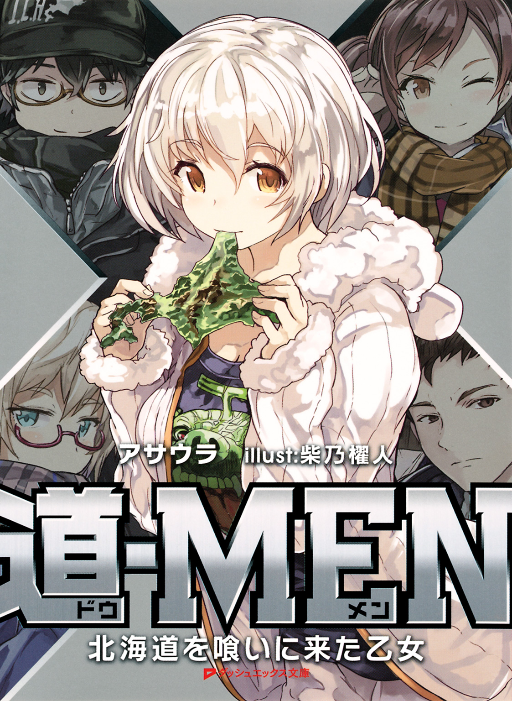
この本は縦書きでレイアウトされています。
また、ご覧になる機種により、表示の差が認められることがあります。
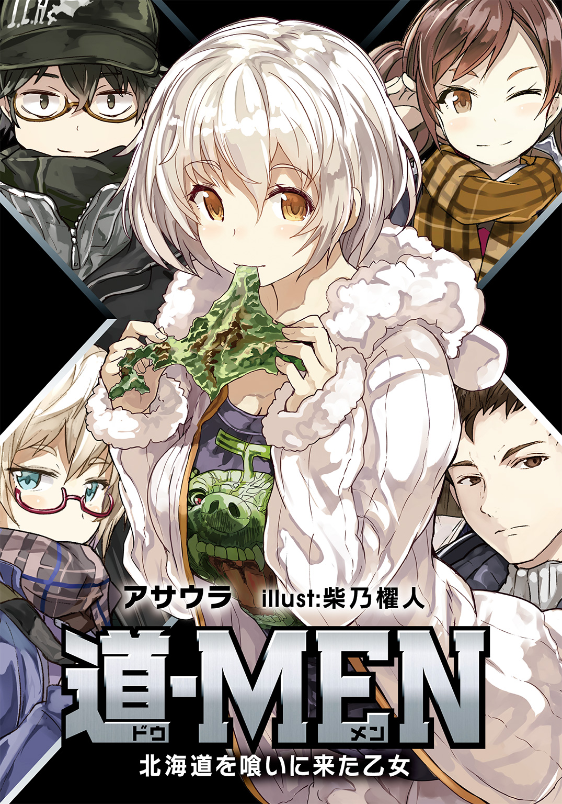
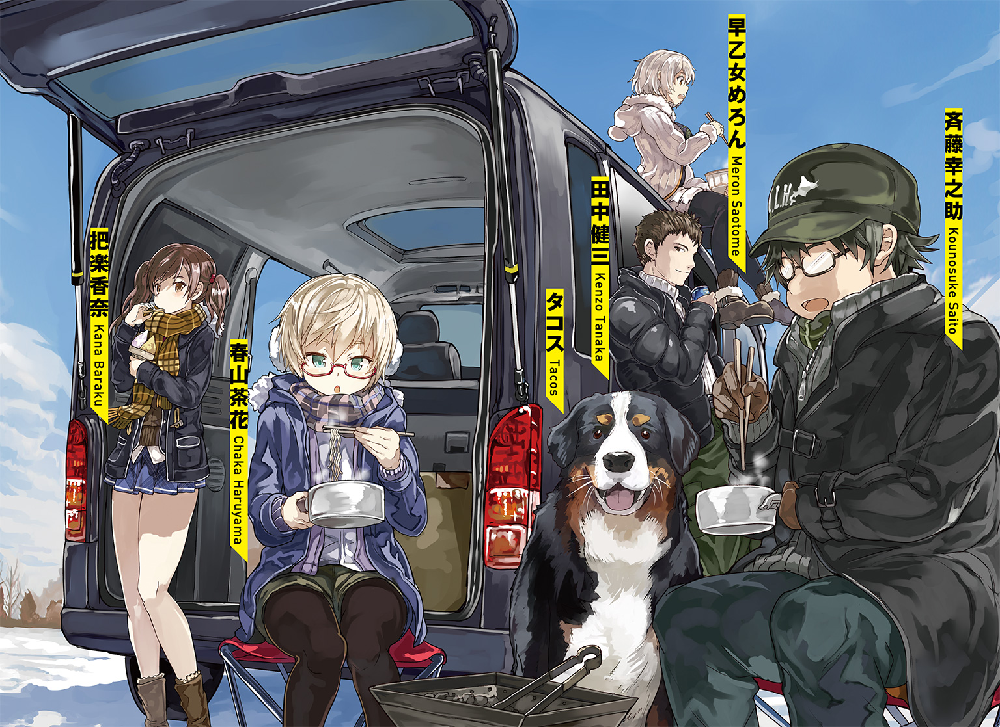
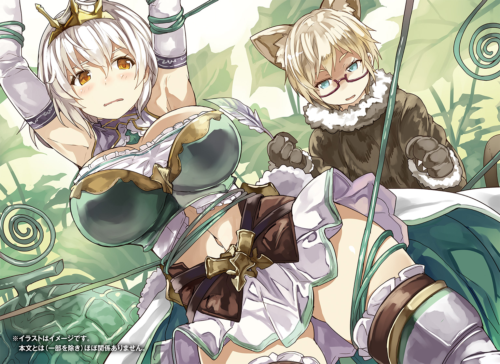
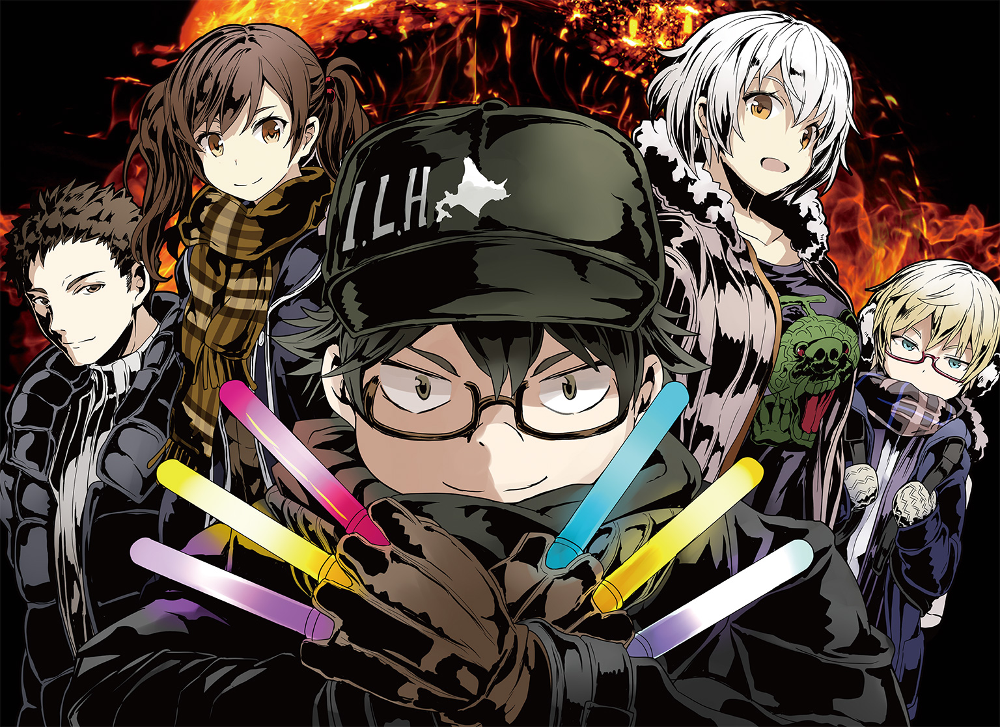
 ダッシュエックス文庫DIGITAL
ダッシュエックス文庫DIGITAL
道－ＭＥＮ
北海道を喰いに来た乙女
アサウラ
この物語はフィクションである。
だが、北海道は実在し、その過酷にして豊かなる幻の大地を踏みしめることは可能だ。
......ただし、お前にその《覚悟》があるのならば。
●プロローグ『広大なる陸の孤島』
正直に言えば、斉藤幸之助は生まれ故郷が好きではなかった。
ド田舎にもう一つ〝ド〟をつけたくなるような、そんな寂れた所――烏有町。
かつて夕張炭鉱が活発に稼働していた頃には、おこぼれをもらう形で潤いもしたが、一九七〇年以降は寂れるに任せるだけの終わった土地。
小学校への通学路は三分の一が砂利道。顔を上げて辺りを見渡したところで、どこまでも玉ねぎやジャガイモの畑が拡がり、そのさらに奥を見れば地平線の先にかすむ山々が聳え、自分達を閉じ込めているかのような印象を受ける――そんな土地。
こんな町が無数に存在するのが、北海道という大地だった。
幸之助の住む烏有町は、北海道の中央からやや西に寄った〝夕張郡〟と呼ばれるエリアに存在する。無限を思わせるほどの畑以外では、たまに夕張のゆるキャラ、メロン熊が夕張市を飛び出して徘徊しているぐらいの何もない場所だった。
当時、中学一年生だった幸之助は書物やネットに親しむに従い、世界の広さを知った。
物理的に言うのなら、烏有町は、そして北海道は広い。
東京二三区の約四〇倍、九州八県合計の約二倍、かつての日本全体の二二％に及ぶ広さを持っている。それに加えて、人口は東京が一三六二万人、一方の北海道は五三八万人という半分以下の、恐るべき人口密度の低さである。
土地はある。だが、どこまで行っても畑が続くだけの、どこにもワンダーのない退屈な世界。自然災害によるネガティブなイベントこそあれ、少年の胸をときめかせるものではない。
けれど、内地――青森以南――はそうではない。畑を抜け、山を越えれば海しかない北海道と違って、内地には東京や大阪があるのだ。
世界第三位の経済大国である日本の大都市にして、様々なサブカルを生み出す地。特に東京は、オタ心を有して生まれ落ちた幸之助にとっては聖地と言ってもいい場所だった。
行きたい。その存在を知った時から、そう思った。
あそこなら、世界と繫がることができるに違いない......そう、思った。
自分の好きなものがたくさんあって、自分と同じものを好きな若者が大勢いるに違いない。
この世界が大量の歯車で動く機械だとすれば、幸之助はそれらと一切関係のないところでカラカラと回る小さな歯車でしかない。
だが、東京にいけば......この世界と繫がることができるのではないか。そう思った。
けれど、同時に理解もしていた。それは無理なのだ、と。
――独立国・北海道は今もなお日本国との厳しい断交政策を執行中なのだ。
幸之助が生まれる以前に全道民による投票が行われ、最終的に『北海道独立戦争』と呼ばれる荒々しい独立運動の果てに、函館と青森の間、津軽海峡の真ん中に北緯四一度線という国境が生まれた。今では北海道自衛軍が展開し、行き来する者を拒む絶対の壁と化している。
こんなところは嫌だ。東京へ......イベントが無数に行われる、仲間達がたくさんいる、そんな場所へ行きたい。そう願った。......しかし、それを叶えるためには全てを捨てて亡命し、そして一生涯を内地人の管理下に置かれる『脱北者』となる覚悟を必要とするのだ。
仮に全てを飲んだとしても、果たしてその状態で自分が望む生き方が可能なのかどうか......それがわからない以上は、行動には移せなかった。
いつの頃からか、幸之助には、瞼を閉じれば感じられた。
同じ心を持ちて生まれ落ちた同志達の存在を、その猛る熱き気持ちを。
――芸歴二〇年の大ベテランアイドル声優の棚村ゆか（一七歳）の熱狂的ファン達の魂を。
もはや北海道に限らず、この世界に存在する彼らの情熱を感じられるとさえ思っていた。
棚村ゆかこと『ゆかちー』のライブが行われる時など、まさにそうだ。
会場に集いし幸福に酔いしれる者達はもちろん、そのライブに行きたくても行けない同志達の悶え苦しむその心までもが手に取るようにわかった。
広大なる陸の孤島・北海道で、幸之助は己の不幸を呪った。
硬く閉じた瞼から涙をこぼしながら、愛したが故に苦しむことになった哀しき運命を呪った。
どうして......どうして自分はあそこへ行けないのだ。
どうして同じ人を愛した者達と、その興奮を分かち合えないのか。
どんな辛さも癒してくれる棚村ゆかのハイレゾ音源の歌声ですら、この苦しみから救ってくれない。むしろ、心を傷つける。
これが田舎に生まれた者の宿命なのか。
明治の開拓時代より約束された苦しみなのか。
格安航空会社や北海道新幹線の登場により、北海道は内地に近づいたとされた。けれど、断交政策を採った今となっては、全てが過去の産物。
幸之助は苦しみに苦しんだ。
棚村ゆかへの愛に、同志達への嫉妬に、そしてこの厳しき北の大地の存在に。
そんな、一四歳の夏。
その時もまた、瞼をぎゅっと閉じ、苦しみに悶えていた。
ふと気がつくと、耳に聞こえていたＭＰ３プレイヤーが垂れ流す棚村ゆかの歌声が一際大きく聞こえた。
それに驚き、瞼を開いた幸之助は、さらなる驚愕を受ける。
それは、己の中に眠っていた恐るべき力――ＤＳＫ１７９遺伝子の覚醒だった。
●１章『現代の屯田兵と工作員』
それはちょうど、０時を回ったタイミングだった。
北海道が誇るコンビニエンスストア、セイコーマートが本日の営業を終えてシャッターが閉まりだした際、僕のスマホが緊急連絡を告げる甲高い音を上げたのだ。
本日最後の客として店を出た僕は一瞬足を止めるも、吹雪の中で立ち尽くすのはしんどいので、先に車内へ逃げ込むことにした。
せっかく買った『ザンギ』が冷めてしまう。店内で作る熱々の料理――ホットシェフのザンギは、普段からしてうまいものだが、これは閉店間際に無理を言って揚げてもらったものだ。
出来たてのこいつを無駄に冷めさせてしまうのは、罪だ。
緊急通知の異様な音を響かせながら、僕は黒いワンボックスカーの助手席に飛び込んだ。
「幸之助、雪を落としてから入れって」
運転席に座る長身にして筋骨隆々の男、田中健三は眉で八の字を作ってこちらを見てくる。店から車までわずかに一〇メートル少々だが、それでも僕のコート、そして帽子の上にはふんわりとした大粒の雪が積もっていた。
「緊急連絡が入ったんだ。......あー、これ、出動要請だな。珍しい」
キャップの雪を申し訳程度に足下へ払うと、僕はレジ袋を健三に渡して、スマホを見る。
「正月早々の密航者らしい。不審な点が多いため応援を願うとさ。......苫小牧か。札幌からだと、少しかかるな」
健三は小ぶりで摘まみやすいザンギを一つ口に放り込むと、シートベルトを締めて、ギアをパーキングからバックへ。駐車場を出る。
「任せろ。俺のハイエースなら、ぶっ飛ばせば一時間ちょいで着く」
「それは賢くないな。吹雪だ。以前みたいに国道で横転するオチは嫌だぞ。それなら――」
「安心しろよ、幸之助。......ハイエースに不可能はない！」
エンジンが唸りを上げ、車体に叩き付けられる風の音を吹き飛ばし、男二人を乗せた車が走りだす。目指すは札幌から約七〇キロ南、苫小牧の病院。季節は一月初頭。天候は道内全域に及ぶ吹雪。風速七メートル。気温はすでにマイナス六度に達していた。
僕らは、予定通りではないものの予想通りに、二時間と三度のスリップを経て、無事に苫小牧の病院へ到着した......が、そこでいきなり閉口してしまう。
「ですから、緊急とはいっても夜間ですから御親族の方でもないと......。何より身分を明かしていただけないとなると、ちょっと......」
だから、と僕は今一度病院の受付へ向け、手帳タイプのスマホケースを突き出す。水戸黄門の印籠よろしくのスタイルではあったが、効果の程はよろしくなかったようだ。
受付の男性は困り顔をするばかりである。
手帳型のケースには、北海道のマークが描かれ、そこに僕らのモットーである【Ｉ・Ｌ・Ｈ】の文字が表記されているのだが......伝わらないらしい。
「なぁ、幸之助。それ、今まで一度も効果発揮したことねぇし、いい加減諦めて部隊名をきちんと書こうぜ。警察でさえ、手帳にゃＰＯＬＩＣＥって書いてあるんだ」
「バカな。道内在住の職人、川奈野克也氏、御年七七が一つ一つ真心込めて作った至高の逸品だぞ。これに手を加えるのは失礼だし、そもそも機密部隊が組織名を書いてちゃダメだろ。......札幌と函館、あと旭川ならマークだけで通じる......はずだ」
「ここは苫小牧だしよ。それに札幌ったって、俺、この前財布忘れたまま琴似のラーメン屋行って、金取ってくるまでの質草にしようとしたら〝それじゃダメだ〟って拒否られたぜ」
「......健三、お前、道の特殊機密部隊の身分証を気軽にラーメン屋に渡そうとするなよ......」
「道軍とごく一部の警察関係者ぐらいにしか通じねぇレベルの知名度だぜ、これ。せめて、警察とかみたいに一目で公的組織ってわかる制服用意した方がいいんじゃね？」
僕は眉根を寄せて、今一度相棒たる健三の全身を眺めた。
造りは悪くない、というよりむしろ十代の頃は美少年と呼ばれたのではないだろうかとさえ思える整った顔立ちに、身だしなみという概念を忘れた二〇の男。頭は寝起きのようにボサッとしていて野暮ったさ全開、一八〇を越える長身に実家の農業を手伝い続けることで育まれ過ぎてしまったガッシリとした骨格により、背が高いというより、デカイという印象が強い男だ。今はボリュームたっぷりの黒いダウンジャケットを着ていることでさらに膨らみ、遠目にはもはやゴリラである。そしてお洒落とは無縁の生地のしっかりとした実用品のカーゴパンツに、ウレタンによる断熱とクッション性を備えた雪道対応型の耐寒長靴（小樽で作られる極上品）。恐らくインナーとしてモモヒキも装備済みだろう。
彼を見ていると......うん、まぁ、確かに制服は用意した方がいいのかもしれないと思えてくるな。これでは除雪作業を抜け出してきたような実用特化型スタイルだ。
しかし、特殊機密部隊がそれとわかる格好をしているのも問題だろう。黒スーツとは言わないが、せめて僕ぐらいには彼もファッションに気を遣ってくれればいいのだけれど......。
僕は自分達が入ってきた病院のガラスドアを見れば、ハーフミラーとなって己の姿が映っていた。......うん、やはり、悪くない。
ブーツにカーゴパンツ、上には防水のレザー風コート。その下には登山用の厚いフリースをしっかり着込んだ上でマフラーを巻き、頭には鍔付き帽子。手には革手袋である。
何度見ても悪くない。かけてる眼鏡も薄型の洒落たヤツだ。機密機関に所属している若者感が出ていて、格好いいではないか。......あとは、瘦せるだけだ。
自分で言うのもなんだけれど......僕は、どう贔屓目に見ても、ふくよかだ。
つまり問題は......瘦せれば、そう、瘦せさえすれば全て解決するに違いないのだ。
とはいえ、いまだ一七歳の現役高校生だけれど、この体型のせいで年齢不詳の不審な外見になっており、大人と面と向かってやり合う際には便利なのだ。だから、僕らの部隊がメジャー化して、いちいち交渉して権利を主張しなくてもいいようになるまでは、この体型でいるのも仕方ない。瘦せようと思えば、簡単に瘦せられる。......うん、いや、うん、まぁ、多分。
「あぁ、その人らは通してください。こちらで呼んだ人です。......ですよね？」
奥から看護師と共に現れた警察官に、僕は手帳型スマホケースを突き出す。すると警察官は「あー......はい」というとても曖昧な言葉で応じ、〝まぁ多分大丈夫だろう〟的な空気感バリバリのままで個室の病室へと案内してくれる。そこの出入り口にも見張りの警察官がいたので、僕は手帳型スマホケースを向けて身分を明かすのだが、やはり「あぁ......はい」といった対応をされてしまい、慰めるように健三に肩を叩かれてしまった。......畜生。
不満を抱えたまま、病室のスライドドアを開ければベッドに横たわる女性の姿。かなり若い。まだ十代そこそこだろう。
なるほど、呼ばれた理由がわかった。通常、北海道警察で対処することになっている密航者だが、この姿では僕らの協力を仰ぐのも致し方ないだろう。
「不審な点が多すぎて......密航者と断定ができず、連絡を躊躇いました。しかし万が一を考え、こうした特殊な状況を専門に対応するらしいあなた方に連絡を」
彼らの話によれば、昨日午後一〇時過ぎ、貨物船が苫小牧の沿岸から七キロの沖合で泳いでいる彼女を発見。マイナス気温の中だ。慌てて救助しようとしたが、甲板に引き上げる際に少々手間取り、その間に気を失ってしまったのだという。
「ふむ。だが、それだけだと単なるパンチの効いた水泳大好き少女か、自殺志願者の可能性の方が高い。何故、密航者だと？」
僕が尋ねると、警察官はタブレットＰＣを取り出し、北海道海上保安庁からの報告を出してくれる。そこには、沿岸から一五キロの沖合で油及び船体と思しき破片が少数確認されており、またこれと前後して日本国との国境ギリギリに大型船の航行があったとする記録があった。
なるほど。恐らく大型船から動力付きのボートを下ろし、夜闇に紛れて密航しようとしたのだろう。だが、昨夜から続くこの悪天候のせいで、難破したのだ。
「密航者とするにはいささか若過ぎて、判断に迷いました。しかも救助のためとはいえ、道民が陸地にまで運んでいるので、密航者なのか単なる領海侵犯なのかも難しいところかと思いまして。ちなみに所持品はそちらに。衣服だけで、これといったものはありませんが」
証拠だからなのか、それらは濡れたままゴミ袋にまとめられて棚に置かれていた。僕と健三が中を覗き込むと、女性らしい、というよりは女の子なフリルの多用された衣類だと知れる。
健三がスカートを広げてみせると、感嘆の息を漏らした。
「こんなもん着たままよく泳げたもんだ」
「あぁ。重かったろう。しかも......お、これ、随分とかわいらしいパンツを愛用して――」
手を伸ばしかけたところで、さすがに僕の理性が待ったをかける。同年代のぐしょぐしょに濡れた女の子のパンツ――仕事とはいえ、触れていいものなのだろうか？
うーん、微妙だ。実に微妙なラインだ。触れたいような触れたくないような微妙なライン......しかも圧倒的なまでの潮の匂いが付随しており......。
これが単なる使用済みパンツであろうものなら、検分のために鷲摑み、頭上に掲げてじっくりと鑑賞するところなのだけれど......。
躊躇う僕の横で、健三は迷いなくゴミ袋に手を突っ込んでいく。
「変な物も特にねぇし案外本当に......ん？ おいこれを見ろ幸之助！ こいつぁ......!!」
健三が驚愕の声を上げた時、僕はすでに察し、半ば反射的に動いていた。
身を翻し、ベッドの掛け布団を一気に剝ぎ取る。
その瞬間に、来た。万年筆を握り絞めた少女の手。それが僕の顔面を狙っていた。
首を捻ってそれをかわしつつ、僕は目を細めて状況を読み取る。先程まで意識を失っていたはずの少女が、今や病院着をはためかせ、ベッドの上で、立ち膝で攻撃を仕掛けてきている。
いい身のこなしだった。身体能力に秀でた道民並みの反射神経だ。――だが、甘い。
僕はかわした体勢のまま距離を詰めて、ベッドへタックルをかます。
ふくよかボディの体当たりはそれだけで強大な衝撃を生むのだ。
ベッドが壁にまでぶっ飛び、盛大な音が響き渡る中、上にいた少女が転げ落ちる。硬質の床に柔らかな体が叩きつけられ、ペチャッと音を立てるも、すぐさま僕に向かって再度万年筆を突き刺さんとしてくるが、苦し紛れのその攻撃は軽く半歩下がるだけでかわせた。
少女はすぐさま身を転がして距離を取り、重心を落としつつ万年筆を構える。
「......狸寝入り、ヘタだったかな」
スッと耳に入り込むいい声だ。女性的な繊細さと柔らかさを含むも、どこかボーイッシュ。
優しげな顔付きに収まる二つの目には必死さが滲んでいるものの、体はこの状況で少しも震えていない。大したタマだ。......だが、問題はそこではなかった。
「まさか本当に工作員なのか......!?」
背後で慌てふためく警察官らに、僕は手の平を見せ、病室から出るように指示した。
あるはずの万年筆がなくなっていることに気づいたのか、胸ポケットに手を当てていた警察官が、しかし、と声を出すも、僕はなおも出ていくようにジェスチャーする。
......ここから先は、あまり人に見せるものではない。
「健三、お前もだ」
「そりゃないぜ、幸之助。相棒じゃないか。俺も交ぜろよ」
「知ってるだろ、僕は独り占めが好きなのさ。......分ける気はない」
「知ってるはずだぜ。俺はそういうのにお邪魔するのが好きなんだ。......いいじゃねぇか」
確かに、いい。とてもいい。だからこそ、だった。
「君達、私と同年代かそれぐらい？ その様子......何者かな？」
少女の言葉に、僕は健三に目配せし、呼吸を合わせる。
来た。ここしかない。その気持ちを胸に、僕らは同時にスマホケースを突き出した。
「「道ＭＥＮだ」」
毎晩のように二人で練習した甲斐があった。完璧なハモり具合。実に満ち足りた気分だった。
「札幌ラーメンの一種だね？ 初耳だよ、どこで提供されているの？ 何味？ 具は？」
ほぅ、と少女は感心するような顔をするので......ちょっと困った。
「いや、勘違いした上にそっちについて掘り下げられると困るんだが......僕らは、『北海道特殊機密部隊道ＭＥＮ』だ。......工作員なら当然知っているだろう？ 現代の屯田兵ってやつだ。普段は一般人としての日常生活を送りつつも、今回のような、いざという時に出動し、状況に対応するスペシャリスト集団......それが、僕らだ」
「確かに噂で北海道特殊機密部隊は聞いたことはあるけれど存在は確認されていない。仮に実在していたとしても、自ら名乗るバカはいないと思うんだけど、違うかな？」
「噂や冗談だと？ ......お、おい、幸之助、これは問題だぜ。マークしかねぇスマホケースを見せて理解されないのはともかく、組織名すら通じてない気配だぞ」
「あぁ、マズイな......大きな問題だ。メロン熊に出演までしてもらって宣伝動画を作ってユーチューブにアップしたってのに、噂や冗談レベルだと......。動画視聴回数が五〇〇ぐらいしかなかったあたりで嫌な予感はしていたが......」
「そんな少ねぇのかよ!? 確かあれ制作費に三〇万ぐらいかけてただろ！ 一回見てもらうのに六〇〇円かけてんのかよ！ 何が哀しくて俺達ゃメロン熊の後ろで踊ったんだ!?」
「やはり僕達二人より女性陣を出すべきだったか......。ともかくこれは今後の課題にしよう。......ありがとう、いい情報をもらえた。ちなみに僕達は本物の道ＭＥＮだ。僕はリーダーの斉藤幸之助。後ろの除雪作業員風味なのは田中健三」
「まぁ、冬の間は主な仕事がそれだから、風味っつぅか、本物だがな」
特殊機密部隊という響きが格好良かったのもあるが、それ以上にこの手のものはイギリスの秘密情報部ＭＩ６のように、公的には認めていないのに存在は口々に伝えられ、恐れられ、むしろ有名になり、抑止力に......という淡い希望を抱いて結成時に決まったのだけれど、少数精鋭の部隊のためにあまりに目立った活動がない上、噂が拡がるには北海道という大地はあまりに広大過ぎたのだ。そのためＰＲ活動に本腰を入れ始めるという本末転倒も甚だしい状況だったのだが......ネットもまた、予想以上に広大なようだ。日本国にここまで知られてないとは。
そのことを自虐的に語ると、少女は焦りを表情に浮かべ、唇を嚙んでいた。
「つまり、僕ら道ＭＥＮは一応特殊機密部隊だが......存在そのものはもっとＰＲして、その活動を広く認知してもらうよう頑張っているところだ。だから、名乗ること自体は問題じゃない」
そう、部隊自体は機密ではない。機密にすべきところは、他にあった。
「なるほど、単なる冗談や噓ではないみたいだね。......ちなみに名前が似ているけれど、アメコミのＸ―ＭＥＮとは何か繫がりがあるのかな？」
「......そこは僕達も著作権的にちょっとビビっているところだから、あまり触れないでおいてもらえるとありがたい」
組織名を決める時に何となく決まっただけで、これといった理由はないのだ。
......道民を格好良く言ったらドゥミェンってなって、それで......。
「了解したよ。......でも困ったね。もし君の言ったそれが本当だとするのなら......私は今大ピンチってことじゃない」
「やはり工作員か。......とはいえ、まだ何もしていないだろうし、おとなしくしてくれるなら事情聴取の後に、強制送還するだけで事を済まそうと思う。......その万年筆は高そうだ。あの警察官に返してやってくれないか。きっと、進学祝いか就職祝いで貰ったものだろう」
少女は一度万年筆を見やると、バツが悪そうな顔をしてそっと投げてくれる。
悪いね、と僕は受け取るために視線を少女から外し、放物線を描く頭上の万年筆へ――。
「でも......生憎と私はまだ捕まるわけにはいかない。命を懸けてでも成し遂げないといけない使命が......あるっ!!」
少女は僕らの隙を突いて、素足のまま地を蹴り上げると、窓へ向けて飛んだ。
バカはやめろ！ 健三がそう叫ぶも、すでに遅かった。
顔面を両手でガードした少女は窓にタックル――するが、バゴンッと鈍い音と共に逆に跳ね返され、またも床を転がったのだった。
「......北海道の窓ガラスだぜ？ 断熱効果の高いブ厚い複層ガラスなんだから、そう簡単にぶち抜けるわけねぇってのに......お!?」
健三が固まり、僕は息を呑んで、受け取った万年筆を強く握る。
頭を打ったのか、少女は意識を失い、横向けで床に倒れているのだが......薄手の病院着がはだけていた。
いい。さっき彼女が身構えていた際に確認した通り、実にいい。案の定だ。
濡れたままの衣服の中にパンツと共にブラがあり、健三共々僕はそれに気づき、反射的に掛け布団を捲ったのだ。
この少女――巨乳である。北国の女性のバストは小ぶりであり、平均サイズはＢだとされている。恐らく表面積を抑えて体温を維持するように進化した結果なのだろう。
そんな中で生まれ、過ごしてきた僕らにとって、この少女の巨乳は驚異的だった。横向きになることで、両腕で胸を押す形となり、その大きさのアピールは尋常ではない。はだけた胸元から今にも全部が丸出しになりそうながら、トップだけは隠れているのが小憎らしい。
いい。実にいい。しかもポッチャリでもなく、むしろスラリとしたスタイルの彼女ながら、胸だけが突出して大きいというのが素晴らしい。今見えている乳房の大きさといい、全体の細さといい......これはもしかしたらＥを越えているのではないだろうか......？
おっぱいは、素晴らしいものだ。けれど、それだけではダメなのだ。いまだ思春期を抜け出していない少年と青年の狭間で揺れる僕らは、ただ豊満な乳房があればいい、というわけにはいかない。やはり、ある程度細身であってほしい。我が儘だというのはわかっている。二律背反な願望だとは思うが、それだけは譲れない。
そして、この嗜好は健三にもピッタリと当てはまる。とはいえ、彼の場合はもう少し年上で、プラスαの要素があるとなおいいらしいのだが......あっ。
「思わず言葉を失ってしまったが......健三、僕は今、大事なことに気がついた」
僕は顎でとある場所をクイッと示す。するとやはり乳房を凝視していたであろう健三が、ハッ！ と、文字通りに声を出して驚愕した。
僕は、愚かだ。すぐに気がつくべきことだというのに......注意力が足りていなかった。さっき自分達で確認したというのに。
そう、彼女は今......ノーパンで、はだけているのだ！
胸のインパクトには負けるが、ぷりんっとしたお尻が病院着から顔を出している。横向きで倒れているため、立っている男二人には合法的な部分しか見えていないが......露となっている太ももからウェストにかけて、遮るものが何もないというこの光景は......二人に動悸を起こさせるのに十分なパワーを持っていた。
今、下から覗き込めば......全てが見える。
そうだ、宇宙の真理に今一歩近づくことになるのは間違いない。しかも福音を与えんとする女神は昏倒中という非常に都合のいい状況。
おっぱいが大好きでたまらない二人とはいえ、下腹部のそれともなれば少々話が違ってくる。モロだしの乳房とパンチラなら、躊躇いなく乳を取る。着エロの乳房とパンチラでも、まだ乳を取る。だが、下がモロ出しとなれば......。
僕は己が未熟であることを意識せずにはいられない。全てを差し置いて乳だけを特別視して拘り続けられるほど、その愛は純化されているわけではないのだ。
次なるステップへ進むためにも、ここは拝むべきなのかもしれない。一度拝んでしまえば、やはり乳だな、と思えるかもしれない。だから......いや、理由などどうでもいい。拝みたい。拝み倒したい。......だが、問題はすぐ隣に相棒と呼べる友人がいることだった。
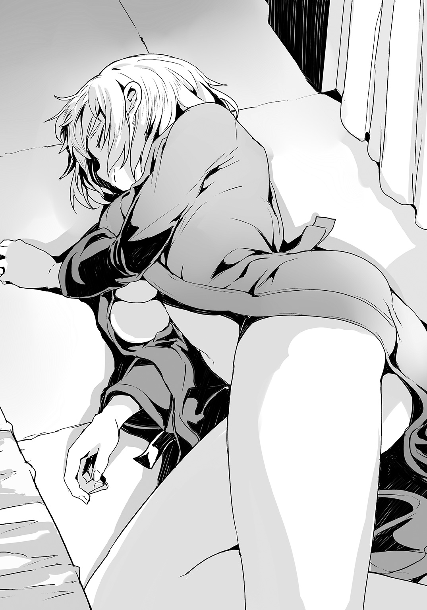
ここで知らない人間だったならば、ゲスな笑みを浮かべつつ、ここはひとつ二人一緒に......とでもやれるのだが、気心知れた相手では逆に躊躇いがあった。
がさつな日本国民ならば二人で一緒に襲ったりもするのかもしれないが、まだ若い僕と健三、しかもシャイで有名な北海道民の男子二人では、そんなことは恐れ多くてできはしない。
だから、拝むのだ。......そう、拝みたいのだ。見知らぬ世界を見てみたいのだ。
女体から横目で相棒を見やれば......健三もまた、僕を横目で見ていた。
二人の視線が交じり合い、友人であるが故の嫌な緊張感が病室に満ちていく。いっそこの場で奴の脳天に万年筆を突き刺し、その後にゆっくりと参拝するのはアリではないか......そんなことを考えた始めた時、病室のスライドドアが開く。
その瞬間、二人の行動は完全に相棒と呼べるそれだった。健三が出入り口をその巨体で塞ぎ、それと同時に僕は床にあった掛け布団を蹴り飛ばし、少女の体をそれで覆った。
室内に顔を覗かせたのは先程の看護師と警察官。二人は恐る恐るという様子だったが、床に倒れている少女を見て、ギョッとする。
「凄い。内地からの工作員を......。これが道ＭＥＮ......本当に、本物だったんだ......」
警察官の呟きに、今更巨乳を見るために本能的に布団を捲り上げただけだとは言えなかった。
彼に万年筆を渡し、健三と共に病室を出る。
「看護師さん、彼女に手当てを。頭を打ったはずだ。......あぁ、今回は本気で気を失ってるはずだが、念のため先に拘束しておくことを勧める」
僕ら、道ＭＥＮの男達は、暗い廊下に靴音を響かせ、歩きゆく。
何をしたわけでもないが、大きな仕事を一つ終えたような、そんな気分だった。
「......惜しかったな」
絞り出すような健三の言葉に、僕は小さく笑った。
「お互いにな。道産子の決断力のなさが出た。......熱い缶コーヒーでも飲もう」
真冬の缶コーヒーは熱くて苦く、そして、うまい。
１
あの工作員秘部参拝未遂事件から三日。いまだテレビは正月特番を垂れ流すも、人々は当たり前に働きだすことに慣れてきた、そんな頃......僕は北海道の空の玄関口、新千歳空港にいた。
今朝方から大雪が降り続いたことで健三は除雪の仕事に出たのか、連絡がつかなかったので、今日は車ではなく、電車移動だ。
新千歳空港は道ＭＥＮの詰め所がある札幌から快速を使えば四〇分程度で行き来でき、冬であれば車よりはるかに速い。ちなみに雪のない季節なら......運転手のテクと倫理次第だ。
僕は耳をイヤホンで塞ぎ、棚村ゆかの心弾むかわいらしい声を聞きながら、駅のホームがある空港地下からエレベーターで商業施設がひしめく二階へ向かった。
新千歳空港は、巨大だ。お土産売り場や食事処などを大量に抱えているため、まるで巨大なショッピングモールのような場所となっており、飛行機に乗らずともここで一日遊びまくることもできる、そんな場所だった。
日本国との断交政策以降は中国、台湾、韓国、オーストラリア、インドネシア......そういった外国との交流が盛んになっているため、飛び交う言葉だけを耳にしていると、何とも異国感のある場所となっており、それもまた今の新千歳空港らしい趣となっていた。
スマホが震える。見てみれば、着信。相手は『芭楽香奈』――健三の代わりにと、僕が呼んだ道ＭＥＮの一人だった。棚村ゆかの歌声と一旦お別れして、電話に出る。
『あ、デブ？ 約束の時間、割と過ぎてね？ 人を呼び出しておきながら何してんだよ』
「電車が雪でちょっと遅れたんだよ。今ついたとこだ」
冬の北海道でバスの時刻表ほど頼りにならないものはないが、電車とてそれは変わらない。雪の影響を受けないのは地下鉄ぐらいなものだ。
二階の中央エリアは開けており、そこに置かれているベンチに香奈の姿を認めた。
ダッフルコートの背中、上に出ている頭はツインテール。そして......。
「相変わらずその格好か、香奈」
電話を切ってその背に声をかければ、香奈はすらりと立ち上がり、振り返りざまに僕を睨む。
「用事が早く終わるんなら、たまには札幌でも行こうと思って。......なんだよ？」
少しむくれた香奈に対し、別に、と僕は苦笑う。
彼女はムートンブーツ、チェックのスカートにスクールベスト、その上にブレザーとコート、首にはバーバリーのマフラー――要は制服で、普段の通学時の格好だったのだ。
芭楽香奈は、僕と同じ烏有高等学校に通う高校二年の女子高生である。なのでその格好自体はおかしくはないのだが、冬休み真っ最中の正月早々、しかも新千歳空港である。
空港に制服となれば修学旅行生と相場は決まっているが、さすがに正月に強行する物好きな学校はなかなかあるものではない。何より札幌に行くから、というのが笑いを誘う。
都会に打って出る際、制服を着るのは私服に自信がない田舎娘が採る常套手段だ。
烏有高校の制服は小生意気にどこぞのデザイナーに発注したもので、世間からの評判がいいというのもあるのだろうが、不自然だとしてもそれに頼ってしまうあたりが香奈らしい。
高校生になった際に一念発起してやたらとかわいらしく化けたものの、それ以前は『I am High Level』と書かれた謎のビッグサイズ・トレーナーやらウィルソンのジャージ（上下）を日常的に着こなし、公道を走らなければ違法じゃないとして、農道から農道へとオンボロスクーターを無免許のうえにヘルメットなし、時には妹と弟を乗せてまでして、僕の家へ頻繁に遊びに来ていた強者なのだ。【※私道・農道であってもアウトです。厳密には】
そんな彼女に自分のセンスで私服をチョイスする勇気はまだないのだろう。
「こっちはわざわざ寝ていたパパを叩き起こして空港まで運んでもらったんだから、そのあたり、わかってるべ？」
ちなみに親父さんは香奈の妹と弟を連れて、空港内にある『ドラ●もん わくわくスカイパーク』へ行ったのだそうな。お疲れ様である。
「親父さんには今度ラーメンでも奢ると伝えておいてくれ。それより仕事だ」
「健三と捕まえた工作員だか密入国者だかの関連だべ？ アタシ、いるかぁ？」
「念には念を入れて、僕のボディガードだ。《守護者》、道ＭＥＮの務めを果たせ」
その呼び名はやめろよ、と香奈はマフラーに顔を埋めるようにしてまたむくれた。
「だいたい何でデブが働く必要あるんだ？ 警察か軍に任せればいいべぁ」
「名指しで呼び出されたのさ。......工作員、本人にな」
香奈が何かを続けて言おうとしていたが、僕の視界に空港内をキョロキョロしながら走る男の姿が入ってきた。その背には北海道警察の文字。
「そこの道警。道ＭＥＮ、斉藤幸之助だ。僕を探していたんじゃないかな」
「あ、こ、これはどうも。それもあるんですが......実は、例の少女に逃げられました」
耳を疑った。例の少女とはあの工作員のことのはずだ。通常、強制送還する際は手錠と腰縄を付けられ、航空機か船で内地へと戻されるはずだ。それらを全て外したのか......？
「それが、電話でお伝えしたかと思うのですが......政治が介入しまして......」
「拘束し続けられなかったか。チッ、やられたな」
断交政策中であれ、間接的であっても道と日本国の繫がりは今もなお存在している。
特に企業のそれは太い。北海道は日本国とは完全に近い断交状態であるが、他の諸外国に関しての窓口は逆に広く設けられている（だから、鎖国ではないのだ）。それを使われた。第三国経由で複数の道内大手企業に働きかけ、そこから道庁にまで圧力が達したのだ。
彼女は揺れる観光用客船から不運にも転落した被害者だから、さっさと本国に返せ、という無茶な言い分だったらしいのだが......道庁はこれを通していた。恐らく大金が動いたのだ。
「逃げられたのはいつだ？ ......一五分ほど前か。急ぎ検問を敷き、電車の発着も緊急停止しよう。空港から外に出すのはまずい。大雪の影響だとするのが無難だ。急げ」
道警の男は困惑していた。しかし、と口にするので、僕は道ＭＥＮの手帳を突き付けた。
「北海道特殊機密部隊道ＭＥＮ部隊長斉藤幸之助からの正式な提案であり、これに関しての責任は可能な限りこちらで持つ。頼む、北海道自衛軍を動かさずに終わりにしたい」
管轄が違うために、道警に対して命令はできずに提案という形しか取ることができないが......いざとなれば僕には、軍を動かす権限があった。
無論、新千歳空港は、北海道航空自衛軍千歳基地と隣接しているため、そこの人員を空港周辺に展開するのが手っ取り早く確実とはいえ、たかだか一人の工作員にそこまでするのは大げさだ。だが、見た目は年齢不詳とはいえ、妙に若そうな僕の提案を大の大人である警察官が受け入れにくいだろうと思い、脅しの意味合いで名を挙げたのだ。
警察官の顔に焦りの色が生まれ、了承すると共に無線機を手にどこぞへと駆けていく。
「あれ？ ひょっとしてこれ、シリアスなやつ？」
「違うって言いたいが、どうかな。この前の時は普通に襲われたし。最悪戦闘になる」
「それならアタシよりチャカ用意した方がいいんじゃね？」
「それは......避けたいんだよなぁ。使うと面倒臭いから......。っつぅか、お前、さっさと自由になって遊びに行きたいんだろ」
うっせぇ、と言い捨てると香奈はスマホを弄りだし、その通りだよ、と最後に付け足した。
「札幌行って、何するんだよ」
「まずは正月バーゲンの残りを漁って、そんでもってゲーセン。メイン目的はコインゲーム。あ、スロットじゃねぇぞ？ 何か大きなマシンを複数人で囲んで、ジャラジャラってラスベガスみたいな感じで楽しいらしいんだ」
「香奈、そんな趣味あったっけ？」
「遅れてんなぁデブ。今のイケてる大人の間じゃなまらブームなんだぞ。......って、雑誌に書いてあったんだよ......」
最後小声になっていったりもしたが、そんなことは問題ではない。さすがに耳を疑った。
「......お前、いったいいつの何の雑誌読んでやがる......。多分、その流行って、お年寄りの......いや、まぁ、お前がいいなら別にいいんだけど」
パチンコとかよりも安価で、麻雀よりも気軽に楽しめてボケ防止にもなるということで、何年も前からゲームセンターにお年寄りが大挙して押し寄せている......というのは聞いたことがあるが、イケてる大人の間で流行っているとは少なくとも僕は聞いたことがなかった。
田舎者ほど都会に憧れ、都会に染まろうと必死になるものらしいが、香奈の場合はそれが顕著だ。口調と違って根が素直なせいなのか、たまにこういった酷い勘違いを起こし、人を呆れさせることがあった。しかも、大抵が数年遅いという切ないおまけが付く。
「お、早ッ、返信来た。チャカの到着まで最短で一時間半ってとこみたいだぞ、デブ」
雪はあらゆる交通手段を遅らせる。快速電車で通常一時間一〇分程度だが、雪を考慮すると実質二時間はかかるだろう。遅れる前提で動かなくては、冬の北海道ではやっていけない。
「んじゃまぁ、そんだけあるなら何か喰うかぁ。もちろん、デブの奢りな。アタシ、とりあえず『ミルキッシモ』の......何だよ。守ってやんだから奢るの当たり前だべ？」
誰かを〝守る〟のは香奈の仕事であり、それに関しては給料が支給されているのだから、釈然としない。が......昔からこんなノリなので、今更何か言う気もない。
経費から落とそう、と僕は心に決め、スカートを揺らして歩きだした香奈の後に続く。
歩む彼女の足は、相変わらずいい足だった。
地元の田舎道で鍛えられたそれは、健康的に引き締まっている。
女性の足はどこからどう見てもいいものだが、短いスカートから覗くそれを拝むのは、後ろからのアングルが最も輝いていると僕は思っている。引き締まった脹ら脛、張りのある太もも、そしてそれらを繫ぐ秘部の如き柔らかな膝の裏......正面からでは楽しめない。何よりそれらをじっくり眺めたとて、当の女性本人に視線を勘づかれることがないのも、嬉しいポイントだ。
世の中にはいやらしい目で見ているのがバレるかもしれない、という緊張感が大事だという上級民族もいるそうだが、シャイでチキンな北海道男児の僕は後ろから見るのが一番いい。
しかしもったいない。香奈自慢の御御足はいいものだが、その〝良さ〟を胸にも分配すればいいものを......。そうしたらたまには揉んでやらんこともないのに......。
いつものようにため息を胸中で吐いていると、ミルキッシモの店頭が見えてくる。
ミルキッシモは、函館に本社を置くジェラートショップだ。
おいしいのは間違いないのだが、何よりもこの店には、とある〝強力な引き〟があり、道外の人間なら確実に足を止めてしまう。しかも、ＪＡＬの出発口近くにあるのがまた、うまい。そのつもりがなくとも、多くの人が保安ゲートを潜る前にここで足を止め、北海道最後の思い出を作ってしまうのだ。
「困った。......本当に、どうしよう......」
ミルキッシモの隣の店舗で女の子が一人、顎に手をやり、真剣な表情で立ちすくんでいた。
ん、どした？ 香奈がいつものように何ら躊躇いなく話しかけていく。
香奈は......というより、芭楽一族がそういう性格なのだ。
「ん？ あなた......学生さん？ 道内の人？ そうなんだ。それなら知恵を貸してほしいんだけれど......いいかな？」
今日もやはり鉄板の味を......と心と胃袋がすでにミルキッシモ一色になっていた僕はハッとした。その女の子の声は、柔らかくもほのかにボーイッシュ......聞き覚えがあった。
ゴミ捨て場から拾ってきたような靴にくたびれたスカート、ボロボロのドカジャンを羽織った彼女。その胸元には......メロンが二つ。顔を見るまでもなかった、例の工作員少女である。
何してんだコイツ！ と反射的に身構えるも、彼女は僕に気づきもせずに、一心不乱に......ミルキッシモの隣にある空弁の店、『美食千歳』のショーウィンドウを見つめていた。
「北海道の味を楽しむとしたら、どれがベストだと思う？」
「んー、今のアタシなら『農家のベーコンカツサンド』一択だけど、北海道の味がどうこうってんなら、やっぱ海鮮系じゃね？」
「それでも種類が豊富だよね。そうすると......あれ？ 確か、道ＭＥＮの幸之助君......だったかな。君ならどうする？」
「うん、よし、ナチュラルに話しかけてくるなよ、逃走工作員め」
香奈が「え!?」と声を上げるも、そちらに話している余裕はない。いつまた襲われるかわからない以上、僕は万全を期すために香奈を盾にするように移動した。
「いったい何をしでかす気だ？ 僕を呼び出し、道警の手を逃れて、それで――」
「待って。そんな些細なことはどうでもいいの。今はこの豊富なお弁当ラインナップの中からどれを選ぶか、そこが重要。......この三日ぐらい、留置所みたいなところでコンビニのお弁当とパンしか食べさせてもらえていなかったんだよ」
工作員の声には余裕のなさというか、妙な焦燥感があって、思わず僕は言葉に詰まる。しかしここで押し負けるわけにはいかないと、気張って言葉を紡ぐ。
「......僕が喰ったことがあるのは、そこの『北の海鮮鮨』だ。蒸しウニ、ほぐしたカニ、いくらで、三色の虹を描いたような見た目からして誘ってくるだろ。味も良かった」
「君を呼び出したかいがあった。店員さん！ このおいしそうなお弁当を一つ頂戴！」
工作員がポケットというポケットを漁り、ありったけの小銭を取り出してコイントレーにぶちまけるのを見ていると、香奈が僕の上着を引っ張った。
「あの巨乳女、まさか工作員なのか？ そいつ、逃げたんだべ？」
「工作員だ。間違いない。逃げたのは......ひょっとしたら、単にはぐれただけかも。取り敢えず道警に連絡を......あ!?」
香奈に視線を向けている間に、工作員の姿が店頭から消えていた。やられた――。
僕はスマホを取り出しつつ身構えるのだけれど、あれ、と香奈がどこぞを指さした。見やれば、ミルキッシモの店前にあるテーブルに工作員が陣取り、猛烈な勢いで弁当を喰らっていた。
お土産が主に扱われるエリアのためか、店内に飲食スペースを持つ店はほとんどない新千歳空港の二階フロアだが、代わりに一定間隔でテーブルと椅子が用意されているのだ。
警戒しながら二人で近づいてみると、すでに弁当は空となり、工作員は割り箸を握り締めながらぷるぷると震え始めていた。
「おい、工作員......お前、いったい何が......」
「......お、おいしい......ウニにカニにいくら......北の贅沢がコレ一つにむぎゅっと収まっていて、それでいてお弁当でありながら生臭みもまったくなくて、丁寧な仕事を感じられる。特に、いくらなんて、潰れたりして品質が落ちないようにするためなのか、わざわざ透明な別のトレーに収まっていて......これを自らの手でご飯の上にかけた時なんてまるでウェディングケーキ入刀のような感動で......あぁ、最高......。それもふにゃらけた粒じゃなくて、しっかりとしたもので、歯に触れると激しく弾けてその内側から濃厚な旨味が怒濤のように......あぁいくら、いくらでも食べたい......」
工作員が空になった容器をジッと見つめ始めており、まるで犬が待てをされているかのような顔をしていた。......まさかと思うが、容器についたいくらの汁を舐めようとでもいうのか。
「あー、その、なんだ。腹が膨れたなら、おとなしくしていてもらえるかな。......話で聞いたけど、まさかアンタが旧財閥のお嬢様だとは思わなかったよ」
彼女は、ピクッと反応すると顔を上げ、苦笑するような表情で僕らを見てくる。
「と......いっても、所詮は妾の娘だよ。あの家とは基本的に関わりはない......と思ってたけど、今回は予想だにしないほどに迅速だった。私なんかでも捕まると、家柄に傷が付くのかな。祖父に当たる人が有名な政治家だからなのかも」
「その様子からすると、不本意だったか」
「まぁ、それはね。自力でここまで来たんだから、どうなろうと全て自己責任のつもりで......あぁ、自己紹介が遅れたね。私は早乙女めろん。肩書きとしては......えっと、一応大学生だよ」
おや？ 胸のサイズだけ見れば納得もいくが、顔付きや体付き、何より口調からするともう少し若いのではないかと思っていたのだけれど。
そんな心のうちが顔に出ていたのか、めろんは苦笑して、補足を入れてくれた。
「年齢はまだ一六。飛び級というか、高校には行かずに大学に入ったの。少しでも早く目的を......ううん、夢を叶えるためにね」
「秀才なんだな。......その目的だか夢だかは何だ、優秀な工作員。僕の北海道で何をする気だ」
「留置所で道ＭＥＮの広報動画を見させてもらったよ。怖い顔のゆるキャラと、君とこの間の大きな男性が踊っている動画は、凄く奇妙だったけれど......まぁそれはいいとして......」
超カッコイイ動画のはず......。おかしいな、本当に正しい道ＭＥＮの動画を見たのか？
「道ＭＥＮは、道庁に所属せず、道トップである知事の管轄にすらない組織。戴くのは知事と並ぶ立場にある、独立の象徴たる北海道の帝、ただ一人のみ......そうだよね？」
僕は、ゆっくりと頷いた。
独立戦争となった際に、その戦いを支えたある男を、民衆は半ばノリと勢いで祭り上げ、独立の象徴としていた。つまり道民達は、ある種、皇室に類する何かを求めた......その結果が北海道の帝という存在だった。
帝は道軍のトップであり、知事と同等程度の権限を持ちはするが、君臨すれども統治せずの状態であり、道の独立に危険が及んだ場合においてのみその力が行使されるとされていた。
とはいえ、その後、彼はいくつかの理由から引退し、相応しき者へ後継を託している。
それが何度も続き、独立から一五年で七代目。要は、二年に一度バトンパスしているため、誰も権力を行使する間もなく消えており、マジで象徴以外の何ものでもない役職だった。
「だから、道ＭＥＮのリーダーである君から伝えてほしい。どうか、私を......ここへいさせて。少しの間だけでもいいのよ。私にはまだやることがある。だから、お願い、帝に――」
「なに、ドウテイへの懇願かい？」
僕とめろんの間に口を挟んできた香奈は、カップに入ったアイスを小さなスプーンで口に運ぶ。話が長くなるとみたのか、先にミルキッシモで買ってきたらしい。
「ドウテイ......？ なるほど、帝はあえて清廉潔白が条件、神道における巫女のように穢れを知らぬ者が......色恋による権力の暴走を防ぐ意味合いもあったりするのかな」
「うんにゃ、違う違う。帝なんて誰も呼ばなくて、道産子はみんな北海道帝を略して、道帝って呼ぶんだよ。もちろん、チェリーボーイでも可」
「香奈、お、お前！ 不敬罪でしょっぴくぞ、引っ込んでろ！」
僕が手を振って追い払うと、へいへーい、と香奈はニマニマした笑顔のままで一歩引いた。事実そうなんだべ？ と、余計な一言を加えて。
「あー......その、何だ。今のは忘れてくれ。その、アレだ、道ＭＥＮは北海道の独立を維持するための組織でもあるからして、帝の権威を損ねるような発言・行動に対して厳格に対処することもある。特にそれが道外の人間となれば......わかるだろ？ ......えーっと、それで、なんだっけ？ あぁ、そうそう。めろん、君の願いというのは、帝から特別に在留許可を出してほしい、そういうことか。確かに警察を通して知事に陳情するより、帝直属の組織である道ＭＥＮを頼った方が手っ取り早いと考えるのはわかる。だが、そんなのは無理だ。しかもそれ以前に大事な点がある。......君はいったい何の目的で道内に留まろうというんだ？」
急ぎ、場の空気をシリアスに戻そうと僕が早口で述べると、睨むようにしてめろんは異様に強い意志を宿した目で見返してくる。
病院で襲われたことを思い出し、思わず身構える。......香奈を下げたのは失敗だったか。
「私、まだ北海道スイーツを食べてない」
あ？ と、僕が顔をしかめると、めろんがテーブルに手をバンッと叩きつけ、立ち上がる。
「ツインテールの女学生さん、それはどこで手に入るの!? ......芭楽香奈さん？ ＯＫ、名前は覚えたから、それよりどこにその幻の北海道スイーツが......そこ!? 宝の島は思いの外近くにあったんだね！ ......ちょっと待って、何、このお店......。アイスショーケースの中が......まるで宝石店かお花畑のように......ゴージャス＆エレガント!! 凄いよ!!」
ミルキッシモは、味はもちろんなのだが、その一番の引きは陳列にある、と僕は思っていた。というのも、めろんが評したようにアイスショーケースの中は、単に各種の味のジェラートが並んでいるのではなく、各味見事に美しくデコレートされていて、まるで色とりどりのブーケが飾られているかのようなのだ。その美しさは、視界に入れば誰もが思わず足が止めるほどの力を持っている。何種類もの色、味が華やかに陳列されている様は見ているだけで楽しく、それを頰張れば......もはや幸せしかないのは子供にだってわかる。
「香奈さん、オススメは!? ......ミルキッシモミルクと、ハスカップノルドの二つ？ ......え、ちょっと待って。ハスカップって......まさか、北海道にのみ存在し、不老長寿の秘薬であるとされ、人類はその実を求めて何万人もの行方不明者を出すデンジャーな冒険を繰り返し、苗を見つけたら見つけたで愚かしくも人々は血で血を洗う戦いを繰り広げて奪い合い、おぞましき歴史を綴ってきたというあの幻の果実!? それが......今は気軽に食べられるの!?」
「前半はうっすら聞いたことあるけど、後半、なにその大ボラ......」
香奈が呆れ顔でそんなことを口にした。確かに実質的に北海道のみで生産されるフルーツで、かつては不老長寿の秘薬だと一部で言われもしたらしいが......後半のドラゴンボール的怒濤の展開は初耳だった。何せ僕の祖母も家の裏の小さい畑で普通に育てており、毎年ハスカップのジャムなどを作っているのだ。サラリとしているジャムはパンに塗ったりするだけでなくヨーグルトにかけたり、炭酸水で割ったりして飲むと非常に美味であり......たまに殺菌が甘いと天然発酵によりハスカップ酒が生まれたりもする、道内では非常にメジャーなものだ。
「なにって......埼玉県で生まれ育ち、そのまま埼玉県で没した稀代の天才、世界で最も北海道を知っていた男とされる法螺吹マコト先生が著した『北海道解体新書』にそう記してあったんだよ！ だから間違いない！ 私のバイブルなんだよ！」
ドヤ顔でそんなことを言われ、香奈は助けを求めるように僕を見てくる。
「なぁ、デブ。何でコイツ、地元民より埼玉県民が書いた本を信じるんだ......？」
「フフッ、早速謎が一つ解けた。不老長寿が眉唾だとしても、延命効果はあるに違いない......だからこそ、北海道の異常なまでの少子高齢化が進んだ！ そうだね!? 不老長寿を手にした人類が最初に行うのは人口爆発を防ぐために出産を制限するのはＳＦ界隈では鉄板な設定だけれど、それがもう現実になっているなんて！ 恐るべし北海道！」
めろんは満面の笑みで両手を天へ向けてクルクルと回りながらミルキッシモのレジへと向かっていく。その姿を見て、僕と香奈は思った。――この子、人の話を聞かないタイプだ、と。
口調はどこか純朴さというか、幼さがあって、世間知らずな女の子といったものだったけれど......単にイタい子なのかもしれない。
とりあえず逃走と襲撃の可能性はなさそうなので、僕はスマホで道警の担当者をコールし、早乙女めろんを確保した旨を伝えた。すると「さすが道ＭＥＮだ......」と電話の向こうで感心されて、何とも言えない微妙な気持ちになる......。
電話を切ると、何故かめろんがレジ前で膝をついて、「ガッデム!!」と床を叩いていた。
「まさか......まさか、もうお金がなくなってるなんて！ 北海道の〝円〟をあれだけ苦労して大量に用意したのに、全てが海の藻屑に......ここでこのジェラートを食べ逃したら死んでも死にきれない!! ......チラリ」
「なぁデブ。めろんが這い蹲ったままこっちをチラ見してるぞ」
「......とりあえず、放っておいてみよう」
「あぁ！ 何のためにあの極寒の海をバタフライ泳法で渡ってきたの!? この北海道に渡ったのはきっとこのジェラートを食べるために違いないのに......そう、これはまさに運命の相手とようやく出会えたのに、冷たい人間達によって離ればなれにされる若者達の恋愛模様のよう!! ジェラートだからって冷たくしなくてもいいでしょうに!! ......チラリ」
「なぁデブ。めろんがロミオとジュリエットみたいにレジの店員さんに求婚ポーズしながらこっちをチラ見してるぞ」
「もうしばらく、放っておいてみよう」
「法螺吹先生の『北海道解体新書』によれば、冬にアイスを食べることこそ北海道人のアイデンティティであり、最上級の嗜み......即ち、日本国民が北海道に渡ることが可能ならば、それは必ず為すべきであり、ある種の義務だ、と力強く記されていた......そんな本をバイブルとして生きてきた私にこの仕打ちは酷すぎる......それなのに......!!」
「なぁデブ。めろんがいよいよこっちを向いて演説を始めたぞ」
「......奢れって言ってるんだろうけど、あそこまでくると厚かましいを通り越して哀れだな」
「そこまでわかってるのにどうして奢ってくれないの!?」
「そりゃ君が工作員だから......」
「工作員でも人の子だよ！ 憧れ続けた北海道スイーツを前にお預けを喰らう辛さがあなた達にはわからないの!?」
あ、アタシも含まれてんだ、と香奈は溶けつつあるジェラートをパクパク食べる。すると、めろんの視線が自然とそこに向かっていき、一歩、また一歩とゆっくり忍び足で近づいていく。が、香奈は歩調を合わせるようにして一歩また一歩と下がっていくので彼女らの距離は変わらないまま、二人はフロアを移動し始めたのだった。
僕はそんなやり取りを無視しつつ、自分の分のミルキッシモ・ジェラートを注文するのだが......香奈のジェラート代が実は「あのデブが後で払うから」と未払いになっていたので、仕方なく倍額払ってミルキッシモミルクとハスカップノルドの二味をカップに盛ってもらう。
余談だが、所謂アイスのスプーンで丸くコロッとしたのをカップに入れられるのもいいが、ジェラートを絶壁を有する山脈のようになすりつけて、盛られるのは、ちょっと特別な感じがして嬉しいものがある。
「さっすが北海道人！ 気候は寒くとも人の心は南国のように暖かい、と法螺吹先生も生前おっしゃっていたそうだよ！ しかも私が香奈さんを亡き者にしてでもジェラートを奪おうと虎視眈々と画策している間に用意してくれるなんてやり口がスマートだね！」
フロア中に響き渡るほど大きな声を発し、全力疾走で迫り来るなり、僕はめろんにカップを奪われてしまう。彼女は足を止めることなく先程まで弁当を食べていた席に座り直すとジェラートのカップを天井の照明に翳した。
「法螺吹先生......あなたの著書に出会ってから早一〇年、早乙女めろん、ついにここまでやって参りました。心優しき北海道人から与えられしこのジェラートを食べることで、幻の大地に足を踏み入れた証拠とさせていただきます......あぁ、美しい。まるでヒマラヤ山脈――いえ、北海道なのだから、そう、冬のペテガリ岳のようなこの形状......未踏の雪面を思わせる純白のミルキッシモミルク。それに並ぶのは、東京練馬に生まれ落ちてしまった自分は生涯口にすることはないであろうと諦めていた、あの幻の果実を使ったジェラート――赤紫のハスカップノルド......なんて美しい」
彼女に与えた記憶は微塵もなかったが、あぁされてしまっては今更奪い返す気も失せてしまう。釈然としない気分で僕が眺めていると――口に冷たい食感。いつの間にか隣に来ていた香奈に、スプーンを差し込まれたようだ。
冷たく、甘い。函館の牛乳にこだわったミルキッシモミルクは......うまい。
「アタシ、何気に襲われかけてたっぽい？」
「割と手段を選ばないぞ、あの工作員」
「それって内地人......東京人の気質か？ 東京の裏道とかイナカモンが歩いていると五分で身ぐるみ剝がされるって聞いたことあるし」
「そこまでリスキーじゃないさ。それに身体能力だけなら道民が勝つだろう」
「つっても、足立区っていう恐怖と暴力が支配するスラム街もあるんだべ？ そこじゃ誰もが軽自動車乗り回してリアル・マッドマックスやってるって」
そんなサバイバルな地区あったっけ？ と僕は頭を捻る。そもそも都内はマッドマックスやるにはいささか狭い......気がする。
北海道は広大で、かつ内地とは海を挟んでいたこと、そして何より都市や観光地といったものが一通り道内で完結しているために独立前の段階からして、道民は日本の地理に疎かった。
断交した今、東京の地理に詳しい者などほとんどいないため、香奈が変なイメージを持っていても仕方のないことだ。
「めろんだっけ？ 悪い奴じゃなさそうなんだけどな。......素直っていうか、デブの家の超大型犬みてぇ」
うちの子（バーニーズマウンテンドッグ・五歳♀ 現在五二キロ）はもっとお上品......と口にしかけるも、意外と似ていると察し、口を閉じてジェラートの味わいに集中した。
今後どうするのかを香奈に訊かれ、彼女の目的次第だと応じた。何故北海道に残りたいのか。そもそも何を目的として工作員として密入国を決行したのか。......全ては、そこだ。
「めろん、ジェラートはもうそのまま喰ってていいから、君の目的を話してくれ。重要なことだ。そうじゃないと......その、何だ、上に進言もできない」
ドウテイな、とニマニマした香奈が補足するので、シッシッと手で払う。
「でも、今はそれより重要なことがあると思う。違う？ ......ジェラートが溶けちゃうじゃない!! 話は後回しだよ！」
キッと僕を睨みつけたまま、めろんはハスカップノルドをスプーンで素早くすくい上げて口へ。すると僕を見つめたまま、彼女の顔が変わっていく。
頰をほんのり赤らめ、内股になり、全身を震わせ、捩る。閉じた唇にギュッと力が入っているよう。やや前屈みになりながら、それでも見上げるようにしてめろんは僕を見つめてきた。
眉を八の字にしながらも揺らぐ瞳を向けられ、僕もまたそれから視線を外せない。
「なに、これ......これがハスカップ......？ どこかブルーベリーに近いとは聞いていたけど、アレよりもずっと爽やかな酸味があって、フレッシュな印象......。そして、ジェラートにこんな表現をするのは間違っているのはわかっているんだけど......とても、ジューシー。サラリと溶けて、ハスカップの繊細な味わいを瑞々しく楽しませてくれる......このジェラート......凄く、おいしい......」
感想を口にしためろんは、相も変わらず僕を見つめたまま、ハァハァ......と呼吸を乱しており、見つめ返していると何ともみだらな印象を覚えてくる。
......そう、強いて言うなら、おしっこを限界まで我慢している女の子のそれのようにも見えて......いけないことを公衆の面前で行っているかのようで......とてもテンションが上がる。
「そ、それじゃ次はミルクを......。北海道のミルク系のスイーツは鉄板だと聞いて――はぁっ!? ハアアァアァアアアァアアァアァン!!」
眉は八の字のままで、椅子に座ったまま前屈みになりつつあっためろんが、今度はその大きな胸を張るように、素早く半身を伸ばし――絶頂に達した。
「な、何てクリーミーで濃厚なの!? それでいて全然重くない、軽やかといってもいいほど！ 上質......そう、ひたすら上質なミルクの味わい！ ......あぁ、このまろやかさ......酸味のあるハスカップの後だから余計に際立って、口の中がとても素敵なことに......。しかもなんなの、この食感は。絹のようで......ううん、まるで母の手の柔らかさを思い出すような口当たり......この滑らかさは冷たいジェラートなのにどこか温かさすら覚えてしまいそう！」
東京人は親喰うのか......？ と、真顔で香奈が呟いたので、それは違う、たとえだ、と僕は訂正するも念のため、多分、と最後に付け加えた。
背筋を伸ばしためろんは、神と対話するように瞼を閉じたまましばらく天井へ顔を向けていた。そんな彼女の視線が再び僕の顔に戻ってくるのを待って、今一度目的を尋ねる。
何故、北海道に来たのか、何故残りたいのか。
スプーンでハスカップジェラートを掬うめろんはケホンと咳払いを一つすると、その手を動かしつつも、真剣な眼差しを向けてきた。
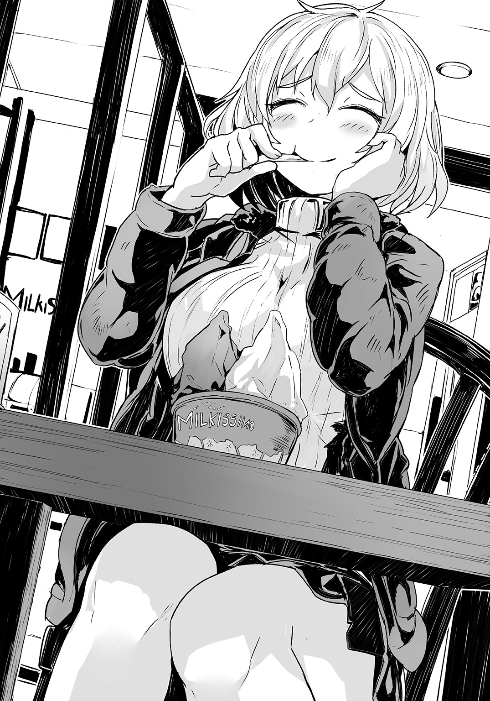
「私が北海道に来た理由、それは――ハイッ来たァ！ 奇跡が口の中に!! ミルクジェラートのマイルドな余韻がハスカップのフレッシュな甘酸っぱさを見事に木和田輝!! 誰!? 知らない人が出てきた!? とにかく凄い、一口目よりも鮮烈なフレッシュさ!! お菓子の世界では〝しょっぱい・甘い〟の無限コンボがあるとされてるけど、絹で舌を包むようなマイルドな甘さと、瑞々しいフレッシュな酸味との間にも成り立つ魔法の方程式だったんだね！」
「......なぁ、デブ。この喚き散らしながら身悶えしてジェラート喰う東京人、大丈夫か？」
香奈が若干引き気味にそんなことを言うのだが、単品でももちろん最高の味だけれど、方向性の違うこれら二つを交互に食べると、常に一口目のように感じられてなまらうめぇ――というのを、最初に見つけた時の香奈も割と大騒ぎしていたのを、僕は忘れてはいない。
めろんは一口食べる度に大騒ぎするので、僕達は仕方なく食べ終わるのを待つことにした。
「はぁ～口の中が北海道の奇跡でいっぱい......夢のようなジェラート・タイムだった......」
「......それで、めろん。いい加減目的を教えてくれないかな？」
「あぁ、そういえばそうだったね。私の目的......それは二つある。一つは、君達のお察しの通り、北海道の本州に対する断交状態を解くための工作。街に潜伏する予定だった」
北海道が独立し、日本国との断交政策を採ったことで、最初にダメージを受けたのは道内の人々だった。ただでさえ経済状況が芳しくない状態で、農作物をはじめとした多くの生産物の買い手が失われてしまったのだ。しかしながらこれはすぐさま売り先を日本国以外の海外へ求めることで対処された。むしろ『メイド・イン・ジャパン』ではなく『メイド・イン・ホッカイドウ』としたことで商品のブランドイメージが跳ね上がり、さらに中国、ロシア、アメリカ、韓国、インドネシア、タイ......それらの国々のとある思惑もあって、世界中へ市場を広げることに成功し、関税、運搬費を加味してもなお大きな利益を生んだのだった。
とはいえ、鮮度が命とされるような商品、または現地で格安で手に入るようなものは北海道ブランドを後ろ盾にしても、やはり厳しい。そのため断交政策から約一五年を経た現代においてもなお、地域や職業、そして生産する作物の違いなどによる貧富の差は大きくなる一方であり、道が早急に対処しなければならない問題の一つとなっていた。
だが、この独立と断交で本当にダメージを負ったのは日本国だ。
北海道がまだ従属していた時代でさえ、日本の食料自給率は四〇％程度であり、世界最大の食料輸入国だった。これが北海道の独立によって、三〇％未満にまで低下する事態となった。
これにほくそ笑んだのは周辺諸国である。慌てふためいた日本国政府の足下を見て、食料の輸出量を増やす代わりに多くの要求を突き付けてきたのだ。しかもこれ見よがしに、彼らは北海道ブランドの多くを手厚く受け入れ始めるというおまけ付きだ。
諸説では、独立に当たって新たなる経済基盤を確保するために政治家達があらかじめ周辺諸国に根回しをしていた、とあるが真実は闇の中だ。ただ、こうした状況がなければ、日本政府からの補助金に多くを頼っていた除雪をはじめとする道内の多くの公共事業を継続できず、道民達の生活維持は難しかっただろう、とも言われている。
ともかく、日本国は今もなお苦しい立場にあり、何とかして北海道を取り戻したい――せめて、かつての〝食糧基地〟であった北海道からの、第三国を通さない直接的な貿易を望み続けている......というのは道内では子供でも知っている常識であった。
「と言っても、私としては、そっちはどうでもいいんだけどね。北海道に渡るため、東京都の意向を受けた工作員になっただけだから。......私の本当の目的、それは――」
めろんは立ち上がって僕に顔を近づけると、その己の口へ、立てた親指を突き付ける。
「ありったけの北の美食を、この口にぶっ込むこと!!」
法螺吹の著書ならずとも、多くの研究資料、そして断交以前の北海道を知る老人達の多くが証言しているのだという。――北の大地では何を喰ってもうまい、と。
「......最初は私も疑いを持った。そんなはずはない、何を食べてもおいしいなんて、そんな楽園がこの地上にあるわけがない、ってね。......でも、脱北者の多くが、本州のお寿司を食べると顔をしかめて閉口するのを目の当たりにして、真実なのかもしれないと思えるようになった。そして、今、幾つか北の味覚を知ったことで確信に変わった。......ここの食べ物には、命を懸けるだけの価値がある」
それで工作員になってまで北海道に足を踏み入れた、か。......難儀な話だ。
「だから、幸之助君、お願い。帝に進言してほしいの。私を今しばらく......この地に居させてほしい。この〝試される大地〟、北海道に」
「難しいな。日本国とは今も極めて限定された交流は行われているが、大抵は道庁と日本国政府の間で合意のあった識者や政治家だけ......帝の独断で、しかもめろんの入国経緯を考えると受け入れるのは難しい。何よりそれをすることで帝に、いや、北海道に何の利益があるんだ」
「東京に戻れたのなら、この地での素晴らしい美食を食べたって自慢して回るよ！」
「......それ、何の意味があるんだよ」
僕は腹を、めろんは胸を押し付け合うようにしながらの押し問答が続く中、早くも飽き始めたらしい香奈がスマホをいじりながらボソりと呟く。
「......ドウテイに、そのでっけぇ胸でも触らせたらいけるっしょ？」
その言葉にめろんも僕も思わず言葉を失い、香奈を見る。
「だって、童貞だし、効果バリバリだべ？」
それは......と僕が口にするも、否定も肯定もする間もなく、めろんに胸元をつかまれて、その衝撃に言葉が途切れた。
見上げるように、そして決死隊の如き覚悟を宿した双瞳でめろんが言う。
「この、幻の大地に渡るために一〇年の歳月と自らの命を懸けた。......帝に告げて。私を今しばらく北海道に居させてくれるなら、こんな胸ぐらい好きに揉み尽くして構わない、と」
右手で僕の胸ぐらをつかみ、左手はその豊満な胸に沈めるように手を当てるめろんの懇願は、どこか脅迫染みていた。
だが、香奈の言う通り、帝にとって魅力的な提案だというのは、痛いほどわかる。
帝の意向に沿うのが道ＭＥＮであり、僕がその執行代理人であるということを考えると......。
「わ、わかった。確約はできないまでも、その提案、伝える。......だが、いつまでだ？ いつまで、いる気なんだ？」
僕をつかむ手を放すと、めろんは腹部に手を当て、ニッコリと微笑んだ。
「この腹が満ち足りるまで」
●
幸之助が早乙女めろんに関し、いくつかの機関に連絡を入れてから、わずか二分後。道内の複数箇所から日本国に向けて放たれた非正規通信を道軍情報本部がキャッチ。
道内に潜伏している工作員は通常、通信が認められている第三国を経由して日本国に情報を送るが、それをなさず、把握されるのを覚悟した上でダイレクトに本国への連絡を取ったということは極めて異例であり、彼らにとって緊急性のあるものだと情報本部は判断。
暗号解読班が全力で作業に当たるも、その仕事は困難を極めた。
彼らが読み解けたのは日本国側から道内に向けて返された通信の一部分だけだった。
――実行せよ、戦闘を許可する。
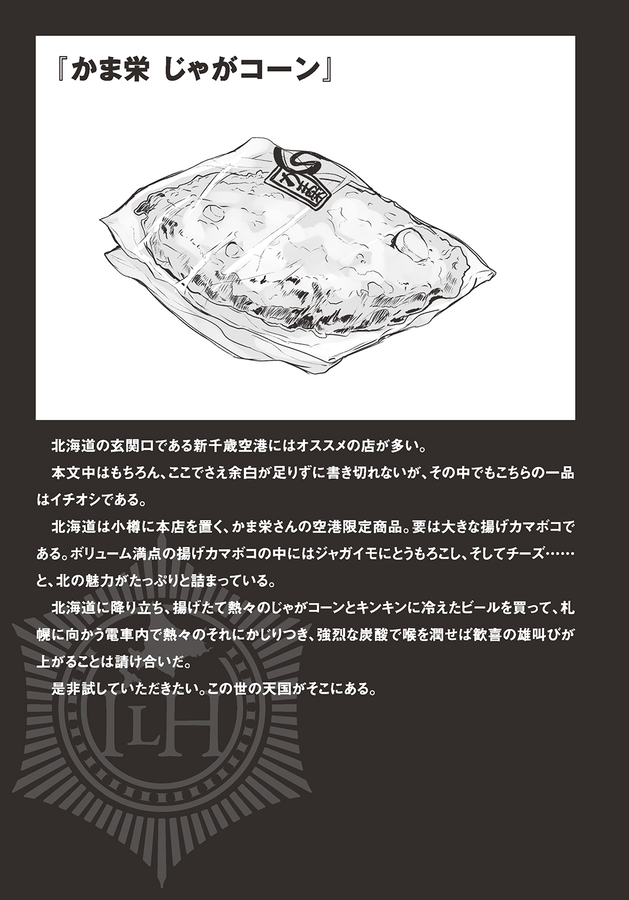
●２章『放たれた刺客』
「したっけ、あと諸々よろしく」
各方面へ道帝から特別に許可が出たと連絡し終えると、すでに二時間近くが経過していた。とりあえずこれで一定期間、めろんが道内を旅行して回るのに問題はないだろう。
空港内のカフェを出ると、ちょうど香奈から連絡が入る。今出た、ということだったので僕はとあるお店へ寄り道をしてから、四階へと向かった。
新千歳空港は本当に大きい。何せ四階にはゲームセンター、映画館、アニメイト、初音ミクのここでしか見られない雪ミクショップ・ミュージアム、そして露天風呂を備えた温泉施設まであるのだ。雪の影響で飛行機が遅れたり、または飛ばなかったりした際には行き場を失った子羊たちの身も心も優しく癒してくれる。
エスカレーターで昇っていくに従い、待ち構えるようにめろんと香奈の顔が現れてくる。香奈は二時間前と変わらないが、めろんはあからさまに変わっていた。......小綺麗になっている。
というのも、めろんを前述の温泉施設に行かせたのだ。やけにボサボサの頭をしているな、と思っていたが、どうも保護されてから一度も体を洗えてなかったらしい。それを聞いた香奈が北海道の中心地である札幌へ行く前にめろんを綺麗にしよう、と提案したのだ。
香奈曰く、『小汚い格好で大都会はマズいべ！』とのことで、警察から防寒具として渡されていたドカジャンや生乾きの衣服を処分し、まるっと取っ替えることになったのだ。
多少は外の世界を知っている僕からすると、別にそこまで気張ることもないだろ、とは思うのだが、男女の差というものもある。そのため、入浴の許可と共に香奈にめろんの服の代わりを用意するよう指令を出したのだが......失敗したな、と思うと同時に、香奈め、いつから僕の好みをここまで理解してくれていたんだ、という二つの想いが胸中に溢れた。
幸之助君、お待たせ。そう、キリリとした顔でめろんに言われるも、僕の視線はどうしたって彼女の胸元に向かってしまう。
「これ、どうかな。似合う？ 道民が好むような標準的な服装がいいと言ったら、香奈さんがこれを用意してくれたの」
ご満悦な表情なのだけれど、それで本当にいいのだろうか。下は冬用のショートブーツに熊の肉球柄が入った生地の厚いタトゥー・タイツとショートパンツなのだが......上がヤバイ。
「フフッ。これを身に纏ったことで、いよいよ私も北海道人にしか見えないかな。......というより、夕張人？」
香奈がめろんに与えたのは、メロン熊のシャツだった。黒地の胸元に、荒れくるったメロン熊が迫力満点に描かれたそれは、僕や香奈も愛用するイかしたアイテムだ。意外と生地もしっかりしたものが使われており、グッズとしてはもちろん、ヘビーローテーションする小洒落た普段着としてもかなり優秀だし、何気にふるさと納税でゲット出来たりもするのでオススメだ......が、Ｔシャツであった。あからさまに季節を間違え、さらにサイズも小さくパッツンパッツンで――いや、めろんの胸が大きすぎて胸囲のサイズが足りていないのか!?
メロン熊の顔が引き延ばされてちょっとブサイクになっており......しかもよーく見ると、シャツの下に着けているブラの形がかなりくっきり浮き出ているではないか！
香奈が冷たい視線を向けてくるので、僕は鼻から大きく息を吸って、ゆっくりと吐き、自分を落ち着けようとするのだが......やはり目線が外せない。すると、そのたわわな、かつ息苦しそうなメロン二つがグイッと近づいてくる。顔に押しつけられるかと思うも、感じられたのは、肉感ではなく、鼻を擽る匂い。そして僕の唇と頰をからかうように撫でる髪先だけ。
めろんが、まるで抱き締め合おうとするかのように......僕の肩にその細い顎先がつくほど近づけて、耳元で囁く。
「あの温泉にあったボディソープ、シャンプーにコンディショナー、全部がハスカップの香りなのには驚いたよ。噓みたいだった。全身が幻の果実でいっぱいだよ」
どうやらめろんは、僕がその香りに反応していたと勘違いしたようで、それで〝嗅いでみて〟と前に出てきたのだろう。......ならば遠慮はいらぬ。それはそれで、いいものだ。
僕は思いっきり鼻から息を吸い、彼女の匂いで肺を満たす。ぶっちゃけ何がハスカップなのかよくわからなかったけれど......清潔感のあるとてもいい匂いがした。
お風呂上がりの女の子の匂いに勝る香料はない。温かでしっとりとした体から昇る匂い......。それを直接堪能するのは男として至上の喜びである。
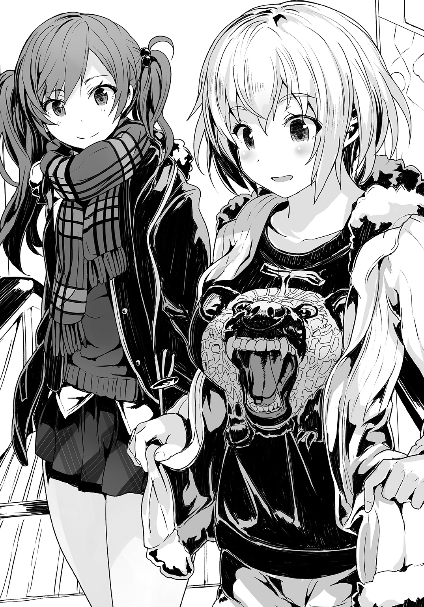
幼馴染みのブリザードより冷たい視線が、ツララのような鋭利さで僕を突き刺している気もするが、こんなチャンス滅多にあるものではないのだ。
得られるものは全て得る、それが僕のやり方だ！ フンスフンス。
「......でも、さすがにちょっとこれだけでは寒いかな。今は室内だからまだいいけれど」
「亜熱帯の東京で生きてきた人間にその格好はキツいだろうさ。香奈、上着は......」
用意してあるって、と香奈が言うとめろんの襟首をつかんで僕から引き離し、その肩にややサイズの大きなモコモコのボアパーカを引っかけた。
「そしてぇ、これを、こうっ！」
香奈がめろんの後頭部を叩き上げるようにして、ボアパーカのフードを被せる。
そこには......熊耳が。
「これがホントのめろん熊ってか！」
......あー、うん、はい。何だろうね、ここまでセンスが痛々しいと素直に反応しにくいな。
何でドヤ顔でこっち見てきてるんだよ、香奈......。
いつもはぶっ飛んだ服をチョイスするくせに、今回のは季節を間違えるだけで済んでいた理由がこれか。単にめろん熊に合わせるために、Ｔシャツをメロン熊にしていたわけか。
「あ、結構イイ感じ。これなら暖かくて北海道でもいけそうだよ」
香奈は手にしていた紙袋から何かをゴソゴソとやり始める。
「うんにゃ、たぶんその格好だけなら寒すぎるべ。ガチのアウターはこっち」
まだ着るの？ と、めろんは驚く。けれど、北海道に初めて来る観光客にオススメする服装は、重ね着である。というのも、めろんが全力で突撃しても割れなかった複層ガラスからもわかるように、北海道の建物は断熱効果が非常に高い。そのため、室内外の温度差が極端なほど激しいため、調整できる格好にしておくのがベストなのだ。
外で耐えられる格好にしたら、屋内に入ったと同時に暑くて汗をかき、そしてまた外に出るとそれが冷えて極寒に......というのは北海道旅行者のあるあるネタである。
「ほい、めろん。北国の伝統的防寒具、角巻き」
「随分と生地のしっかりした......ポンチョ......？ ううん、マントかしら？」
「おい、香奈。僕でさえ知らない不思議なものを出すな。何だ、それ」
「角巻きだべ？ 冬のトレンドだって、死んだ曾祖母ちゃんが言ってたんだ」
そこまで言われてようやく思い出した。小学校の時だ、北海道開拓時代の授業を受けていた時、資料の中に、そんなものがあったような気が......。
要はやたら大型で分厚い肩掛けのようなもので、肩に羽織って体に巻き付ける防寒具であり、大雪や寒さの厳しい時は頭まですっぽりと覆って使うらしいのだけれど......少なくとも僕の記憶が正しければ、それがトレンドだったのは大昔である。
何故香奈はこうもナチュラルに時代を超越するのだろう......。っつぅか、あれ、どっから持ってきたんだ？ 空港内にあるユニクロや無印良品にあるとは思えないぞ。
「なるほど、こうやって使うんだね。確かに空気の流れを遮るし、ちょっとエレガントで、お洒落な感じ。......法螺吹先生の本にも書かれていなかった文化だね」
「多分東北辺りの歴史書とか風俗史なんかを紐解けば普通に出てくると思うんだけど......まぁいいや。とりあえず、めろん、これから君を札幌までエスコートする。そこからは車で自由に動けるようにドライバーも用意した。北海道は車がないとろくすっぽ楽しめないし、冬となれば雪道に慣れた腕のいいドライバーも必要になる」
めろんは了承し、そして礼を述べると、フードを被ったまま角巻きから首を出したり引っ込めたりを繰り返して、具合を確かめていた。それを見ていると、何だか熊が穴蔵から顔を出して引っ込めてを繰り返しているようで、何とも無邪気でかわいらしい。
こういう娘を守って巨悪に立ち向かう、そんな正義のヒーローは、僕だけでなく男なら誰もが一度は夢見るものだろう。道ＭＥＮ結成時はそうしたことも活動内容として考えてはいたけれど、今までは雪かき、ゴミ拾い、不法投棄者退治にステージから階段で降りるメロン熊の補助とか、そういうのばかりだった。......僕らにもいよいよきちんとした仕事が......。
ちょっと感慨深く思わないでもないけれど、よくよく考えたら今の僕らは彼女を守るのではなく、彼女が余計なことをしないよう見張るのが仕事だったか。
......めろんを見ていると、つい油断してしまうな。......そういう作戦......か？
「デブ、札幌まで汽車か？」
「汽車!? 北海道ってまだ汽車が走っているの!? そうか！ 道路の信号機が白熱電球から発熱しないＬＥＤに変わった際、雪がくっついて信号が見えなくなる問題があったけれど、電車では極寒の地を走り続けられない何かしらの理由があって、そのためにあえて昔ながらの石炭エネルギーである汽車を......!! ハッ！ まさか夕張炭鉱が再稼働してるとか!?」
「ん？ いや、めろん、汽車は電気の力で走るべ？」
「電気汽車!? 初耳！ でも、それって......普通の電車じゃないのかな？」
......アレだな、割と面倒臭いな、東京人は。
何故かは知らないが、道民の何割かは何となく今でも電車を汽車と呼んでいるだけである。別に汽車が最近まで走っていたというわけではないのだけれど......でも、家の近くの踏切には、今でも蒸気機関車マークの看板が昭和の時代から立っていたりもするのだけれど......。
そんな説明をしつつ、僕らは地下階から出発する汽車こと電車に乗り込んだ。
車内がすいていたので、クロスシート席を回転させて三人向かい合うようにして座席に着く。
「香奈、スカート」
対面に座った僕の注意に、見んなよ、と彼女はやや乱れていたスカートの裾を直しつつ足を組む。......うーむ、ホント短いスカートなので、足を組むといろいろと見えてしまいそうなものなのだけれど......うまいこと重要部分だけはしっかり隠れるのだから、スカートとは、そして人体というのは不思議なものだ。
だから見んなって、と香奈は露になっていた彼女の太ももに注いでいた僕の額を小突くと、そのままチラリと横を見た。
「あの......めろん？ 何でアンタまで見てるわけ？ しかも目をひん向いて......」
「だ、だって......今さっき、駅の電子掲示板には外はマイナス五度だってあったから......。電車移動とはいえ......香奈さん、素足で行く気なの!?」
同性だと案外気がつかないものなのか、それともナチュラルカラーのタイツでも穿いていると思っていたのかわからないが――そう、香奈はずっと生足だった。
「これがフツー......だべ？ な、デブ？ お洒落は我慢って......言うよな？」
「言う言う。言うから不安そうな顔でこっちを見てくるな」
「でも我慢には限度があるでしょ!? 死なないの!?」
「少なくとも香奈は大丈夫だよ。去年、マイナス一六度いった時も生足で登校してたもんな」
北国の女子高生は、割と真冬でも生足にムートンブーツの組み合わせが多い。理由は、彼女らに言わせるなら〝防寒よりも大事なものがある〟のだそうな。実際、彼女らは薄手のアウターしか羽織らず、しかも制服のデザインを見せるかのように胸元を開けたままでいることが多い......気がする。少なくとも僕達が通う烏有高等学校の女子は、そんな感じだった。
「進化なのかな。寒冷地の人間は体温維持のために皮下脂肪を蓄えやすい体質だって聞いたことがあったけれど、まさか、ここまで適応可能だなんて......」
凄いね、と頷くめろんの視線が自然と僕の腹回りに向いてくるが......別に僕のこれは適応やら進化した結果だと宣うつもりはさらさらなかった。......ちょっと、ふくよかなだけだ。
「つっても、アタシらは別に寒さに強いとか、寒い方がいいってわけじゃないけどな。冬に喰うならあっついモンの方がいいし」
「あ、そうだ。それで思い出した。ついつい忘れそうになっていたけれど、冷める前に食べよう。さっき合流する前に『かま栄』に寄って――」
僕が小脇に置いておいた袋を手にした、その時だった。
「寒さへの適応......まさか、これがＤＳＫ１７９遺伝子......？」
めろんの呟きに、僕の手がピタリと止まり、香奈の目に驚きが走る。
「あ、ごめん。やっぱりおかしな話だよね。......法螺吹先生が北海道解体新書のあとがきに、そんなことを書かれていたの。それがあるから、彼らは極めて過酷な『試される大地』での営みを可能としていたっていう説で、さすがに業界内では与太話として――なに!? この私の胃袋を鷲摑みにするかのような揚げ物の匂いは!?」
「あ、あぁ......空港内に『かま栄』ってお店が出店してて、空港の店舗限定商品『じゃがコーン』の揚げたてがあったから買ってきたんだけど......あの、めろん、その遺伝子って......」
もはやめろんは人の話など聞いておらず、僕の持っていた袋に手を突っ込み、中から熱々のじゃがコーンを取り出す。
個別にビニールに包まれている大きなアーモンド形で、肉厚なそれは......揚げかまぼこだ。
「大きい！ しかも揚げたてなのがはっきりわかるほどの熱量！ ......三つあるってことは、これ丸ごと一つ私が食べてもいいってことだね？」
「いいけど、さっき弁当にジェラートとか食べたばかりだし、これ、結構腹に溜まるから丸ごと一つはどうかな。それより、今めろんが口にしたＤＳＫ１７９遺伝子なんだけど......」
「問題なし！ ちなみにその前に『えびそば一幻』の塩ラーメンを食べたけれど、余裕だよ！ いつも行列ができている人気店だと法螺吹先生の書にあったけれど、私が行った時は運良く速攻で座れたの！ やっぱり普段の行いがいいせいだね！」
普段の行いがいい人間は密入国を試みたりはしないだろう......。
「うんまぁ、いろいろ言いたいことはあるんだけれど、先にＤＳＫ１７９遺伝子って......」
「空港内テナントに収まるチェーン店だから味が維持されているかどうか不安だったけれど、甲殻類アレルギーの方々をつい哀れんでしまうぐらい、実にいい海老の出汁が出ていて......。安心して、満足したよ、私」
......これはダメだな。めろんめ、食事モードのスイッチが押ささってしまっている。もう、食べ終わるのを待った方が早そうだ。
しかしながら......ＤＳＫ１７９遺伝子まで知られているとはちょっと予想外だ。トップクラスの機密事項のはずなのだけれど......。
不安げな香奈が視線を送ってくるが、僕は手で払うようにして取り敢えず大丈夫だろう、とニュアンスで伝えると、自分らの分のじゃがコーンを手に取り、三人でかぶりついた。
普通の揚げかまぼこよりもずっと大きなそれは、まるでお握りに齧りついているかのようだ。肉厚なすり身の中にあるのはコーンと、同サイズにカットされたジャガイモ。そして――。
「くっはぁ！ なにこれ凄い！ ぶりゅっと弾力性豊かな肉厚カマボコというだけで満足感が半端ないのに、コーンと角切りジャガイモが食感にいいアクセントになっていて、嚙むだけで口中がお祭り騒ぎ！ そして名前では伏せられているのに中にチーズまで入っている！ しかも熱々のおかげでチーズがトロトロに溶けていて......最ッ高ッ！ そこに揚げ物特有のマイルドな旨味が加わって......腹の虫が欲しがるもの全部をぶっ込んだみたいな完全食品だね!!」
食べたことがない人には大げさに聞こえるだろうが、実際に食べた時のインパクトはそれぐらいあるのが、この商品だった。しかもカマボコ、コーン、ジャガイモ、一見すると口の中でバラバラになってしまいそうなそれらが、油とチーズの力で繫ぎ合わされ、渾然一体の美味と化す。どれ一つとっても特別な素材ではないし、凝った調理法をしているわけでもなさそうなのに......そんな侮りもまた、食べた時の驚きに拍車をかけるのだ。
道ＭＥＮ唯一の成人である健三に言わせれば、これにビールか焼酎を合わせたら〝マジでヤバイ〟だそうな。
ほっぺたをリスのように膨らませ、もぐちゃもぐちゃと幸せそうにしているめろんを横目に、対面に座っていた香奈が首を伸ばすようにして、僕に顔を近づける。
「あの、さ。ヤバイべ、これ？ その、秘密なんだべ？ ......チャカは今、どうなってんだ？」
「心配ないと思う。......チャカは札駅にいるように言っておいた。健三も一緒だ」
膨らみが頰から喉に移り、いつもの小顔なめろんになると、その目が僕らに向けられた。
「一応言っておく。私は確かに工作員だけど、安心して。別に逃げたり、暴れたりなんかしない。何せお金も土地勘もないし、何よりもおいしいものは地元民に頼るのが鉄板だと思ってるぐらいだよ。......でも、万が一に備えて銃器を用意するのは当然だね。理解するよ、私」
「ん？ 銃器って......？ めろん、何言ってんだ？」
「だって今、香奈さん、小声でチャカって。札幌駅で受け取るつもりだよね？ ......フフッ、舐めないで。サツエキが札幌駅のことを指す隠語だっていうのは、知っているんだよ、私」
ドヤ顔をされるが、別に札駅は隠語じゃなくて単に略語だし、チャカは銃器ではない。
......だが、武器だった。純粋なそのスペックを言うのなら、道ＭＥＮの切り札ですらある。
いろいろ言いたいことはあったが、全てを話すとなるとどうしてもＤＳＫ１７９遺伝子の秘密について触れなければならなくなるため、僕らは思わず口を閉じた。
めろんの言葉を信じるならその存在は眉唾物だと思われているようだし......それなら、そのままでいてもらった方が都合がいい。
何せ――その秘密は道内でもきちんと把握している人間はほとんどいないほどの機密だ。
僕と香奈はついつい真剣な眼差しのまま、めろんを見る。そしてめろんもまた真剣な眼差しで僕らを見――あ、違うわ。視線の行き先、香奈が一口だけ齧りついたじゃがコーンだわ。
そういえば、うちの犬も人が食べている物が欲しい時って、垂れてる耳をグッと持ち上げて、普段開きっぱなしの口をしっかり閉じて、もの凄い真剣な眼差しで対象物を見つめるのだけれど......人間も同じなのかもしれない。実際、めろんの口の端からはヨダレが......。
困った香奈は怖い物から手を放すようにして、僕に食べかけのじゃがコーンを渡してくる。すると、やはりめろんの視線もこちらに移動した。
そっと差し出せば......東京人は満面の笑みでじゃがコーンに齧りついたのだった。
「んー！ 口の中にとろっとしたチーズが......あぁっコレ最高！ 本当においしい!!」
......女の子に自分の手から直接何かを食べさせるのって、ちょっと、いい。
そんなフェチズムを覚える僕を乗せ、快速エアポートは札幌を目指して走り続けるのだった。
１
「空港周辺は目を疑うぐらい何にもなかったけれど、気がつくといつの間にか都市部に入っている......不思議だね。違う国へテレポートしたみたい」
電車が止まると、めろんはそんなことを口にした。そして、車両を降りるなり彼女は震えはじめて、車内では膝掛けにしていた角巻きを慌てて頭からスッポリと被る。
札幌はヒートアイランド現象などの影響により、他の道内地域と比べると比較的気温が高いエリアだ。屋根もある駅のホームともなればなおさらである。けれど、それでもマイナス気温であることは間違いないので、気を抜いているとブルリとくるだろう。
「さ、さすがは北海道。なかなか来る。大きく息を吸うと喉が痛いなんて......。そして香奈さんの素足は見ている方が辛いけど、本当に大丈夫なの？ 周りの人は結構ちゃんとしてるけど」
お洒落のために生足で出歩くのは、ぶっちゃけ女子高生か女子中学生ぐらいなもので、それも制服の時がほとんどだ。日常的に制服で生足晒していても、割と私服の時にはデニール数の高いタイツを穿いたりすることが多いものである。
それをホームの階段を下りながら説明してやると、めろんは感心した顔をする。
「さすが道ＭＥＮ。なかなかやるね」
「いや、別に道ＭＥＮは関係ないだろ」
「そう？ 男性なのに妙に女性ファッションに詳しいのは凄いよ。勉強しているんだよね」
思わず、足が止まった。確かに普通の青少年はサラっとストッキングの厚さに言及することはないような気がしないでもない......。
「あぁ、このデブはハードボイルド気取ってるだけで、中身エロエロのキモオタだべや。家のＰＣとか......フガッ！」
業務中にプライベートな話をするな、と口にしつつ、僕は前にいた香奈のマフラーの端を引っ張り、彼女の喉を絞めて言葉を詰まらせてやった。
怒る香奈とクスリと笑うめろんを引き連れ、西の改札口へ。
札駅は直結する複数のショッピングセンターや映画館があるためにいつも人でごった返しているが、今のように正月ともなれば尚更だ。
冬休みもまだ前半。僕らのような十代をはじめ、家族連れも多い。そしてコンコース内にあるストーブで暖を取れる待合所もアウターで着膨れした人々で満ち溢れている。
その待合所からかすかに視線を感じ、座ってスマホをいじったりお菓子を食べている人達を見やるのだけれど......いないな？ てっきり、寒くてそこに移動したのかと思ったけれど。
見る物全てが珍しいのか、きょろきょろするめろんにはぐれないよう声をかけ、本来の待ち合わせ場所へ。西コンコースにあるアイヌの人が弓を手に、口に矢を咥えた木彫り像である。
それはアイヌアートモニュメント『ウレシパモシリ北海道 イランカラプテ像』だ。アイヌ語で前半は『育て合う大地』、後半は『こんにちは』という意味のそれは結構目立つため、待ち合わせ場所の目印とするには便利だった。
祭具に囲まれたその像は、正面から見るとまるでファンタジー作品で召喚魔法を詠唱しているかのような凄味と格好良さがあるのだが、それを背にするようにして――チャカは、いた。
「待たせたな。......健三は、車か？」
頭の上に〝？〟マークを浮かべつつ、めろんは僕が声をかけた人物を見て、驚いた顔をする。
「こ、こんな子供に銃器を運ばせているの!?」
像の前で、ファーフードの付いたミリタリー風のジャケットに手を突っ込み、俯き加減で佇んでいたのはめろんの言う通り、子供。まだ小学五年生の一一歳、おまけで付け加えるなら、ロシアンハーフの女の子である。
「別に運ばせているわけじゃない。コイツが、チャカなんだ」
半分入っているはずの日本人の要素をどこに忘れてきたのかと疑問になるほどに綺麗なプラチナブロンドのベリーショート。その頭を擡げるようにして、彼女は分厚い眼鏡越しに鋭い視線でめろんを射貫きつつ、モフモフの耳当てを外して首にかけた。そして、僕に視線を向け......何かを訴えるような顔をする。
何だ？ と思い、僕は今一度彼女を見た。いつもの上着に耳当て、眼鏡も新調したものではないだろう。背負うリュックサックもこの間一緒にステラプレイスで買ったもの......。
ショートパンツから伸びる、妙に長い足はデニール数の高いタイツで包まれ、それが収まる足下は......あ、コイツ、ついに僕と同じモデルのブーツに手を出しやがったか......。
......こういうところが面倒臭いんだよ、この子は......。
「あ、あぁ。お揃いの靴、買ったんだな......」
「はい。この間のお給料で海外通販で買いました。サイズが道内の在庫になくって」
人前なので少し堪えつつも、漏れるようにして微笑む。
彼女の目元に喜色が浮かび、白い肌のせいで、頰に朱が差すのがはっきりとわかる。
そういう顔だけ見ていれば、この子はとてもかわいらしい......気がしないでもない。
......目力が尋常ではないのだ。分厚い眼鏡でパッと見は誤魔化しが効いているが、よぉーく見るとその目に愛らしさはなく、快楽殺人者か暗殺者のどちらかしか持ち得ない鋭さがある。そのため彼女に手を伸ばせば指先が切れそうな、そんな印象を受けてしまうのだ。
どこか、ハスキー犬のような少女。そのすまし顔はかわいらしさよりも、この年齢でありながら綺麗だ、格好いいという言葉が似合う。しかも女性的なものではなく、言うなれば現実離れした美しさの〝良さ〟だ。芸術作品の彫刻や精巧な人形のよう。
けれど、今のように微笑みを浮かべると彼女の顔は途端にかわいらしさで満ちる。年相応の愛らしさに、それでいて繊細な美しさが残っているものだから、凄いことになる。
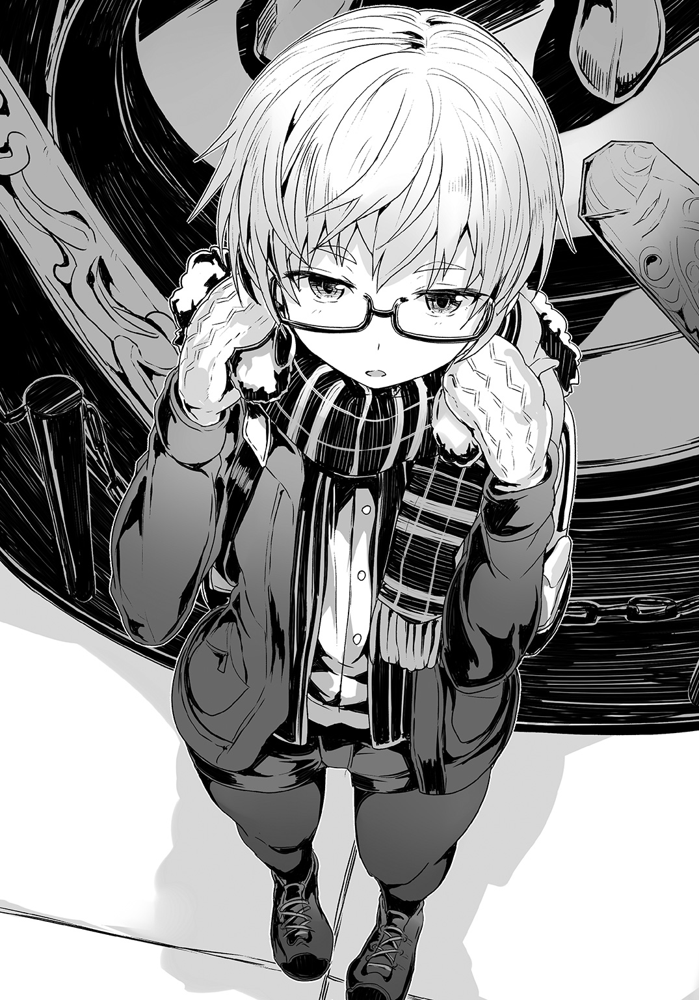
そりゃ街を歩くとナンパやらスカウトに引っかかりまくるのも頷ける。
......そして、その後に眼鏡を外してガンを飛ばし、大の大人達をたじろがせるというのも、その目を一度見れば嫌というほどわかる。
ただ、その......基本的にストーカー気質なのが......その、うん。ちょっとね。特に僕からすると、その目で見つめられるのはかなりしんどいわけで......。
僕はその子の頭をポンポンと叩くようにしてやると、彼女はその小さな鼻から満足げに、ふすぅ～、と息を吐く。
一頻り微笑むと茶花はその顔にキッと力を入れ、今一度めろんへ視線を向け直す。懐から北海道のマークが描かれたスマホケースを取り出し、突き付けた。
「ボクは北海道帝直属北海道特殊機密部隊道ＭＥＮ構成員、春山茶花。日本国からの工作員である貴殿の監視とエスコート、そして万が一の際の実力行使の手段として同行する。以後よろしく」
「あ、そうか、チャカってこの子の名前だったんだね。......うん、よろしく。私は早乙女めろん。逃げたり抵抗したりする気はないから、安心して。......綺麗な子だね」
めろんが前屈みになって目線を同じ高さにしてから握手を求めると、茶花は毛糸の手袋に包まれた手で応じた。
彼女の青い瞳がチラリとボアパーカの間からのぞくめろんの胸を見る。遠目に見ていてもギュッと力が入ったのがわかった。
いやまぁ、その......香奈に限らず北海道の女の子は、その、ね？ ......人は自分にないものを欲し、有する者を妬むものだし、ね、うん。
茶花はめろんの手を投げるようにして放した。
「隊長、健三は北口の駐車場で待っ――」
茶花の目が僕ではなく、背後に向けられて言葉に詰まる。反射的に僕が振り返ると同時に、赤いダウンジャケットの長身の男がぶつかってきた――といっても、軽く体が触れた程度だ。
「あ、すみません！ 地図ばっか見てて、前見てなくて」
長身の男は頭を搔きつつ、頭を下げてくる。確かに手には駅ビルのパンフレットがあった。
「あぁいえ、僕は大丈夫です。何かお探しでした？」
「あーっと、コーヒーでも飲もうかと思ってカフェを。そこに『ミスタードーナツ』ありますけど、コーヒーだけってのも申し訳ないんで」
あぁ、その気持ちはわかるなぁ。心苦しいんだよね。
えっとカフェは......うーん、そこらにあったような気もするけど、どこだったっけ？
僕が狼狽えだしたのが顔に出ていたのか、赤ダウンの男は助けを求めるような顔で、香奈とめろんを見る。無論、めろんが知っているわけもないので、彼女は彼女で苦笑してお手上げのポーズをとるが、香奈は「あぁ」と声を上げた。
「確か、東コンコース側の北口になまら洒落た喫茶店があったっしょ？」
「香奈、『スターバックス』なら......確かショッピングモールの二階」
茶花が言うも、香奈は顔をしかめた。
「そんな、なんまらお洒落のじゃなくって、もぅちょい、アタシらでも入りやすい感じので......あ！ 『ドトール』だべ!? そうそう、それが東コンコースの北口にあるべぁ」
あ、ホントですか、と赤ダウンの男は何とも嬉しそうに笑うと、女性陣にやたらとペコペコと頭を下げ、足早に去っていったのだった。
僕らもまた彼の後を追うようにして、北口に向かう。......どうでもいいんだけれど、改札口は東西なくせに、駅の出入り口は南北ってのも妙な造りである。
「......寒い。やっぱり風があると思いっきり冷えるね。香奈さん、本当に何ともないの？」
ヨユーっしょ、と香奈は白い息を吐きながら笑って、生足で雪面を歩き行く。
駅の出入り口はすでに何千人という人達の靴裏で固められ、スケートリンクのように硬くなっていたので、僕はそっとめろんに手を伸ばす。
雪国の人間ならともかく、雪が降るだけで大騒ぎだという東京人には危険な足場だろう。
彼女は「ありがとう」と微笑み、僕の手をそっと握るのだけれど、すでにもう一方の手は香奈が握っていて、おかしなことになってしまった。
僕ら三人は互いに顔を見合わせ、何となく微妙な笑みを浮かべ合い......そして、背中に茶花からの鋭すぎる視線が刺さるのを感じる......。
......うん、コート越しにもはっきりわかるこの感じ。確実に、殺意が籠もっている。
「札幌って、もう少し都会なイメージだったけど、案外、その......落ち着いた街並なんだね」
めろんは言葉を選んで、そんな感想を口にした。とはいえ、それは北口だからだろう。道内最大の繁華街ススキノに向かう南口の方はかなり栄えているが、北口の方は広場やタクシー、バス用の待機所などがあって、だだっ広く感じられるため、そんな認識にもなる。
僕らはそんなことを話しながら、路肩に停められていた健三のハイエースへと乗り込む。めろんと香奈は後ろに、そして僕と茶花は前だ。
健三のハイエースのフロント席は、運転席と助手席の間にあるドリンクホルダー付きの肘掛けを持ち上げると、補助席的な座席になるのだが、これが茶花の専用席だった。
着膨れしている健三とふくよかボディの僕の間だし、シートの硬さからしても座り心地がいいとは思えない窮屈な席だが、彼女はそこに座りたがる。
「健三、コーヒー、どこ置いたらいい？」
茶花が自分の席を確保するためにドリンクホルダーから缶コーヒーを抜くと、缶を振る。
「あぁ、一気に飲んじまうわ。茶花ちゃん、くれ。......ふぅ。んで、どこに行くんだ？」
「北海道の味覚って何だろな。ラーメンはもう喰ったらしいし......めろん、リクエストは？」
僕が後部座席を振り返ると、めろんは顎に手を当て、何かを思い出すように難しげな顔で車内の天井を見上げていた。
「......やっぱり、そうだよね......そうなると......」
健三が何を思ったのか、めろんの視線の先である天井の窓のカバーを開ける。
普段は閉じているが、無駄に天窓になっているので、窓越しに空を見ることも出来るし、その気になればその窓すら開けて、北の冷たい風を上半身に浴びながら走ることもできるのだ。......警察にメタクソ怒られるけど。
めろんは、サンルーフ越しに灰色の空を見上げながら何かを考え続けている。
健三的には〝この天井の切れ目は何？ ひょっとしてサンルーフ？ あぁやっぱりそうだった！ 凄い、何て凄い車なの!!〟的な展開を期待したのだろう。めろんのリアクションが皆無だったことで彼はションボリ顔だ。茶花に肩を叩かれて慰められているのが、哀れだった。
「幸之助君、本州から北海道に来る人は一部の政治家や識者だけ......だったよね？」
本州......あぁ、日本国のことだと一拍置いて僕は理解した。日本国側の人間は、自分達が住むところをそう呼ぶ。僕らは日本の一部だった時の名残、というか開拓時代からの名残でいまだに内地と呼ぶことが多かった。
「そうだ。それ以外となると、誰かさんのように密入国した連中ぐらいだろう」
「さっきの赤いダウンジャケットの、背の高い男性......本州の人間だと思う」
何故？ と、僕が問うと、めろんは健三の手にしていたゴミ袋を指さした。
「コーヒーのアクセントが違ってたのよ。北海道訛じゃなかった」
その瞬間に僕と茶花、そして直接会っていないものの状況を理解した健三がハッとした。
......しなかったのはただ一人である。
「めろん何言ってんだ？ 北海道人は訛も方言もほとんどないべや。......え？」
車内中から「お前が言うのかよ」といった視線を浴びたせいか、香奈がさすがにたじろぐ。
何故か知らないが、同じ町で生まれ育ったはずなのに、香奈......というか、芭楽家の訛と方言だけは極めてクセが強いのだが、まさかコイツ、自分が今まで標準語を喋っていると思っていたってのか？ 一〇年以上一緒にいて初めて知ったぞ......。
「えっとね、香奈さん？ 北海道の人って〝コーヒー〟のアクセントが違うというか、〝コ〟の部分を高く言ってる。でもあの赤いダウンの人は、私達東京人と同じ発音だった」
外国に長くいてネイティブな発音に......って、そんな発音でもなかったか。Coffeeではなく、カタカナ四文字の〝コーヒー〟だった。となると、考えられる可能性は......。
「アニメとかのオタクだったのかもしれない」
「幸之助君、それ、どういうこと？」
「僕の理論だが、いわゆるアニメやアイドルとかのオタクは自然と標準語に寄る。それも幼少期から親しんでいるとその傾向が強い。何故なら、テレビやネット越しに標準語を使う声優や芸能人の言葉を耳にする機会が極端に多い上、その際の集中力が段違いだからだ」
なるほど、とめろんが納得すると同時に、隣に座っていた茶花が尊敬の眼差しを向けてくる。
「だから隊長は標準語を巧みに使いこなせるんですよね。本当に凄いです」
......うーん、それを東京人の前で言われるととても恥ずかしい。しかもオタクって、ねぇ？
「あ、あのな、茶花。前も言ったけど、別に僕はオタクってわけでもない......というか、オタクになれなかった田舎者だ」
断交でモロに影響を受けたものの一つに、オタク文化の受容があった。やはりサブカルの本場は東京、次に大阪だ。そして当初はネットがそれを解決する、アニメも漫画もネット配信で対応可能だとされていたが......結局は希望的観測だった。
物質と体験、これがない。ネットが発達するに従い、デジタルへ変換可能なものの価値は相対的な低下を見せ、逆に不可能なものの価値が上がった。
わかりやすい例で言えば、かつての日本においてＣＤの売り上げが極端に落ち、ライブや握手会などのイベント、そしてグッズにファンの金銭が集中するようになった――まさにそれだ。
音楽やアーティスト達が放つ求心力は変わらなくとも、ＣＤというメディアの価値が大暴落した結果である。
まだしも物質は法外な代金を払うことで第三国経由や密輸での入手が可能だが......体験の方は無理だ。そして物質もまた、本来であるなら自分の手で購入するべきだし、それ自体が一つの体験ともなりえるものなのだ。
結局、断交した北海道、そしてその中でもド田舎な夕張郡烏有町では完全なるオタクになることなど、どだい無理な話だった。
せめて札幌近郊に住み、様々なオタクショップやイベント会場が存在する道内最大サブカル発信地である商店街、札幌の『二番街』に気軽に通えるようでもなければ、かなり難しい。
実際、仲間の協力を得て、僕が二番街のショップに通えるようになったのは一四歳以降。電車で片道一時間半、約一三〇〇円もかかる（往復はもちろん倍になる）関係で、それ以前はほとんど行ったことすらなかった。
......ちなみにそんな遠方である二番街こそが烏有町からのオタクショップへの最寄りであると同時に、そこに向かう電車は三時間に一本しかない。これで道内的にはまだかなり札幌に近く、相当恵まれた方だということを考えると、オタクとして世に生まれ落ちた者達にとって、この大地が如何なる試練をもたらしているのかは想像に難くなく、何故に人権保護団体が騒がないのかが不思議でならないレベルである。
......自分で言っておいて何だけど、辛くなってきたな......。
「ま、さすがは大都会札幌ってことっしょ。お洒落な人も多いし、オタクも多いってことだべ。......おいデブ、茶花も合流したし、アタシもういいべ？ 健三、〝裏参道〟まで行って落としてくれ。せっかくだからアタシも遊ぶ前にお洒落空間に浸ってくる」
「香奈さん、それって......まさか北海道で一番のお洒落スポットといわれる所？ 食が最優先だけれど、私も見てみたいな。ミシュランに載ったお店もあるんでしょ？」
健三が僕を見てくるので、行くか、と応じると彼は苦笑して車を発進させる。
裏参道までは車で一五分程度。すぐだ。
僕は健三のハイエース専用として置きっ放しにしてあるＭＰ３プレイヤーを起動させ、カーステレオからのびるジャックを繫いだ。
車内は棚村ゆかの美しい歌声で満ちていく。曲は『私の人生は最高』だ。
あぁ......いい。棚村ゆかの声は、全てを癒してくれる。アイドル声優と一般的に言われているけれど、僕としては一人のアーティストであり、そしてそれにとどまらない、より上位の何かだと思っている。あぁ、かわいい声だ。特にこの曲の収録時は今から一四年前ってこともあって、声に幼さが強く残っており、実にかわいらしい......。
天使の歌声にしばしトリップしていると、ふと、めろんが気になった。道ＭＥＮのメンツはいつものことなのでいいとして、めろんは棚村ゆかの歌声を聞いて何を想うのだろう？
恐る恐る振り返ってみれば......めろんはかすかに体を揺らしてリズムを取りつつ、窓の外を好奇心に溢れた目で見ていた。......うむ、当然だな。もし万が一にでも彼女が不快な顔をしようものなら即刻強制送還させるところだ。
四曲目が終わりかけて静かになった時、めろんがボソリと呟く。
「......裏参道かぁ。法螺吹先生の著書の中でも、雑貨店がひしめき合い、おいしい料理店もあったりして、北海道のイケてる若者が集う人気スポットってあったよ。楽しみだな」
その言葉に、車内の道ＭＥＮは〝......ん？〟という形容し難い空気に包まれて、固まった。
全員がめろんの呟きを頭の中で一生懸命咀嚼するのだが......最初に彼女の真意に辿り着いたのは、僕だ。とりあえず、ＭＰ３プレイヤーを止める。
「あの、めろん？ ......ここ、もう裏参道に入っている」
僕が振り返ってそう告げると、今度は彼女が〝......え？〟というように固まり、口元に笑みを湛えたまま大きな目をパチパチとしばたたかせる。
辺りは閑散としている、とまではいかなくとも、洒落た雑貨店とかがあるにはあるが次の店までに数十メートルほど距離があったりして、イケてる通りという印象は、正直ちょっと薄い。あるのはマンションばかりだ。
「ま、またまたぁ。だって、東京でいうところの裏原宿みたいなものだって......本に......」
「幸之助や香奈ちゃんも知らんだろうが、昔はもう少し個性的な店が多かったらしいぜ。ただ、気がつくと店の数は減ってマンションばっかになっちまったのさ。近くに円山公園もあって自然豊か、札幌駅も近いしで住むには最高なんだろ。......香奈ちゃん、この辺でいいかい？」
お、おぅ、と香奈が微妙な顔で応じて、車から降りる。彼女は目の前にあった靴と北欧雑貨という妙な組み合わせの商品を取り扱っている小洒落た店へと入っていった。
「あー......で、幸之助、これから俺達はどうすんだ？」
「えーっと、どうする、めろん？ ......スープカレーでも食べるかい？ でも喰ってばっかだし、どこか遊べるような所にでも......」
「ボクはどこへでも隊長に付いていきます」
僕らがいろいろ言うも、現実とイメージのギャップを受け入れられないらしいめろんはフリーズしたままだ。
とりあえず、というように健三が路肩に停めていた車のサイドギアを解除し、場を繫ごうとする。ドライブは喫煙と飲酒に並ぶ、気まずい空気になった際に使える手段の一つだ。
健三がハンドルを切って、ソフトにアクセルを踏む。ググッとタイヤが雪を踏みつける震動のような音が車内に伝わり、車がゆっくりと走りだす。
僕が再び棚村ゆかの歌声で車内を満たそうとした時、健三が眉根を寄せてバックミラーを見ているのに気がついた。
「......なぁ、幸之助。さっき標準語でコーヒーって言った奴ってのは、赤いダウンジャケットの男だった、つったな？」
「あぁ。それがどうした」
「......後ろを走ってる地味なミニバン、ドライバーも助手席も、赤ダウンだ」
反射的に振り向きたくなる衝動を覚えるも、耐える。万が一を考えるとそれはうまくない。
「健三、何故注目した？ 赤ダウンってだけじゃないんだろ」
「あぁ。停車している俺達の後ろに偶然停まるのはまぁ、わかる。裏参道だしな。......だが、誰も降りることなく、こっちの発車のタイミングから一拍置いて発車しようとしたってのは少し気になる。何よりあのミニバン、前輪駆動だ」
北海道で車を買うなら四駆が基本で、二駆と切り替え可能なのがベストだろう。とはいえ後輪駆動に比べればＦＦはまだ使えるし、やたらと坂道の多い小樽や山を越えたりするのでもなければ冬でも問題ないとして愛用する道民も少なくはない。
「趣味の車ならまだわかるが、日常使い用のミニバンだぜ。わざわざ好んでＦＦを買う車種じゃねぇさ。しかも慌ててこっちに合わせたのか、発車しようとしたら空転していやがった。頭じゃわかっていても、まだ雪道に対応できてねぇんだろ。反射的にアクセルを強く踏んだんじゃねぇかな」
茶花がシートベルトを外し、身を捩って座席からわずかに顔だけ出して後方を確認する。
「確かにあの時の男性と同じような赤ダウンです。顔は、ちょっと見えないですね。スモークウィンドウなのか、車内が暗くてよくわかりませんけど二十代ぐらいの男性が四人乗ってる......？ 全員赤い格好に見えますが、黒いラインは見えません、隊長」
赤に黒、それだけ聞けば道民ならばサッカーチーム『北海道コンサドーレ』のことだとすぐにわかる。それじゃない、つまりコンサドーレサポーターでもなさそうだ、ということだ。
さらに若い男四人ということで、広島東洋カープファンでもない。地元球団を持たなかった時代の北海道には巨人を中心として様々な球団ファンがいたが、今は日本ハムファイターズ一色だ。お年寄りならまだしも二十代そこそこのカープファン、それも四人も一堂に会するなど天然記念物を街で見つけるのと同じ難易度になる。考慮する必要はないはずだった。
「工作員だとしてボク達を尾行して何の意味があるんでしょうか。......あ、外国人がいたか」
いや、だとしてもおかしい。彼らが本当に日本国の工作員だとすれば、めろんはむしろ仲間のはずだ。尾行する意味がない。......僕らが拘束していると勘違いしている？ しかし駅で彼女が自由に歩いているのを赤ダウンは見ているはずだ。となると、単に赤色が好きな道民か。
確認するか、と、健三がボヤく。ハイエースは赤信号の十字路へと減速しつつ直進レーンへ。サイドミラーを見るとミニバンも同様についてきているようだ――と、その時、健三がウィンカーを出すと同時にアクセルを吹かして、ハンドルを切る。加速直後に後輪が滑った。
巨体がケツを振りながら、急激なＵターン。右折レーンを越えて反対車線へ。
そのドリフトにも似た挙動は車内に異様なＧをかけると共に、横転の恐怖をもたらす。
めろんと茶花が悲鳴を上げ、腹にシートベルトが喰い込んだ僕も鈍く呻く。
「幸之助、奴らのリアウィンドウを確認しろ！」
僕は慌ててサイドミラーを見る。こちらの挙動に驚いたのかミニバンは急ブレーキでスリップするも、アンチロック・ブレーキ・システムが作動して停車。そのリアウィンドウは茶花の言うように黒いスモークガラス。......まっさらの、だ。
ハイエースが元来た道を戻り始めるが、先のミニバンはさすがに追ってはこなかった。
「幸之助、確認できたか？」
「あぁ、わざわざスモークガラス使っておきながら、なかった。間違いない、工作員だ」
「な、なかったって......幸之助君、何がなかったの？」
めろんが咳き込みながら訊いてきた。
「......『水曜どうでしょう』ステッカーが貼ってなかったのさ」
その人気は道内だけにとどまらず、当時、日本中が熱狂したとされる伝説のローカル番組『水曜どうでしょう』......そのステッカーを貼るのは道民としては当然のことである。特に正月に友人を乗せて走り回るような若者で、ステッカーが見栄えするスモークガラスをわざわざチョイスしているくせに貼っていないとなると......かなり怪しい。
「もちろん、『水曜どうでしょう』ステッカーがないから即工作員ってわけじゃない。登別の人間なら『熊出没注意』ステッカーを貼るだろうしな。......だが、コーヒー発音問題からの可能性を積み重ねると、証拠はないが、数え役満で工作員と判断して問題ないはずだ」
めろんはハッとしてハイエースのリアウィンドウを見る。当然、そこには『水曜どうでしょう』ステッカーが貼ってある。
「けどわかんねぇな。何で日本国の工作員が尾行するんだ？ やっぱりこのめろんちゃんか？」
「それしか思い当たらない......が、何故僕らが、いや、めろんがここにいることがバレたのか、だ。僕が関係各所に連絡した筋から漏れたのだとしても、空港からの行動は報告していない。見つけようがないはずだ」
「隊長、国外の人間が新千歳空港から移動するとなると、普通、行くのは札幌か小樽ぐらいです。なのでその二箇所さえ押さえれば......」
「茶花、さらっと道内各所を敵に回す発言をするんじゃない。一七九市町村全てに魅力はある」
「はい隊長がそう言うなら、やめます。どんな田舎でも魅力があります。了解です」
......こういうのがまた面倒臭いんだよな、この子......。悪気がないし、すぐに従ってくれるんだけれど、それがまた......ねぇ？
ハイエースは速度を上げ、先程の交差点から遠ざかる。意図的に道を曲がっていることもあり、もう逃げ切ったと判断した健三はアクセルを緩めた。
大通りと平行に、というより片側四車線の太い道路に左右を挟まれた、東西に一・五キロもある細長い大通公園にさしかかる（巨大道路の中央分離帯が広大な公園になっているのをイメージしてもらいたい）。
東京タワーを小さくしたようなさっぽろテレビ塔が見下ろすそのエリアの片隅に停車。窓の外ではすでに二月に行われる『さっぽろ雪まつり』の雪像制作のための雪が積まれ始めていた。
「めろん、正直に教えてくれ。......君は、何者だ？ 何を目的としている？」
「工作員。ただ、その任務はすでに捨てていて、今現在は私個人のために道帝の許可を得て、あなた方と行動を共にしている。そして目的は、北の美食をたらふく食べること」
「親父さんが君を強制的に日本へ連れ戻すため、または......消すために動くことはあるか？」
茶花と健三が息を呑む。車内の窓が僕らの熱気によってゆっくりと結露し、曇っていった。
「......ないと思う。家柄に傷が付く云々で行動するなら、道庁に圧力をかけたりせずに、最初から消しに来たはず。家の名が表に出た後で消そうとするのは合理的じゃないよ」
いい答えだった。筋が通っているし、何より空港での飲食物への執念と、食べた時の彼女の驚きや喜びは紛れもなく本物であると信じるに値する。
「では、君の仲間ではない。そして、君を狙っているわけでもない、ということか」
恐らくは、という彼女の言葉に、僕は己の顎に手を当てた。難しい判断を――ん？ 何か茶花がぽーっと見惚れたような顔で、超見つめてきている......？
「隊長、素敵です。でも何を笑っているんですか？」
顎にあった手を顔に当てると、確かに自分は無意識に微笑んでいたらしいと知れた。
......まぁ、理由はわかる。
「何て言うかさ、ようやく道ＭＥＮの存在意義が出てきたな、と思ってね」
僕の地元は紛うかたなきド田舎だ。見るべきものはなく、人は減り続け、建物も減っていく。何も起こらない。ただ、平然と毎日が朽ちていくだけの、そんな日々。
きっとそれを世間は平穏と呼び、こうした日々を楽しむ人もいるのだろう。
けれど、僕はそうじゃなかった。多分、僕ぐらいの男子はみんな同じだと思う。
当たり前の日常を受け入れられない。普通であることが辛い......いや、違う。
普通でない、あまりに何もない、牢獄の中のような生活が......辛かったのだ。
テレビや本で見る、当たり前の日常生活というものが......自分達にはない。カラオケもない、ゲームセンターもない、レンタルビデオ店もドラッグストアもカフェもラーメン屋もゲームショップも駄菓子屋も、交番すらない。そんな世界だ。
刺激が欲しかった。ゲームや映像コンテンツ、そうしたものから感じるものだけではない......もっと肌がヒリつき、体の芯が疼くような......そんなものが、欲しかった。
けれど、農畜産物関係の話題以外は、せいぜい事故と軽犯罪、汚職程度しか新聞紙面を飾らない北海道という平和過ぎる土地において......刺激など、ありはしなかった。
バイクの免許を取った人達が無茶な運転をしたがるのも、わからないでもなかった。何かしていないと本当に身も心も腐っていってしまう......そんな危機感を抱かずにはいられない。
刺激が欲しい。変化が欲しい。緊張感が欲しい。事故を起こしたいわけじゃない。危険なことをしたいわけじゃない。ただ......変化が、何か心弾ませる何かが......欲しいだけなのだ。
でも、こんな愚痴をぶちまけたところで......どうしようもない。時間が無駄に過ぎていくだけだろう。だから僕は茶花に短く、刺激が欲しかったんだ、と、まとめるに止めた。
「......危ないオトコ、ってことかな」
めろんがクスリと笑う。僕は振り返り、そして――。
「そんないいモンじゃないさ。でも、だからこそ、僕は道ＭＥＮを――健三アクセル!!」
視界の隅に映ったあり得ないものに反射的に叫ぶ。健三が即座に僕の声に従い、サイドブレーキを解除してギアを入れ、アクセルを踏む――が、間に合わない。
僕は反射的にシートベルトを外していた茶花を引き寄せ、抱き締める――その瞬間に来た。
横殴りの強烈な衝撃と轟音がハイエースを襲う。運転席側のサイドウィンドウ全てが粉々に砕け散り、女性二人の悲鳴と健三の絶叫が車内に轟き、車体が横転。
ハイエースの運転席側に、車が突撃してきたのだ。
僕はパニックになりかけるのを堪えながら、シートベルトで釣り上げられたようになっている健三を見上げる。
「曇ってて僕もはっきり見えなかったが、多分さっきのミニバンだ！」
「クソ！ 俺の愛車が！」
やられた、油断した、落ち着くのはもっと距離を取ってからにするべきだった――だが、今は後悔している時ではなかった。
「隊長、ボクが出ます！」
僕の腕の中で茶花が言うと、後部座席側へと転がるようにして移動する。そちらにはサンルーフがあるのだ。地面に接している助手席側はもちろん、登ることになる運転席側よりもそこからの方がはるかに出やすい。何より、ぶつかってきた奴らからは陰になるはずだ。だが――
「無理だ茶花！ よく考えろ、大通公園じゃお前の能力の発動は難しい！ 近隣の店か家の軒先まで素で走ることになる、ここは僕の能力を――あ、ＭＰ３プレイヤーはどこいった!?」
衝撃でどこかにぶっ飛んでいったらしい。まずい、アレがないと能力が発動でき――いや、そうだ、カーゴパンツのポケットの中に普段使い用のＭＰ３プレイヤーが......くそぅ！ 左ポケットに入れていたせいで手が入らない!! 主に贅肉のせいで!!
シートベルトを外し、身を捩るようにして何とかポケットの中に手を突っ込もうとしていると、健三の悲痛な叫びが耳に入った。
「お、おいよせ茶花ちゃん！ 俺のハイエースをこれ以上壊すんじゃない!!」
ガンッガンッと音がすると思えば、茶花がサンルーフを全力で蹴りまくっていた。ぶち破ろうとしているのだろうが、如何せん力が足りないのだ。するとシートベルトを外しためろんもまた、茶花と一緒になってサンルーフを蹴り始めたので、健三の悲鳴が更に高まる。
そんな阿鼻叫喚の中、車外から車のドアが開く音がかすかに聞こえる。
奴らが降車した......つまり、来るってことだ。
クソッ！ 瘦せようと思えばいつでも瘦せられると思って油断していたが、さっさとダイエットするべきだったか!!
僕が悔いていると、遠くから声が聞こえてくる。大丈夫ですかぁー、という野太い声、複数。
――おい、待て、アレを見ろ。――何だ......まさか道軍か!? 何故ここに!? ――今の装備ではあの人数の連中を相手にはできない、撤退だ。――バカな、ここまで追い詰めておきながら！ ――今ならまだただの事故にしか見えまい、警戒される前に離脱する。――クソ!!
バタンバタン、と車のドアが閉まり、そしてエンジン音の唸りが遠ざかっていくのを聞き、車内の僕らはホッとした息を吐く。
「......道軍？ 何故、こんな街中に？」
そのめろんの呟きに、やはり彼女は道外の人間なのだと改めて思う。といっても、札幌近郊の道民でもないとわからないだろうけれど。
「二月にはこの大通公園で『さっぽろ雪まつり』が始まるんだ。『野戦築城訓練』の名目で、道軍は雪を集める段階から関わるんだけど......いやはや運が、というか時期が良かった」
道軍の兵達は車内から僕らを引っ張り出すより、先に車を起こした方が速いと判断し、通行人を含めた十数人がかりでゆっくりと車体を持ち上げ、立たせてくれる。
車外に出て、助けてくれた彼らに僕らは頭を下げ、近くのコンビニで買い占めた熱々の缶コーヒーとコーンスープを礼として受け取ってもらった。
その頃にはパトカーも到着し、救急車の手配をしようとしてくれたものの、ダメージを負ったのはハイエースと健三の心ぐらいだったので、断ることにした。
事情を聞きたいとする警察に僕は身分を明かしてしばし待つように告げ、車の脇でしゃがみ込んでいた健三の肩を叩く。
「......健三、大丈夫か？」
「あぁ。このぐらいならすぐ修理できんだろ。元々事故車の中古だし......一号車に比べたら、ハハッ、屁でもねぇさ」
一号車って？ と訊いてきためろんは、頭はおろか顔も隠すようにして角巻きを被って寒さに震えていた。まるでカラーコーンを被っているかのようだ。茶花が応じてくれる。
「健三が前乗ってたハイエース、盗まれてて。分解されて小樽港からロシアにパーツとして出荷された」
「......あぁ、見事だったぜ。盗難発覚から二〇時間後にはすでにロシアの貨物船に積載されて出港さ。幸之助に泣きついて、あらゆる機関の力をフル活用して辿り着いたが、その段階ですでに国境を越えてやがった」
もはやどこを見ているのかもわからないような目をする健三の肩を、僕はそっと叩いてやった。断交以前からハイエースは国内外の人気が高いために盗難されやすい車であった。断交以降は日本国から直輸入ができなくてレア度が跳ね上がったがために、さらに盗まれやすくなっているのが何とも哀しい。
「あれに比べりゃ、今回はまだ車体が残ってるんだ。どうにでもな......ん？」
健三が何かに気がつき、道路へ行くと、雪面を指先でほじくり返すようにして、何か小さなものを拾い上げて戻ってくる。
彼が拾ってきたもの――それは、落花生だった。健三は匂いを嗅いだ後、指で潰し、中の実を躊躇うことなく頰張りだす。
「......健三、落ちている物をナチュラルに喰うなよ」
「大丈夫だ、雪の上だったし」
新雪の上とかならまだしも、車道に落ちていたものはさすがにどうかと思う......。
「見た目に匂い、そしてこの味......随分と質のいい落花生だな。日本国産だぞ」
驚いたのか、角巻きからニュッとめろんが顔を出す。
「食べただけで、そんなことがわかるの？」
「めろんちゃん、舐めるなって。節分の際、日本国は炒った大豆を撒くが、北海道じゃ落花生をバラ撒くんだ。だから俺達はみんな落花生には慣れ親しんでいて、国産かどうかぐらい道民なら誰でもわかる......けど、わかんねぇな。断交以降、超高級品となった日本国産落花生が何故こんな所に転がっているんだ？ 金持ちが節分に使うにしたって早すぎる」
さぁな、と僕は曖昧に応じて警察に事情を話しに行こうとしたが......その足が止まった。
僕の脳内で、様々なピースが合わさり......そして、一つの結論が朧気ながら見えてくる。
「奴ら......まさか、千葉県民か？」
２
国が絡む可能性があることを警察に告げて事情聴取を軽く切り上げると、健三は修理のためにハイエースと共にどこぞへと消え、僕らはパトカーで大通公園から北西に十数キロ移動し、日暮れ前に手稲区にあるハンバーグレストラン『びっくりドンキー』へと入った。
別に札幌駅近くの店でも良かったのだが、今回は念のために距離を取ったのだ。
「言われてみると思い当たるフシがある......かも。私は東京都の手駒として北海道に来たけれど、同様に他の都府県も独自に教育した工作員を送り込んでいる可能性は十分にあると思う」
言われてみると、めろんは最初から日本国ではなく、東京都の命を受けた形で密入国しようとした、と言っていた。僕らのような道民はどうしても東京＝日本国のイメージが強いためにさほど違和感がなかったが、あくまで東京は東京都でしかないのだ。
しかしそれでは、日本国の統一された思惑ではなく、各都府県は各々の判断で手駒を北海道に送り込んでいる、ということなのだろうか。
確かに北海道独立戦争に刺激を受けたことで、各都府県はその独自色を強めると共に独立性を増した、という話は聞いたことがある。言うなれば幕末以前のようなものに近づきつつあるらしいのだが......だとしても、わざわざ個別に工作員を派遣するものだろうか。
注文したハンバーグが届くまでの間に、僕はめろんにそのことを訊いてみた。
「うーん、私もそんなに詳しくはないけれど......国内の意見がうまくまとまらなくてちゃんと送り出せていないっていう話は聞いたかな。だからこそ、東京都は独自に人員を送り込んでいるってわけ。でも、東京がそうするなら他の県もやっていたとしても、おかしくはない。実際、北海道独立のゴタゴタの際......えっと、北海道では『混乱期』て呼ぶんだったかな？ その頃に全国で小競り合いが起こって県境線が書き換えられたりもしたのは知っての通りだけれど......その前後、千葉県船橋市のアンデルセン公園内にある素晴らしいアスレチックエリア『ワンパク王国』では、夜な夜な軍服を着た男達の集団が現れるって、噂があったの。非公式にデンマーク軍の将校が招かれ、園内の様々なアスレチック施設を活用して厳しい軍事訓練が行われており、そこで鍛えられた者達を『一つの群れ』と呼ぶ......っていう話。日本中が剣呑な空気に包まれていた時期だからこその噂だっていう人もいるけれど......信じる人は多いよ。そもそも千葉県にサバイバルゲームのフィールドが多数存在するのも、軍事訓練場をカモフラージュするためだっていう説があるぐらいだもの」
僕らはテーブルの上に広げたティッシュを見た。そこには、砕けた落花生の殻。
健三の言葉を信じるなら日本国産らしい。
今の立場になるに当たり僕は様々な資料に目を通しているのだけれど、その中で日本国の落花生の八割が千葉県産であり、県民はこの豆を誇りにしているとあった。故郷より遠く離れた北海道に密入国し、工作活動を続ける上で心の支えとして持ち込んだとしてもおかしくはない。
「ただ、東京都と違って千葉県がそこまでして人員を送り込みたい理由ってそんなに強くはないと思う。ほら、北海道の断交で一番ダメージを負ったのは、人口は多くとも食料の生産も備蓄も少なかった私達の東京都だったから。だから、遅々として進まない国の国交修復工作を待ちきれず、都は自前で工作員を送り込まざるを得なかったってわけ」
僕らの会話に、曇っていた眼鏡を擦っていた茶花が割り込んでくる。
「隊長、落花生だけで千葉県民って決めつけるのは早計です。そう思わせたい誰かの罠かも。......そもそもこの女が手引きして、ボク達道ＭＥＮを陥れようとしている可能性だって......」
そんなことする理由がないよ、とめろんが苦笑するも、茶花は疑いの眼差しを向け続ける。
茶花は、あのめろんの食に異様に執着する様子や、食べた時の猛烈に感動する姿を見ていないので、怪しく感じるのだ。......それに、棚村ゆかの歌声に自然とリズムを取るような人が悪人だという可能性は低いだろう。
「茶花、僕が彼らを千葉県民だと思ったのは落花生だけじゃない。君が気づいたように、奴ら四人が赤い格好をしていたってのがある」
「それですが隊長、埼玉県民、つまり『浦和レッズ』のサポーターという可能性は？ 日本国を代表する最強のフーリガン組織だと聞いたことがあります」
「それは多分ない......というか問題発言が多いぞ、茶花。そういう人達もいるってだけだ」
浦和レッズサポーター......彼らの過激過ぎる愛と行動力はサッカー場を紛争地域に様変わりさせるということで世界的にも有名だ。だが、そこはあくまでサッカーチームのサポーターであって、サッカーボールが転がらない場面において組織的実行力を持つとは思えなかった。
確かに埼玉県民は北海道独立時の混乱に乗じて、東京都の池袋を実効支配したという事例があるものの、あれはサポーター達がどうこうではなく、長い時間をかけ、埼玉県民を送り込み続けるという地道な準備の結果である。
「一つ訊く。千葉県のマスコットキャラクター『チーバくん』ってキャラ、知っているかな」
茶花とめろんがそれぞれ頷くのを見て、僕は続ける。
「アレって、赤いだろ？」
「隊長、その、だからって、さすがにそれは......無理が......」
「キャラの色だからってわけじゃないんだ。詳しくは公式ＨＰとか見てほしいんだけど......あの不思議な生き物は〝未知のものに立ち向かう時に体が赤く輝く〟とされている。......わかるかな？ 立ち向かう時の色なんだ。......祖国ならぬ祖県のために働く者達が、リスキーな任務に際して赤色の服を着たがるのは自然な気がしないか？」
めろんが、なるほど！ という顔をして驚き、茶花は......むず痒いような顔をしつつ、ちょっと頰を赤らめて視線を僕から外す。
「隊長、それでは阿寒湖周辺の人達は、全員股間を......その......」
「『まりもっこり』のことを言っているなら、安心しろ。あれ、別に阿寒湖の公式マスコットキャラクターじゃない。千葉県民の誰もが仰ぎ見る存在、チーバくんとは立場が違う」
ちなみにまりもっこりは札幌の企業が作ったキャラクターで、天然記念物である阿寒湖のまりもをモチーフにしたものだ。その名の通り、股間がもっこりしているというストレートな下ネタキャラクターであり、そのデザインのせいで店舗での販売を拒否されたりといろいろな経緯を辿ってはいるものの、なんやかんやで今も人気である。
「な、なるほど、さすがは隊長です。言われてみるとその通りだと思います。......となると後は、千葉県の工作員が何故ボク達を襲ったのか、ですね」
「あなた達、道ＭＥＮを倒すため、かな、やっぱり。......北海道の工作員潰しは有名だから、脅威を先に除こうとした可能性は考えられる」
そうなのか？ と、僕は思わず訊いた。苛烈な取り締まりをしているとは聞いたことがない。断交以降、海洋資源を守るために密漁などの取り締まりに銃器を用いるようになったりしたくらいのはずだが......。
「少なくとも、東京都が送り込んだ工作員のほとんどは短期間の間に姿を消して......って、え？ 道ＭＥＮが潰して回っているんじゃないの？ ......なに、幸之助君、変な顔して......」
隊長は素敵なお顔です！ と、怒り気味に声を張り上げる茶花を制しつつ、僕は曖昧な顔をするしかなかった。
「いやね、その......めろん、実は道ＭＥＮはまだ出来てから二年経ってないってのもあって、全然ハードな活動はしていなくて......。僕らを潰す理由がまったくないというより、君が知らなかったのを考慮すると他の工作員も道ＭＥＮなんて知らないんじゃないかと......」
「隊長、それは違います。隊長と健三がメロン熊と踊っているあの動画、素晴らしいデキです。いっぱいの人が北海道とか道ＭＥＮとか関係なしに見てしまうはずですし、その中に工作員の関係者がいたとしてもおかしくはありません。ボクなんてもう何百回見たかわかりません」
......まさかと思うが、視聴回数五〇〇回のほとんどがコイツじゃあるまいな......？
「ともかく......見えてきた。恐らく連中の狙いはやっぱりめろん、君だと思う。......思い出してくれ。道ＭＥＮが狙いだとしたら、何故単独行動を始めた香奈を放置したのか。普通に考えて処理がしやすい方を優先するだろう。それをしなかった、つまり狙いはあの時ハイエースの中にいた人物だ」
「動画に出演していたのが隊長と健三の二人だけですし、香奈は一般人だと思われていた可能性はどうでしょう？」
「十分にありえる。しかしそうなってくると、もう一つわからないことがある。動画で僕ら道ＭＥＮを把握していたとすると、札幌駅でわざわざ偶然を装って接触してくる必要はなかったはずだ。......僕が思うに、あの時めろんが彼らを日本人だと判断したように、彼らもまたあの時にめろんを東京からの工作員だと確認したんじゃないだろうか」
僕の顔は道ＭＥＮの宣伝動画で見ていれば駅での発見は容易い。格好も少々目立つ。
もし、僕が関係各所に連絡したことからどこかしらで情報が漏れ、それで彼らが行動を開始したとしたら......僕の傍にいるのが工作員だと判断するはずだ。
あの場にいたのは僕以外では茶花、めろん、香奈の三人。茶花は若いというより幼く、ロシアンハーフという目立つ要素を持ちすぎているため工作員としては不適切だと判断できるし、何より駅で合流している。となると問題は香奈だ。彼女が何者かを判断するために、恐らくあの赤ダウンの男は接触してきたのだろう。コーヒーを飲みたい、とカフェを尋ねて、店の場所を言えたら道民、言えなくともコーヒーと発音させれば判断がつく。
「狙いは私、か。でも何故......。あ、いけない、ハンバーグが来る前にちょっと失礼しても？」
めろんが席を立つと、いつの間にか持っていたポーチを肩から提げる。何でも化粧品等が入っているらしい。言われてみれば、襲撃されて以来ずっと彼女の髪の毛はボサボサで、化粧もぐちゃぐちゃになっていた。
いつの間にそんなアイテムを揃えていたのかと思ったが、これも香奈が用意していたらしい。
......相変わらず面倒見だけはいい。ガサツなところと男勝りなところと口調と、胸がまな板なのをどうにかしてくれたら最高の仲間になるのだけれど......。
めろんがトイレへ消えると、茶花はゆっくり僕へと寄しかかってくる。
「......隊長、やっと二人っきりになれましたね。でもゆっくりできるシチュエーションでもないですよね」
茶花が少し寂しそうに微笑み、隣に座る僕を見上げてくるのだけれど......かわいらしくはあるのだが、こういう迫られ方をすると割と困る。
茶花は綺麗だし、微笑めばかわいいとも思う。でも......女の顔をするにはまだ早くて、ちょっと滑稽でもあるし、それがまたかわいいと言えないこともないのだろうが......。
多分、昔から香奈の妹や弟と接してきた関係で僕にはロリの気が薄いってのがあるのだろう。そして何より......茶花には、あの人の面影があるのだ。それがヤバイ。
茶花は母子家庭だが、彼女が生まれるまで、母親には日本人の旦那、さらには黒髪黒瞳の三人の息子もいた。まぁ、いわゆる複雑なご家庭というやつだった。
小樽でスナックをやっている茶花ママに言わせるなら「女は愛に生きるもの」らしいのだが、ある時、茶花ママがロシアから来た若い船乗りと出会い、愛に突っ走ってしまったらしい。それによって茶花が生まれ、家族が二つに分かれて、母親の元旦那の方が元々地元だった烏有町に戻ってきて......と、まぁ、ヘビーな話は置いておこう。
問題は茶花がロシア系バリバリの顔をしているくせに、その鋭い目に......兄達の面影が色濃くあることだった。
特に僕がよく知っているのは長男の阿部先生だ。
僕が五年ほどやっていた『子ども剣道会』の先生で......この人が滅茶苦茶なのである。普通に戦ってもやたら強いし、防具と竹刀を持たなければさらに強い。要は、学ラン着てた時は竹刀より鉄バットの方を多く振っていたという人である。んで、この人の伝説というのが二〇歳の頃、ガス配管用の細い鉄パイプを竹刀の内側に仕込んで剣道大会に出場したことだった。
一回戦の相手が昔から頻繁に喧嘩していた奴だったらしく、良い機会だからここで決着を付けよう（この時点で頭がおかしい）と思ったそうで、特製の竹刀で臨んだんだそうな。
その後はお察しだ。初撃で相手の竹刀が砕け散り、胴が弾けてぶっ飛んだ。そして、そこからはワヤだ。トドメを刺そうと追撃を仕掛ける阿部先生を制止しようとした剣道家、スタッフ、そしてぶっ飛ばした相手も防具をかなぐり捨てて殴りかかり、大乱闘となって十数人が病院送りになったとか。ちなみに先生曰く「鉄パイプを使う時は上段構えで挑むのがベター。重さで振り上げが遅れちまうから、最初から上げとけ」らしい。
そして、僕をはじめとしたふくよかボディメンバーを見るといつもダイエットと称してニヤニヤとしたおぞましい笑みを浮かべ、異常なまでにしごいてくる......そんな人だった。
......で、問題は茶花が阿部先生と異父兄妹であり、目元が似ていて、ついつい思い出してしまうことだ。おまけとして、そんな阿部先生をある冬の日、茶花が病院送りにもしている......そこもちょっと怖いところだった。春山家の血筋は基本的に全員ネジがぶっ飛んでいる。
「何故、千葉県民はめろんさんを狙うんでしょうね」
「それなんだけどさ......さっきめろんが言ったことを覚えてるかな？ 東京都の工作員は短期間で潰されるって」
年齢からすると頭の回りの良い子である。すぐに察したようだ。
「まさか......千葉県が東京都の工作員を潰して回っている、と？」
少なくともここ数年は道内の機関が東京都からの工作員を大量に捕まえたことはなかったはずである。たまに日本国からの工作員が発見されても、大抵は事情聴取後に強制送還で事を済ませている。......それなのに、めろんは『北海道の工作員潰しは有名』と言っていた。
潰し、である。恐らく消されている。
それに加えて、もし仮に『一つの群れ』が事実だとすると少々おかしなところがある。......工作員は身体を酷使するハードな訓練を積む必要は必ずしもない。むしろそれよりも情報収集能力や孤独に耐える精神力、地域に溶け込むために北海道の知識を学ぶべきだろう。
アスレチックを活用して肉体をハードに訓練するのは、国交を開くための情報収集や工作活動のためではなく、何らかの破壊活動及び何者かと戦うためではないのか。
「......何にせよ、シビアなエスコートになりますね」
「取り敢えずは逃げ切ったんだ、一安心していい。念のため警察にも僕らの位置を把握されないように先にお帰り願ったんだし、奴らの車に手配もかけている。......何とかなる。北海道は広い。明日からは札幌を離れて行動すれば探しようもないだろう。何より茶花がいるさ」
「は、はい！ 隊長、ボク頑張ります。たとえこの命に代えても隊長に仇為す連中をブッ――」
「お待たせしましたー！ 『ハンバーグ＆ビバ！ ミートスパ』と三〇〇グラムの『チーズバーグディッシュ』、そして『おやこバーグディッシュ』のチーズになりますー」
注文品を持ってきてくれたウェイトレスへ茶花がシャーとか言わんばかりに睨みを利かせる。僕は慌てて彼女の顔を手で覆って、抱き寄せるようにして押さえ込んだ。
バタン！ とトイレの扉が開かれる大きな音がして、小綺麗になっためろんが全てお見通しだと言わんばかりの顔で、アスリートのように飛んで椅子へと戻ってきた。
「私のいない間に来るなんて、油断も隙もないね！」
別に退席中を狙ったわけでもなかろうて。僕は苦笑しつつ、配膳されるのを待つのだけれど......案の定、僕の前におやこバーグディッシュ（チーズ）が置かれる。
びっくりドンキーのディッシュは、木皿にハンバーグとご飯、そしてサラダが載っているものだ。これを箸で食べるのだけれど、この〝おやこ〟というのは三〇〇グラムのハンバーグの上にさらに一五〇グラムのハンバーグが鏡餅の如く載っている大ボリュームのものである。
体型から僕が喰うと思ったのだろうが、これはめろんの注文だった。ラーメン、弁当、ジェラート、揚げかまぼこを喰ってからまだ数時間だが......躊躇いなく彼女はこれを注文していた。
ウェイトレスが捌けるのを待って、僕とめろんは品を交換し、三人で手を合わせる。
そして――いただきます、の声を上げた。
何度食べてもここのメニューは心が躍る。
特に僕の大好きなチーズは最高だ。何が最高って、まず見た目からしていい。
三〇〇グラムの大きなハンバーグの上に×の形で置かれ、とろけている棒状のチーズ......このビジュアルはもはや飢餓を催すある種の兵器と言っても過言ではない。
薄い板状のチーズが載っている他のハンバーグとは一線を画すのは、チーズがとろけているくせにとろけきっていないところだ。これがいい。
肉厚な棒状のチーズが二本なので、熱々のハンバーグの上でもすぐに液状化してだらけたりせず、その驚異的なビジュアルで僕らの腹に先制パンチを送り込んできやがる。
これを箸で喰う。〝お箸の国のハンバーグ〟のキャッチを持つびっくりドンキーだ、頼めばナイフとフォークが出てくるらしいが、基本的には箸である。
箸を差し込めば、ポークとビーフの合い挽き肉は柔らかに、それでいてぷりぷりとした感触を手に伝え、滾々と肉汁を湧かせる。そしてカットし、持ち上げれば幾本ものチーズの橋が生まれ、そこを肉汁が伝っていくのだ。
この段階に至ると、猛烈に〝おいしそう〟としか表現しようのない匂いが、暴力的に僕の鼻腔へ滑り込んでくるし、湧き出る肉汁に対抗するように口内が湿る。
チーズの細き橋を切るように手首を動かし、満を持して口の中へ。
チーズの匂いが体内から鼻へ抜けると共に、箸で食べることを考慮された柔らかなハンバーグが、食むと同時に解けるように、それでいて弾けるように、口内へ広がっていく。舌の根元へ肉の旨味が流れ込み、一拍置いて舌の上でチーズが躍り始める。
薄いチーズを載せただけのハンバーグとは違う、明確なチーズの存在感。チーズの塊を頰張るという食感が放つゴージャスさ。たまらない。
こうなると当然欲しくなるのは......米だ。ご飯だ。白米だ。
びっくりドンキーのワンプレートはここからがまた、いい。
熱々鉄板の上のハンバーグを食べる度に、誰もが思わないだろうか？ おいしいハンバーグであればあるほど......思わないだろうか？
――流れ出た肉汁がもったいない、と。
肉汁を迸らせるジューシィなハンバーグは、最初のカットの際に食べ手の心を湧かせるが、その肉汁はほとんど捨て置かれてしまう。付け合わせのポテトやニンジンに纏わせるにしても限度がある。だが、北海道民の誰もが思うはずだ。
――肉汁には、米だ、と。ポテトやニンジンなんかよりも......米なのだ、と。
びっくりドンキーはそれをさせてくれる。僕らの夢を叶えてくれる。
肉と同じプレートにご飯もあるのだから......もう、やりたい放題だ!!
箸でご飯の一部を溢れ出る肉汁の泉へスライド＆ダイブ！ 肉汁に溺れた米を救い上げて、素早く口へぶち込む――これぞワンプレートの力！ 人を笑顔にする魔法の――。
「うっ......うぅ......うっぅ......うっ......」
――僕が満面に笑みを浮かべる正面で、めろんが俯きながら泣いていた。
おかしい。人を笑顔にする魔法の力は東京人には効かないというのか......。
「お箸の国に生まれて良かった......ッ!!」
「あ、そっちか。良かった。......わかり合えないタイプの人間かと思ったよ」
「わかるに決まっているよ！ 完璧だよ、これ！ こんなにご飯に合うお肉に味付けにもぐもぐそしてこの食べ方！ 金属や陶器と違ってもぐもぐ木皿は温かい印象をもたらすだけでなくもぐもぐツルツルの表面はご飯を滑らせるのにピッタリでもぐもぐ」
「あのさ、感動はいいし感想を言うのもいいんだけど、その合間合間に頰張るのはやめない？」
「だって冷めちゃうじゃない！ しかもチーズだよ！ もったいない!!」
まぁ、言わんとしていることはわかるので、放っておくことにし――ダンッ！ と、めろんが肘をテーブルに叩きつけ、そこに額を乗せるようにして、テーブルに突っ伏した。
「ど、どうした......？」
「油断した......油断しちゃった......」
「......な、なんの話？」
「何この大根サラダ......尋常じゃないぐらいにおいしいよ!! ただの付け合わせだと思っていたのに......。上に〝むにゅ〟っとのっているマヨネーズっぽいドレッシングがガチで私の不意を衝いてきた!!」
知ってる知ってる、と適当にあしらいつつ、僕もまたサラダを頰張る。大根に少量のニンジンを混ぜ合わせた紅白のサラダ。上にマヨネーズベースのドレッシングをのせ、さらにその上にミニトマトが鎮座していて......これまた鏡餅のようにおめでたい印象のそれは、うまい。このドレッシングが本当にいい味で、これのファンも多いのだ。
「隊長......東京人はいちいち騒がないと食事ができないんですか？」
黙々とスパゲティを食べていた茶花が冷めた目でめろんを見る。
「多分、めろんだけだろうさ。放っておいてやれ」
どうせ食べ終わるまで話はできないだろう。僕らはさっさと食事を終えると......何故かめろんがウェイトレスにメニューを持ってくるように言いだし、僕らの度肝を抜く。だが、届けられたそれをめろんがつかむより先に、僕が回収した。......まずは話をしないと。
すると彼女はテーブルに両肘を突いて手を組み、真剣な眼差しで僕を見据えた。
「幸之助君......私ね、メニューにカレーがあるなんて聞いてない」
「デザートじゃないのかよ！ あんだけ喰ってさらにカリーバーグディッシュ決める気か!?」
「幸之助君......エッグカリーディッシュで」
「うるせぇ！ さらに目玉焼きを載せるな!!」
びっくりドンキーはボリュームがあり、特に三〇〇グラムなら僕でも満足するレベルである。それを......四五〇グラムも喰らっておきながら、まだ喰おうってんだから......。
しっかり見たわけじゃないにせよ、彼女はバストサイズを除けば細身である。それで何故喰えるのか、何故太らな――ハッ!?
「......一つ聞かせてほしい。普段からそんなに食べていたら、太るんじゃないのかな？」
「え？ うーん......普段からよく食べる方だけれど、北海道に上陸してから満腹中枢がおかしくなってるような......。何にせよ、ダイエットはしたことはないかな」
僕は、ボアパーカの合間から顔を出している歪んだメロン熊をそれとなく見る。
ひょっとして......彼女が喰らうカロリーは全てあそこに行き着くのではなかろうか......？
「と、とりあえず、だ。落ち着いたところで......ちょっと考えなきゃいけないことがある」
めろんは引き続き組んだ手で唇を隠すようにしたまま、真剣な眼差しで僕を見つめてくる。
「次はどこで何を食べるか、だね？」
「違う！ 命の危機より食欲を優先させるな、デブか!? ......茶花と話していたんだが東京の工作員は――」
「私ね、思うんだよ。......おいしいものは地元民が普段食べているものだって」
聞けよ人の話......。飯喰わせたら落ち着くと思ったら、むしろしつこくなるってどういうシステムなんだ。本当に満腹中枢がぶっ壊れているのか。
面倒になってきたことで僕は眼鏡を外して顔を揉んだ。そんな時、僕の腕時計が鳴ってしまう。もう一七時......窓の外はすでに日が暮れ、ライトを点けた車の往来が見える。
僕は、ため息と共に席を立った。
「あ、隊長、行かれるんですか？」
「健三は車の応急処置が終わり次第ここに来る。それまでは茶花、お前がめろんの面倒を見ていてくれ。僕は一度帰る」
ボクもついていきたいのに......と寂しそうな顔をする茶花の頭を撫で、そしてきょとんとするめろんには、先程取り上げたメニューを返した。
「適当に食べて時間を潰したら、今夜は健三が案内するホテルに泊まってくれ。それじゃ」
僕はポケットからＭＰ３プレイヤーを取り出そうとするのだが......何か、覚えのない感触が。見るとそれは、不気味な人型ネズミの小さなヌイグルミ付きキーホルダーだった。
何故こんなものが......？ 一昨日祖母ちゃんに干しておくように頼んだから、その時に入っちゃったのだろうか。......まぁいい。今はそんなことを気にしている場合ではない。
家ではもう大騒ぎが始まっているはずだ。
僕は二人の女の子に別れを告げると、いそいそとトイレへと入る。しかし、鍵はかけない。
僕はＭＰ３プレイヤーのイヤホンを耳にし、瞼を閉じたのだった。
●
「――宇宙一かわいいよ!!」
トイレから幸之助の雄叫びが聞こえてきて、エッグカリーバーグディッシュを注文していためろんは、ビクッと体を震わせた。
「え、今の、なに？ 幸之助君、大丈夫なの......？」
「あなたは気にしなくていい。......チェッ、ボクも久しぶりに行きたかったのに......」
行く？ と、めろんは不思議に思い、目の前に座ってガトーショコラパフェを追加注文する少女を見る。ベリーショートの髪に〝ボク〟という一人称のせいで、ともすると美少年のように見えてしまうが、眼鏡越しの異様に鋭い瞳にはどこかしら女の色がある。
ウェイトレスが去るなり、茶花の視線とめろんの視線がぶつかる。目力が強くてめろんはたじろいだが、茶花はすぐに視線を下方へ移した。......胸元だろうか。
「......化け物め」
茶花はそんなわけのわからない呟きを口にすると、下唇を嚙んだ。
「えっと......普通、だよ？ 多分。母の若い頃なんて私なんかよりずっと凄かったらしいし」
「......ボクのママの時点で、アンタほど大きくない......ッ」
地雷を踏んだか。めろんは後悔した。だが、胸の大きさなど些細なこと、むしろ選べる下着や服は狭まり、運動する際に邪魔になるわ肩もこるわ......と面倒なことの方が多いぐらいだ。
それを告げると、どうもまた火に油を注いだようで、茶花の目が獲物に飛びかからんとする猟犬のそれになってしまった。
突き刺されんばかりの視線と息苦しいほどの沈黙に長くは耐えられそうになかっためろんは、頭を働かせ、名案を一つ思いついた。
「あ、えっと茶花さん？ 胸を大きくしたいなら、いい方法があるらしいんだけど......聞く？」
おやつを見せられた犬のように、茶花はあからさまにピクリと体を震わせた。視線の鋭さと圧が薄れ、その行き先も店の壁へとスライドしてくれた。そして、「......一応、聞く」との声。
「うちの母と私がそれなりに大きいのって......多分、これだと思うんだけど、食べる割に太らないってのがあって......ね？ ダイエットすると女の子は胸から瘦せやすいんだけど、ダイエットしなければ大丈夫ってわけ。どう？」
「......それ......元からないボクに対する皮肉？ 殺したくなる」
ググッと怒りに拳を固めながら、茶花の睨みが再びめろんを捉えた。
「だ、大丈夫だよ、茶花さんはまだ大きくなる前ってだけだから！ ......えっと、あとは、そうだな......あっ！ そうそう、これ、友達が言っていた秘技なんだけど、胸を揉むと大きくなるって言うじゃない？」
「寝る前に毎日揉んでるよ!! その結果でこれだよ!!」
バンっとテーブルを叩いて店内からの注目を集めてしまったので、めろんは他の客達に会釈して、茶花を手の動きで宥め......椅子に座り直した。
「ま、まだ茶花さんはそういう時期じゃないってだけで、これからだよ、これから」
「......で、他には？」
あ、この話題続くんだね、とめろんは少し驚く。急いで頭を捻った。
「あ、あとは......好きな男性に揉んでもらうと女性ホルモンが出て大きくなりやすいって聞いたことがあるけれど......」
「好きな、人に......？」
そう、好きな人に......とめろんが念を押すと、触れれば切れるというより刺さりそうなほどに鋭かった茶花の視線が若干柔らかくなり、彼女の白い肌を朱が支配する。
視線の鋭さとのギャップもあって、急に、そして妙にかわいらしい顔になった。
「それじゃ......ボクのを大きくするには......隊長に......」
あ、そういうことだったのか。めろんが納得すると、呟きが漏れていたのに気がついた茶花は、目を見開きながら慌てて口を両手で押さえた。
そんな微笑ましい仕草に、めろんは声を出して笑ってしまう。
茶花は顔を真っ赤にしながら全力で睨んでくるが、今となってはその鋭さは愛らしさそのものだ。たじろいだりせずに、ニッコリと微笑みで返した。
「道ＭＥＮは、仲がいいんだね。茶花さんに幸之助君、そして幸之助君と幼馴染みの香奈さん、そして健三君......。素敵なことだよ」
「......ボクは、冬限定の道ＭＥＮだけどね。暖かくなると能力が使えな――」
グッと茶花が慌てて下唇を嚙んで言葉を抑え込んだ。何か言ってはいけないことを口にしようとしたのかもしれない。
『能力』と言っていた。そういえば車が横転した際も彼女らは同じ言葉を口にしていたが......それはいったい何を意味しているのだろう？
「何にせよ、仲は悪くない。基本的には......だけど。隊長ってあぁ見えて、実は典型的な北海道男子で......シャイで人見知りだから、気が合う人としかやっていけないし......。健三に至っては、いずれ殺し合うことが運命づけられているって自分達で断言しておきながら、ずっと一緒にいる......ボクより......」
「......えっと、最後の殺し合うことが運命づけられているって？」
「ボクが隊長の、その......に、なれば......殺し合わない。ボクが健三を殺すだけだから」
どんどん意味がわからなくなってきて、めろんは促すように眉根を寄せて、身を乗り出す。茶花はしばらく躊躇った後、語ってくれた。
「......二人の性癖って、ほぼ完璧に同じ。でも、健三って......〝人妻が一番好きだから〟いずれ殺し合うことになるって」
最初茶花が何を言ってるのかわからなかっためろんだが、頭の中で整理していくとおぞましき構図が見えてくる。
つまり、二人の男達は、同じ女性を好きになる可能性が高い。仮に意中の相手と幸之助が結ばれれば、今度はそこから健三が動き始める......という流れか。
凄い。誰も幸せにならない未来しか見えない。それでよく友人関係を続けられるものだとめろんは思うが、同じ性癖だからこそ気が合いもするのだろう。
初めて会った時からずっと彼らはとてもいいパートナーで、そこに綻びが見えはしなかった。とはいえ、それはまだ幸之助にいい相手がいないからなのだろう。
そして、恐らく茶花の言葉を嚙み砕くに、彼女は幸之助達の好みではないのだ。今やたらと胸のサイズが話題に上がることからするに、彼らは大きい方が好きなのかもしれない。
少し沈んだ面持ちの茶花を見ていると、自分の存在は少女の恋にとってはお邪魔だったかもしれない、と、めろんは思う......が、しかし同時に自らの腹の欲求を考えるにそんな些細なことを気にしている場合ではない......とも思う。
幸運にも北海道に上陸でき、道帝から許諾を得た上で道ＭＥＮという現地民の組織をガイドに使って喰い道楽の旅が出来るなど、断交からの一五年間、誰一人として為し得なかった偉業なのだ。かの法螺吹マコトでさえ埼玉県内でその一生を終えたというのに、自分は幻の大地に立っている......その奇跡を享受せずに帰国など、神が赦しても腹の虫が黙ってはいないだろう。
だから、居座る。ギリッギリの瞬間までこの地にしがみつき、喰えるものは片っ端から喰ってから、帰る。法螺吹マコトの本と出会い、そしてそこに書かれていることが全て真実であると悟ってから早数年......ついにここまで来たのだ。でも......。
目の前の、辛そうな顔をした恋する少女を見ていると、めろんは心が少し苦しくもなる。
北へ渡るため、勉学に全てを費やしてきた自分にはなかったものだ。今、めろんの胸に宿る切なさにも似た気持ちを、羨望だとは思わない。自分は心を満たさずに腹を満たすことを選択し、己の青春を捧げる覚悟をした。だから羨望――後悔だとは思わない。
恐らく、罪悪感だろう。視線のプレッシャーが凄まじく、時折『殺す』といった不穏な単語を口にするものの......無垢なる（はずの）少女の恋を邪魔してしまっている......それが、辛い。
めろんは自らを潔い人間だとまでは思ってはいない。しかし姑息だとも思っていない。
この喰い道楽の旅と引き替えに、自分は道帝に胸を捧げる。それでいいという条件を互いに飲んだ。だが、この少女の恋心を邪魔することまでは、その取引に含まれてはいない。
だから、償わないといけな――。
「――来るッ!? いや、来たんだね!?」
突発的に出ためろんの声に茶花がピクッと反応し、その小さな全身に緊張を走らせる。
そして......めろんの読み通り、それは来た。
「はい来たッ！ 私のエッグカリーバーグディッシュ!! この店内に漂い出した最高のカレーの香りを嗅ぎ誤るはずがない!! ......なるほど、お箸の国のハンバーグでも、カレーの時ばかりはスプーンなんだね!?」
めろんはウェイトレスがテーブルに置くのも待ちきれぬと言わんばかりに、スプーンを握り締めたのだった。
エッグカリーバーグディッシュの目玉焼きから流れ出る黄金とカレーの二つをハンバーグに纏わせて食べ、めろんが昇天していると、健三が応急処置を終えたハイエースで現れた。
健三は宿泊するホテルへとめろん達を連れていってくれるものの、彼はそこで「除雪の仕事があっから」とまたどこかへと消えてしまった。
チェックインだけして、近隣にあったデパートで着替え類とスキンケア用品、さらにはそれらの荷物を詰めるリュックサックを経費で買ってもらい――道外の人間は転倒に備えて両手を空けておいた方がいいらしい――ようやくツインルームに茶花と二人で入った瞬間......めろんはあることを思い出した。
「そういえば......私達、幸之助君忘れてきてない!?」
「大丈夫、隊長なら今頃家で......この時間なら、愛犬のタコスに寝る前のおしっこをさせに家の裏を徘徊している頃」
トイレで謎のわめき声を上げたのを最後に、彼は戻ってきていない。しかもあのトイレは店の奥にあるため、出たのなら必ずめろんの視界に入るはず......それなのに......。
釈然とはしなかったが、彼をないがしろにしそうに思えない茶花がそう言うのならそれで構わないのだろう。
茶花は年相応らしく、入浴を終えた頃には船をこぎだし、めろんが風呂から上がる頃には、持ち込んだパジャマに着替え、ベッドの中でかわいらしい寝息を立てていた。
その寝顔はまるで天使のよう。日中でもかわいい――いや、綺麗な子だとはめろんも思っていたが、目力が強すぎて触れたら切れるような印象が強かった。
だが、瞼を閉じると途端に年相応のあどけなさが現れる。
彼女の大きな眼鏡をそっと取ってベッドサイドに置き、ついでにその頰をめろんは指先で撫でるように、そして突くようにして触れてみる。比喩ではなく、本当に玉子肌というすべすべ感でありながら、ふにふにと柔らかい。極寒にして極乾の季節でありながらこの肌......。
「こんな子が、北海道帝直属北海道特殊機密部隊道ＭＥＮ構成員......。幸之助君が好きだからって、それだけで気軽になれるものではないはずだけど......」
公的機関によくある、名前ばかり立派で実態はどうでもいいような活動ばかりして金を持っていく......そんな組織ではないはずだ。
実際、扱いに困っていた自分――工作員の面会に訪れ、そして狸寝入りしている自分の意識を敏感に察知。さらに基本だけとはいえ格闘訓練を積んでいる自分と相対しながらも見事に対処してのけた。しかもその際、幸之助と健三は共に怯えた様子はなく、かといって血気の勇といった薄っぺらな闘争心で向かってきたわけでもない。
自らの意志でその場にとどまり、当たり前のようにして対処された。
名ばかりの組織ではない。では、そんなところにこんな小学生が入っている理由は何なのか。
「......能力って、言ってたっけ」
何度か耳にした。それは何だろう？ それに、あの千葉県民と思しき工作員に襲われた際、最初に反攻の姿勢を取ったのは、この一番非力そうな茶花ではなかったか......。
思考が回る。それに釣られるように視線も回る。そして、ふとめろんの目が行き着いたのは......冷蔵庫。小型のそれをそっと開けてみれば......やはり、あった。
「北海道の特産品ではないのに、主に北海道で発売され続ける幻のソーダ......『ガラナ』!! ついに私の口に入る時が来たぁ!!」
ミニバーの中には、ご丁寧に道内でメジャーブランドの『キリンガラナ』と『コアップガラナ』の二種が備えられていた。
色はコーラに似ている。今では透明なものもあったりするらしいので、あえて似せているのかもしれない。何せ元々某有名メーカーコーラの対抗商品として日本で発売されたものなのだ。それが北海道に根付いたのは、単にその有名メーカーの北海道への進出が遅れたからだと言われているが......果たして......。
ガラナはブラジルでメジャー化した飲料のため、本州でも輸入雑貨店、はたまた喫茶店の『ルノアール』などでも飲めはするのだが......めろんはこの日のためにあえて我慢していた。
やはり北海道で飲みたい。しかも風呂上がりとなれば、最高だ。
めろんは大きな胸をときめかせながら、パキャッと音を立ててキャップを外し、匂いを嗅いでからグビリと飲む。
「あ、おいしい......！ 気のせいか、かき氷のイチゴシロップにも似た匂いで、仄かにエナジードリンクの風味にも似つつ、えぐみや苦味はなくて、しっかりと甘い......けれど、炭酸のおかげで飲み口はスッキリ......。確かにコレならコーラに対抗できるわけだ」
めろんは風呂上がりの渇いた体に染みこませるように、二本のガラナを飲み干し、その味わいを心ゆくまで楽しんだのだった。
北海道に来てから数日......とはいえ、まともに〝食〟を楽しめたのは今日一日だけ。それでもこれだけの美味に出会えた。
試される大地、幻の大地......様々な名で呼ばれるこの北海道。そこに自分がいる。それはまるで夢の中にいるかのようだった。千葉県民と思しき工作員の襲撃など、いろいろと厄介なことが起こっているが、それでも夢の中。
めろんは今の境遇を嚙み締めながら......冷蔵庫の中を漁って北海道的なものを飲み尽くすと、そろそろ明日に備えて寝ることにした。
明日も喰う。喰らい尽くす。そのためには休息も重要だ。
乾燥に備えて化粧水、乳液、そしてクリームを全身に纏わせてガードし、ベッドに入ろうとしたのだが......そこで動きを止めた。
ちょうど、隣のベッドで寝返りを打った茶花のかわいらしい寝姿が目に入ったのだ。
少し乱れていた茶花の掛け布団を直し......そして、そっと潜り込んだ。
「借りは返す主義なんだよ、私」
めろんはそう茶花の耳元で囁くと、そっと少女の胸元に手を這わせる。
小ぶりな、という言葉すらおこがましいほどに真っ平ら。そんな茶花の胸をそっと撫で、そっと揉む......より効果が出やすいよう、手をパジャマの下に潜り込ませて。
これが果たして少女の恋を邪魔した償いになるのかはわからない。
けれど、やらないよりはマシのはず。
「......あっ......ん......」
数分とかからず、茶花の薄い桃色の唇が開き、小さな声が漏れ出てくる。
体を捻って逃げようとするが、それはめろんが許しはしない。しっかりその小さな背に抱きつくようにして捕まえる。手の平で揉みしだき、指先で先端部をつつき......ほどほどに弄ぶ。
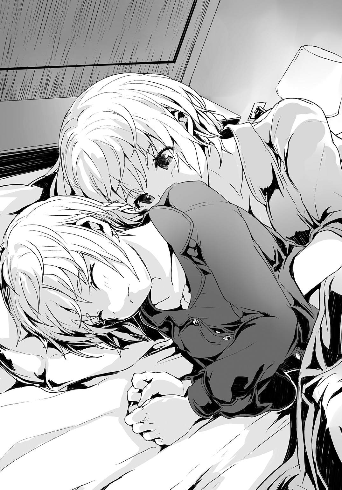
起こさぬように、それでいてしっかりと刺激されるように。
女同士では効果は薄いかもしれない。けれど、幸之助の夢でも見てくれたら......。
「はぁ......ふぅん......ん......ん......」
茶花の吐息に湿り気が増してきた気がした。
そして......何故かめろん自身も吐息に湿り気が増している気がした。
「そ、そういえば、ガラナって疲労回復、滋養強壮......あと、興奮作用があって、精力剤とかによく含まれているって聞いたことがあるような......」
よくよく感じてみれば何だか鼓動も高鳴っている気がする。異性ならともかく、相手は小さな恋する女の子......。だとすると、きっとこれはガラナの成分によるものなのだろう。
しかし、清涼飲料水として発売されているペットボトルのソーダ水に、そこまで濃厚なガラナエキスが入っているものだろうか？ めろんにはわからない。けれど、彼女の手だけは別の生き物のように茶花の胸にイタズラを続けたのだった。
「......あっ......あっ......隊長......隊長ぉう......」
その夜、幸之助の元に一報が届く。工作員と思しき集団が使っていた車が放置されているのが見つかったのだ。だが、ナンバープレートは偽造で、車台番号なども全て削り取られた状態であったため、実質的に得られた情報は一つとしてなかった。
３
今が朝なのか昼なのか、ヘタをすると夕暮れ時にさえ見える薄暗い灰色の空から、綿のような大粒の雪が躍るようにして純白の大地に降り続く。
おかしな話だが、その色のせいで空よりも地面の方が明るく感じてしまうほどだった。
今日も酷く寒い。
吐いた息は全て濛々とした煙へと変わっていく。
思い出したように風が鳴るだけの、物音一つしない世界。それが大自然の中であれば、とても素晴らしいことだけれど......今、僕がいるのはそんな場所じゃない。
烏有町のメイン通りから二本挟んだ道。そこにあるのは、廃校となった古い小学校と雪で覆われたグラウンド、そしてそこを守る城壁のように除雪された雪が押しつけられて二メートルほどに高く積み上がった白き山脈。その対面には教員達用の平屋アパートの成れの果てが数軒並ぶ。
かつては町の子供達が集っていた場所......そこで物音一つしない。
それは寂しさと空しさを佇む者にもたらすだけだった。
見慣れぬ人からすると熊のように見えるらしい彼女の黒い背中に僕はたまらず声をかける。
「なぁ、そろそろ行かない？ ......まだ？ まだかぁ......」
艶やかな黒い毛並みを揺らす愛犬・タコスと共に廃校を眺め続ける。僕はカーゴパンツ越しでもヒリつくような冷気を感じて震えながら。タコスはどこか勇ましさすら伴いながら。
愛犬と共に同じものを眺めるというのは、どこか男のロマンがあるけれど、グラウンドと道路を隔てる雪の山の上にタコスがスフィンクスのように寝そべり、人間はその下の道路に突っ立っているという状況はちょっと違うと思う。これじゃ僕は飼い主ではなく、従者だ。
先程、引き綱を外して、元グラウンドの広場に解き放ってやったのだけれど、三分ほど暴れ回って戻ってくるなり、もう一〇分ほどもこの有様である。雪が予想以上に深かったらしく、全身を沈み込ませながら跳ね回っていたので疲れたのだというのはわかるのだけれど......極厚の毛並みで覆われた超大型犬と違って、人間がマイナス七度の早朝に呆然と立ち尽くすというのは、少々しんどいものがある。
クイクイッとリードを引っ張ってみるも、タコスは頑なに動こうとしない。遠くを見つめながら、時折鼻をひくひくさせ、辺りを警戒するように視線を巡らせるだけだ。こうなるとテコでも動かない。五二キロとはいえ、引きずるように強く引っ張れば動きもするけれど、それで首を傷めたりしたら大変だ。犬はデリケートである。だから、人間が我慢するしかないのだ。
不意に微笑むようだったタコスの口が閉じられて、垂れ耳の根元がムクッと持ち上がる。鼻がひくひくする速度が上がり、視線が学校からその脇にある道路の先、一点を見つめた。
何だ？ と思って僕も見ていると、白い世界に黒い粒が生まれる。五〇〇メートルほど先の雪山の陰から現れたそれは、よろよろとしながらゆっくりとこっちに向かってくるようだった。......とても、ゆっくりゆっくりと。
......あぁ、山田のジイさんだ。相変わらず凸凹が激しい上に純白で統一されているせいでまったく地面が見えない、そんなところをフラフラとオンボロ自転車で走っていた。
ちなみに山田のジイさんの自転車は、マウンテンバイクでもなければ極太タイヤのファットバイクでもない、ごくごく普通のママチャリである。どうしてアレで雪道を走れるのか、そして何故雪道なのに走ろうと思ったのか、歩いた方が速いのに何故乗るのか......そんな様々な疑問を誰もが抱くが、明確な答えを知る者はいない。
タコスも遠くから近づいてくるのが山田のジイさんだとわかったのか、彼女は持ち上げていた耳を下ろして、興味なさげにまた学校へ視線を戻した。おやつをくれたり遊んでくれたりする人は大好きだが、そうでない人にはあまり興味がないのだ。
そのまま一〇分ほど経って、ようやく山田のジイさんが僕らの脇を通過していく。
「おぅ、斉藤さんちのボンズ。元気かぁ。犬っ子は休憩かい？」
ジイさんは喋りながらも自転車を止めはしない。ふらふらと酔っ払いのようにハンドルを揺らしながら、ゆっくりと進み続けていた。
「そういやさっき、この辺で見ねぇ車が走ってたらしいんだけど、ボンズの知り合いかぃ？」
田舎の情報網は情報化社会の数段上を行く。人口は少なく、さらに人と人が接することがさらに少ないはずなのに、情報は目を見張るような速度で行き渡るのだ。誰それが事故っただの、どこそこの誰と誰が喧嘩しただの......酷いのになると、どこどこの息子さんとどこどこの娘さんが昨夜寝たぞといったものまで、どこかに監視員がいるのではないかというレベルである。
何もない町......だからこそ皆、刺激に飢えているのだ。ゆっくりと衰退していくだけの変わらぬ日常に、何か変わったことが起きないかと期待して誰も彼もが生きている。
そんな町にとって見慣れぬ車が走っていたというのだけでも、センセーショナルとまではいかなくとも、話題に昇らせるには十分なネタだと言えた。
「僕の方は特に今日そんな予定はないはずですけど」
道ＭＥＮとなってから、町に余所者を連れてきたり、余所者が車で迎えに来たりといろいろしているので、見慣れぬ車＝僕の関係という図式が町中に出来つつあった。
そうかぁ、と山田のジイさんは新たな情報を手に入れ、キュムキュキュムと雪をタイヤが潰す音を立てながら、僕とタコスの脇を通り抜けていった。
タコスがまた遠くを見やっていると、その垂れ耳がまたピクッと上がる。いまだすぐ後ろをゆっくり進む山田のジイさんに反応したのではな――あ、健三のハイエースじゃん。
こうなると現金なものだ。あれだけ絶対に動かないと無言で主張していたタコスはスッと立ち上がって尻尾をブンブン振り始める。そして百獣の王よろしく雪山の上でワオッワオゥと野太い声を上げた。ハイエースが速度を落としながら近づいてくると、タコスは雪山を飛ぶようにして降りて車に突撃せんとするので、僕は綱引きの要領で重心を落としてその動きを止める。
ハイエースが停車するなり、タコスはすぐさま運転席へ向かう。そしていつもなら「開けろオラー！」と暴れ回るのだが、今回はピクッと一瞬固まる。それもそのはずで、黒一色のはずの健三のハイエースだったのに、運転席のドアが白いものに取り替えられていた。
あぁ、そうか。昨日のアレで、修理できずに交換になったのか。山田のジイさんが言っていた見慣れぬ車というのもこれのことだったのかもしれない。
ドアが開くと、いつもの健三の車だとタコスも確信したようで、飛びかかるようにして、座席に前足を引っかけて二本足で立ち、ハイテンションで吠えまくる。久しぶり、早く遊ぼう！ と言っているようだ。
「タコスは相変わらず元気だなぁ。ちょっと待ってろよぉー」
健三はエンジンを切り、タコスを押しのけて車外に出ると、長靴が沈み込むのも気にせず道路脇の雪山を駆け上っていく。そしてリードを外してやるとタコスもまた全力でそれを追い掛けていくのだった。
「おはよう、幸之助君。昨夜はいきなりいなくなってビックリしたよ。終電時間だったの？」
降りてきためろんに、僕は後頭部を搔いた。さらっと「うん、そうだよ」と噓をつければいいのだけれど......うまく言えないのが僕のダメなところだ。
......おっと、めろんめ、服を着替えたのか。昨日の香奈チョイスによるアクティブな感じもよかったが、今日の彼女はロングスカートにノースリーブセーターという時期と場所を考えるととんでもない格好だ。一応、セーターと同色ながら肩や脇は剝き出しとなるアームウォーマーは着けているものの......寒かろうに。
しかし、アレだな。昨日より胸が強調されて、目線がいってしまうな、これ......。
「タコスの......あぁっと今健三と追いかけっこしているバーニーズマウンテンドッグなんだけど、アレの散歩の時間があったんだよ。時間通りに行かないと、暴れるからさ」
毎日？ 大変だね、と、めろんは白い息を吐きつつ、微笑んだ。何ともかわいらしい顔......なのだけれど、腕は自分の体を抱き締め、足はおしっこを我慢するようにもじもじとしていた。......寒いのだろう。もう一～二分すれば全身が震え始めるに違いない。角巻きは車内だ。
気になるのは、その彼女のやや後方で茶花もまた微妙に俯き加減にもじもじしていることだ。こっちは何でだ？ ちょっと顔も赤いような気がするし......？
僕は手袋を脱いで、茶花の額にそっと手を当てると、彼女はビクッとやたらと大きく反応した。視線も下方へ向けられていて、いつも僕を微妙な気分にさせるあの視線をぶつけてこない。
「熱はな......いや、ある？ ちょっとあるかな？ いや、あるな。茶花、今日はもう家に帰った方がい――」
「だ、大丈夫です隊長！ 単にボク、昨夜変な夢見て、それで......!!」
「......それ、どういう関係が......？」
茶花は顔を真っ赤にすると「隊長が、その、ボクの......その......」と口にするも、その先はずっともにゅもにゅしっぱなしで意味をなさない。助けを求めるようにめろんを見やれば、そっちはそっちで震えながらドヤ顔をしているので、意味がわからなかった。
「うひゃぁ、この辺、雪積もってんなぁ。人間には限界があったわぁ」
額に汗を浮かべて戻ってきた健三は胸近くまでを雪まみれにしながら笑う。
その後ろについてきたタコスは、一応尻尾はゆっくりと振られているが、こっちはこっちでヘトヘトの様子で僕の横に戻るなり、ペタンと座り込んで荒い息を吐いた。
「大きな犬だね。名前は、あ、タコス、だっけ？ 触っても？」
普通、こんだけ大きな犬だと初見では尻込みしそうなものだが、めろんは怖がらずにタコスの前に立つと、その頭を撫でた。もちろん、嚙むことなどない......というか、猟犬や闘犬を除けば、大型になるほど犬は落ち着くものだ。嚙むとしたら危害を加えられたか、テンションが上がりすぎてわけがわからなくなった時ぐらいなものである。
「んで、これからどうするんだ、幸之助」
健三が雪をほろいながら訊いてきたが......昨日と同じだ。めろんのエスコートである。
訊くと、健三は朝から何も喰っておらず、茶花とめろんはホテルのモーニングをほどほどに食べてきた程度らしい。今は一〇時半、ならば、少し早いが昼飯にすればいい。
「よし、めろん。これから北海道ならではの美食をご馳走しよう。健三、アソコまで頼む」
タコスを荷台に上げて、みんなが乗り込むとハイエースが発進。山田のジイさんを軽く追い抜いていく。
「幸之助君。朝、茶花さんから話は聞いたんだけど、この......自然、豊か......な所が君と香奈さんの故郷なんだってね。いい所だね、静かで。健三君が車のエンジンを切ったらまさか物音一つしないなんて、さっきビックリしたよ」
「めろん、気を遣わなくていいよ。......この町は、ただのド田舎だ。年々人口どころか家そのものが減っていってる。ほら、ここって町のメイン通りなのに両脇の家々の並びは歯抜け状態、店もほとんどシャッターが閉まっているのは何も正月だからってわけでもない」
都会の人間ほど田舎＝美しい自然が豊かだと勘違いする傾向があるが、山あいにある夕張ならともかく、この烏有町には彼らが期待するような自然はないのだ。
辺り一帯が平野で、町の中心部を除けばどこまでも畑が広がっているだけ。〝隣の家まで約二キロ〟といった言葉が当たり前に用いられる世界。
玉ねぎやジャガイモ、ニンジンに大根、長ネギといった農作物を大自然の一部だと強弁するのなら確かに自然豊かと言えないこともないのだろうが、常識的とは言えないだろう。
そして例に漏れず超高齢化社会がとうの昔に到来し、現在はその先にある総個体数の減少という段階に入ってきている町。
新生児は毎年ごくわずか、高齢者達は入院したまま帰宅できずに亡くなり、主を失った家々が雪の重みに潰されて朽ちていくだけ。遺族がいない、または独立前に日本国に行ってしまっていると売却も譲渡も、そして取り壊しすらできずに廃墟としていつまでも居座り、町の景観に暗鬱とした印象を纏わり付かせ続ける。火災、または倒壊によって通行人に危害が及ぶ可能性を考慮すれば、強制的に取り壊しもできるのだろうが、そもそも町にその予算がないために見て見ぬフリをし続けるしかないというのも苦笑を誘う。一軒一軒の敷地が広く、道とも距離があるために危険が少ないというのもあるのだろうが......。
「確かに田舎。でも、凄いとは思ったよ。......私の知っている本州の田舎とは根本的なスケールが違うんだよね。本当に〝外国〟っていう感じを受けた」
「嫌な町だよ。......どこもかしこも、いいところがない。今は雪化粧で白く塗りつぶされていて仄かに綺麗と言えなくもないけれど、それもなければ本当に気が重くなる所だ」
「それでも君はここに住んでいる。道ＭＥＮとして働いているのなら......もっと交通の便のいい所に引っ越すとかするはずなのに。何か留まるだけの魅力があるんでしょ？」
「さぁ......何でかな。僕の両親は共働きで、役場と介護施設で働いてるせいもあって、僕がいないとずっと日中は祖母ちゃんとタコスの二人っきりになっちゃうから、不安があるってぐらいが主な理由なんだけど......」
めろんに言われて、確かに何故だろう？ と、思わず僕は自問自答してしまった。その気になれば、今の立場ならば未成年でも札幌に引っ越してしまうことも可能だ。
「違う世界に行きたいと思うことは毎日のようにあるさ。......ここにいると、自分は世界から切り離されているような、そんな気分にさせられるんだ。僕がここで何をしようとも、誰も気にしない。どこかで気の利いた連中が〝みんなで楽しもうぜ〟とイベントをやるとしても、彼らは僕の方を向いてはくれない。参加したいと全力で手を上げても、参加の対象外......そんなことばかりだ。......北海道にいると常に、こんな田舎に住んでいればなおさらに」
「幸之助君......君、日本に行きたいんだね」
めろんのその言葉に、車内に緊張が走った。
僕は己の軽率さを胸の内でなじった。今し方の僕の言葉を嚙み砕けば、そうなる。
脱北思想と取られるに十分な発言だった。一般人同士ならまだリスキーなジョークで済むが、僕のような人間が口にしていい言葉ではない。
――そうだ。確かに、その通りだ。僕は日本国に......理想を言うのなら、東京で暮らしたい。いや、東京で生きたいのだ。
僕が敬愛する棚村ゆかのライブやイベントは必ず東京を中心に行われる。ならば、そこにいれば、参加できる可能性が高い。
大好きな物を大好きだと声を大にして言える場所。自分の好きなように生きていける世界。
そんな当たり前のことが、田舎では認められない、可能ではない。
気がつけば、車とパチンコと女の話しかできない大人に成り下がってしまう。
そんなクソみたいな存在にはなりたくなかった。
棚村ゆかという天使と同じ時代に生まれたのは奇跡。......けれどその幸福を享受できない。彼女の傍に行けない。彼女をきちんと応援できない。第三者の手を介して購入したグッズやＣＤで、何の応援になろうというのか。
そうだ、僕は......日本国に、東京に行きたい。けれど、今の立場では無理なのだ。
脱北するにしても、あまりに問題が......。
恐らくそれは健三も茶花も、香奈もわかっている。それは別にいい。土台無理なことだし、何より仲間だから問題ない。......けれど、めろんは......。
彼女は食べるだけ食べたら祖国へ、日本国へ帰るのだ。
それは、まずい。非常にまずい。この僕が、脱北思想に染まっているなど......北海道を捨てたいとする気持ちがあるなど――。
「めろん、その、僕は......」
誤魔化せるか。誤魔化さないとダメだ。
そうしなければ、北海道のため、そして僕自身のために、めろんを――。
「......いいよ、幸之助君」
僕が助手席から振り返ると......後部座席のめろんは、優しげに微笑んでいた。
「脱出ルート......じゃなくて、君達にとっては密入国になる海上ルート......教えてあげるよ」
何故......？ その気持ちが僕の顔に書いてあったのかもしれない。めろんはゆっくりと頷き、当たり前のように、そしてどこか子供っぽさを残した笑みを浮かべる。
「だって......私達、同じだよ。仲間じゃない」
同じ？ 仲間？ 何の？ そう困惑する僕をよそに、めろんは続ける。
「この旅のお礼に、東京に来たら私がガイドしてあげる。だって、道帝にはこの胸を差し出すけど、あなた達には何もお礼ができそうにないもん。だから、ね」
弱味を握られたと思った。それも致命的な弱味を、だ。
けれど、めろんはそれを理解していないのか。いや、理解しているはずだ。
......あぁ、そうか。そういうことか。だからなのか。
めろんの真っ直ぐな瞳には、疑いようのない〝信〟がある。
北海道に潜入しようとした工作員。それは祖国のためではなく、自分のため。
彼女は自らの行動によって、本当に欲した場所へと辿り着いた。
つまり......めろんは僕と同じ志を持つ者にして、僕の先駆者なのだ。
僕のように望みながらもため息を吐いて諦めているのではない。彼女は何年もかけて努力をし、リスクを負って、北海道へ来た。手に入れた。夢を叶えたのだ。
そんな彼女だからこそ――同じように四一度線を飛び越えたいとする願いを持った者同士だからこそ、こんな目で僕を見ているのだ。
僕の先駆者、同じ志を抱いた者、仲間......。
そういう存在として、彼女は今、僕の背中を押してくれようとしている。
ただ、それだけ。純粋な、善意だった。
走る車の中、めろんが僕を見つめ、僕はめろんを見つめた。
お互いに与えられた環境が逆であったらどれだけ良かったかわからない。
けれど、こんな状況だったからこそ――僕達は、助け合える状況でもあるのだ。
互いの夢を叶えてあげられる力がある。
それは、一つの奇跡のような巡り合わせなのかもしれない。
そんな偶然を、奇跡を、僕が信じられるか否か――そんなの、決まっている。
だって......めろんの瞳に、噓はない。
おいしいものを食べた時と同じ、心のままの、裸の瞳。
そこに疑いをかけられはしない。
「ありがとう、めろん。一度きちんとしたガイド付きで東京を見て回りたいと思っていたんだ。そして......茶花、殺し屋みたいな目でガンを飛ばすのを今すぐやめるんだ」
いつの間にか僕の隣に座っていた茶花が歯を喰い縛りながらグルルと言わんばかりに、体を捻ってめろんを睨みに睨んでいたので、言ってやった。めろんもそれに気づいて、ビクッと体を震わせて仰け反っていた。茶花の本気の目を見るとマジで眼力に殺されるんじゃないかと思えてくるレベルであり、慣れない人間なら失禁しかねない。
「と、東京に来る時は、茶花さんも一緒に来るといいんじゃないかな？ うん、そ、そうすれば、ほら、ね？ 幸之助君も安心するだろうし、男女で行動すると工作員だって思われにくいって言われてるし......ね？ ......えーっと、今どこに向かっているのかな？」
めろんが怯えながら必死に笑顔を取り繕い、何とか話をねじ曲げる。
「今向かっているのは、パチンコ店を除けば町で一番の人気スポットさ。オープン当初は車が駐車場に入りきらずに、道路沿いに長い行列ができたぐらいの場所だ。ほら、見えてきた」
「......あの、幸之助君？ 気のせいか、ポツンと建ってるコンビニしか見えないんだけれど」
「コンビニだよ？ 北海道が世界に誇るコンビニエンスストア、セイコーマートだ」
「しかもこのコンビニ、０時で閉まるんだね......。ここに北海道の美食が？」
「あぁ、僕達が一番うまいと思っているものをご馳走するよ」
車を駐車場に入れてから――一〇分後。僕らは一度店に入って、そしてまた車内に戻ってきたのだった。僕らの手では湯気の上がる温かな昼食が出来上がりつつある。
「......あのね、幸之助君。北海道の美食をご馳走してくれるんだよね？ なんで、私、今、カップ焼きそばを持っているの？」
「ただのカップ焼きそばじゃない。北海道のソウルフード『焼きそば弁当』だ！」
大きな白くて四角い容器に入ったカップ焼きそば。
そう、それこそ北海道限定商品にして世界で一番うまいカップ焼きそばなのだ。
「そろそろ三分だ。ここからは少し特殊だ。よく聞いてほしい。......さっき渡したマグカップに、焼きそば弁当に付属していた〝粉〟を入れ、麵の戻し汁をそこに注ぐんだ」
僕らは皆それぞれ車内に常備してあったプラスチックマグカップに麵の戻し汁を注ぐ。
北海道民以外であれば捨てるであろう、その汁が、魔法の要だった。
四人がトポポポと音を出すに従い、車内に湯気が立ち上り、窓、そして僕と茶花の眼鏡が曇り、得も言われぬおいしそうな匂いが拡がりだす。タコスがにわかに「ん？ ごはん？ おやつ？ 自分の分は？」とそわそわし始める。......さっきあげたガムはもう食べちゃったか。
「焼きそば弁当の魅力は、その焼きそばのおいしさはもちろんだけれど、この中華スープにこそ魅力の神髄があると言っても過言じゃない」
半信半疑の目をしたままめろんはマグカップを脇に置き、麵にソースをかけて搔き混ぜ、付属の青のりをふりかけて準備を終える。
全員が手を合わせ、いただきますの声。僕らは麵よりも何よりも、まず中華スープへと手を伸ばした。冬の食事は熱いスープから始めたいのは道民だけではないだろう。
めろんが不安げな目で僕を見てくるので、〝信じてくれ〟というように彼女を見つめ返し、頷いてみせる。めろんは恐る恐るカップに口を付け――彼女の瞳が〝くゎっ〟と見開かれ、湯気がその小ぶりな鼻の穴から溢れ出る。
「な、なに、この味!? 素朴で、それでいて......旨味が深いこの味はなに!?」
そう、焼きそば弁当の中華スープは、揚げ麵を戻したお湯を活用することで、その味わいに奥深さが出ているのだ。これによって粉末スープの素だけでは得られぬ油分が、そして小さな麵の切れ端がいい感じに具となってくれるという、完璧な構成だった。
めろんは三口ほどスープを飲んで、それから麵に箸を付けた。
女の子の割に結構大胆に麵を喰らう様は、見ていて気持ちが良いほど。かぶりつく、と表現したっていいだろう。......昔の香奈がこんな感じだったな。
「スープで潤い、ぬくまった口に......この味わい！ 奇をてらった感じではなく、ある種王道で優しい、如何にも北国らしい甘みがしっかりとした素朴な味！ ......そうだよね、ソウルフードって奇抜さよりも毎日のように食べたくなる、そんな味だからこそ愛される......。深い。......あぁ、何故かな、おいしいのは間違いないんだけれど......何だか普通のカップ焼きそばよりおいしく感じる！」
うまい、それは間違いはない。けれど、それ以上においしく感じる魔法が、これにはある。いや、正確にはここにはある。恐らく東京人であるめろんにはその良さを感じることはできても、明確に理解はできないだろう。
焼きそば弁当は北海道のソウルフードだ。でも、それは単に北海道だけで長年販売しているから......というだけではない。
焼きそば弁当の真のありがたみは〝北の大地で食べるから〟わかるのだと思う。
というのも、今僕らは暖房のついた車内でこれを食べているが、先程までマイナス七度の世界にいたのだ。そうなると、人間、どうしたって温かいものが食べたくなる。
当然そういう時にインスタント麵を食べようとするとラーメン系に自然と意識がいき、熱い汁のないカップ焼きそばは敬遠されてしまうだろう。
そこで、中華スープだ。これが効いてくる。
温かいものが食べたい。その当たり前の衝動を受け止めてくれる存在が、中華スープなのだ。
これがあることで焼きそば弁当は寒い冬の間も道民達に好んで食べられ、そうであるが故に土地に根付いていった......のだと、幼少期から食べ続けている僕は思っている。実際、一般的なカップ焼きそばは、春～夏にかけてが売り上げのピークに達する。暖かい期間は逆に熱い汁のない焼きそばが好ましくなるというわけだ。
つまり、めろんが〝何故だろう〟と口にした理由、それは即ち――。
「そうか！ 北国だと料理の〝温かさ〟は〝おいしさ〟になるんだね！」
思いがけないめろんの発言に、僕は麵を口から垂らしたまま思わず彼女を見た。
......そっか。飛び級で大学だものな。秀才なんだ。分析はお手の物か......。
チッ、食べ終わった時にドヤ顔で言おうと思っていたのに。
彼女の言う通り、寒い時は〝温かさ〟こそが〝おいしさ〟のキーを握る。
汗をかいた後の冷たい水と同様に、寒い時は温かいものを人体は〝快〟とするのだ。
雪国に暮らしていれば自然と誰もが知るものだし、そうじゃなくとも誰もが何となく理解もしている。けれど、それを『〝温かさ〟は〝おいしさ〟』だと、ストレートかつシンプルに表現しためろんは見事という他なかった。
「焼きそば弁当、堪能させてもらったよ！ ......ただ、その......幸之助君？ あのね、私、確かに地元の人が普段食べているものが一番おいしいっていうのが持論だけど、その......もう少し〝温かい〟感じの料理も食べたいんだよね......それもガッツリ」
「え、そう？ それじゃ夕飯は......」
「え？ 夕飯？ なんで？ これから食べに行こうよ」
え？ という顔でフロント席に座る三人の道民は後部席に座るめろんを見た。焼きそば弁当はスープもあって、結構ボリュームがある。それを食べた直後に......？
ちらり、と僕は健三を見やる。彼は視線で応じつつ、狼狽えながらも頷く。
茶花は......ダメっぽいな。焼きそば弁当でお腹いっぱいらしい。
「よし、わかった。それじゃより温かい料理を食べよう。僕の家......よりは、香奈の家の方がいいか。広いし、アレのストックもあるだろ。......今いるかな？」
電話をかけてみると、香奈は家の前の雪かきをしていたらしい。今から行くことを告げると、面倒臭そうな声を出されたがＯＫを貰えたので、僕は健三に指示を出して車を発進させた。
香奈の家は、父親が北海道自衛軍で研究職に就いている変わり種なのだけれど、小規模な農業を営む祖父母と同居しているために少々町中から離れた場所にある。ハイエースを走らせるに従い、人気はもとより走る車の数も、家の数すらどんどん少なくなっていく。
僕は棚村ゆかの曲でもかけようとカーオーディオに手を出すが......ないっていうね。
あれか、先日どっかに飛んでいったままだったか。
足下を探そうとしたが、頭を下げていると酔ってきそうだったので、仕方なく普段使い用のＭＰ３プレイヤーを接続しようと上着のポケットに手を突っ込む。......あっ、そうだ。
「めろん、これ、君のじゃないかな。僕のポケットに紛れ込んでいたんだけど」
昨日、ポケットの中で見つけたマスコットキャラのキーホルダーを僕は体を捩って、後部座席に座るめろんへと渡す......のだが、その彼女の顔に驚きの表情が生まれる。
「......これ、私のじゃない......」
「でも、これってアレなんだろう？ 『東京デスニードラウンド』のマスコットキャラクターのニッティだろ」
「東京デスニードラウンドがあるのは、千葉県だよ！」
その矛盾を孕んだめろんの言葉に、僕の頭の中で今まで疑問に思っていた事象の多くに答えが出された気がした。札幌駅の時点で唯一、道ＭＥＮだと確証があった僕にぶつかってきた理由に、尾行を撒いた後で追いつかれた理由、さらには山田のジイさんのあの言葉......。
「いやいやいや待てってめろんちゃん。幸之助も驚きつつも納得したような顔してっけど、おかしいだろ。東京って入ってんのに何で千葉にあるんだ？ そんなわけ......」
「千葉県なんて世界からしたらマイナーな土地だから、いろんな施設が名前にＴＯＫＹＯって入れたがるの！ そうすれば通りがいいし、イケてる感じもするし、さらに言うとchibaって音はコカインやマリファナのスラングのchivaに似すぎてて、外国人観光客を呼び込もうとする場合は印象が悪いんだよ！ ショッピングセンターの『ららぽーと』や観光地の『ドイツ村』、さらには『大学』までもが東京を名乗ってて......とにかく千葉県の多くの施設には〝東京〟って入ってるの！ 絶対それ発信器か何かだよ、早く捨てなきゃ！」
僕は手の中で、薄気味悪い笑みを浮かべるネズミの化け物を見つめた。
虎の威を借る狐ならぬ、東京の威を借る千葉の施設の化け物......。
「いや、ダメだ。一度でもこれを実家に持ち込んだ以上、ヘタに投棄するとそっちがやられる。僕はともかく、祖母ちゃんとタコスが人質に取られるのはマズイ」
「では隊長、どうしますか？」
隣に座る茶花が僕を見上げてくる。
その顔に、今朝のもじもじした感じと赤みはすでにない。命令を待つ猟犬の目をしていた。
「茶花、恐らくお前が一番しんどいポジションになる。......頼めるか？」
「了解です、隊長。......ボクはそのための、あなたの『騎士』です」
僕は彼女のベリーショートをかき回すようにして撫でてから、めろんに告げる。
――迎え撃つ、と。
「すでに今朝方見知らぬ車が町内に入り込んでいるとの情報を得ている。正月に帰省したどこぞの孫かとも思ったが、タイミング的に恐らくそれだ」
この町って車を一台一台チェックしているの!? と、めろんが驚いていたが、恐らくこの町に限らず田舎はどこも同じだ。
「香奈をピックアップ後、戦闘可能なエリアに移動。タコスは家に帰したいが、その移動中に来られると面倒だ、香奈の妹達と遊んでてもらおう。道軍を待機させ、餌に喰らい付いたところを彼らの力で押さえ込む。可能な限り殺生は避けたいところだが......」
「幸之助、餌ってなんだ？」
「僕達だよ」
発信器を放置するだけでは、さすがにそこに喰い付くとは思えなかった。どこに行っても見晴らしがいい土地柄、人がいないのは遠距離からもわかるだろうし、囮となる身代わりの人間を用意するには僕らはいささか体型が個性的過ぎた。巨乳、ロリ、ゴリラ、それにふくよかボディである。それに、何より......。
「いいぞ、楽しくなってきた。特殊機密部隊はこうでなくっちゃな」
「笑顔が素敵です、隊長。久しぶりにお役に立てそうで、ボクも嬉しいです」
僕と茶花が笑うが、健三は苦笑する。
「俺とそっくりなダチだと思っていたんだがな。......だが、たまに俺にはお前がわからなくなる時がある」
「完璧に同じ人間なんてどこにもいない。もしいるとしたら、そいつは薄気味の悪い事態だ。解決のために血を必要とするだろう。......実際、僕と健三の現状の類似点だけで将来的に殺し合わなければならないのだから」
健三は苦笑すると茶花の頭をポンと叩き、頑張れよ、と口にしたのだった。そうすればみんな平和だ、と。
「あ、先に言っておきますが、ボクがその......隊長と......と、ともかく、そうなった暁には、万が一に備えて何かされるより先に健三、あなたを殺します」
「なんでだよ！ 俺、多分茶花ちゃんなら何もしねぇって！ そもそも本人の同意なしにどうこうする趣味はねぇし！」
「じゃ、どうするんですか？」
「そりゃ茶花ちゃん、知ってるだろ。......奥さぁん、田中健三でございます。最近どう？ 幸之助じゃ満足できてないんでしょ？ 素直になりましょうよ、大丈夫、そちらに影響はないように、秘密でコッソリ......ね？ わかってますわかってます、幸之助に満足できないんじゃなくて......幸之助だけじゃ満足できないんですよねぇ？ いやいや、そうは言ってもこっちは欲しいと訴えていますよ、クックックッ。大丈夫お子さんはまだ帰ってきませんって......といった具合でにじり寄ってだな、その後は大人になったら教えてやる」
「やっぱり殺します。ぶち殺します」
「何でだよ！ 何でなんだよ！ 同意の上なら何したっていいだろ!!」
良くない!! と、僕と茶花は吠えた。何でこいつは僕の未来像で下品な想像しやがるんだ。
拗ねる健三を無視して僕は茶花に香奈へ連絡するように告げ、僕は僕で道軍へ連絡を取ろうとスマホを取り出すが、めろんが僕の名を呼ぶのでその手を止めて振り返った。
彼女は困惑するような顔をして僕を見ていた。大丈夫だというように、頷いてみせる。
「連中の目的が何であれ、対処できる。いきなり襲われたとしても、僕の『先導者』で何とでもなる。危険はない」
「そこは信用してるわ。道ＭＥＮの能力は全然疑ってないんだけど......ただ、たまに出る『ナイト』とか今の『ヴァンガード』とかって......何かのコードネームなの？ 普段は名前で呼び合っているのに」
うっ、と茶花と健三に緊張の空気が漂うも、僕は軽く手の平を見せることで彼女らに落ち着くように告げた。
今一度めろんの瞳を見る。同志だ。そこに偽りはない。――信じられるはずだ。
何よりこの後に千葉県民と戦うとなれば、遅かれ早かれ目にすることになる。
それなら先に告げたって、構わないはずだった。
「そうだ、めろん。道ＭＥＮになるには二つの資格がいるんだ。一つは、僕とうまくやっていけること。そしてもう一つは......ＤＳＫ１７９遺伝子が覚醒していることだ」
え？ という言葉と共にめろんの瞳が驚きに染まる。
「極秘情報だ。内密に頼む。この状況、そして君だから話した。......それ以上は後にしよう」
「そうだな、幸之助、その方がいい。......全員しっかりシートベルト締めておけ。この辺じゃ見ねぇ車が来てるぞ」
車内に先程とは違う緊張が走る。健三の視線は前方ではなく、やや横合いを見ていた。僕らが走っているのは香奈の家に向かう国道。周りは畑で、何もない綺麗な雪面が広がっているだけの場所。......だからこそ、見えた。
近隣の農家が行き来するためだけに除雪した私道を爆走する、赤いＳＵＶの姿。
その行く先は、僕らが走る国道へと繫がっていた。
「もしアレがビンゴなら......どうする、Ｕターンするか？」
「いやそれだと烏有町の中心部でぶつかる恐れがある。人口密度がどれだけ低かろうが、そこで道軍を戦わせるわけにはいかない。このまま突っ走ってくれ」
Ｕターンせずとも停車するか、とも考えたが、この、あまりに何もない場所では茶花の能力『騎士』の発動条件が揃わない。だが、僕らが行く先には香奈の家、そしてその手前にも頑なに二〇年間低農薬玉ねぎだけを作り続けることで有名な農家――中山さんの家と倉庫があるのだ。最悪でもそこまで行ければ......。
僕は急ぎ北海道防衛大臣に連絡を入れ、これより自分達が襲撃される可能性があることを告げ、緊急の出動を命じる。
ここからは伝言ゲームだ。どれだけ大臣の彼が急いだとしても現場の人間に通達されるまでに三分はかかる。通達を受けた上で装備不明の歩兵四人を相手にするだけの準備を調え、出動となるまでに最速でも五分。......問題はそこからだ。僕らのいるこの夕張郡烏有町に一番近いのは陸上自衛軍岩見沢駐屯地だが、そこに航空機はない。となれば車両をぶっ飛ばすしかないが、夏場で三〇分弱、今なら五〇分弱を見込む必要がある。まず、間に合わない。
大臣がそこを考慮して陸上自衛軍丘珠駐屯地か航空自衛軍千歳基地のヘリコプター隊に優先的に連絡を入れてくれれば......いまだちらつく降雪を考慮しても一五分は切る。それぐらいなら凌げるかもしれない。
最悪の状況としては、大臣連中がそこまで気が回らずに岩見沢に連絡を入れるだけで済ませることと......逆に気を利かせ過ぎて戦闘機、Ｆ―15Ｊをホットスクランブル発進させた時だ。五分で現場上空に到着し、その二〇ミリバルカン砲を好き勝手に使われると、僕が中山さんに殺されかねない。農家のオッサンはどんなにおとなしい人だろうが、大抵の場合においてマジでキレた時には手が付けられないと相場が決まっているのだ。
中山さんの玉ねぎはやや小ぶりなものが多いが、安心と信頼の低農薬玉ねぎは世界で大人気だ。しかもただの低農薬ではない。実質的に無農薬の玉ねぎである。それなのにあくまで低農薬としているのは、近隣の農家から散布された農薬が飛んでくる可能性をどうしても否定できないため。つまりあえてそこまで誠実な表記をし、胸を張って玉ねぎを世界に送り出している。
一般的なイメージと違い、残念なことに平均的に北海道産玉ねぎは日本国で生産されるそれに比べて使用する農薬は多い。無論安全基準を十分に満たして残留農薬も検出されるようなこともないとはいえ、それでも〝多い〟という事実は変えられない。
これの原因は、日本国の玉ねぎは基本的に冬の間に育成されて春に収穫されるが、冬は雪で閉ざされ大地が凍りついてしまう北海道は逆になる。春から夏にかけて育成され、秋頃に収穫される。つまり、玉ねぎの育成期間が害虫の活動期間とモロに被るため、農薬の力に頼らざるを得ないのである。
減農の意識を誰もが持ち、安心安全な野菜を生産しようと多くの人々が努力しているが、それでも中山さんのように思い切った舵取りが出来る者はそれほど多くはない。どうしたって、大変なのだ。何なら、割に合わないと言い切っていいぐらいだ。
だからこそ手間と情熱なくしては無農薬野菜など作れない。それが難易度の高い北海道産玉ねぎともなれば尚更である。だからこそクリーンな土を何よりも宝とする中山さんの畑に......分間四〇〇〇発で二〇ミリ徹甲焼夷弾をバラ撒こうものならマジで何をされるかわからない。
「あー......ダメくせぇぞ。乗ってる連中は、赤いぜ」
健三の言う通り、ＳＵＶの窓から見える四人組は赤いダウンジャケット。
間違いない、何かに挑まんとする千葉県民だ。
となれば、この先の私道と国道の交差ポイントを過ぎれば、雪道のカーチェイスが始まるだろう。......健三のドライビングテクニックなら逃げ切れはしないまでも時間を稼げるはずだ。
そうなれば、僕の能力発動までの時間が稼げる。離脱は容易く、確実......が、これを使うとなると一人で家にいる祖母ちゃんが心配だ。
だから......道軍が到着するまで、持ち堪えたかった。
「めろん、シートベルトをしっかり。茶花は悪いがタコスのとこに行って怪我しないように抱き締めてやってくれ。僕は能力発動の準備に入る」
茶花を後部座席へ押しやると、僕はＭＰ３プレイヤーをカーオーディオと接続。
そして、我が同志達に協力を請うメールをスマホで打ち始めるのだが......思わずその指が止まった。――ＳＵＶが接近、ハイエースにタイミングを合わせてきていた。
アクセルを吹かすハイエース、その横腹に突っ込まんとするようにＳＵＶが私道を飛び出してくる。
健三、ＳＵＶにハイエースの横っ腹を喰らい付かれる寸前、素早くギアを変えてエンジンブレーキと甘いフットブレーキ。
わずかな減速だが、高速でクロスしようとしていたこの状況ではそれで十分だった。
破砕音と共にハイエースの短い鼻先をこすりながら赤いＳＵＶが僕らの視界、左から右へと飛ぶように走り抜けていく。
健三、再びギアチェンジ。絶妙な力加減でアクセルを踏み、路面を滑りだしかけていたタイヤをしっかり地に喰らい付かせ、滑らかに加速する。
「ナイスだ、健三！」
「ヘッドライトがくたばっちまったがな！」
後方を見やれば、ＳＵＶは道の上でスリップして停止。......チッ、畑には落ちなかったか。
再びＳＵＶが僕らを目指して走りだすが、その頃には二〇〇メートルは開いていた。
これなら十分に逃げられ......ん？ おい、噓だろ!?
「健三アクセル踏み込め!! 茶花はタコスと一緒に荷台から後部座席に移動!!」
「どうした、幸之助。こんだけ距離が開けばまず大丈――おい!? あのＳＵＶ、ってか、助手席の箱乗りしてる奴、ライフル持ってねぇか!?」
「だから急げと言っている！ Ｍ４系のカービン銃にスコープ載せてるぞ!!」
このキロ単位で見晴らしの良い場所でスコープ付きのライフルを出されようものなら、もはやハイエースなど的以外の何ものでもない。
――ここまでだ。祖母ちゃんにリスクはあるが、車を捨てて緊急離脱するしかない。
「おい、よせ幸之助！ 俺の愛車は捨てないぞ！」
健三の制止を無視し、僕はカーステレオに接続したＭＰ３プレイヤーを再生する。緊迫した今の状況の中で、棚村ゆかのゆったりとした天使の歌声が流れだす。
「ちょっ、ちょっとこんな時にポップな音楽かけてる場合じゃないでしょ!?」
めろんも慌てながら、シートベルトで体を固定している場合ではないと判断したのか、身を自由にすると混乱した様子のタコスを後部座席に引っ張り込むのを手伝ってくれる。
「こんな時だからさ」
同志にメールを打っている時間はなさそうだ。
今の時刻とはいえ、恐らく偶発的に一人ぐらいいるだろう。
道が左カーブに差し掛かる中、僕は瞼を閉じて耳を澄まし、車内に流れる音に集中する。ハイエースの焦げつきそうなエンジン音や風を切る音、そして雪を潰し、跳ね飛ばす音――そんな中に唐突に破砕音と銃声が響く。車内を突き刺す冷風に集中が切れる。
瞼を開くとフロントウィンドウに指先ほどの穴が空き、蜘蛛の巣状のヒビが広がっていた。後ろを見ればバックドアのウィンドウも同様だ。
......弾が、貫通したのだ。怪我人はいないが、風通しがやたらと良くなってしまった。
クソッ！ 車内のカーステレオじゃなくてイヤホンで聞くべきだった。どうやったって周りの音に意識がかき乱される。
また、銃声。それが聞こえる直前に後部から金属音が響き、車体が激しく揺れる。
「左の後輪をやられた!? 全員右側に寄れ、ケツがこすれる!!」
「後輪なんぞによくも当てられたもんだ！ 走れるか、健三!?」
「やるしかねぇんだろ！ って、幸之助までこっち寄ってくるな！ 運転しづれぇ!!」
三輪走行となったことであからさまに速度が落ちていた。後方からＳＵＶが迫る。
ダメだ、道軍到着までは逃げ切れない。かといって僕の能力を使うには、集中できる状況でもなくなった。中山さんの家と倉庫までは、まだ一キロはある。
僕と健三は視線を交差させる。付き合いが長い分、それだけで方針を決められた。
「茶花、めろん、タコス、右側に寄れ。それで、僕が合図したら一気に左に寄ってくれ」
それ以上説明している余裕はない。すでにＳＵＶが距離を詰めてきていた。
僕はその腹をこすらせながら、座席の上を乗り越えて、荷台にまで移動する。茶花もまたこちらの意図を察したのか、僕と同様に後部座席を再び乗り越えて荷台へ来てくれる。
「荷台はリスクが高いぞ、茶花」
「隊長と一緒なら、怖くないです」
眼鏡越しに僕らは瞬間的に見つめ合う。阿部先生に似た鋭すぎる目。だけれど、危機的状況下では、その凄味のある瞳が力強く感じられる。
その頭を乱暴に撫でる。擽ったそうな顔をする茶花のベリーショートの髪は、僕の手の平に彼女の体温を感じさせた。
「幸之助、限界だ!! 俺の頭に照準付けられてるくせぇ!!」
目を凝らせば箱乗りしているライフルマンの表情すら見て取れる距離。彼はスコープで確かにこちらを、それも健三を狙っているようだ。そして、それはいける距離と位置だ。
「良し、いくぞ!! スリーカウント、３、２――今ッ!!」
健三がやや右へハンドルを切ると同時にブレーキ。めろんとタコスは右側から左側へジャンプ。僕は茶花を抱き締めたまま後輪の真上へ転がった。全員で計二〇〇キロに及ぶに重量移動により、かろうじて浮いていたハイエースのケツが下がって、雪面に磨れる。強制的な急ブレーキ。波飛沫のように白い粉塵が後方に向かって盛大に噴き上げ、その中に急ブレーキを踏むも停まれないＳＵＶが突っ込んだ。
来るぞ、踏ん張れ!! そう健三の声が上がるが、全員椅子に座ってなどいないので踏ん張りようなどない。全身に力を入れるだけだ。
追突される強烈な衝撃。僕と茶花が荷台を転がる。右側に戻れ！ と、僕が声を上げれば全員がまた、動く。擦れていたハイエースのケツが持ち上がり、健三もハンドルを戻してアクセルを踏み込み、加速が始まる。砕け散ったバックウィンドウの向こうを見やれば、フロントに凹みを作ったＳＵＶがケツを左右に激しく振りながら、スリップしている。まるで踊るかのようなそれに、助手席で箱乗りしていた男の姿はなかった。――落ちたのだ。
だが、ＳＵＶは停まる素振りを見せず、何とかカウンターステアを入れて無理矢理にコントロールを取り戻すとアクセルを吹かしてくる。
「もう一度やるか、健三!?」
「無理だ、連中、さすがに警戒して後ろに付く気はなさそうだ。......だが、そうなるってことは、飛び道具はさっきの一丁だけってことだろうな」
目を凝らして転落した男の姿を探せば、路肩の雪面の中にかすかに赤い色が見える。気を失っているのか死んだのか知らないが、動く気配はなかった。
中山さんの家まであと六〇〇メートルといったところ。このまま滑り込めれば、茶花が使える。相手に飛び道具がないなら、それで――。
迫り来たＳＵＶに、再びケツにキスをさせようと健三が幾度もハンドルを切るが、三輪の車にはさすがに無理があった。ついにＳＵＶがハイエースを捉え、右隣に並ぶ。今回の車はスモークガラスではない。窓越しに全員が赤いダウンジャケットを着た男達の姿が見えた。
後部座席の窓が開く。そこから、男が何かを放り投げてきた。
ジャムのような瓶に入ったそれは――火炎瓶だ！ 何でもアリか！
瓶がハイエースの車体にぶつかるとガラスが砕け、火のついたゲル状のものがべっとりと車体の側面にへばり付き、その全体に炎が走る。
「車内に直接投げ込まれなけりゃどうとでもなる！ ハイエースは並みじゃない!!」
健三は車体をＳＵＶにぶつけに行くが、三輪の方が安定性が悪い。逆にこちらがフラついた。ＳＵＶが速度を上げてハイエースを追い抜きにかかる。それが意味することは一つしかない。
「もうしゃーねぇ！ 幸之助、能力は!?」
「この状況で使えるわけないだろ!!」
先手を取ったＳＵＶから火炎瓶がフロントへ投げつけられる。直撃すると共にフロントガラスにはさらに細かなヒビが走るが割れはしない......が、炎が一斉にフロントガラス一杯に拡がり、こちらの視界を奪った。それでも健三は車をうまくコントロールしようとするが、先程ライフル弾でぶち抜かれた小さな穴から、火のついたゲル状の液体が車内に飛び込んできた。
それは健三の左腕に付着し、一瞬の間に彼のダウンジャケットに引火。
健三の左半身が一気に燃え上がるが、それでも彼はハンドルを放さない。
さすがのタコスもこれにはパニックになって甲高い悲鳴を上げ、めろんが素手のままで健三に纏わりつく炎を叩き消そうと手を上げるが、それが振り下ろされるより先に追撃が来た。
ブレーキをかけたＳＵＶのケツに、今度はハイエースが突っ込んだのだ。
さっきのお返しだと言わんばかりのその衝撃で、ハイエースは完全にコントロールを失った。ケツが激しく振られ始め、それが大きくなる。
「全員歯喰い縛れ!!」
ハンドルを左右に激しく回す健三の声が車内に響く。反射的に僕は茶花を、めろんはタコスを抱き締めた時――強烈な衝撃が車内を襲ったのだった。
――アレ、これって......何の匂いだっけ？ どこか、懐かしいような......。
意識の空白から僕を呼び戻したのは、何やらやたらと美味しそうな匂いだった。
気怠い日曜の遅い朝に嗅いだら、嬉しくなるような、そんな匂い......。何だろう、コレは。
僕が茶花を抱いたまま頭を上げてみれば、ハイエースは完全に沈黙していた。
エンジンは止まり、カーステレオも死んでいる。
どうやら道路脇に除雪で積み上げられていた雪山にハイエースは頭から突っ込んだようだ。よほど勢いよく突っ込んだらしく、車の半分は雪に沈んでいたが、それのおかげで車体を焦がしていた炎は消えていた。......が、健三のダウンジャケットはまだ燃えている。
「起きろ健三！ 焼け死ぬぞ、っていうか、このままじゃハイエースが燃えるぞ!!」
健三にとってはハイエースは自分の体よりも大事だ。彼はハッとして起き上がると、シートベルトを外して器用に上着を脱ぐと足下に突っ込んで、長靴の底で滅茶苦茶に踏みまくって鎮火させる。そんな彼の体は左側の揉み上げが焼失していたが、それだけで済んだようだ。
燃え具合からするに、恐らく気を失ったのは一瞬だろう。まだ千葉県民の追撃もない。
「タコス、無事か!? 茶花、めろん！」
タコスはパニックになっているようではあったが、怪我はなさそうだ。衝撃の際、タコスを抱き締めためろんがクッションの役割となってくれたようだった。
茶花はうっすらと意識を取り戻しつつあったので、荷台に寝かせ、僕はタコスとめろんのもとへ。タコスは怖いのか、僕に体を寄せ付けてくるが、怪我がないなら今は後回しだ。
僕はめろんを抱き上げ、その頰を叩く。
「ん......あ、良い匂い......甘くて、香ばしくて、お腹が......。寝過ごした日曜の朝みたい......」
彼女とは朝食のチョイスで意気投合できそうだが、今は悠長にしている場合ではない。
「急げ、全員外に出るぞ！」
フロントドアとサイドドアは雪のせいで開きそうになかったので、僕はハイエースのバックドアを押し開ける。するとＵターンしてきたＳＵＶがちょうど僕らの前を走り抜けたところだった。
赤い車体は急襲を警戒したのか、五〇メートルほど離れた場所に停められ、中から赤いダウンジャケットの男三人が現れる。
「......ようやく捕まえられた」
昨日、駅で僕にぶつかってきた長身の男が口元に笑みを浮かべた。リーダー格なのだろう。
「昨夜は驚いたぞ。それまで札幌にあった信号が三〇分後の次の発信では六〇キロ先のこんな田舎に大移動だ。......ヘリでも使ったのか？」
部下と思しきソフトモヒカン男と、ポケットに手を突っ込んで落花生を取り出すと指先で砕いて中のピーナッツを頰張る坊主を引き連れ、長身男が近づいてくる。
僕は急ぎ茶花とめろん、そしてタコスを連れて外に出る。
「知っていると思うが、僕は、北海道帝直属北海道特殊機密部隊道ＭＥＮ部隊長斉藤幸之助だ。貴殿らの要件を尋ねたい」
言いつつも僕は振り返り、タコスと茶花を呼ぶ。
「タコス、いいか。香奈の家に行け。ここからなら一キロちょいだ。この辺は何度も通ったことがあるだろ。わかるな？ 香奈の家だ。あそこでおやつがいっぱい貰える、わかったな、行けるな？ ......茶花、お前は......わかってるな。よし行け」
僕はタコスと茶花の頭を撫で、そして押すようにしてこの場から送り出す。千葉県民達がＵターンして町側に陣取ってくれたおかげで彼女らの逃走を阻害するものは何もなかった。
千葉県民達は彼女らに目をやるも捕まえる気はなさそうだった。小さな女の子と超大型犬である。現状千葉県の工作員が三人だけなら、手間とリスクを考えればそちらに人数を割くのは得策ではないからだろう。......何より、彼らからすると僕が少しでも被害を減らすために、彼女らだけでもと逃がしたように見えたはずだった。
リーダー格の長身の男が、さて、とタコス達を横目にしつつ口にする。
「道ＭＥＮ、君達に危害を加える気はない。東京から送り込まれた工作員を回収したいだけだ」
茶花達がダッシュし、遠ざかっていくのを見てから......たっぷりの間を取って僕が応じる。
「こちらの意見を述べる前に、貴殿らの所属と個々の名を尋ねたい」
「所属は伏せさせていただこう。......私はα、このソフトモヒカンはβ、スキンヘッドはδだ」
「では先程転落したのはγかな。......助けに行かなくていいのか？ 朝から降っている雪がクッションになったはずだ。まず死んではいないだろう」
「生憎だが、仲間の身より任務優先だ。......返答を聞こう、道ＭＥＮ。その東京の工作員をこちらに渡せ。君らを叩く任務ではない」
「何故、この東京人の身柄を欲する？」
「ノーコメント。......その女を寄こせ。最悪、死体でもいいと言われている。わかるな？」
僕はゆっくりと首を動かして、隣に立つめろんを見た。
「......今まで、ありがとう。いろいろおいしかった。もっと食べたかったけれど、これじゃ......ここまでだね。......君達まで巻き込むのはさすがに悪いよ」
「いや、まださ。......北海道人ってのは先祖代々頑固でね。一度、こうと決めたら最後までやり通す。そんな性根でもなけりゃ、北海道開拓なんてできやしなかったんだ」
僕は歩きだそうとしていためろんを後ろに下がらせ、再び千葉県民達――αらを見る。
「聞け、α。そちらの要望は断らせていただこう。北海道帝からの命により、我々は彼女のエスコートを今の任務としている」
ハンッ、と僕の後ろで健三が鼻で笑うのが聞こえた。振り返ると、彼の目は据わっている。
そういえば健三も農家だ。正確には、農家の三男。本気でヤりあったことはないが、彼は彼でキレたら怖いのかもしれない。
「そちらが断るならばこちらは実力行使しかない。君ら道ＭＥＮには対抗可能な戦力があるようには見えないが、構わないかな」
「気を遣っていただくのはとてもありがたい。だが、それはそちらも同様ではないだろうか？ ......こちらは、この僕はともかくとしても、夏は広大な農地で体を酷使し、冬は除雪車を乗り回し、普段はハイエースを自らの体とするかのように自在に操り、道内を爆走する我が道ＭＥＮ構成員の田中健三もいる。......貴殿らに勝ち目があるとは思えない」
僕の言葉に、千葉県民の連中は口元に手を当てて笑いを堪えた。
「ねぇ、幸之助君。......失礼だけど、私も、その......プロの訓練を受けた人達を相手にするには、ちょっと、その......弱いというか......健三君でも無理がある気がするんだけど......」
僕はめろんの動揺を無視して、千葉県民達に言葉をさらに投げる。
「このクソダサい毛玉付きセーターをナチュラルに着こなす僕の相棒は並みじゃない。......田中健三は、巨乳の人妻好きだ。人のものだからこそたまらない、という勇ましき益荒男だ。ひょっとするとモンゴルの英雄、チンギス・ハーンの生まれ変わりかもしれない。もしこの場で我々、いや、彼に敵対しようものなら......貴殿らに嫁がいるのなら嫁の、いなければ母のもとにこの男を送り込むことになるが、それを受ける覚悟があると判断する。相違ないか？」
僕の言葉に、誰もが驚愕の顔をした。βとδがαの指示を仰ぐように視線を送る。
「......な、なぁ、幸之助。何故俺の性癖が暴露されつつ、おぞましき報復兵器のような扱いをされているんだ？」
「実際おぞましいからな」
「いやいや待てって！ 俺の性癖なんて合法も合法、ロリータとかそういうのとは比べものにならないぐらいに安心安全の健全性癖だぞ！」
「健三、お前の性的対象年齢は？」
「巨乳なら一六歳から五七歳まで。母親以上の年齢はさすがに人としてどうかと思うからな。ちなみに旦那と俺が親しければ親しいほど興奮する」
「どうだα、これが道ＭＥＮの誇る田中健三だ！ 化け物だぞ!!」
いやだからさ、と健三が不満を口にしてくるので、僕は如何に彼の性癖が世の男達にとって唾棄すべきものであるかを説明するのだが......若干、言い争いのようになった。
そんな中、めろんがハッとすると小声を発する。
「......ひょっ、ひょっとして健三君のそれとＤＳＫ１７９遺伝子には何か関係が？」
「ない。単なる健三の恐るべき性癖だ。いずれ抹殺しなければ僕の未来のワイフがヤバい」
意味がわからないという顔のままめろんが固まっていると、再び僕と健三の言い争いが始まる。だが......さすがに千葉県民らが「あー、その......」と声を上げる。
「我々はバカの相手をするほど暇ではない、実力でもらっていくぞ」
αが歩み来る。僕はそれとなく腕時計を見、そして僕らが走ってきた道を見る。
......ふむ。γに動きはなさそうだな。意外と落っこちた時に死んでいるのかもしれない。
「繰り返すが、可能かな？ 君らが持ち込んだ銃器は先程のγと共に消失したようだが。......デンマーク軍から貰ったライフルは今一丁しかないんだろう？」
αの足が止まる。昨日の僕らの読みは当たっていたようだ。
相手はまだ自分達を所属不明の存在だと思っていたのだ。名を伏せたいところから察するに、彼らの任務の特性上、正体がバレるのは好ましくないのだろう。
それなのに言い当てられたわけだ。動揺が走らないわけがない。
「......何故、デンマークなどという国のライフルだと？」
遠すぎてＭ４系の何かとしかわからなかったが、カマを掛けただけだ。だが、さも〝わからないわけないだろ？〟というドヤ顔をしつつ、肩をすくめてみせる。
返答はないと判断したのか、αは再び歩き始める。距離は二〇メートルほど。
「素手でやり合う気か。いいのか、仲間を助けに行けば銃も戻る。『一つの群れ』なんだろう？ 助け合うといい」
「そこまで知られているとなれば、悪いが君達も――」
僕は不気味なネズミのキーホルダーを取り出して、αへ放物線を描くようにして投げ渡した。
「一つ聞きたい。何故、こんなものに発信器を？ 気づいて捨てられると思わなかったのか？」
「世界中で誰もが愛する最高のキャラクターだ。この愛くるしい存在を見つけたとて、誰も捨てるなどという発想は出てこないだろう。現に君もこうして大事に持っていたじゃないか」
「ハハッ千葉県民は面白いな。そんな不気味な化け物のキーホルダーに任務遂行を託したのか」
「......貴様、千葉の誇りを愚弄する気か」
「千葉の要素なんて一つもないだろ。名乗りは東京、オリジナルはアメリカだ。千葉県民が誇りを持つというのはあまりにおこがましいと思うのは気のせいか？」
怒りの表情を浮かべていたαは、不意に笑いだし......そして、あー......ちょっと、マズイな。懐からグロックを出してきやがった。
僕はめろんを守るように前に出ると、当たり前のように健三も前に来て、二人で盾になる。
「......健三、付き合う必要はない」
「何言ってる。未来のお前のワイフになるかもしれないってことは、俺のハニーになるかもしれないってことだ。好感度を上げておくのは悪くない」
......残念だが健三、お前の好感度は常に最底辺だ。
「本来ならば銃でさっさと排除する気だったんだが、やめだ。千葉県民の怒りを買ったお前達には、千葉県民の誇りによって苦しみ抜いて死んでもらう。β、出せ」
ソフトモヒカンは懐からジャムのようなものが入った小瓶――例の火炎瓶を取り出し、蓋を開く。くすんだクリーム色のそれを見て、僕は先程の匂いの正体を察した。
「千葉県民の誇り、か。なるほどな。......ピーナッツバター火炎瓶か」
「そうだ。我々が愛してやまない良質な千葉県産ピーナッツを贅沢に使用したこのピーナッツバター火炎瓶は、ガラスが割れるとその粘度の高さから攻撃対象にいやらしくも纏わり付き、雪上とて消えることのない地獄の業火となって全てを燃やし尽くす。......焼け死ぬがいい、北海道人。香ばしきピーナッツの香りがお前達を地獄へと誘うだろう。――やれ！」
βが火炎瓶を振りかぶる。さすがのそれに、僕は両手を挙げた。
「待ってくれ！ 千葉県民を愚弄してしまったことに対して謝罪する。思ってもないことを並べ立てたのは、君らを挑発するためだった」
もう遅い、とαは言うが、βはいまだ火炎瓶を頭上に振りかぶったまま動きを止めていた。謝罪をさせたいのだ。......いい喰い付きだ。
僕がチラリと後方を見やれば、めろんが信じられないものを見る目をしていたので、それを千葉県民達に見せないように体の位置に注意する。まだだ。もう少し......。
「確かに意図はどうであれ、君らを傷つけたことに変わりはない。だが、本心ではなかったということだけは理解してもらいたい。単に君らの注意を僕に引きつけたかっただけなんだ。すまない、反省している」
βが勝ち誇った笑みを浮かべ、腕に力を入れたのがわかった。
......あと少し、もう少しだけ時が必要だ。
「わかった。もう覚悟は決めた。だが、最後に一つだけ聞かせてくれないか。それだけでいい」
僕は脱力するように両手を下げ、観念したような口調で言った。するとβはこちらの思惑通りに、待った。――よし、いい頃合いか。
「東京人を狙う理由を聞きたいが、それには答えてくれないんだったな。ならば、違うことを尋ねよう。......何で僕が君らを無闇やたらに傷つける挑発をしたのか、わかるかな？」
βとδが顔を見合わせ、ハンドガンを持つαは、なに？ と言うように顔をしかめた。
僕はヒントだ、と告げて空を見上げる。いまだ灰色の空からは純白の粒が降り続けていた。
「しんしんと雪が降る、というような言葉がある。この〝しんしん〟は寒いという意味もあるが、この場合はひっそりと静まり返っている様を指している。......千葉県という温暖な地域の人間は知らないだろうが......雪は、音を吸うんだ。それもパウダースノーなら尚更だ」
そう、今も降り続ける空中の雪。除雪された後に降り積もった柔らかでサラサラと微細かつ、綿のようにふんわりとした雪......それらは世界に驚くほどの静寂をもたらすのだ。
βとδが困惑したような表情を浮かべる中、αは僕を見つめ、心の中を読もうとしていた。
数瞬の見つめ合い。それで、彼は察した。素早く銃を擡げてスライドを引き、薬室に初弾を装塡すると同時に振り返る。
「ご名答。だが、遅かったな」
降り行く雪粒は空気中の震動を柔らかに受け止めては拡散させ、地面に積もったそれらもまた音を反射させずに受け止める。条件さえ揃えば八〇％ほどの音を消すことも可能だとされている――少女の足音など、容易く隠すのだ。
αが背後に銃口を向けるが、その時はすでに、春山茶花の間合いの内だった。
不必要となった眼鏡が外され、おぞましさが剝き出しとなった茶花の目は、もはや相手を射すくめる魔眼だ。
全身から湯気を立ち上らせる彼女は人間の限界を超えた脚力でβとδの間を抜け、その手にした一メートルを超える透明なる槍をαへと突き付ける。
――ツララだ。αがハンドガンを撃つ。銃弾は迫り来ていたツララに着弾する――が、その表面を削ることすらできずに弾丸は弾かれて彼方へと飛んでいった。
αが「バ――ッ!!」と声を上げるが、その途中でそれは絶叫に変わった。
茶花の手に握られたツララがαの右手首に喰らい付き、貫く。それでなお、茶花は止まらない。獲物に飛びかかる肉食獣のようにツララを押し込みながらαへと間合いを詰める。
己の手首を貫通して顔に迫り来るツララの先端から逃げるように、αは右手を掲げるようにしつつ膝をついて、急所を逃がす。
現実離れした状況においても、驚愕を飲み込み対処する......見事な危機回避能力。訓練されたが故の行動。――だが、今の茶花はその上を軽く行く。
茶花は地面を踏み切り、αの手首をツララで縫い留めたままジャンプ。彼の手首を〝捻り折り〟ながら、その頭上を軽々と飛び越える。
関節を捻られ、肉を抉られ、骨を折られ、耐えきれなくなったαの手首の穴は、大きな切れ目へと変わって赤い尾を引くツララを冬空に解き放った。
右腕を掲げ、膝をついたαの手からハンドガンが落ちる――いや、落とした。彼はそれを左手で受け止めると同時に、着地する茶花目掛けてトリガーを引く。
弾丸が発射される直前に茶花は全てを読み切り、着地すると共に手にしたツララを立てて、それで弾を受け止めた――が、ＤＳＫ１７９遺伝子を覚醒させた彼女が握るツララは一般的な物理法則から外れていたとしても、それを握る彼女の体は常識の範囲からわずかにはみ出した強化しかされていない。
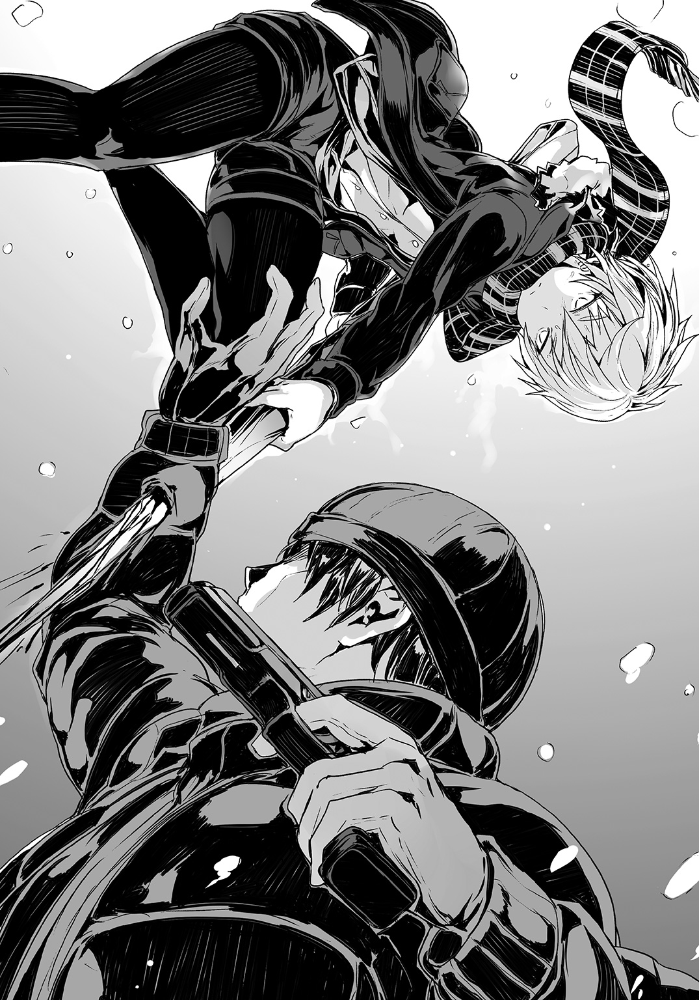
ツララの横っ腹に直撃した弾丸はキノコ状に潰れ、その保有していたエネルギーをぶちまける。ツララに炸裂したその衝撃は、バランスの不安定な体勢の茶花では受け止め切れず、彼女を後ろにぶっ飛ばす。だが、茶花は倒れる勢いを利用してそのままバク転を決め、足裏が雪面を捉えたと同時にαへと飛びかかる。ツララを握る右手を伸ばす。その先端が向かうのは、三発目を放たんとするαの握るハンドガン、その銃口。
αの指が動くが、その時すでに銃口へツララが進入。――バックファイア。盛大な爆音と共にハンドガンのスライドが吹っ飛び、破片が飛び散る。それを全身に喰らってαは倒れた。
この時になってようやくβとδが事態を把握。βは手にしていた火炎瓶を掲げるものの、それを投げつければαはもちろん、自分達にも被害が及ぶことを察して動きを止めた。
一方、δはバックステップしつつ、両手をジャケットの左右のポケットへ突っ込み、大量の落花生をつかみ取ると同時に握り潰す。殻が砕け、中のピーナッツだけが魔法のように彼の手に握られる。そして、西部劇のガンマンよろしく、どっしりと構えて重心を落とし、左右の腰の位置に添えた両手からピーナッツを親指で弾いて、飛ばす。――ピーナッツ指弾だ。
それはどれだけの研鑽の結果なのか、想像することすらできないほどの絶技。左右の手がそれぞれマシンガンのように、高速でピーナッツを弾き飛ばしまくる。
だが、所詮は並みの人体が繰り出す技。親指で弾くピーナッツ弾など音速を超えられるわけもなかった。それで北の大地に生まれ育った少女は止められない。
茶花は右へ左へ素早くかわし、かわしきれないものはツララで弾いて一気に間合いを詰め、剣道の面を打つように、ツララの側面でδの頭頂部を打つ。
普通のツララなら砕け散るのが相場だが、当然のように彼女のツララは砕けはしない。そうなれば、もはやツララとは鈍器以外の何物でもない。δが鼻血を吹き出しながら、昏倒した。
それでようやく茶花の足が止まる。全身から湯気を上げる彼女は顎先から大量の汗を垂らしながら、残る一人を見据えると、ペロリとピンク色の舌を出してツララを舐めた。
「な、何なんだ......何なんだ、コレは!?」
βが火のついた火炎瓶を掲げたまま、狼狽えて声を上げた。
彼には理解不可能な状況だろう。共に訓練を積んだ二人がツララを持った少女に数秒でなぎ倒されたのだ。動揺するなという方が無理だ。
健三はもう窮地は脱したと判断したのか、荷台からスコップを取り出すとハイエース回りの雪かきを始める。そしてめろんはといえば......こちらもβ同様、驚愕のあまり固まっていた。
「めろん、良い機会だから見ておくといい。これが道ＭＥＮの切り札たる茶花の......いや、ＤＳＫ１７９遺伝子覚醒者の力だ」
「これが......こんなことが......」
北海道ではよくあることさ、と僕は彼女に微笑み、千葉県民達へと近づいた。
「勝敗は決した。殺生は好まない。降伏しろ、ワン・パック。......故郷へ帰りたいだろう」
僕と茶花の眼はいまだ火炎瓶を掲げるβに向く。彼は、ジリジリと後退しつつ背後にあるＳＵＶをチラリと見やった。エンジンはかかっている......それで逃げるつもりか。
だが、βの希望を打ち砕くように軽快なエンジン音が遠くから高速で近づいてくる。見れば......国道をアクセル全開で走るスノーモービル。搭乗者は風にツインテールを靡かせる香奈だ。......うん、アイツ、またナチュラルに道交法に反してんな。
彼女は敏感に状況を察したのか、βとＳＵＶの間にスノーモービルを停めた。
「少し遅いぞ、香奈」
「タコスに言えよデブ。......あっ、まぁた茶花、それやったら風邪ひくぞぉ」
父親のであろうドカジャンにジャージ、そして膝に到達しそうな大きな長靴という恐ろしくダサイ格好の彼女は、スノーモービルに跨がったまま、ため息を吐いた。
「......べ、β......もうここまでだ、降伏しかない......」
倒れていたαが、細かな裂傷だらけの顔から血を垂らしながら、上半身を起こし、雪面に座った。千切れかけている右手首を左手で握り、止血する。
「αの言う通りだ、β。君に逃げ道はない。降伏しろ。機能が回復できるかどうかはわからないが、急げばαの右手も切断せずに済むだろう」
僕の忠告を聞いたβは眉を八の字にして、今にも泣きだしそうな顔をするも......口の端は吊り上がっていた。――ヤバイ、とその場の誰もが感じた。
「千葉県に栄光あれえぇ!!」
βは火炎瓶を足下に投げつけ、それを割った。その瞬間半径二メートルほどが炎に飲み込まれた。ピーナッツバターの焼ける甘く香ばしい匂いが辺り一帯を、そして紅蓮の炎がβを包む。
βを助けようとαが動くも、そんな彼に僕は飛びかかって押さえ込み、香奈の名を叫ぶ。
わかってる!! その声と共に、彼女は長靴を脱ぎ捨てる。サイズの合わない長靴の中で抜げかかっていた毛糸の靴下をも捨て、ジャージを膝の上まで捲り上げると同時に彼女は素足で炎の中へと飛び込んだ。
めろんとαが絶句する中、香奈は燃えるピーナッツバターを両足に纏わり付かせながらβに接近し、その体を僕らに向かって蹴り飛ばす。
円状に広がっていた炎からβが転がり出てくるが、今なおその体は炎に覆われていた。そこに、そぉい!! という声で健三がスコップで雪を叩き付ける。幼少期より実家の農場を、中学からは除雪作業員としてバイトを続けてきた男である、その猛烈なスコップ捌きによってβの体は瞬く間に雪で覆われ――というか雪に埋まっていく。そうして......北国の雪は、千葉県の誇りたる落花生から作られし地獄の業火さえもあっさりと消し去ったのだった。
僕はβの顔を掘り起こすと、彼に息があるのを確認。大丈夫だというように、αに向かって頷いてやる。彼は安心したように脱力し、項垂れた。
「......感謝する、道ＭＥＮ」
「気にするな。それより治療後でいいから、話してはくれないだろうか。君らは何故めろんを......東京都からの工作員を狙っているのか、を」
αは観念した目を僕に向けるも、それは上空へと移る。遠くの空から二機のヘリのローター音が近づいてきていた。方角からすると千歳基地からのヘリコプター隊だろう。
「了解した、全てを話そう道ＭＥＮ。......だが、部下を助けてくれた礼として先に一つだけ警告させてくれ。手遅れになる前に」
「聞こう、千葉県工作員『一つの群れ』リーダー、α」
彼は再び僕を見据えた。その目にあるのは観念の表情。だが同時に......何かへの恐怖だった。
「東京都からの工作員を狙って動いているのは我々だけじゃない。......すでに〝奴ら〟は道内に潜伏し、活動を始めているのを昨夜確認した」
「奴ら？」
「......群馬県民だ」
αの発した予想外の名に、僕ら道民と都民は目を丸くして、息を呑んだ。
日本のグルカ兵と呼ばれし最強にして最恐の県民。混乱期に栃木県へ侵攻してその県境線を大幅に書き直してみせた類い希なる戦闘民族・群馬県民。
あの連中が、今、この北の大地に――。
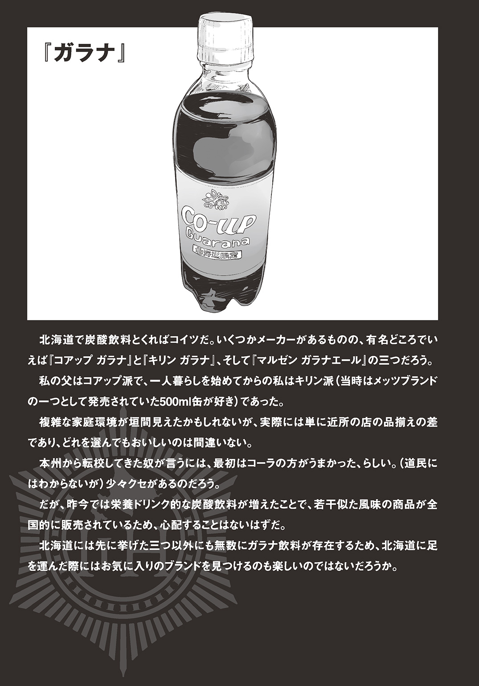
●３章『迫り来る恐怖』
ＤＳＫ１７９遺伝子――一部の道民だけが有する特殊塩基配列のコードネームだ。
それがどのような効果を発現するのか、そしてどういった条件下の者達が持つのか......その多くは謎に包まれていた。せいぜい統計的にその遺伝子を持つ者の中には特異な才能を発揮する者がいるらしい、というデータと呼ぶにもおこがましい人々の印象があるだけ。
だが、当人や周りの道民からすると、それすらも殊更珍しいものではなかった。
車が次々に事故る魔の領域を自転車で走行するジジイ、怪我の治りが異様に早いババア、触るだけでその畑の状態や汚染状況を解析するオッサン、インフルエンザもノロウィルスをも退けるオバサン、牛と完璧に意思疎通を為す青年、八股かけてるくせに処女を装う女......それらは全てこのＤＳＫ１７９が関連していると後に研究結果が出されたが、当時の道民達は当たり前のものだとして受け入れていた。......最後の一人は違うと思うけども。
だが、ある時、それらを大幅に超える能力を持った者達が幾人も道内に現れ始めたのだ。
さすがにこれは異常だと誰もが気がつき、停滞気味だった研究は急速に進んだ。それにより保有者の多くが祖先に初期北海道開拓民を持ち、何かしらの強いストレスを受けたことで能力が覚醒し、場合によっては物理法則すら陵駕する――という驚愕の結果が出たのだ。
「その実例が、さっき君が目撃した茶花の姿だ。彼女は特定の条件下において......まぁ、言ってしまえば天然もののツララを素手で持つことによってその身体能力を爆発的に高めると共に、手にしたツララをあらゆる金属を上回る硬度へと変える。副作用的に体温の異常な上昇などもあるが......まぁ、とにかく超人になるんだ」
「なるほど、ね。にわかには信じられないけど......目撃した後じゃ、信じるしかないよね」
芭楽家のダイニングキッチンの食卓に着いているめろんは、三つの鍋にお湯を沸かしたまま何もしない僕に飽きたのか、ドタドタ走り続ける香奈の妹達とタコスに視線を向ける。
農家の家は広いものだが、特に芭楽家は群を抜いている。二階建てのこの母屋だけで東京都市部にある体育館ほどの敷地面積がある。しかも一階部分は全室の扉や襖を開けっ放しにしておけば、グルリと一周回れるサーキット状になるので、犬や子供にとっては最高の遊び場だ。
「でも、遺伝子に突然変異が起こったからって、物理法則を無視できるものかな。せいぜい身体能力を変化させたりするぐらいだと思うけれど」
「それに関しては研究者達もオカルトかＳＦのような可能性しか上げてこなかったよ。......世界はあらゆるものが物理法則という鎖に縛られているが、ＤＳＫ１７９遺伝子はその鎖を解く鍵なのではないか、だって。この世には物理世界を内包する、より大きな世界が存在しており、その世界を無意識下において認識または観測し、干渉を可能とする要素......とも言っていたかな。何にせよ、まだわからないってことだ。ただ既存の物理法則に大きく反していたとしても実際に現象としてその結果が観測される以上、僕らはそれを受け入れ、利用するまでだ」
道民はリアリストだね、とめろんは苦笑する。
「でも何故、そんな能力が北海道の人達だけに......？」
「さぁね。北海道という厳しい環境下における世代を跨ぐ長期的な環境ストレスがもたらした進化だと言う者もいるが......そもそも開拓民の中にそうした素質を持つ者がいたんじゃないかっていう説が強い。独立前に日本国の文献を漁りに漁った際、それらしき資料も確認されているから、僕らとしてはそちらを推しているよ」
一般公開されている北海道開拓時代の資料だけ取ってみても、その片鱗は見て取れる。
というのも、どう考えても当時の北海道という自然の王国を開拓するなど、並みの人間では成し遂げられるものではなかったのだ。アイヌの人々のように自然の中で生きるノウハウは少なく、農地を作ろうとしても今のような科学技術もない上、一年の三分の一は雪で閉ざされ、腹を空かせる野獣が跋扈する土地だ。過酷にもほどがあった。
だが、開拓は成し遂げたられた。知恵や努力だけで越えられるものではない厳しすぎる環境を、何かしらで、誰かしらが凌いだのだ。
実際、各地にある開拓記念館に行けば、当時の人々の奮闘記の中に妙な技術やカリスマ性によって集落の中心となった人物や、凌ぎきれないと思われた状況でブレイクスルーを成し遂げた何者かの存在が認められるはずだ。
そのことを告げると、めろんは顎に手を当て、思案するような顔のまま僕を見つめてくる。
「でもそれじゃ......明治初期の政府は意図的に何らかの能力者を送り込んでいた、と？ そうでなければ開拓自体相当に苦しいと判断した......？」
「可能性はある、と聞いている。移民政策が採られた際に、希望者とは別に政府から依頼、または特別な支援を約束されて津軽海峡を渡った個人や集団がいたのは事実だ。道ＭＥＮで移民以前の祖先が明らかなのは茶花一人だけど、アイツの祖先には仙台藩の春山ナンチャラっていう剛の者として知られる武士がいる。その男は、少年時代、拾った木の棒だけで数十人の野盗を打ち倒し、一躍有名になったそうだ。そんでその孫が家族と共に屯田兵として北海道に渡っているんだが、その際、類縁に送った手紙の中で明治政府の使者と接触した旨を書き残している」
祖先の剣豪と二時間前の茶花の姿......どこかしら繫がるものがあるのだろう。めろんは小馬鹿にすることなく、驚くと共に様々な可能性に思考を巡らせているのがその瞳から見て取れる。
ちなみに、仮に明治政府が意図的に能力者を集めて送り込んでいたとしても、当時の時代を鑑みるに明確なデータがあって取り組んでいたわけではないはずだった。希望者を募っての有象無象だけでは大自然やロシアに太刀打ち出来ないと判断し、各方面からかき集めた腕利きを送り込んだら何とかなるのではないか、と誰かが考え、噂を頼りにかき集めた......というのが妥当な線だと僕は思っていた。
理由はともかく、それらが今僕らの世代になって何らかの要因により同時多発的に隔世遺伝で発現し、開拓時代のそれより遥かに強い能力をもたらした......というのが僕が信じる説だ。
あくまで私見だけど、とめろんは続ける。
「当時全国から集められた特別な力を持った者達が開拓時代初期にこの北の大地へ送り込まれた......それって、ひょっとして......結果として優生学に類似した何かを引き起こしたんじゃないのかな。そうじゃなければ、北海道より北にあるロシアをはじめとした、より過酷な環境下の人達に同様の遺伝子が発現しないのはおかしい」
良い読みだった。実際、研究者の中では似た考えを持つ者は多い。ＤＳＫ１７９遺伝子保有者の多くが開拓初期の移民を祖先に持つ、というデータで勘の良い者なら気づくだろう。そう、開拓〝初期〟なのだ。これは単に能力者が送り込まれた時期だから、というだけではない。
その頃は、人口が少なく、居住可能なエリアは限られており、その中で男女は結ばれて子を生すことになる。そこに日本中から集められた大勢の能力者がいれば......。
また、まともに生きていけるかどうかもわからないような困難な環境下ならば、何らかの能力を有する者は、他者より有利な生活を得やすく、はたまた他者を導く存在になる可能性も高い。そうであれば当然のように結婚相手には恵まれたことだろう。
安心できる生活、高い生存率......誰しもそれを考えないはずがない。
まるで強さを主張してつがいを手に入れる動物のようだと顔をしかめる者もいるかもしれないが、時代は明治初期。自由恋愛というものが――というより『恋愛』という言葉自体が――海外より日本に輸入され始めて間もない、ヘタをするとまだ入ってきていない頃である。恋愛至上主義で有名な『北村透谷』でさえ、この頃はまだ生まれたばかりだし、恋愛結婚というものが半数を越えるにはそこから一〇〇年ほども必要としている。
当時の結婚とは僕らがイメージする〝ロマンス〟とはかけ離れた〝現実〟そのものであり、家同士で決められるものや、男が女を見定めるタイプの見合いによるもの、そして跡取りを作るためや労働力を獲得するという目的の意味合いが強く、婚姻には誰もが利害を計算するものであった。......まぁ、年収や職業で男を判断する女は多いから、今でも同じといえば同じかもしれないが、哀しくなるのでそれは置いておこう。
そうしたことを踏まえれば、能力を有した者同士なら尚更結びつきやすかったというのは想像に難くない。結果としてＤＳＫ１７９遺伝子、またはその因子が後世に、より強い状態で残された、という考え方は少々強引ではあるものの、可能性としては十分にある。
「そう、可能性としてはあるんだ。......恐らく世界中では稀に突然変異的にＤＳＫ１７９遺伝子と同様のものを持つ者が現れてはいるのだろう。けれどその多くは覚醒しない上、これが劣性遺伝子で、ＤＳＫ１７９遺伝子を持たぬ者と結ばれた結果、次の世代に引き継げずに一代限りで消えてしまっている......となれば、多くのことに説明がつく」
「言うなれば、当時の北海道の居住地は偶発的に生まれた特殊エリア......過酷な環境は能力のない、または低い者をふるいに掛けると共に、さらなる力を発現させるように促す役割を果たしていた......。さすがに妄想が過ぎるかな？」
「頭ごなしに否定はできない考え......そんな評価かな、僕の立場からだと」
「なるほどね。興味深い......けれど、私にはそれ以上に気がかりがあるの。わかるかな？」
「......僕の能力かな？ ふふっ、これはとてもビッグな機密だけれど......まぁいいさ。君には伝えておこう。僕の能力は――」
「そんなものより温かいご飯だよ！ 何故幸之助君はずっとお湯を準備したっきり何もしないの!? 私のご飯は!? 鯛やヒラメが舞い踊り、北の大地が織り成す夢の酒池肉林は!? ずっと我慢しているんだよ!?」
......そんなもの、ときたか。割と世界的に、歴史的に見ても極めて珍しく奇妙な異能力使いの話なのだけれど......めろん的には〝そんなもの〟なのか......。
「茶花と香奈が風呂から上がるタイミングで出来上がるようにと思って......」
むー......それなら仕方ないね、と、めろんは腹の虫を抑え込んでくれる。
食への欲望に素直な子だが、性根自体は善なのだろう。......まぁ、彼女が僕を見つめつつ、その両手でやたらと腹部をさすっているのは、何かしらの圧力な気がしないでもないけれども。っつぅか、焼きそば弁当食べてからそんな時間経ってないだろ......。
千葉県民と戦い、彼らを道軍に引き渡して、ハイエースをスペアタイヤに交換し、香奈の家に来て......だから、食べ終わってからまだ三時間と経っていないのである。
耳を澄ませば、タコス達のドタバタ足音とは別に、先程から脱衣所の方でゴソゴソと音というか気配がしているので、もうそろそろだろう。
「はい、終わったぞー。デブ、先に茶花持ってけぇー」
めろんからの視線の追跡を受けつつダイニングキッチンの隣にある脱衣所へ向かえば、虚ろな表情の茶花が俯き加減に立っていた。
香奈の大きなブカブカシャツを着ているせいで裸Ｔシャツに見えたものの、念のため裾を捲り上げてみれば......ブカブカのショートパンツを穿いていたので、大丈夫そうだ。ずり落ちかけていたのでそれを引っ張り上げてやる。
歩けそうにない、というより意識が半分飛びかかっていたので、抱き締めるようにして彼女を持ち上げて運ぶことにした。......相変わらず軽いな。
「香奈、あとどのくらいかかる？」
「髪濡らさないからすぐに出るわ。食事作るなら作っちゃっていいぞぉ」
風呂場の磨りガラスの向こうで、肌色の体がシャワーの水を弾いているのがうっすらと見えていたが、さすがに茶花を抱き上げながら覗きや下着漁りは違うだろうと思い、僕は彼女をダイニングキッチンへと持っていく。
めろんの隣に座らせるも、首の据わっていない赤子のようにグデンとしていて、すぐにも倒れてしまいそうだ。
「悪いけど、めろん、ちょっと茶花を支えててくれ」
「え？ いいけど......茶花さん、眠いの？」
「能力『騎士』の使用による反動だ。体力を根こそぎ持ってかれるんだ。......でも、寝かせる前にいろいろやっておかないといけなくてね」
茶花が能力を使うと、体力消耗の他、異様に発熱して全身汗だくになるので使用後には風呂に入れないと確実に風邪をひく。しかもその際に滅茶苦茶にカロリーを使っているようで、このまま寝かせると翌日には体重がガクンと落ちて体調不良に陥ることが多いのだ。そのため何とか寝かせる前に食事をさせないといけなかった。
そして、大事なアフターケアがもう一つ。
僕は香奈の家にあったハンドクリームを多めに手に取って、茶花の両手に塗っていく。
優しいんだね、とめろんが言うが、僕は苦笑して首を振った。
「茶花の能力発動条件がツララを素手で握ることなんだ。だから戦闘中はずっと氷を握り締めていないといけない......だから、ケアしないと」
クリームを塗りつつ、軽くニギニギとマッサージしてやる。
うーっす、と声をかけて、湿った肌のままの香奈もやってきて茶花の隣に座った。こっちもＴシャツにショートパンツという組み合わせである。結うのが面倒なのか、昔そうだったように長い髪を背中に垂らしていた彼女は、足を組みながらヘアゴムでポニーテールを作る。
「......香奈さん、足、何ともないの？」
めろんの視線が傷一つないつるりとした香奈の素足へ注がれていた。
「ん？ あれぐらい別に何ともないって」
「でも、ピーナッツバターが粘着して燃えてたじゃない......あ、ひょっとしてそれが香奈さんの能力なのかな？」
茶花の手をニギニギする僕に、香奈の冷たい視線が突き刺さる。
「まぁた、そうやって全部話したわけかぁ。......機密が聞いて呆れるわー」
「めろんは......その、本人を前に言うことじゃないが......信用できると思ったからさ。何せ目撃されちゃってるし」
「はいはい。そうやって自分から秘密をバラして、相手と信頼関係築こうとするスタイル、いずれ痛い目を見るよ」
香奈からの視線に痛みを覚えていると、タコスが遊びを切り上げて走ってやってくる。
僕の前で座り、ワァオと一言。ゼェゼェという息づかいと口周りに付いた泡立つヨダレから水の要求だと知れたので、仕方なく一度キッチンの火を落とすことにした。
●
幸之助は愛犬が来るなり、その子を連れてキッチンを出ていってしまった。何故!? 北の美食を用意してくれるんじゃなかったの!? と、めろんは胸中穏やかではいられなかったが、香奈が「タコスに水やりに行っただけで、すぐ戻るべ」と教えてくれたので、我慢して待つことにした。そうでなければ視界の隅に映っている大型冷蔵庫を漁り始めてしまいそうだった。
茶花のように働いてはいないが、めろんは空腹だった。危機的状況下における緊張はきっとエネルギーを使うのだ。もしかしたら道軍に千葉県民を引き渡したりしている間、ずっとマイナス気温の中にいたせいで、体温を維持するためにカロリーを使ったのかもしれない......。
理由はいくつも考えられるが、恐らくは温かい北の美食を食べさせてくれると幸之助が言ったからだろう。聞いた瞬間から、胃袋はもう期待し続けているのだ。早くしてほしかった。
空腹に耐えていると、不意に刺すような冷気が来る。ストーブがガンガンに焚かれてぬくめられた室温に身も心も緩んでいためろんは、唐突なそれに思わずブルリとした。
「おーい、玄関の戸あけっぱにすんなぁ。こっち風邪ひくべぁ」
だってぇー、という声が遠くから聞こえる。香奈の妹と弟だ。二人は双子らしかった。
「開けて涼むなら外行け、外。ついでにタコスもつれてってやれぁ」
「あの、香奈さん。妹さん達、Ｔシャツにジャージじゃなかった？ しかも走り回ってて汗だくで......それこそ風邪を」
「そこまで冷える前に戻るべ。バカじゃねぇんだから。......っと、茶花がマズイか」
香奈はそそくさと幸之助のコートを持ってくると、それで茶花を包む。続いて彼女は平然と冷蔵庫から麦茶を出して人数分グラスに注ぐと、一人先にグビグビ飲み始めた。
角巻きを脱いでいるとはいえ、それなりに温かい格好をしているめろんでさえ寒いと感じたというのに、薄着どころかまだ肌が湿っているような状態で......この人達は寒くはないのだろうか。これも能力なのか。めろんは空腹を紛れさせるためにも訊いてみた。
「いんや、普通普通。単なる北海道人ならだいたいそう。慣れよ、慣れ。......あー、さっきの炎の方は、まぁ、能力だけども」
香奈はどこまでめろんが知っているのかを気にしているようだったので、聞いた話を伝えると、すでにもうおおよそのことを幸之助は話しているらしかった。彼女は苦笑する。
「相変わらずだ、あんのデブは。本当、気に入った相手にはベラベラ喋っちまう」
「あれ？ 私、気に入られてたの。知らなかったよ」
グニュっと、香奈にめろんは胸を突かれた。
「そういう奴だ、昔から。人見知りで、しかも大人ぶろうとしてるくせに気に入った......いや、仲良くしたい相手にはすぐに尻尾振る犬みてぇな奴でさ。......別に悪い意味じゃねぇけど」
見た目や言動より、精神的に幸之助は子供で素直......彼女はそう言うが、もしかしたら純粋だ、と言いたいのかもしれない。単に口の軽い男ではない、『自分の秘密を喋ることで仲間意識を持ちたい』とする心理が働いているだけなのだと、弁解しているようにもめろんには聞こえた。それは彼と仲が良い、彼女が仲間思いだから......というより......。
「ひょっとして......香奈さん、幸之助君のことが好きだったりする？」
「......なんでそうなる」
苦笑で流された。違うようだ。
香奈が麦茶を再び飲みだすと、不意に茶花がむくりと顔を上げた。
「......香奈、昔、隊長と付き合ってた」
マーライオンをまさか北海道で見ることになるとは思わなかったなぁ、と盛大に麦茶を吹き出した香奈を眺めながらめろんは思う。
「付き合ってねぇって！ そういう噂流れたってだけだべ!!」
香奈が麦茶を拭きながら否定するが、リアクションからすると案外本当なのかもしれない。
ふむふむ、とめろんが観察していると、幸之助がダイニングに戻ってくるのが見えた。
○
タコスを香奈の妹達に任せてダイニングに戻ってくると......何やら妙な空気が漂っていた。
「今、道ＭＥＮの秘密を聞いてたんだよ」
「香奈の能力......いや、茶花の能力が発現した切っ掛けでも聞いていたのか？」
だとしたら、この空気もわからないでもなかった。茶花の能力が最初に発現したのは、彼女がいじめられていた時だ。同年代のクラスメイトから、その、アレだ。まぁ、母親のアレコレが原因でいろいろ酷いことを言われたり、凍った雪玉をぶつけられたりして、それで――。
「幸之助君が香奈さんとお付き合いしていたって話」
「「付き合ってねぇって!!」」
僕と香奈は声をハモらせて思いっきり叫んだ。
「そういう噂が立っただけで、それだけだ！ 変なこと言っていると飯やめるぞ！」
「幸之助君と香奈さんは一度たりとも付き合っていない！ それは事実、いや、真実だよ!!」
めろんはキリッとした顔で、虚ろ気ながら哀しみと殺意を抱く茶花に向かって何ら迷いなく言い放ってみせたのだった。......素直だな。腹すかせた犬にオヤツ見せた時みたいだ。
実際、僕と香奈は付き合っては......いない......と、思う。
というのも、うちと香奈の家とは家族ぐるみで付き合いがあったから、幼少期から基本的に一緒で......というか、まぁ、田舎あるあるで、学年で一クラスしかないから全員が幼馴染みみたいなものなのだ。そんな中で父親同士の仲が良かったのと、子供の足では学校から香奈の家まで歩いて帰るのが厳しくて、僕の家で遊んでいればそのうちに家族が迎えに来るというシステムだった、というだけである。
......ただ、そうした噂が出る切っ掛けというか原因がないわけでもない。小学六年生の時に......次々にクラス内の男女がくっつき始めた時期があったのだ。そういう年齢になったから、といえばそれまでなのだけれど、問題は僕らは田舎にいるということだった。
恐らく都会なら、誰それと誰それが付き合いだそうと、どちらかに好意を寄せてでもいなければ大して気にせずに済むのだろう。......だが、これが二七人しかいないクラスの中で行われたらどうなるか、想像がつくだろうか。
一組カップルができるだけで、クラス内の独り身は男女合わせて九二・六％にまで低下し、二組も誕生しようものなら八〇％台にダイナミックに突入することになるのだ。
仮に男女比が綺麗に半分に分かれていたとしても最大で一三組のカップル（一人余り）しかできない世界で、先手を取った者達が現れた。それは即ち椅子取り戦争の始まりを告げる狼煙に他ならない。――そう、開戦だ。
都会であれば他校や他学年と恋愛対象者は幅広いのだろうが、田舎の小学校という悪夢はそういった全ての希望を鮮やかに打ち砕く。他の学校の生徒など物理的な距離がありすぎて何かの行事でもなければまず会えないし、別学年の生徒と交流を持ちやすいクラブ活動も学校全体の人数が少なすぎる上、所属は五～六年生のみなので選択肢が広がるとはお世辞にも言えない。
しかも生徒の半数近くが〝隣の家まで約二キロ〟を地で行く農家なので、子供だけで遊ぶというのは難易度が異様に高く、未舗装の荒れた私道か、一〇トントラックが制限速度を超えて爆走している歩道のない国道を最低数キロ自転車で走る覚悟と体力を要するのだ。いくら田舎とはいえ、香奈のように道交法違反をさらっとやってのける者はさすがに例外的だった。
そんな、世界だ。僕らの故郷、この烏有町は。
そうした中で次々にカップルが生まれてくると、当然誰もが焦る。誰もが残りものになど、なりたくないのだ。......特に、男子より三人も多かった一五人の女子達は。
そんな状況下で、髪は長いものの、男勝りバリバリで女の子らしさ皆無だった当時の香奈が危機感を抱くのは当然だと言えるし、その時一番仲良かったのは僕ってわけで......。
消去法で、というか、焦りから......まぁ、その、いろいろあったのだ。
僕としても売れ残るという事態は避けたかったし、ろくでもない女子とくっつかざるを得ないような状況に陥るのもゴメンだった。
......いやまぁ、それ以外にもいろいろありはしたけれど......その、ね、うん。まぁ、何ていうか......男子の中に香奈が好きな奴がいたってのも多少......背中を押したというか、そいつと香奈がくっついたら嫌だという気持ちが若干とはいえ、あったりもしたわけで......。
いずれ香奈も巨乳になるだろう、という淡い期待があったりもしたし。
何にせよ、そんなこんなでお互いの利害が一致した形となって、付き合っ――たか付き合ってないぐらいのタイミングで町中に噂が一気に広がり、香奈と並んで帰ってたら、ろくに名前も知らない通りすがりのババアから「斉藤の坊ちゃんも大きくなったねぇ、これでもう一人前だねぇ」と言われたら、そりゃ......ねぇ？ 思春期の扉を開いたばかりの僕らに採るべき行動など、一つしかない。
――否定、である。
そんなこんなしている間に僕らは小学校を卒業し、隣町にある中学校（斉藤家から片道四キロのチャリ通学）まで通うようになり、そうなるとクラス数は三つとなって、自然と〝独り身でもダメってことはない〟という風潮が訪れてくれ、僕らの戦いは終わりを迎えたのだった。
何事もそうだが、世界が広がれば思想も広がる。そして、それまでの自分のちっぽけさを知ることができるものだ。
「さぁ幸之助君！ 温かい食事はまだかな!?」
今までおとなしかっためろんが急にドヤ顔をしだした。香奈と茶花が風呂から上がったから......いや、今し方の一件で『仕事をした（僕と香奈は付き合ってないを支持）＝食事を貰う権利を得た』という思考回路なのかもしれない。
僕は何だか気まずいまま、ちらりと香奈を見やれば......何でお前、ちょっと赤くなってんだよ......。
目のやり場に困っているような香奈とボンヤリと僕を見る茶花、そしてオヤツを期待する犬のようなめろんの視線から逃げるように、僕は彼女らに背を向け、三つの鍋に再び火を入れる。
今一度沸騰したところで、僕は二度目の昼食をキッチンの隅に積んであったダンボールの中から取り出した。
「あの、幸之助君......？ 私の気のせいかな、例の如く何か期待していたのと違うものが用意されつつあるようなんだけれど......？」
ダイニングのテーブルから首を伸ばして僕の手元を確認したらしいめろんが不安げな声を出して、キッチンへとやってくる。
「北の大地ならではの、温かくて最高にうまい地元民が愛するものだけど？」
「うん、そうなのかもしれないね。でもね、さすがにこのパターンは......もう、二度目だし......私が言っているのは、その......もっと、海産物的なもので、その......何で袋麵なの？」
「めろん、北海道のソウルフードは焼きそば弁当だが、それに勝るとも劣らない僕オススメのソウルフード......それがこの『ダブルラーメン』だ!! 特にしょうゆ味！」
めろんが何とも言えない切ない顔をして僕を見てくるので、安心させるように続けた。
「焼きそば弁当より一〇年以上前、一九六四年より発売されていたこのダブルラーメンは、どんな腹ぺこ野郎でも必ず満足させてくれる。その名の通り、何とこの一袋には通常の倍の麵が入っているんだ。これならめろんも満ち足りた気分になることは請け合いだ」
「......だからね、幸之助君、私......もっと、その......カニ的なものというかホタテとか......」
「二人で一袋、一人で二回に分けたりもできるが腹減り野郎は一人で一袋だ。......いくぜ!!」
三つのパッケージを開けると共に、四角い揚げ麵が各二つずつ現れるのでこれを即座に三つの鍋へそれぞれ投入。
「......本当に、フツーの袋麵だね。しかも、幸之助君の持ってる二つの小袋ってスープでしょ？ 今時その小さな粉の袋だけって逆に凄いけど」
「ダブルラーメンの良さはその素朴さにある。......ちなみに僕が好きな喰い方は少し長めに茹でて柔らかくして、そこに多めのコショウを入れる。......その調理法でいい？」
好きにしていいよ、と何故か呆れたような顔をされた。
僕は自分の理想を形作るかのように、麵を長めに茹で、各鍋ごとに二つの袋の粉を投入。......粉末スープの中に紛れ込む少量の葱の存在がちょっと嬉しい。
普段なら片手鍋から直接啜るのが僕の喰い方だが、さすがに香奈の家だ。丼を使うことにした。僕と香奈の分だけ一人前ずつ分けて、茶花とめろんには二人分――即ち一袋ずつだ。
最後にコショウをサッサッ、サッと気持ち多めにふりかけ......完成だ。
何とこのかぐわしい匂い！ 最高だ！ 何だかんだで運動もしたし、多少腹も減ってる！
丼をダイニングのテーブルに運んで皆に箸を渡し......僕らはいただきますの声を上げた。
めろんが訝しむような顔をしながら、ズルリと一口......その瞬間に彼女の顔が跳ね上がり瞼が見開かれ、胸が揺れる。
「ん！ 凄い!! 何、この懐かしい感じ......まるで袋麵っていったらこういうのだよね、っていうイメージ通りの風味！ しかも麵がとぅるとぅるって滑りが良くて、するりと喉へ下りていく。そして圧倒的に素朴で、絶対に嫌いな人がいない味......！ うん、おいしい！ 多めのコショウもピリッと味を締めてる！」
十代の僕らが言うのはいささかおこがましいとはいえ......それでも、どうしても言いたい。
ダブルラーメンは焼きそば弁当以上に、オーソドックスでスタンダード。けれど、そうであるがために、世界から失われつつある価値がある。差別化を図るために奇抜な味付けをし、高い材料を使って高級感を出したり、生麵の風味に近づけたり......それらは当然のように素晴らしい。けれど、昔ながらの揚げ麵のおいしさ、万人に愛される普遍的なおいしさ......それって、本当はとても大切なもので、絶対に忘れてはいけないものだ。
ダブルラーメンはこの今という時代において、往年よりの王道の味を維持し続けてくれている。それも古くさいというのではない。チープというのでもない。そうそうこれこれ、と言いたくなる、そんなうまさを持っている。そこにさらに加えられているのが、満足感という絶対的な快楽だ。これで安いときているのだから、こんな完璧な喰い物はなかなかない。
香奈と僕はゆっくりと、めろんと茶花は一気に啜り上げる。
......茶花は毎回のことなのでわかるけれど、めろん、本当によく喰うな......。
茶花がスープまで一気に飲み干す、と同時に、その丼と小さな頭を素早く香奈が横から支える。茶花から丼を取り上げると、その体を僕が抱き上げた。
「あの、茶花さんの、それって......？」
「エネルギー切れ。むしろ、戦う前に焼きそば弁当を食べてたから、ここまで持ったって感じかな。いつも食べきる前に寝落ちしているからさ」
香奈が自分のベッドを使っていい、というので僕は二階にある彼女の部屋に茶花を寝かしつけた。部屋の窓からは除雪して出来た雪山の上でタコス達が遊んでいるのが見えるのだけれど......尻尾の垂れ具合と顔付きからして、そろそろあっちも体力の限界だろう。
一旦帰るか。そう思うものの......健三はまたも修理のために走り去っていったし、うちの親は期待できないし......となると......。
「なぁ香奈、家の人......は......？」
階段を降りていくと、僕のラーメン丼を手にしているめろんと、それを羽交い締めにしている香奈の姿が目に飛び込んでくる。
「だって、もったいないよ！ このまま捨てちゃうんでしょ!? おいしいんだよ!?」
「だからってスープ全部飲もうとすんなって！ しかもデブの残り汁だぞ!!」
『デブの残り汁』っていう言葉にとても下品かつ淫靡なニュアンスを覚えるのは何故だろう。
それをめろんが飲みたいと......おぉ、卑猥だ。いいね。最高だね。
是非ともグビっと飲んでいただくのを目にしたかったが、香奈が「ンッ！」と顎先で僕に片付けろと指示してくるので、仕方なくめろんの手から丼を奪うとそのまま一息に飲み干す。
「......うん、うまい。で、香奈、家の人は？」
うぅ、とめろんが力なく床に膝をつくのを僕らは無視した。
「祖父ちゃん将棋会、祖母ちゃん婦人会でママと一緒に旅行中、パパは仕事に行ってる。......あ、帰りの足？ みんなでうちに泊まる？」
人間しかいないのならそれでもいいのだが、タコスがいるとそうはいかない。
何せ喰う量は半端ではないし、人間の食事を与えるのは健康面からしてちょっとよろしくない。芭楽家の倉庫にあるキャベツや大根ばかり与えるわけにもいかないだろう。
「いや、うちの親が帰ってくる時に拾ってもらうよ。......めろんは、任せても？」
「まぁ、デブの家に連れてくわけにはいかないべ。それでいいかい、めろん？」
「問題ないよ。......それで、今夜の芭楽家の晩ご飯は何かな？」
まだ喰うかコイツ、と、香奈が苦笑した。
１
「あぁ、それで昨日、着信があったのか。出れなくて悪かった」
昨夜、僕が風呂ってるタイミングで香奈から電話があって、折り返したら今度は向こうが出なかった。何だ？ と、思ったまま寝てしまっていたのだけれど、どうも、隣町にある『ユンニの湯』という温泉施設にみんなで行っていたらしい。
凄く良かったよ、と僕の後ろを歩いていためろんがうっとりとした声で言うので、そんなに？ と僕が思わず振り向いて尋ねると、彼女はボンヤリとした瞳で頰に両手を当てていた。
「最高だよ......。あんなの初めて......もう信じられないぐらい......脂が......」
風呂で脂？ 何言ってんだ？ と、思っていたらめろんの唇からヨダレが垂れる。
「あんな肉厚で脂が凄くて......素晴らしかった。羅臼のホッケ」
......あぁ、はい、風呂じゃなくて晩飯の話ね。
冷凍モンだけどな、と香奈がツインテールの毛先を指でいじりながら、ちょっとこそばゆそうな顔をする。そして、そんな彼女は相変わらず制服姿にスクールバッグという出で立ちだ。やはり札幌に来るというのは、彼女にとって気合いの入るイベントなのだろう。
「香奈さんのお祖父さまがせっかくの客人だからって、わざわざ倉庫にドラム缶で作られたバーベキューセットみたいなのを用意して、炭火で焼いてくださったんだよ。凄かった......。開きにされた身が濃いきつね色に焼かれ、パリッとしたその極厚の身は醬油を弾くほどの脂を湛えていて。......あぁ、思い出すにヨダレが！」
もう垂れてる垂れてる......。香奈がスッとティッシュでめろんの口元を拭った。
「ビックリしたよ！ サイズも大きかったけれど、焼き上がったら身が皮からはみ出るほどに膨れ上がってるの！ 食べる前からおいしいってのがわかっちゃったぐらいなんだよ！」
「めろんが焼ける匂いだけで米を喰い始めた時は、さすがのアタシら姉妹弟もビビッたわ。能力使った後の茶花だってそこまで食べないってのに」
一緒にいたら僕も相当ビビッたことだろう。
「凄いね、北海道って。ホクホクした身が......って表現したいけれど、脂が多くてむしろしっとりしているぐらいだった。それがまたお米に合うことといったら！ 馴染むの！ お米の間にホッケの脂と醬油が混ざり合って!! もう半身だけでお茶碗二杯だよ!!」
「ちなみに匂いだけで一杯いってるからな」
ってことは......。ダブルラーメン一袋喰った後に茶碗飯五杯......凄いな......。
「食べ終わった後、皮だけになったホッケをお祖父さまがまた炭火でじっくり焼いてくれて......あのパリパリになった皮も本当おいしかった......。あと、最初にメリメリっと捲り上げた骨!! これがまた!! その骨の間に付いた薄皮のような身が凄いの！ パリッとしているはずなのに嚙み締めた瞬間に脂が、何より濃密なホッケの旨味が口の中に溢れて......パリ皮もそうだけれどお酒に合う感じだよね。でもご飯もいける！ ......私、芭楽家の子になりたい」
うん、この感じからするとご飯五杯じゃなくて、六、七杯はいってるな。
どうりで今日は会ってもすぐに、飯を出せ、と言ってこないわけだ。
「......あぁ......北海道......いいトコ......めろん......覚えた......」
「知能が退化するほどうまかったとは......羅臼のホッケは凄いな」
「凄いといえばめろん自身も凄かったぞ。温泉でな、こう、見たら......マジでメロンが二個あるみてぇだった。んで、温泉効果もあってすっべすべでもっちもちしてて、つきたての餅みてぇでさ。これで同年代かよって。茶花が元気だったらマジで刃傷沙汰になるレベル」
思わず歩みが止まりかけるが、気合いで足を前へ出す。
......今の香奈の言葉から察するに、風呂場で触ったのだろう。クッ......いいなぁ......。
今一度振り返ってみれば、めろんは「ビバ北海道！」と喚きながら、くるくる回転しながらついてきていた。うーん、おっぱいが揺れている。
まぁ、それはいいんだけど......ここまでくると、こんな惚け過ぎて知能が退化しためろんを連れていって本当に大丈夫なのか、ちょっと不安になってくる。
今からでもハイエースに押し戻すか、それとも折角だから――。
「医者に診てもらうか......？」
「あ、茶花さん？ 一晩経っても元気がないから心配だよね。せっかく病院に来てるんだし」
てめぇだよ、と思わず口に出そうになる。茶花は能力を使うと体力消耗の他、全身の筋肉痛が起こるのだ。そのためついてきたものの病院の駐車場にて健三と一緒に待機中だった。
「そもそもなんでめろんを連れてくんだ？ 千葉県民から話聞くだけなら別にいらねぇべ」
「東京都の工作員としてってよりは、内地の情報に詳しい奴が一人ぐらいいた方がいいだろ」
そう、僕達は昨日とっ捕まえた『一つの群れ』のリーダー、αが収容されている札幌の病院へとやってきていた。
β達は別の病院で、比較的軽傷だったγとδは留置所にて個別に取り調べが行われ、それらが終わり次第、情報をすり合わせて真偽を探ることになっているのだが、僕ら道ＭＥＮはそれが始まる前に、先にαと接触させてもらうことにした。何せ、群馬県民が侵入しており、千葉県民同様にめろんを狙っているとなるとゆっくりはしていられない。
群馬県民......道民にとっては、その存在そのものがもはや伝説のような存在だ。日本のグルカ兵......言うなれば戦国時代末期の島津――幕末の薩摩藩のようなもので、存在そのものが一目置かれている。そうなった原因は、北海道が独立する際の混乱期において、いち早く状況を察し、どさくさに紛れて栃木県側に攻め込み、領土拡大に至った事件のせいだ。
当時の詳細は独立したが故に道内には虚実入り交じった資料しかないので明言は控えるが、かなり荒々しい手段が採られたのは間違いない。そう、混乱期より以前、インターネットを中心として、群馬県民はどこぞの狩猟民族か何かのようなイメージを持たされていたが、それがただのネタではないことを当人らが証明した形となったのだ。
この件を切っ掛けに各都府県は愛国精神ならぬ、愛郷精神に目覚め、県境線の重要性、そして自分の県に対して誇りを持つようになり......つまりは都府県レベルでの反グローバリゼーション運動が起こり、日本国は幕藩体制時にも近い意識を誰もが持つようになったのだ。
以上のことがあったがために、日本全土における混乱は北海道ではなく群馬がもたらしたとする学説すら存在する。本来ならば領土拡大などという時代錯誤の大胆不敵な行動など叩かれて然るべきながら、何故かその後のお咎めすらほとんどなかった。群馬が歴代の総理大臣を多く輩出していることからもわかるように政治力に強い県民性を有しているが故に、事前に根回しがされていたらしい。
......ただ、そうなると彼らはまるで北海道独立運動による混乱を察していたかのような......それどころか、待っていたかのような印象を受けるが......まぁ、詳細は知らないし、僕の専門とするところではない。
今重要なのは、そんな強兵たる群馬県民がすでに道内に入り込んでいるということだ。
総合病院とあって広い建物内を右へ左へ。そしてエレベーター。病院の一番奥といったエリアにその病室はあった。戦闘訓練を積んだ千葉の工作員ということもあり、病室の前には腰に銃を携えた制服警官が二人、仁王立ちしていた。
僕と香奈は道ＭＥＮのマークの入ったスマホケースを見せてめろんを連れて中に入......ろうとしたら、ナチュラルに止められてしまう。
今一度よく見えるようにマークを見せつつ、身分を告げるのだが......。
「なぁデブ......やっぱり、無理があんじゃね。このスマホケース......」
「無理じゃない！ 特殊機密部隊なんだからしょうがないんだ！ いいからアンタらもさっさと上に問い合わせてくれ、許可取ってるから！ っつぅか捕まえたの僕達なんだしさ！」
「二人がその道ＭＥＮとかいうのだとして、後ろのは何だ？」
東京から来た北海道帝の客人だよ、と僕が告げると、二人は一歩下がってわずかに緊張感を体に走らせるも......だからといってお互いに何をするでもなく、確認を急いでもらった。
結局確認が取れるまで一〇分、そして室内にもいた警察官を外に追い出すのにさらに一〇分の時間をかけて、ようやくαとの対面となった。
「体調はどうだ、α。......といっても、そのザマじゃな」
千切れかけていた右腕が吊るす形で固定されているのは当然として、αはベッドの手すりに両足をそれぞれ鎖で結ばれていた。......左手が自由とはいえ、少々やりすぎだな。
恐らく北海道帝直属の道ＭＥＮが捕まえ、道軍経由で警察に引き渡された工作員だから万が一にでも逃がすわけにはいかない、とする警察組織の意識がそうさせたのかもしれない。
「右手は無事にくっついてくれるそうだ。指の動きに関しては術後の経過とリハビリ次第らしい。......傷つけられたプライド以外は問題ない」
髭を剃らせてもらえてないのか、無精髭だらけの顔でαが笑う。僕も笑った。
「こちらの要望はわかっているな。情報が欲しい。細かい入国ルートとかは警察に任せるが、何故君らがめろんを......東京都からの工作員である彼女を狙ったのかを聞かせてくれ。そして群馬県民の目的もだ」
「......何も知らない、と言ったら？ 単に北海道に迷い込んだ本州人だと言い張るのなら？」
「ファ●ク・ユーと叫んで唾を吐きかけてこないだけ良心的だな、と感心するだけさ。......まぁ、交渉というわけじゃないが、話してくれるのなら君らを国外追放で済ませる。祖国に帰るのもいいし、帰れないというのなら祖国に向かう途中でどこか第三国に逃げられてしまうというのもいいだろう」
「そんな条件を聞いた上で、なお、話さなかったら？」
「僕は失望して、帰りに餃子でも喰ってどこかに遊びに行くよ。あとは警察に任せる。まぁ......結局は国外退去なんだろうけど」
「ははははは。素直な奴だ。普通、拷問するとか、自白剤を使うと脅すべきじゃないか」
「北海道の味付けは基本、味濃い目の甘めでね」
とはいえ、戦いの終わりに僕らに礼を述べた男ならば......真に僕らが危ないというのなら......昨日のように喋ってくれると信じるが故の交渉だった。
「もし喋ってくれるのなら、『きびだんご』をやろう」
僕は香奈が持っていたスクールバッグを受け取ると、その中からお菓子を取り出す。飴玉のように個別包装された物が多数収まるパックタイプと、スタンダードな延べ板タイプの二種だ。
それには、αがあからさまに怪訝な顔をする。
「旅のお供をしろってわけじゃない、岡山県のとは違う。といってもパッケージに思いっきり桃太郎描いてあるけど。......谷田製菓ってのが地元の隣町にあってね。北海道の銘菓なんだ」
北海道のきびだんごは、本来は『起備団合』と書く。大正時代に起こった関東大震災からの復興や北海道開拓の助け合いの精神を......と、いろいろあるらしいけれど、そもそもは屯田兵の携帯食料に由来するらしい。実際、岡山のきびだんごと違って、こちらは水飴に餅米とかを原材料にした、餅とキャラメルの中間のような食感の代物である。
そのため約半年と長期保存もできて非常食としては極めて優秀だ。延べ板状というのも携帯がしやすく、山に入る人が鞄に入れておくことも多い。うちの祖母ちゃんの好物でもある。
また、僕個人の意見としては、パックタイプのしか出ていないが、『とうきび餅』という、とうきび味のきびだんごがお気に入りだったりするのだけれど......それは、まぁ、いい。
「飴のように舐めてもいいし、くっちゃくっちゃと嚙んでもいい。ただ、歯に詰め物があるなら気をつけろ。......喋ってくれるかな？」
「うんいいよ、最後におねしょした時の話でも？」
「......ナチュラルに会話に紛れてくるな、めろん。しかもおねしょの話なんて興味ない」
「割と最近なんだよ？」
お前ヤベぇな、と香奈がどん引きし、αが苦笑う。
「それで交渉している気なのか、道ＭＥＮ」
脅しは好きじゃないのさ、と僕も笑う。本当は脅しの一つとして、偽造パスポートに麻薬の類を持たせた上でアジアの某国行き飛行機に乗せるという荒業が密かにあったりもする。北海道の法律は日本であった時代のものを元にしているため、密入国者に対してそれほど厳しい罰則がない。そのために行われる低コストでえげつない裏技の一つだった。
言葉が通じない国で、日本国とは比べものにならないほどの劣悪な環境の監獄で死刑までの数年から数十年に及ぶ刑期を過ごすのだ。
だが、そんな胸くそが悪くなる手段は使いたくもないし、それを材料に脅すのも好きじゃなかった。
「ダメかな？ 何なら、この鞄に入っていた『ビタミンカステーラ』を付けてもいい」
「あ、それアタシのオヤツだべぁ！ 勝手に交渉材料に入れんな！」
「まず最初に感じたのは温かさ。そして、ある種の解放感だった......でも次第に絶望感が」
「さらっと当たり前のようにおねしょ話を挟むなよ、めろん」
僕はパンパンに膨らんでいるパックのビタミンカステーラをαに投げてやる。
やけに軽いな、と彼はすぐに投げ返してきた。
「黒板消しのスポンジ部分みたいだ。......生憎と甘い物は苦手だ。代わりにそこの東京人にくれてやってくれ」
「酷い表現だ。確かに軽い、というかパサパサだけど、ビタミンカステーラは栄養失調の子供が多くいた大正時代にビタミンを添加し、安く、保存をきかせるためにあえて水分を抜いて作ってあるんだ。死んだ祖父ちゃんの好物でね、牛乳に浸して喰うとうまいんだが......甘い物がダメか。それじゃめろん......って、待てよ、代わりにってことは、話してくれるのか？」
「定時報告がなかった時点で、我々は捕縛されたか死亡。まず情報は漏洩したものと判断するだろう。......問題はないさ」
αから投げ返されたビタミンカステーラを、きびだんごと共にめろんに渡してやる。彼女はその場で延べ板状のきびだんごの包装を解いて、オブラートに包まれたその餅かキャラメルのような物体にかぶりつき、もっちゃもっちゃ、と咀嚼を始めた。
「意外と硬い......あ、でも嚙んでくと柔らかく......あ、溶け出してくると優しい甘さが。うん、これ、そうとう腹持ち良さそうだね」
香奈がビタミンカステーラを奪い返そうとするも、めろんの指は万力で挟んでいるかのようにパッケージを放さなかった。視界の端で行われる女性二人の攻防がうざったかったので、香奈に牛乳を買ってくるように命じて病室から追い出す。
「経費でいい。どうせ病院の売店にビタミンカステーラも売ってるだろ。買ってこいよ」
ビタミンカステーラはきびだんごと共に古くから愛されたお菓子で、お年寄りにも人気だ。どちらも保存が利き、歯がなくても喰えるので病院の売店なら十中八九扱っているものだ。
うるさいのがいなくなって......いや、病室内にもっちゃくっちゃもっちゃくっちゃというめろんの咀嚼音が響き続ける中で、αが重い口を開いた。
「我々は、指摘されたように『一つの群れ』、千葉県の機密実力行使部隊だ。いわゆる特殊部隊という立ち位置だが、群馬県が動いていることからわかるように、今回の任務は千葉県の独断行動ではない。......恐らく道ＭＥＮ、君が思っているより事態は深刻だ」
望むところさ、と僕が笑顔を見せると、αも笑った。
「北海道独立の原因は、複数の長期受刑者用刑務所の建造計画や難民受け入れ地、さらには高レベル放射性廃棄物最終処分地として国に強制指定されたことで道民の怒りを買った、はたまた独立と断交によって、本州との流通を途絶させることで必要に迫られた道民達に半ば強制的に『ペティ＝クラークの法則』的現象を促し、北海道の産業そのものを次のステップに進めようとしたなど、ネガティブなものからポジティブなものまで説は様々だ。......北海道人なら、学校で習っているだろう」
ある時を境に、日本国内の面倒なものは全て北海道に押しつけようとする流れがどこかしらから発生した。当時話題になった......というより大炎上したのが「日本の食糧基地である北海道をクソ溜めにする気か!?」「まさに有機栽培だ、より良くなる」という笑えもしない政治家のやり取りが新聞に載ったこともあったそうだ。
とにかく、当時の北海道を取り巻く状況は悪かった。日本経済の中心が東京である以上、人口もまたその周辺に集まっていく。人がいれば経済が回り、さらにその周囲に......と普通は遅かれ早かれ景気が良ければ波及していくものだが、日本という国はあまりに細長く、末端に位置する北海道は内地との間に海を挟む上に、沖縄のようにコンパクトでもなかったのだ。
例外もあるが、基本的に第一次産業より第二次産業が、そして第二次産業より第三次産業の方が利益が大きい。だが、主要消費者が関東及び関西に集中しているために運搬コスト等から製造業などの第二次産業は栄えようもなく、人口密度が低いために第三次産業に適した土地でもない。こうなると、ペティ＝クラークの法則も形無しだ。......ちなみにペティ＝クラークの法則とは、極端な言い方をすれば経済が発展すれば自ずと第一次産業から、第二次、第三次産業へと比重がシフトし、発展していく、というものだ。
また、独立前の段階で、第一次産業の事業者が第二次、第三次産業の分野にまでしっかり関わって、それらの利益をきちんと得るスタイル――つまり『六次産業』という希望を唱えた者も少なくなかったが、これを行うにはいろいろなハードルがあった。
自分のところの作物をブランド化させて直売店を経営したり、自分で作った農畜産物で何かしらの加工商品を作ったり......というわけなのだが、これをするには若さ、知識や経験、そしてそもそもの資金が必要だ。道の駅といった特定の場所で限定的にやるのならともかく、本格的に取り組むには超高齢化社会が進んでしまった北海道では正直しんどく、大きな成功を収めるためにはやはり最終的には東京に打って出るだけの覚悟が必要になる。
だが、独立及び断交をすることで北海道全域で生み出される全てを北海道ブランドへ押し上げると共に、内地からの流通を途絶えさせることで道内消費による第二次、第三次産業への需要を半ば強制的に生み出させる......といった、手荒い構想が当時あったのは事実らしい。
「細かい理由や原因は多すぎて一言では表せられないが、結局のところ、北海道を舐めくさっていた連中にムカついたから中指を立てた......それが独立と断交だ、と、学校では習ったね」
「だいぶファンキーな教師に教わったな。......だが何にせよ、独立と断交で本州における食糧自給率は極端な低下をし、需要と供給のバランスは大きく崩れ、残された土地で作られる国産農畜産物の価値は跳ね上がった。こうなると立場は逆転、まさに攻守交代だ。あれだけ絶対的だった農協が頭を下げるようになったのを皮切りに......一部の第一次産業事業者が一気に幅を利かし、巨大な利益を生み出し始めた。......千葉県も、北海道に次ぐ国内二位の生産量であったニンジンで、かなりの儲けを出させてもらったよ」
さっきからαが何故そんな基礎的な話をするのかわからなかったが、ここに至り、ようやく察しがついてきた。
「まさか、この一件......アイツらが関係していると？」
「北海道の独立と断交で一番得をした者......それは君ら道民ではない。知っているだろう。......そう、『農閥』だ」
農閥――それは、軍閥に似せて作られた言葉だが、どちらかといえばその実態は財閥に近かった。価値の上がった農畜産物で多額の利益を上げた第一次産業事業者達のことである。
どのレベルの事業者を指すかはケースバイケースではあるが、ニュアンス的には大きく一発当てた連中、というような意味合いが強い。だが、その一発というのがそもそもデカい上に、継続的なのだ。何せこの場合、オモチャやファッションといったブームと違って需要が減ることはない。今儲かっている連中は今後も儲かり続ける......それが明確になっているからこそ、土地や事業の評価が高く、彼らの資産価値は跳ね上がり、それを元にして、さらに莫大な富を得、一部の者達に至っては政治的な影響力を持ち、土地を守るために警備員とは名ばかりの私兵を雇っている連中までいる......という話だった。
また、後追いしようにも、畑を潰して工場を建てるのは簡単だが、工場を潰して畑を作るのは容易ではない。ならば、と山や野を切り拓き、畑を作ろうとしても、いまだ放置されている土地というのはそれなりに何らかの理由があるものだ。仮に全て問題なくクリアしたとしても、最初の作物が取れるようになるまでに時がかかるし、それを量・質共に安定させるとなると、さらに時間と技術を必要とする。そうしている間に農閥となった者達は新規参入者を叩くか、彼らを自らの配下に取り込むかし、圧倒的な権力と資金を有したことで六次産業をも容易く成し遂げ、農協を通さない直接的な売買を可能としたことで、さらなる利益を上げ......もはや絶対的な存在へと成り上がったのだ。
「彼ら、複数の県の農閥達が今回の件に対処しようと協議した結果、尖兵となったのがすでに道内に潜伏し、活動していた我々だった」
「その、今回の件とは......何だ？」
αの視線がめろんへと向かう。僕も見やると、相変わらずもっちゃもっちゃとやっていた彼女も自分が話題になっていると気づいたらしく「あ、わらひ？」と自分を指さした。
「東京都のエージェントが北海道帝と接触し、客人としての立場を与えられた。その一報を受けて慌てない農閥はいないだろう」
「なるほどな......連中、国交正常化を警戒したか」
「独立と断交によって最も被害を受けた東京都としては一日でも早い合併または、その前段階としての国交正常化が望ましい......が、農閥達にとっては現状こそが理想的だ。だからこそ、正常化に向けた活動の際には陰から足を引っ張り、我々のような戦闘に特化した者達の手によって推進派及びその手先である工作員を消して回っている。......本州でも、この地でもな」
工作員潰しで有名......その真相が、これか。身元を隠したがった理由もよくわかる。
だが、今まで秘密裏に行われていたであろうそれを、何故今回はおおっぴらにやったのか。
それを尋ねると、彼は何かを思案するように一拍置いてから口を開いてくれた。
「これまで北海道帝は表舞台には上がらず、それもあって本州の人間と接触したことはなかったというのもある。が、問題はその本州の人間だ。工作員として密入国したとはいえ、旧財閥出で、現在都政に深く関わる男の孫。......都が本腰を入れたと我々の雇い主達は判断したのさ」
つまり、αが言うにはこういうことだ。
東京都としては一日でも早い国交正常化を望むが、北海道はその窓口すら用意しない。だからこそ強引な手段で密使を工作員として道内に送り込み、捕縛されたタイミングで身分を明らかにし、北海道帝に客人として扱わせ、強引に交渉の伝手を得た......と、そう見えたらしい。
僕らはもっちゃもっちゃとやっているめろんを見るも、彼女は「え？ 違うよ？」とさらりと言ってのける。
演技とするにはあまりに素だし、これまでの行動や発言に政治的意図があるようには思えない......というより、だとしたら効率があまりによろしくなかった。もし本当に東京都からの密使であるのなら、どんなバカでももう少しうまいやり方をするだろう。
αはそうしためろんの仕草すら演技だと疑っているのか、ニヒルな笑みを浮かべる。
「何にせよ、これまでになかった動きだ。警戒するべきだし、可能であれば事が進むより先に消してしまった方が安全だ、というのが上の判断だった。実際、北海道帝直属の道ＭＥＮがエスコートに入っているとなれば、密使に問題が発生した際には北海道側の落ち度にでき、東京都がそれに対して憤慨などしてくれれば、関係は悪化するという理想的な展開も期待できる」
「その流れで群馬県民の工作員まで活動を開始、か」
「どうも奴らは群馬県の大農閥、または群馬県そのものからの直接的な命令を受けている可能性が高い。こちらに連絡が入ったのも事後報告のようなものだ。......恐らく道内に入り込んだのは工作員ではなく、本物の戦闘特化部隊だ。我々は戦闘を含めたあらゆる状況に対処可能なように訓練されたが、連中にそんなスマートさはないだろう。元々群馬県出身者は無茶をする奴らが多い」
......入り込んだ？ と、僕が尋ねるとαは補足を入れてくれる。
今回の件を受けて、新たに群馬県から人員が送り込まれたらしい。そのためα達は連中が到着して行動を起こすより先にめろんの身柄を確保しようと慌てて動いた、というのが実情のようだ。彼らの装備がいささか貧弱だったのは功を焦った結果なのだろう。
「来たくなったら自由に出入りできんのかよ。北海道の守りは随分ガバガバだなー」
レジ袋を下げた香奈が戻ってきた。中身は牛乳にビタミンカステーラを複数、そして紙コップ。僕の分もあるようなので、αの話を聞きながら食べさせてもらうことにした。
......うーん、αが黒板消しのスポンジ部分と表現していたが、こうして改めて手にとってみると、言い得て妙だな。サイズといい、乾いた感じといい......わからんでもない。
僕はパッケージを開けると、まずは一口。本当に軽やかで素朴なカステラの味わい。優しく甘く......そして、口内の水分をあらかた奪い取っていく。この吸収率は他の追随を許しはしない。だが、それは決してマイナス要因ではないのだ。
僕は唇をひと舐めし、紙コップに注いだ牛乳にこのカステラをダイブ。ここから経験の差が出る。僕の感覚では突っ込んでから二秒弱。......このあたりが限界だ。引き上げる。
白い雫を垂らしながらひたひた、否、ほたほたとなったそれにむしゃぶりつけば......この天に昇らんとするジューシーさよ！
さっきとは打って変わって瑞々しく、まろやかな最高のスイーツの降臨だ！ 歯などもはやいらぬ。舌だけでカステラは潰れ、崩れ、甘味を纏った牛乳が口いっぱいに広がっていく。
普通のカステラ＆牛乳とは訳が違う。おいしさもそうだが、この柔らかくほろほろと崩壊していく食感こそが僕にとってビタミンカステーラの一番の魅力だ。うんめぇ。
めろんが僕と香奈が喰うのを見ていて、マネをして牛乳に浸して食べようとするものの「はぅッ！」と彼女は呻き、慌てる。それも当然、ビタミンカステーラが折れて半分近くが牛乳の入った紙コップの中に落ちてしまったのだ。
そう、素人が浸して喰おうとするとこうなる。パサパサとさえ言えるビタミンカステーラの水分吸収力は半端ではないのだ。しかも吸い取れば吸い取っただけ重くなり、染みこんだ所と染みこんでいない所が分離しやすくなるため、初心者は大抵カップに落としてしまうのである。とはいえ、限界まで浸してしまいたい気持ちはわかるのだけれどね。
紙コップとビタミンカステーラを持ったまま、僕と香奈を交互に見やっておろおろしている様はちょっとかわいらしい。香奈はさもこれを読んでいたかのように、レジ袋からプリンとかを買うと貰える使い捨てのスプーンを取り出し、めろんに渡した。
それにより、めろんはカップから牛乳に浸り切ったビタミンカステーラを掬い上げ、パクリ。
その瞬間、彼女はまるで神にでも出会ったかのように、大きな目を見開き、中空を見つめた。
口の端から白い雫が一滴垂れ、そして、コクリと彼女の細い喉が動く。
「す......凄い......何この食感!! ほたほたで、舌で押したらデュワって、デュワって！ 甘くなった牛乳が溢れるように、そしてカステラ自体が初めからそうであったかのように柔らかに、優しく溶けるように崩れて......何なの、この新食感!!」
彼女はバクバクとカップの中にある分を食べ終えると、今一度、今度は警戒しながらカステーラを牛乳に浸す。そして崩れる前に引っ張り上げて、口へ。
その時の頰をほんのり興奮に赤らめたドヤ顔は、そして口にしてから頰を膨らませつつうっとりとする顔は、見ている人を微笑ませる小さな子供のよう。
そんな姿を見せられたαは、最初呆気に取られたような顔をするも、すぐに笑う。そして自分も食べてみたいと言いだした。左手が動くとはいえ、ビタミンカステーラを最高においしく食べるには不充分だ。しょうがないので、僕が牛乳のカップを持ってやることにした。
浸して食べれば、彼もまた驚いた顔をして......そして、ちょっと恥ずかしそうに笑う。
「なるほどな、これは、いい。......寝込んだ時に喰いたくなる、そんな〝優しさ〟を感じる」
「きびだんごも牛乳に合う。あとでゆっくり喰うといい」
「ありがとう。だが道ＭＥＮ......菓子もいいが、きちんとした取引をしたい。密入国ルート、暗号解読キー、情報網、それら全ての情報を渡す。引き替えに資金と共にチームをタイかフィリピンあたりに逃がしてくれないか。千葉県は負け犬を小屋に戻すほど甘い土地じゃない」
「了解した。友好的な取引ができることを嬉しく思う。君らに損はさせない。望みの――」
言葉が途切れ、僕とαが視線を交わしたまま固まった。
共に、気配を感じたのだ。鈍い地響きのような......体の芯が違和感、そして危機感を覚えるようなそれを、僕らは肌で感じた。
部屋の外から声が聞こえてくる。
――何だ、お前達は？ 止まれ。――この病室で間違いねぇようだな。――止まれと言っている。......おい、貴様達、止まれと言っているッ!!
僕は病室の扉を小さく開いて外を確認する。......案の定だ。三人のやたらとガタイのいい、というか、着膨れした男達が歩調を変えることなく廊下を進み来ていた。彼らの背には釣り竿か野球のバットを入れるような細長いバッグ。三人の警察官達が腰の銃に手をやる。
扉を閉め、僕は鍵を掛けようとするものの......病室って、鍵がないのかよ！
あ、ちょっと！ と、香奈の声が聞こえて振り返ってみれば、αが己の両足を拘束していた鎖を手品のように解除し終えていた。
「手伝え道ＭＥＮ、ベッドで塞ぐ」
逃げる気があればいつでも逃げられたのだろう。取引を待っていたのかもしれない。
僕はαと共にベッドを横に倒すと、引き戸になっているドアに押しつける。香奈は状況がわからず困惑顔で立ち尽くし、めろんは......「あ、本当だ、きびだんごも牛乳にピッタリだね♪」ともっちゃもっちゃとやり始めていたので、こちらも一旦置いておくことにした。
「道ＭＥＮ、東京都からの密使の居場所を道知事か警察のネットワークに流したのか」
「この部屋に入るに当たって表の連中に確認させた。......そうか、そこに〝穴〟があるのか。ならば目的はめろんか？」
「または単に私を処理に来たのかもしれん。そんな手間をかけるとは思いにくいが......」
αの顔に苦々しさが増す。もし仮に自分を消しに来たのであれば、他の仲間達もやられているはず......それを予想したのだろう。
病室の外での警察官達の声が大きくなるも、嫌な静寂が一瞬だけ場に流れた。それだけで次に来る展開はわかる。発砲だ。警官達が数回発砲し、その銃声は病室内にまで響いてきた。
――バ、バカな!? 何故平然と......!? ――防弾ベストか何かだ、足を狙え！ ――無駄無駄......こんな僻地の田舎モンらしい発想だ。
さらに、発砲。それでも聞こえてくる三つの足音を止められはしない。
「デブ脱出すっぞ!! 三階なら窓からでも......何で鉄格子あんだよ、ここ牢屋か!!」
窓を開けた香奈が悪態をつくが、あながち間違いではないだろう。そういう部屋なのだ。
扉の向こうで連続する銃撃。それが終わると同時に、警察官達の野太い絶叫が上がり、鈍い震動が室内にも響いてくる。
「香奈、窓からの脱出は無理だ、僕の能力で離脱する！ めろん、α、僕の体をつか――」
病室の扉が凄まじい衝撃で叩かれ、ベッドごと扉が吹き飛ばされかける。慌てて僕とαはベッドにタックルをかまして今一度病室のドアに押しつけ、これを閉じた。
「何をする気だ道ＭＥＮ!? 脱出不可能ならばせめて戦闘の備えを......うっ、なに......」
僕とαの足がぬめる。見れば、ねっとりとした赤い液体が廊下から病室内へと流れ込んできていた。あの警察官達の血だ。
扉の向こうがどうなっているのか、想像もしたくなかった。
僕はベッドを背で押しながら、ＭＰ３プレイヤーのイヤホンを耳に差し込む。香奈がめろんの腕をつかみ、もう一方の手で僕の肩をつかんだ。αにも同様にさせる。
「こ、これが何だというんだ、道ＭＥＮ!?」
今にわかる。僕は短く応じてＭＰ３プレイヤーを再生。棚村ゆかの天使の歌声が僕の耳を満たす。ノイズキャンセラー付きイヤホンのおかげで、歌にだけ集中できる。イイ具合にサビの少し前から。気分が一番盛り上がるところ。いいね、心が持っていかれる。
――よし、いける！
「宇宙一かわ――え？」
僕の肩にあった二つの手の感触が唐突に消えると同時に、イヤホンが引き千切られる。
瞼を開けば......ベッドから突き出た金属の槍に貫かれ、血を噴き上げるαの姿。
胸に近い位置を貫かれ、長身の彼が宙にぶら下げられていた。彼の口からは呻きが漏れ、そして突き上げられた際に僕のイヤホンが引っかかったらしい指が痙攣していた。
金属棒の先に穂先が付いただけのシンプルながら剛強に見える槍は、扉、ベッド、そしてαの体すら容易く貫き、彼の体を宙に浮かせている......その光景に、僕は、そして腰を抜かしかけている香奈とめろんもまた、呆気に取られてしまう。
「グン、グン......グンマ......め......」
槍が引かれ、宙に浮いていたαの体がベッドに押しつけられる。引き抜かれた瞬間、αの傷口から大量の鮮血が吹き出し、そして、彼は血溜まりの中に伏したのだった。
「これで開くかぁ。そーれっ!!」
野太く、どこかのんびりとした印象さえある声と同時に、病室の扉に衝撃が走る。
扉が弾けるようにして開き、ベッドは僕、そしてαの体と共に激しく床を転がった。
そして......湿った足音と共に、彼らは僕らの前についに立った。
日本のグルカ兵と呼ばれ、潜在的に極めて高い戦闘能力を有した民であり、いざ戦闘となればその類い希なる闘争心によって死すら恐れない......そんな噂がまことしやかに囁かれる彼ら......群馬県民。そして、αの言葉を信じるなら、戦闘特化部隊。
彼らが発する威圧感に、僕はたまらず後ずさってしまった。
パーマ、いや、天然パーマの男に、分厚い眼鏡の男、そして今時流行りもしない長髪の三人。全員がデカく、そして手には原始的な武器である槍、短刀、斧を持っていた。だが、そのどれもが現代的な合金で作られているのを見るに、意図があって握っているのだろう。
相対してすぐにわかった。たとえ一対一だとしても、まともにやって勝てる相手ではない。
身体能力の差もそうだが、どこぞで拾ってきたようなジャンパーを羽織り、下はカーゴパンツやスウェットという彼らの体には数カ所ずつ、穴があるのだ。考えるまでもなく銃撃を受けた痕。だが、血が一滴も出た様子はない。恐らく、全身防弾装備だ。
ちらりと彼らの後ろを見れば、赤が廊下を染め上げ、そこに襤褸雑巾のようになった男達三人が倒れているが......とりあえず、まだ生きてはいるようだった。
「はー、こりゃまたかわいいのがいるぞ。デブ眼鏡はおれが処理してやるから、高橋、女子高生の制服好きだっぺ？ そっち好きにしていいぞー」
「金井君、マジですか。申し訳ない。それでは小林はおっぱいの大きい子ですね？ 了解です」
槍持ち天パが金井、ククリナイフの眼鏡が高橋、斧の長髪が小林......僕はそれをまず頭に入れた。トークで場を制する際は、まず相手の名称を把握するところから始まるのだ。
「あー......その、何だ。まずは群馬県側の用件を訊きたい。君らの代表は金井君かな？」
群馬県、そして金井......それに彼らはピクッと反応して動きを止めた。群馬はともかく、自分らが口にしていたところから僕に個人名を知られたというのは恐らく頭ではわかっているだろうが、それでもいきなり敵に名前を呼ばれると、人間ってのはどうしても驚くものだ。
「そうだ、おれがチームリーダーの金井だ。......用件はお前らを殺すことだ」
槍を肩に載せると、ニッコリと金井は笑った。その刃、そして長い柄にαのものと思しき血が流れるも、本人は気にもしない。......戦いに、いや、殺しに慣れている。
「交渉とか......できる感じじゃなさそうだな」
「はー、この道民、物わかり良いな。お前、いくつだ？ 大学生か？ あれだろ、男子校の進学校卒だな。そうだろ、うちの高橋もそうなんだー」
彼らの年の頃は三十路前後ではあったが、金井の口調だけで言えば五〇かそこらのオッサンのようだ。どこか人なつっこい感じがするが、体が発する威圧感と得物を握る手の緊張感が一切緩まない。......疑うことなく、腕利きだ。
この、一歩間違えれば即座に全員が殺されそうな空気......まるで綱渡り。
僕とて男の子......こういう空気、そしてこういう状況に幼年期より憧れを持っちゃいたが、現実にそうなるとなかなかどうして嫌な汗をかく。
自分はそういう弱い人間ではない、たとえ負けるとしても苦笑いで死ねる、そういう類の人間だと思っていたのだけれど......僕も所詮はこの程度か。でも......膝までは震えちゃいない。
「生憎と共学の普通校だ。男子校なんてないようなド田舎育ちでね。......あぁそうか、群馬は男子女子別学の進学校が多いんだったか」
「この小僧、よく知ってますね。道ＭＥＮっていう何か変な組織なんでしょ？ へー、駒の一つでしかないはずなのに、本州の知識も頭に入れているわけだ」
「敵を知り己を知れば百戦危うからずって、孫子も言ってるだろ。それだよ」
そこで黙り続けていた長髪の小林が口を開いた。
「ならば......我が鶴舞う形の国である群馬を敵と見ていたというわけか。面白い。......北関東最大級のイオンモールを有する我が群馬を敵に回す覚悟、と......ククッ、愚かしい」
あー......ちょっとやらかしちゃったか。
しかし凄いな、どこにも逃げられる要素が見当たらないぞ。イヤホンはαの手で引き千切られて能力は使えない。せめて屋外なら何とかなるが、こうも出入り口を塞がれては無理だ。
諦める気はないが、無意識に諦めてしまいそうになっている己を感じる。
さすがにヤバイ。先程香奈が窓を開けて寒風が吹き込んでいるというのに、冷や汗が止まらない。
と、その時、めろんが意を決したように紙コップの中の牛乳を飲み干すのが視界の端に見えた。一息入れる、というより覚悟を決めたように思え、僕は彼女へ手の平を向けた。
「めろん、自分が犠牲になれば......とか考えなくていい。この群馬県民は、そういう甘い連中じゃない。様子からするに僕ら全員がターゲットだ」
「ふはぁッ、おいしかった。......あれ？ 覚悟は昨日終えているし、責任を取らなきゃ、と思っていたんだけど......私だけじゃダメかな？」
「ガハハハハ、ダメに決まってるだろー。......時間ねぇし、警察連中が来られても面倒だ。高橋、小林、楽しみたいならさっさとやっちゃえ」
「じゃ早速ぼくからいかせていただきます。女子高生の肉を制服ごと切り裂くのってたまんないんですよー。いい声で鳴いてくれるかな」
ニヤニヤした声と共に、振りかぶられたククリナイフの刃がキラリと光る。
香奈はそれまで手にしていたスマホを高橋に投げつけると同時に、叫んだ。
「デブ、アタシの代わりに全力で悲鳴を上げろ!!」
「え？ それ、誰が喜ぶんだよ!?」
高橋は飛来したスマホに合わせるように大きく一歩下がり、簡単にキャッチ。ヘヘッ、と口元に笑みを浮かべて今度こそとばかりに大振りにククリナイフを振り下ろした。
香奈は一歩下がると共に、振り下ろされたククリナイフの鍔元を見事に蹴り上げる。
「おっとパンチラですね！ 格闘技でもやってるのかな？ うまいうまい！ でもぼくのナイフは切れ味抜群ですから、そんなムートンブーツ、つま先から踵まで一気に......それ!!」
今一度袈裟斬りに振り下ろされた刃を、香奈はまたも足を振り上げ、今度はブーツの底で刃を受けた。
高橋の言葉通りに厚みのあるブーツの靴底をククリナイフは簡単に切り裂く......が、そこで止まる。これには高橋は元より金井達も目を見開き、驚きに固まった。
「アレ!? 安全靴だって両断できるのに......!?」
驚愕で彼らが固まった隙に、僕は病室の椅子を、そしてめろんは置き時計をぶん投げる......が、ダメだ。斧使いの小林がそれらをあっけなく叩き落とした。
「だからデブ！ 叫べって言ってんだろ!!」
ククリナイフは止めても叩き付けられた衝撃までは抑えられなかった香奈が、床を転がるもすぐに立ち上がり、敵ではなく僕へタックルをかまして、窓枠へ押し付けてくる。
「だから何で僕が叫ばなければならないんだ!?」
「アタシじゃダメだからに決まってるべ!? 全力で鳴けって!! もう連絡は入れた!!」
だからなんで......そう言おうとした僕に言葉を呑み込ませたのは群馬県民達の武器でもなければ、迫り来る死の恐怖でもない。
――股間の、痛みだった。香奈に鷲摑みにされたのだ。
その乱暴さたるや、カーゴパンツ越しであったにもかかわらず、プレス機で押し潰されるかの如き地獄の痛みで......その、何だ。
「フギャアアアアアアアアアアアアアアアアアアアアアアアアアアアアアアアアアアア!!」
まさに豚の悲鳴のように、僕は盛大な声を上げてのたうち回った。
「はー、道民はわけわかんねぇな。ビビったら女が男のチンコを摑むのか。んだが、そんなデケぇ声出されちゃ、人が集まってきちまうぞー。あ、それ狙いか。高橋、小林、急げ急げ」
迫り来た高橋のククリナイフをかわすために香奈は身を転がし......僕は相変わらず床をのたうち回る。
そんな僕を串刺しにせんと金井が迫る......のだが、その視線は下に向けられず、正面を向いたまま見開かれる。突き出されかけていた槍が引かれ、金井の顔を守るように横に掲げられた。
そこに、それは突き刺さった。窓の外より刺し込まれた、ツララの切っ先。
茶花だ。そうか、香奈が叫べってコイツに場所を報せるためで......って、三階だぞ!? 茶花の奴どうやってここまで飛んできたんだ!? 能力発動させてもせいぜい二階の窓に飛び込めるぐらいの跳躍力しかないだろ、コイツ！
「何だ、このガキは!? うぉ!?」
ツララの先端は槍の柄を滑り、そのまま金井の喉を貫かんとしたが、彼はそれをリンボーダンスでもするかのように大きく仰け反って凌ぐ。
茶花はツララを引き抜くと共に鉄格子をつかんで、窓枠に取り付いた。
「隊長、ご無事ですか!? 今し方凄い悲鳴が!!」
何をもって無事と言っていいかわからないが、とりあえず命はある。股間のそれは......触った感じではまだ、原型を止めている。ならば、大丈夫......のはずだ。
「脱出する！ 茶花、鉄格子を破壊しろ！」
彼女は僕の言葉に行動で応じる。一メートルに満たない短いツララだが、それを高速で突き出して鉄格子の枠を一瞬にして破壊。そしてそれを握ったまま、彼女は下へと落ちていく。その着地音が思っていたより早く、そして硬い。......それで、読めた。
「香奈、めろん、脱出するぞ！ 行け!!」
高橋のククリナイフをかわしつつ、香奈はめろんに襲いかかった小林の横殴りの一撃を腰で――いや、太ももで受ける。香奈が吹っ飛ばされ、スカートに大きなスリットが入るも彼女はやはり無事だ。床を転がりながら窓を指さす。
「先に行け、デブ！ どうせろくに立てねぇんだろ！」
誰のせいだと思ってやがる......！ そう言ってやりたかったが余裕がない。僕は九〇のジジイでもありえねぇだろってぐらいに身を屈め、しかも壁に手を突いてでしか立てなかった。
僕は転がるようにして窓から身を落とす。そこには案の定、健三のハイエースがあった。とはいえ、それでも約一階分は落ちるのだ。体育の授業でやった柔道の受け身を思い出し、僕は顎を引き、右手は股間を押さえつつ、左手でハイエースの天井を思いっきり叩くようにして落下。衝撃で天井が凹むと共に車体が揺れ、僕は反動で積雪の上に転げ落ちる。
茶花が慌てて僕を支えてくれ、スライドドアから後部座席へ押し込んでくれた。
「おいバカ、サンルーフ開けたんだからそこから車内に飛び込めよ！ 歪んだじゃねぇか！」
健三は言うが、そんなスマートに脱出などできるわけもない。僕は悪態を吐きたかったが、それを言うより先に、サンルーフから長い生足が飛び込んでくる。香奈だった。
彼女は見事に車内に滑り込むと、車体を盛大に揺らした。
「次、めろんが来んぞ!!」
僕は慌ててサンルーフの下で尻餅をついている香奈に覆い被さる。――その直後に、来た。二本の足が天井から現れて、僕の背中をしたたかに踏み付ける。僕の鈍い呻きと、甲高い呻きが車の内外それぞれに響いた。
「胸ッ痛ったぁ!! ......って、噓!? 入らないの!?」
めろんのそんな声が聞こえて、見上げれば......うん、マジだ。めろんの奴、胸がサンルーフにつっかえてやがる......。
いや、ちょっと待て。ってことは、スルリと抜けてきた香奈っていったい......。
「えぇい、今はそんな哀しいことを考えてる場合じゃない！ 健三、離脱しろ!!」
健三はアクセルを吹かして病院の裏庭を走り始める。
茶花はツララを手放さず、開け放たれたスライドドアから後方を見ていた。
「後方、追撃が来るかもです！ アイツら平然と飛び下りてきてます！」
今更驚くべきことじゃない。群馬県民に常識が通じると考える方が間違っている。
とはいえ、所詮は人間だ。車の速さには追いつけるはずはないが、千葉県民が銃を持っていたように、奴らもハンドガンぐらい持っている可能性はある。そうなると胸から上を出した状態のめろんなどひとたまりもない。
僕は彼女の細い腰に腕を巻き付け、引っ張るのだが......痛い痛い痛いと悲鳴を上げて足をバタつかせる。......うぅ、スノーブーツで踏まれた上に、蹴られるのは結構辛いな。
「ねぇ幸之助君！ 群馬の連中、こっち走ってきてるよ!!」
「健三、アクセル吹かせ！ 早くここを離れろ!!」
そこでようやく僕は気がついたが、あの鉄格子の窓の外は、駐車場だったらしい。
僕に叫ばせることで場所を伝え、茶花が能力を発動させると共に、三階まで届かせるために健三が車を移動させていたのだろう。
問題は、この駐車場に奴等の車があると......まずい。またカーチェイスになる。そうなると、ボロボロでろくに調整も出来ていないこのハイエースでどこまでやれるかわかったものではないし、やっぱり天井から上半身を生やしているめろんのリスクは高い。
何より、雪山を有する群馬の民だ。千葉県民と違って雪道には慣れてるはずだった。
「おい、あの弓道熟女は何だ!?」
健三のわけのわからない声に前方を見やれば、駐車場の出入り口に、顔に濃いそばかすを浮かせた女がいた。体格は異様。縦横共にデカイ。太っているのではなく、骨太に分厚い筋肉を纏わせた女。その太い手には、弓。引いていた。つがえられているのは僕の親指より太い矢。
その屈強な体、得物、そして矢が狙っているのが僕らという時点で彼女が何者であるか考えるまでもない。――群馬県民だ。
「健三、轢け!!」
弓道女は出入り口の真ん中に立っているので、轢かなければ脱出はできない。健三もそれを理解しているのか、それとももう腹はくくっているのか、躊躇いなくアクセルを吹かした。
その短いハイエースの鼻先が女に喰らい付く直前、矢は放たれ、彼女は横へと飛ぶ。
鋼が軋む音を響かせながら、僕らは駐車場を抜ける......が、直後ハイエースのフロント、そして助手席の下から白い煙が噴き上がった。
「踏ん張りが利かねぇ！ 遅かれ早かれ止まるぞ、コイツ!!」
「健三君、後ろから群馬の追撃が来るよ!!」
見れば、ライトバンが僕らを追うようにして車道へと飛び出してきていた。しかも屋根の上には天井に得物を突き刺して体を支える槍使い・金井。......なかなかイカれてるな、アイツ。
「隊長、ボクが対応します。負けるとは思えませんが、念のため、逃げてください」
「よせ、茶花。二日連続は体が持たないだろう！ 手だってしもやけじゃすまない!!」
茶花の能力発動条件は、ツララを素手で握ることだ。ツララは超硬質化し、視力を含めた身体能力が跳ね上がるものの......温度を無視することはできなかった。ツララは硬くなろうとも、溶けはする。結果、彼女の手は氷水で冷やされているも同然であり、その上でマイナス気温の風にそれを晒し続けることになる。辛くないはずがなかった。
「凍傷ぐらい、大したことじゃないです。......いきます！」
僕を見て微笑んだ茶花は一度ハイエースの天井に上ると、胸が引っかかっているめろんに「......化け物め」と小さく悪態を吐いてから、迫り来るライトバンに向かって飛んだ。
迎撃するように金井の槍が突き出されるも、茶花は身を捻ってかわしてボンネットに着地。フロントウィンドウを突き破って斧が飛び出てくるが、跳躍でかわすと同時に金井に仕掛ける。
空中から放つ、突き。それを金井は突き出していた槍の切っ先を空へ向けるように回転させ、鐺でツララの先端部を上へ弾く。それによってバランスを崩しながらも、茶花はライトバンの狭い屋根を転がる――金井の懐に、入った。
こうなると槍もツララも、得物が長すぎて使えたものではない。
茶花は体勢を立て直すこともなく、屋根に手を突き、細い足で金井の足を払った。
倒れ行く金井に向かって茶花が飛ぶ。金井が屋根で仰向けに倒れたと同時に、空中の茶花は彼を串刺しにせんとその鳩尾にツララを突き刺した。
決まった。そう思った。金庫の扉すら貫通可能な茶花の突き、だが......それは、金井を呻かせるだけで終わる。しかも、刺さらないどころか、茶花はまるでトランポリンの上でジャンプしたように、空中に跳ね上がってしまった。
「そんな!?」
「ガラスに見えるが、そりゃ北海道の特殊兵器だな？ こんな僻地にしてはやるな。だが......東京までわずかに一時間半、日本の中心である群馬の前では児戯ってもんよ！」
金井はライトバンの上で跳ね起きると同時に、空中の茶花へ向けて槍を突き上げる。
彼女はそれを素手で払って、今一度ツララによる突きを放つ。今度のそれは金井の肩口に突き刺さった......はずだが、それでもなお、彼女の刃は通らず、跳ね返される。
「ガキはおとなしく家ん中で上毛カルタでもしてな!!」
金井の槍がバットのように力任せに振られ、その柄が茶花に叩き込まれる。
ツララで受けこそしたものの、茶花の小さな体は走り行くライトバンの前方へと飛ばされた。彼女が雪面に落ちて体を転がした直後に、ライトバンが轢かんと迫る。
だが、茶花は驚きも恐怖もなく、なおも狙っていく。彼女はライトバンに接触する直前に雪面上でジャンプしてボンネットへと飛び乗り、そこを踏み切って金的狙いの突きを金井へ放つ。
これならば確実......そう思えた。だが、群馬の男は重心をわずかに落とすだけで完全に茶花の一撃を受け切ったのだった。
「そんな!? ボクの攻撃が全部......!?」
僕からは小さな背しか見えなくとも、はっきりわかる。僕らにとって切り札であると同時に、茶花自身にとってもその能力は絶対的なアイデンティティだ。――それが、潰された。
「井の中の蛙......本州の凄さを知らねぇイナカモンはこれだから困る。北海道で粋がってても全国レベルじゃ......ザコだ!!」
股間に突き付けられたツララを金井は蹴り上げ、茶花をボンネットの上でよろめかせる。
金井は羽織っていたジャケットの胸元を開く。
そうして現れたのは......表面をぬめらせる灰色の何か。
若干の透明感、そして......大量の黒い粒々がかすかに見える......。
それを見た瞬間、僕はある可能性を思い浮かべたが......それを、受け入れられるわけもない。
とはいえ......群馬、やけに大柄な連中、そしてあの見た目......やはり全ては繫がり、それの可能性にしか思考は行き着かない。
正直茶花を筆頭とする僕らＤＳＫ１７９遺伝子覚醒者もかなりイカれた話だが、連中もなかなかなかどうしてイカれている。
「これが群馬だ、これが......群馬特産汎用個人防衛兵器コンニャク・アーマーだ!!」
「「マジかよ!?」」
僕と健三の声が被る。だが、意味は違った。
僕は金井のそれに声を上げたが、健三のそれはハイエースの減速に向けられたものだ。アクセルを踏んでも加速しなくなり、慣性走行になってしまったようだ。
推進力を失ったハイエースは減速し始め、後続のライトバンが鈍く当たってくる。その衝撃を利用するようにして、茶花がハイエースの天井へと跳び戻ってきた。
「健三、限界だ！ カーステレオの出力を最大にしろ、離脱する!!」
「俺に愛車を捨てさせる気か!?」
もうパーツ取りにしか使えないさ。僕が言うなり、全身から湯気を上げる茶花が助手席の窓を突き破って車内に戻ってきて、ステレオを最大ボリュームに。
ＭＰ３プレイヤー、ＯＮ。棚村ゆかの歌が、世界を包む。
彼女の歌声は、恐怖や焦りを打ち消してくれる魔法の声だ。勇気をくれる。
「幸之助君、後ろから来るよ!!」
叫ぶめろんの足を僕がつかみ、僕の肩を香奈がつかむ。そしてもう一方の手で、彼女は健三をつかんでいる茶花の手を握った。
瞼を閉じる直前、ライトバンから金井が跳び、槍でハイエースを狙っているのが見えた。
だが、それすらも天使の歌声の前では、僕に少しのプレッシャーもかけてはこない。
「わかったよ、やれよ!! いけ、幸之助!!」
健三がブレーキを踏み込むと同時にハンドルを急激に切る。
その衝撃の中で、僕は叫んだ。
「――宇宙一かわいいよ!!」
●
ライトバンの屋根から跳躍した金井は、取り付くことを最優先とした。
本来ならば東京都の工作員と思しき女がサンルーフから半身を出していたので、そこを突き刺しても良かったが、それを優先したがために自分が地面に落ちてしまっては仲間達のライトバンに轢かれかねない。何より、それをかわしたとしてもハイエースはまだ走れる可能性もある。そうなれば自分は戦線離脱となってしまうだろう。
まずは取り付き、その上で全員を串刺しにすればいい。それが一番確実だ。
金井は空中で腕に力を入れ、今まさに屋根に槍を突き刺さんとした瞬間にハイエースが減速、ブレーキをかけると同時に急激な方向転換。飛び来た金井をやり過ごそうとしたのかわからないが、雪面の道路である――どこもかしこもアイスバーンだ。スリップしてほとんど減速などしない......が、そのうえ車体はうまく曲がれもしなかった。
槍が屋根を捉えたと同時に、車体が大きく傾く。
「――宇宙一かわいいよ!!」
あのデブ眼鏡の声。悲鳴にしては少し変わっている。そう思う中、ハイエースが横転。
投げ出される形となった金井はやむを得ず槍を手放して頭を腕でガードしながら道路へと落ちる。硬い、案の定のアイスバーンだ。まるでスケートリンクのようなそこに落ち、慣性に従って金井は一〇メートル以上も路面を滑った。
路面に靴の爪先、そして指の爪すら立ててブレーキをかけ、ようやく止まる。顔を上げれば、さすがは同郷だ、すでに高橋、小林は得物を手に横転しているハイエースを囲んでいた。
大丈夫かい!? と、近くを歩いていた中年の男が歩道から声をかけてきたので、金井はそちらに愛想を振りまきつつ、手の平で向こうへ行けというように払った。
金井は路面に落ちていた槍を拾い上げるなり、即座にハイエースへと突き刺しまくる。
「静かだな？ 失神したまま死んだか？ 反応がないと面白くな......なっ!?」
開いたままのサンルーフから車内を覗き込めば......そこには、もう、誰もいない。
ただ、砕けた氷の欠片が転がり、カーステレオから発せられる美しい歌声がマイナス四度の空気を震わせているだけだった。
２
萌え歌と筋トレの相性はいい。とてもいい。
大好きな歌に大好きな声が聞けるだけでテンションが高まり、モチベーションは維持されるし、辛く苦しい時、体の筋肉が悲鳴を訴えようともスピーカーから発せられる歌声に集中すれば、それを強く感じずにいられるのだ。
何より、人はいい音楽を前にジッとおとなしくなんてしていられない生き物だ。
そう、良き音楽は筋トレを快楽ダンスへと変える魔法だ。
体が疼く。声を出したくなる。でも自分はダンサーでもなければ、歌手でもない。
それでも動く。やる。心の赴くままに。それはライブ会場にいるファン達と同じだ。
ライブ会場で汗水垂らして跳ねながらペンライトを振りまくるのと、倉庫の片隅で汗水垂らして踊りならダンベル運動することの間にさほどの差はない。
敬愛する歌姫・棚村ゆかことゆか姫のライブＴシャツを着ていれば、尚更だ。
セイッセイッセイッセイ！ リズムに乗って、歌声にノッて。はっはっはっはっ！
年末に付いてしまった全身の脂肪を落とすのだ。家から二〇〇メートルほど離れたこの倉庫の片隅で、贅肉という名の悪魔を祓うのだ。
磯村雛菊、一五歳の女子中学生は、踊るようにして筋肉を使う。彼女は紛れもない中肉中背という健康ボディではあったが、夏まではやや瘦せ型だったのだ。それに戻したかった。
大したことではない。友人らから『ダイエットマスター』の二つ名を与えられた雛菊にとって瘦せることなど大したことではない。古からの生存戦略の結果、冬に肥えて夏に瘦せるというのが人体の基本的なサイクルなのだが、最新の人類である雛菊にその法則は適用されない。彼女は季節に関係なく太って瘦せることができるのだ。
そう、雛菊は『ダイエットマスター』であると同時に『リバウンドマスター』でもあるのだ。
だからこそ、今回の脂肪もどうということもなく消し去れる。その絶対の自信が彼女にはあった。......恐らく、数カ月後にはまた肥えるのだろうという予想と共に。
雪かき終わりの筋トレという過酷なメニューにより、雛菊の体の芯はすでにホット。しかも石油ストーブがガンガンに焚かれている倉庫はサウナよろしくなので、発汗量は半端ではない。ピチピチの......というか、現状ピッチピチになって下腹部に張り付くスパッツはすでに汗で湿り、膝から先に汗の雫を垂らし、白のライブＴシャツも汗を吸って雛菊の肌に張り付いていた。
もはや窓を伝う結露の発生源はストーブに置かれたヤカンか雛菊なのかすらわからない。
気分は最高。全身の筋肉は限界。これがいい。さぁ、曲が最後のサビに入る。雛菊のテンションはなおも上がる。ショートの髪先から汗を垂らしながら最後の追い込みスクワット。
当初のノルマを五〇回も超えている。まさに限界への挑戦。ランダム再生していたＭＰ３プレイヤーのイタズラで、好きな曲が続いてしまってやめるにやめられなかったのだ。
だが、いい。それでいい。これがいい。最高だ。全部をぶちまけるのだ。脂肪を汗に、熱に変えて......今を楽しむ。瞼を閉じ、腹に力を入れ、最後の一回を立ち上がると共に、雛菊は咆哮のような歓声を上げる。脳裏に浮かぶのは、数万の観客に囲まれマイクを持つゆか姫の姿。
曲は『タイムマシン・オブ・ラブ』。雛菊の一番好きな曲だった。
脂肪をエネルギーに、彼女へ届け、この想い。
「イエェェェエェエェエエエエエエェエエエェぇええええええええええええええええッ!?」
一八〇回スクワットをやり抜いた雛菊は最高の笑顔になり――直後に目を見開き絶叫した。
突如、五人の男女が雛菊の眼前に現れ、時速数十キロはあろうかという勢いでドンガラガッシャンと転がり、激しく倉庫の壁に叩き付けられたのだ。
全身に流れる汗をそのままに、立ち尽くした雛菊は目の前で起こった事態を飲み込もうと必死になって考える。
泥棒、強盗、酔っ払い......いや、さすがにそんな連中が来るような場所でもなければ、登場の仕方でもない。となると......まさか......自分の強すぎるゆか姫への愛により、歌詞通りにマジでタイムマシンで誰かがやってきたというのか。
――ありうる。自分ほどの愛を持つファンなら、それぐらいやってのけられるかもしれない。というか、多分それだ。それに違いない。ならば、この集団は自分に好きだと告げるために時を超えてやってきたというのか。五人も、しかも男女両方。食べ放題にもほどがある。
......が、悪くない。むしろいい。実にいい展開だ。選り取り見取り。素敵なことだ。
そう納得して満足していると、絡まり合った男女のうち、変な格好をした小太りの男がもそりと起き上がり、いやぁどうも、と言うように腕を上げた。
「あー、今かかってるのは『タイムマシン・オブ・ラブ』かな。......えーっと。ここどこ？」
「あっ!? 隊長じゃないですか！ え、何、え？ どうしたんですか!? まさか、隊長......あたしに好きだと伝えるためにわざわざ時を超えて!?」
「ん？ あっ！ えーっと......デイジーか!! 良かった、余裕なかったから適当にぶっ飛んできたんだけど......って、マズイ。みんな大丈夫か!?」
小太りの男が慌てた様子で小学生とやけに胸の大きい女の子を心配しだすと、呻きながら黒いダウンジャケットの男が起き上がり、ツインテールの女の子はやけに扇情的に入っているスカートのスリットを気にしつつ立ち上がる。
「......バリエーションは悪くないけど、平均的に若めか。どうせならオノ・ナツメ先生が描くようなスタイリッシュ・ジジイがいるとなおのこと幅が広がるんだけどな......」
雛菊が呟き続けていると、胸の大きな女子が頭を振り、アレ？ という顔をした。
「ここって......。私、どのくらい気を失っていたのかな。群馬県民に追われて......」
「無事そうだな、めろん。多分気を失っていたのは一瞬だ。......茶花もとりあえずは大丈夫だな。温かい場所で良かった」
「やっぱ走行しながらのジャンプは命懸けだな......車から飛び下りるのと変わんねぇぞ。減速させてからのジャンプでこのザマじゃ......って、そうだ、クソォ！ 俺の愛車が!!」
「諦めろ、健三。どうせもう廃車にするしかなかっただろう。それより......デイジー、ここはどこかな？ 感覚的に道内だとは思うんだが」
「え、あ、ここ、あたしの実家ですけど。正確には実家の倉庫です。今は使ってませんけど、昔商店やってたんで」
「ということは道内だな。なら、携帯が通じる」
隊長はグッタリしている少女をおっぱいビッグガールに任せ、どこぞへと電話をかけ始める。その口から何故か防衛大臣の名前やら道軍などという物騒な単語が出てきて、いったい何をしているのか雛菊にはまったく意味がわからなかった。......だが、わかったこともある。
「あ、タイムマシンでやってきたんじゃなくて、隊長の例の能力でうちに来たんですね。って、なんでうちなんかに来たんですか!?」
電話を終えた隊長は、雛菊を見るなり「騒がせた」と頭を下げた。
「実はやむにやまれぬ事情があって、どこでもいいから最寄りに飛ぶしかな......なっ、お、あっえっと」
顔を上げた隊長は何故かしどろもどろになって、後ずさりをしたのだった。
○
何だコイツ、いったいどんな痴女なんだ？
濡れスパッツというだけでいやらしさ全開なのに、ちょいとサイズ大きめの白いライブシャツを汗でグッチョリさせて肌に張り付かせているとか、男を悦ばせる気満々じゃないか。
くっきりとスポーティな下着のラインが浮かび上がり、むしろ下着姿よりもエロくなっている。何よりシャツが半ば透けてるという有様で......何なんだコイツは。僕を誘っているのか？
おまけに何だ、この倉庫の一室。ストーブがガンガンに焚かれて暑い上に湿度も高い。汗だくの茶花には都合いいが......空気そのものが異様なまでの女の子の体臭というか、汗の匂いで満ちていて......とっても、悪くない。思わず鼻呼吸の勢いが増す。
「その、何だ。プライベートな時間に突如として乱入してしまってすまない。急ぎ出ていきたいのはやまやまなんだが......ここって、北海道のどの辺り？」
「あたしの家......あ、函館です。五稜郭町っていう所で、名前の通り五稜郭のすぐ横ですね」
「敗残兵が行き着いた場所、か......また随分とおあつらえ向きな場所に来ちまったな」
健三のボヤきに僕は苦笑した。旧幕府軍が最後まで明治政府に立ち向かい、そして敗退した土地。かの有名な土方歳三が没したのも、この近くのはずだ。
「だが、僕らは逃げはしても負けちゃいないさ。こうして全員どうにか生き残った。ちょっと癪だが、後は道軍を使ってケリをつける」
「隊長......いったい全体、どういう状況なんです？ 今ってイベントもないですよね？」
「お前を隊長って呼んでるってことは、この妙にフェチズム溢れるお嬢さんも、道ＭＥＮか？」
健三の言葉に、僕は首を振った。
「僕のプライベートな方のメンバーだ。......デイジー、実は君に隠していたことがある。ここのメンバー、そして僕は......道ＭＥＮだ」
僕は懐からスマホケースを取り出してデイジーに見せる。タイミングを合わせて健三も出してくれるあたり、さすがは相棒だ。
香奈もポケットを叩いたりしてスマホを探すのだが、出てくるわけがない。何せ彼女のはさっき病室でナイフ使いの高橋に向かって投げつけているのだ。
デイジーは困惑した顔をするので......うん、もういいよ。理解されなくてもさ......。
「とりあえず、足もなくなったし......タクシーでも呼んで、どこぞのホテルで茶花の栄養補給と休息......あと着替えが必要だな。香奈の靴も死んでるだろ」
やるべきことが山積み過ぎて、僕はため息と共に顔をこする。手袋に赤い汚れが付いていた。
αの血だ。ふと、彼と、あの血溜まりに沈んだ警察官達が頭を過ぎる。
けれど、場所が場所だ。即死でなければ、恐らく死にはしないだろう。
幸之助君、あの、確認だけど......と、めろんが顎に手を当てて思案するような顔をする。
「ここって、よくわからないけれど......北海道の西の端にある、あの函館なんだよね？」
「戸惑うのはわかる。けれど、説明は後だ。まずは――」
「わかってる、『ラッキーピエロ』だね！」
うん、違うなぁ。だいぶ違うなぁ......。この流れで普通絶対出てこないだろ、ラッキーピエロは。群馬県民への恐怖とか、僕の能力とか、気にするべきところは他にあるだろうに......。
というかラッキーピエロなんてよく知ってたな。札幌より西南の人間でもないと知らないような、函館にしかないハンバーガーショップだぞ。
「幸之助君、安心して。大丈夫、まず最初にするべきは茶花さんのフォローだよね。大丈夫、待てるよ、私。我慢する。耐えてみせる」
いや君の腹の具合に不安は覚えていないから安心してくれ。気にしたのは君の神経だけだから。......そう、言ってやりたかったが、さすがに我慢した。こういう、ものをハッキリ言えないところが、典型的な北海道男子だと香奈とかに言われる所以なのだろうな。
僕はそんなことを考えながら......困惑顔のままでいるデイジーの姿を、それとなく目に焼き付けたのだった。
３
函館山の上、展望台。別に登る必要もなかったのだけど、ホテルにチェックインする際「今からですと余裕を持って夜景が見られますよ」と言われたので、ラッキーピエロからの帰りに、かつては『世界三大夜景』と呼ばれたその景色を拝むことにしたのだ。
伝統的とさえ言えるデートスポットであり、冬の日の入り時刻ともなれば最高なのだけれど......まぁ、僕とめろん、そして抱き上げたまま眠りこけている茶花というよくわからない三人連れなのがいささか残念だ。
二人っきりならうまいことやって乳首の一つもつまめたかもしれないが......茶花を抱いたままではいろんな意味で難易度が高すぎる。
健三は愛車が気になると言って特急スーパー北斗で札幌へと一足先に戻っていった。
まぁ、早くとも三時間ちょいはかかるために到着は夜中になるので、闇に紛れることもできる。待ち伏せしてるとは思えないし、問題ないだろう。
一方、香奈は秋頃に家族でここに来ていたらしく、また登る気はない、それより破れたスカートのままでうろつきたくないと、安全ピンでスリットを仮止めし、切り裂かれたムートンブーツをガムテープでグルグル巻きにすると、どこぞに買い物へと消えていた。......よくあの格好でショッピングに行けるものだと、幼馴染みながら感動すら覚える。
ともかくそんなファンキーな連中を無視し、休息を取らせるためにも茶花をホテルに置いてこようとしたのだけれど......彼女は意地でもついていくと駄々をこねたのだ。
しかし案の定、ロープウェイに乗った段階で寝落ちしてしまい、現状の抱っこスタイルとなっていた。本当はおんぶが良かったのだが、互いの衣服が厚すぎてうまく負ぶえなかったのがちょっと辛いところだ。
腕がしんどい。そして、さっきから首筋に寝息がかかって、ちょっとむず痒い......。
少し早かったのか、僕らが展望台に到着した段階ではまだ最前列たる手すり前に空きがあったので、そこに三人で陣取ることにした。
めろんが、僕の抱き上げている茶花の顔を見てクスリと笑い、その頰をつつく。マイナス気温の中でも大福のように柔らかな頰をふにふにと細い指先がいじくった。
「こんなかわいい顔してあんなにも強い。不思議だね。......能力って、生まれつきなのかな」
「覚醒の切っ掛けが必要だ。茶花の場合......その、生まれがアレだからさ。小さい頃からちょっと、その、いじめられてたみたいでね。そのストレスが原因で、覚醒したらしい」
めろんは一瞬顔をしかめるも、どこか優しげに微笑むと茶花の頭をゆっくりと撫でた。
その手は哀れむのとは違い、どこか「頑張ったのね」とでも言うかのようだった。
「それじゃ......香奈さん達も、そういう......いじめとかのストレスで？」
「香奈はいじめじゃないが、やっぱりストレスだな。アイツのコードネームは『守護者』。あらゆる攻撃や温度に耐えうる下半身を持つ」
「......下半身？」
「正確には両足だ。足の付け根から先。......年中生足でいるという強いストレスを受け続けた結果、覚醒した能力だ。そうでなければ雪がちらつくマイナス一〇度を下回る世界であの格好で動けると思うか？」
「......あのね、幸之助君。ちょっと疑問なんだけど、北海道の女子中高生が制服の時って、素足の子が多いんだよね？ それって......」
「全員じゃないだろうが、そのうち何人かは香奈と同様、覚醒している可能性はある」
「え、じゃ、なに、ＤＳＫ１７９遺伝子が覚醒した人ってそこら辺にいっぱいいるの!?」
「声が大きいよ、めろん。......いっぱいはいないが、それなりにいると予想される。調査したくとも、違う、調査しようとすると法律的な意味でいろいろ問題があるから詳細は不明だ」
「......道ＭＥＮって、意外と大きな組織だったんだね」
小さいよ？ と、僕が言うとめろんが眉根を寄せて頭の上に〝？〟マークを浮かべた。
「道ＭＥＮになる条件は覚醒した者だけれど、メンバーはこのメンツの他に、夏限定とかのサブが幾人かいるぐらいだ。......他の覚醒者は......誘ってもだいたい断られちゃって......」
まぁわかってはいるのだ。道ＭＥＮとかいう活動実態があるんだかないんだかわからない、僕がトップの不思議組織だもの。予算こそ多少はあるが、支払われる給料が高いわけではないし、北海道帝直属とはいえ非公式組織であるがために、共済年金や共済組合の健康保険にも入れないし、履歴書等に書くことも許されない......それを理解した上で参加してくれる人なんて多いわけがなかった。
もちろん現代の屯田兵だと僕ら自身が言うように、普段は学業なり他の仕事なりをしていて構わないのだけれど......第一次産業関係に従事する割合が多い北海道の人々にとって、休みの日だけでも、といったところでそもそも休みの日がないのである。せいぜい天候が大荒れの時ぐらいだが、そんな時は道ＭＥＮも活動しないので......お察しだ。
結果、茶花や香奈のような学生や、健三のように基本的に実家を手伝いながらバイト生活という人間しか集まらないのである。逆に仕事が何もなくて......という中年が道ＭＥＮに参加したいと言いだしたら、手続きや能力の確認より先に職安へ行かせることになっている。
「......そうした結果、我が道ＭＥＮは少数精鋭の集団となったんだ」
「傍から見ていると......ぶっちゃけ、幸之助君と愉快な仲間達、って感じだよね」
「否定はしない、かな。......メンバーの輪を乱すのは遠慮してもらうことにしてる」
「本当に仲良しグループじゃない」
呆れたというようにめろんはちょっと笑う。元々、特殊能力を持った機密部隊って格好いいよね！ という程度で始めたようなものなので、いかんせんその程度である。
「まぁそこはいいや。それでさっきの話の続きは？ いきなり函館に来てしまった幸之助君の能力って」
「僕のは『先導者』と、名付けている。お察しの通り、いわゆるテレポーテーション能力だ。......といっても、制約があるんだけどね。僕が棚村ゆかの歌声により集中力を高めた時、同じタイミングで棚村ゆかの歌声で同様にテンションを高めている者のもとにしか行けない」
「なるほど。それで、先程の......デイジー、いえ、雛菊さん？ の所に出てきたわけだ」
「運が良かった。ただ聞いているだけじゃ、そこへは飛べない。あのタイミングであそこまでテンションが上がっていたのは、恐らく道内では他にいなかった」
「......幸之助君、コッソリでいいんだけれど教えてほしいことが一つあるの。......君さ、本州に来たこと、あるよね？」
鋭い読みだった。普通ならテレポーテーションの話をした時点でアレコレ疑問が湧いたり、そもそも信じられないと困惑するものだが......実際に体験したせいか、めろんはそのあたりをすっ飛ばしてさらに数歩先の質問をしてきたのだ。
「何となく、思ってたの。君さ、本州にちょっと詳しいよね。道ＭＥＮだから、というより......実際に行って見てきたからじゃないかな？」
「......脱北した同志がいるんだ。事前に連絡し、時刻を合わせて集中力を高めてもらって、飛ぶ。それによって僕は幾度か棚村ゆかの生ライブに参加したこともある。そして、それにはデイジーをはじめとした同志を連れていくこともある。一人じゃ心細いからね」
好き勝手に行けるわけじゃない。ジャンプするとなると相手の周辺環境がどうなってるかわからない状態で行くことになる上、特定の相手のもとへ飛ぶことができるわけでもないのだ。
集中して、瞼を閉じた時に同じように心を燃やす者がいるのを感じ、そこまでの距離は感覚でわかっても、それが誰かまではわからない。そのため、ライブ前ともなると事前に気分を高めているファンが大勢いるため、どれが僕と繫がっている同志なのかわからないということが多々ある。以前など誤って全然知らないファンの前に突如として降臨したことだってあった。
「さらに移動は可能でも、日本国のお金やライブチケットの入手といった手間がかかるから頻繁には無理なんだ。......ちなみに帰国する際は、タコスに頑張ってもらう」
「そういえば、以前びっくりドンキーのトイレで消えてたけど......アレって？」
「僕が散歩に行く日......母の帰りが遅い時は、五時になるとタコスの寝床のスピーカーから棚村ゆかの曲がかかるんだ。するとタコスは歌声にノって......というより、その曲＝散歩の時間だってわかるから、超テンション上がるんだよ。それを指標にして、飛ぶ。うちの周りはド田舎で、人も少ないから間違えようもないしね」
なるほどね、とめろんは腕を組むと空を見上げて何かを思案しているようだった。
しばらくの後、めろんは微笑むと、スッと手を出してくる。
「......幸之助君とは、本当に同志ってわけだ」
「さすがに噓だな。君は以前車内で曲をかけた際に、反応が鈍かった。これからどうなるかはともかく、今ファンだというのは――」
違うよ、とめろんは首を振った。そして、あの目で、僕を見据える。
真っ直ぐな瞳。ちょっと嬉しそうに曲げられた目。少しの安心、ちょっとのドキドキ。
そんな視線で彼女は、僕を見る。
「......あぁ、そっちの、ね」
「そう。以前車の中で言った意味での、同志だよ」
僕がかつて車内で彼女の瞳を見つめて同志だと察したのと同じように、彼女もまた今の話や口調、僕の仕草から察したのだろう。
「南北の差こそあれ、四一度線を越えた者同士。そして、己が望むべきもののために無茶をする、そんな同志よ。てっきり私が先輩かと思っていたけれど」
「気持ちに先輩も後輩もないさ」
僕は、差し出された手を握る。細い、冷たい手。けれど、握手していると互いの熱で、繫がっている部分が温もりを生み始める。
見つめ合い、微笑み合い、そして......めろんがぶるりと震えて、手を放す。
彼女はいそいそと角巻きで頭を覆った。日が落ちて、気温が下がってきたようだ。
函館は青森に近いことからもわかるように南寄りで、海水温の影響で道内でも比較的気温が高いが、さすがに函館山に登ると今の季節、日中でもマイナスから脱することはできない。
日の入りとなる今、ここはマイナス六度ぐらいだろうか。僕は茶花のフードを引っ張り上げて、彼女の小さな頭を覆ってやった。寝冷えして体調を崩されては大変だ。
「......あ、青みがかってきたね」
手すりに背中を預けていた僕は、身を捻って景色を見やった。あやとりの吊り橋のような形の、海に挟まれた砂州の、くびれた函館市の風景だった。
暗くなりゆく空も、そして雪化粧された白い街もまた、うっすらと青に染まっていく。そして、至る所で温かみのあるオレンジ色の照明が点り始めたのだった。
幾本も立ち並ぶ巨大なテレビやラジオのアンテナを背にして見るその風景は、僕にとっては中学校の遠足だか社会見学だか以来だ。
レストランとお土産売り場こそあるものの......当時、マジで何もねぇな、と思っていたけれど......今来てみても風景以外マジで何もない。
特に土産を買う流れでもなければ、ラッキーピエロでしこたまハンバーガーとハンバーグを食べるという荒行をこなした後では、レストランも魅力的には見えはしない。
辺りがざわついていく。夜景がいよいよだというので、カップルや家族連れ達がワクワクした様子で微笑み、そして楽しげに言葉をかわすのが、クソ寒い中にあってなお、ほんのり温かなノイズとなって僕らの耳を覆った。
景色を見るためだけに、団体割引を使っても往復九八〇円もかかるロープウェイ（しかも冬は自動車道が封鎖されるため、これが山頂への唯一の交通手段となる）はアコギな商売だと思ったけれど、彼らの様子を見ると、そういう人達にとっては高くはないものなのだろう。
景色のために払うのではない。景色を誰かと一緒に見るために、その〝体験と共に過ごす時間〟にお金を払うのだ。
......けれど、そんなのを小・中学生で理解できるわけもない。
自由時間に行ったアニメイト（函館店）とか、そのすぐ近くにあるＭＥＧＡドン・キホーテで田舎では買えない物を物色する方が一万倍楽しかったっけ。
「それで？ 健三君は、どんな能力を？」
そういえば話の途中だったか、と僕は思い出し、彼の能力を告げる。
「健三は『運転手』だ。ハイエースをとてもうまく運転できる」
「うんあのね？ 健三君だけわけがわからないんだけど」
「だから、ハイエースを巧みに運転できるんだ」
「だから、それって......ＤＳＫ１７９遺伝子、関係してないよね？」
「普通、あれだけ巧みに運転できないだろ。......めろんはおかしなことを言うなぁ......」
ジーッと疑いの眼差しを向けられてきたので、茶花が起きた時用にと買っておいた谷田製菓の『とうきび餅』の袋を開け、その中の一つを適当に放る。
犬のようにダッ！ と、めろんが追い駆けていったので、その隙に僕は一息ついた。
......いやまぁ、何となく僕もそうなんじゃないのかなーって思ってはいたし、本人も若干疑問に思っているっぽいから......その、ね。うん。
ただ、健三は今や道ＭＥＮには欠かせない存在になっているのも事実なのだ。ハイエースはメンバー全員が一度に移動できるし、荷物運べるし、健三本人も実家の農作業の手伝いとバイトだけだから最盛期以外はいつでも一緒にいられるしで......非常にありがたい存在なのである。
......道ＭＥＮ結成当時、僕は沢田庄一郎（五五歳）をスカウトしに札幌の南東にある恵庭市へ行ったのだけれど、「そんなわけのわかんねモン誰がやんだ？」と真顔で言われてしまい、困っていたら代わりに紹介されたのが健三だった。いい歳してフリーターやってて親御さんも心配しているからってのと、「車好きで運転得意だからきっとそのナンチャラっていう遺伝子持ってるべ、がはははは！」と謎のプッシュをされて、スカウトすることになったのだ。
会ってみると気が合ったし、五五歳のトマト農家よりは当時一八歳という近い世代の方が一緒にやっていきやすいだろうってのもあって、道ＭＥＮの仲間入りとなった。
とりあえず能力により無類のドライビングテクニックを持つ、とデータ登録してはあるけれど......まぁ、それが遺伝子のおかげかどうなのかは、あまり触れたくないところではある。
「もっちゃくっちゃ......なるほどね！ 食感はきびだんごと同じだけど味が全然違う。とうきびの優しいほんわりとした甘味が口いっぱいに広がって......これ、かなりおいしいよ！」
......まさか食べながら戻ってくるとは思わなかったな......。めろんめ、三秒ルールを地でやったか。包装されてるし、雪の上だから大丈夫だろう。
とうきび餅を喰ったことで健三への疑問はどこかへ飛んでいったらしく、僕ら二人......と眠り姫一人の三人で、白から青、青から黒へと変わりゆく風景を見やった。
街の灯が力を増していく。
家々の、店々の、そしてそれらを繫ぐ道の光。夜闇に描かれる人の営みという名のタッチ。
雪に反射することで、光は、夏のそれよりずっと強く、鮮明だった。
「......私ね、最近までこの景色って、てっきり北海道のあの西側の部分......渡島半島だっけ？ あそこを見下ろしているんだって、思っていたの」
「あぁ、その間違いをする人、多いらしいね。道民でも勘違いしている人がいるぐらいだよ」
その夜景のくびれた形から渡島半島、つまり北海道の左側にある尻尾のような部分だと思われることが非常に多い。形が似ているだけで、スケールが全然違うのだ。
僕らが今見ているのは砂州。函館山の噴火によって出た土砂が堆積して出来た土地で、その上に函館の街が築かれているのだ。そのため、くびれの左側は函館湾、右側は津軽海峡で、地図で見るとめっちゃ小っちゃい......最悪描かれもしない部分だ。
何せ、そのくびれた一番細い部分は幅一キロほどしかない。北海道の西側にある尾っぽの部分――渡島半島の太さは、狭いところでもその三〇倍はある。
「空港から札幌までの移動でも感じたけれど......北海道は、スケールが違うよね」
「札幌だけで東京二三区の一・八倍の広さだ。函館から札幌なんて、道なりで三〇〇キロ。東京～新潟間ぐらいある。......ここは、そういう所だよ」
「体験しないとわからない広さだよね。......そう、そんな幻の大地に、今、私はいる......」
めろんは、遠い目をして夜景を眺め、海からの風にその髪先を揺らした。
「......北海道......でっかいどう......」
「いい顔して言うことか、それ？」
事実じゃない、とめろんはニッコリ微笑んだ。
「それより......ゴメンね。私のせいで君達を含めた大勢の人に迷惑をかけてしまっている」
「君のせいじゃないさ」
めろんは苦笑して、しばらく言葉を切った。責任は誰にあるのか、という不毛なやり取りにならないように、あえて言葉を飲み込んだのだろう。
「......群馬の工作員、対処できそう？」
「さっき確認したが、札幌に潜伏しているのを発見した。現在も捕捉しているはずだ。通信網に穴がある上、実力的に言っても警察では対処不可能だろうから、道軍に非公式任務で当たらせることになった。......とはいえ、場所が場所だ。首都にして観光地である札幌の名に傷を付けないために、秘密裏に事は進められる。......すでに作戦は進行中だ。今夜中にケリがつく」
「そう。それじゃ安心して......函館名物イカソーメンが食べられるね！」
......おかしいな、ついさっきまでラッキーピエロでしこたま喰ってたはずなのだけれど。
「大丈夫だよ、高級店や有名店でなくていいの。......ただ、そう、ただイキの良いものであれば！ 例えば漁師さんがやっているような、小料理屋とか飯処とか......ねぇ？」
めろんはちらちらと僕を見つつ期待と寒さに頰を赤らめていたので、仕方なくスマホを開いて条件に合う店を検索......しようと思ったのだが......。
スマホのロック画面に道内のニュース速報が入っていた。
《速報 すすきのでガス爆発事故。ビルが一棟炎上。現在も散発的な爆発音》
何のことはない、単なる事故。そう思えもしたが......人生というのは、そんな生易しいものではない。僕は道ＭＥＮの事務担当......というか、面倒なところを全部押しつけている道軍所属の部下、海原小五郎さんに急ぎ電話をかけると......案の定の答えが返ってくる。
『お察しの通りです、やられました。援護含めて二個小隊、民間人に擬装させて事態に当たりましたが、返り討ちです。負傷者三名を出して撤退中。......申し上げにくいのですが、銃器二丁をはじめとした一部の装備を現場に放棄せざるを得ませんでした。奪取された可能性が考えられます。......まさか、群馬特産のコンニャクがここまで高品質だとは......』
コンニャクの危険性は伝えてあった。そして、もしかしたらライフル弾すらまともな効果を得られないのではないか、という可能性も頭にはあったし、その旨を伝えてもあった。
だが、それでもボディだけ。手足や頭は剝き出し、そう思っていたのだが......。
『連中、全身を完全に覆えるだけのコンニャクを用意していました。まさに完全絶対防御です。詳細な報告は後ほどまとめて提出させていただきますが、実行を担当した八名からの掃射、そして手榴弾を四、それだけ受けてなお、効果は......』
「相手は群馬県民だ、常識が通じると考える方が間違っている。......死者を出さなかったのはよくやった。指揮した者を適切に評価してやれ。監視を続けろ、レポートを待つ」
電話を切ると、いつの間にか起きたらしい茶花の腕が僕の首をそっと、そしてギュッと年相応の力で強く抱き締めてくる。
「......隊長、奴ら、今も......」
彼女のズレかけていたフードを直し、ついでにその小さな頭をポンポンと叩いてやる。
「あぁ、うまくはいかなかった。貫通力だけなら茶花のツララの方が上だから、ライフルもダメだろうとは思っていたが、貫通はしなくとも被弾の衝撃は肉を叩いて骨を砕く......と、期待したんだが、うまくいかなかったようだ」
「さすがに潮時なのかな。......いろいろ食べさせてもらったし。イカソーメンでシメ......それで帰国、か」
めろんが国を出れば、群馬をはじめとした工作員連中は目的を失う。帰国後にめろんの身に危険が及ぶ可能性も考慮されるが......少なくとも僕ら、北海道側に被害はなくなるだろう。
それが一番いいよね、と、彼女は微笑んで僕を見てくる。――その瞳は、噓だ。
諦めざるを得ない、悔しい、けれど仕方ない。そんな瞳だ。
出会ってわずかな時しか共にしていないが、彼女が如何なる人物かを把握するには十分だ。
犬のように食べ物に執着し、さらに執拗に食事を強要する......だが、押しが強い一方で妙に責任や返礼にこだわりもする。欲深く、義理堅い。そんな彼女。
恐らくこのまま帰ってもらうのが一番いいのだろう。それはわかる。
だが......それでいいのか、とも思う。
誰に、どこに責任が、原因があるのか。そんなことを言いたいわけじゃないのだ。
めろんが帰れば、全てが終わってしまう。そんな気がした。
彼女の大きな胸を揉みしだく野望は置いておくとしても、このまま彼女を東京に帰してしまったら......恐らく僕は、次に東京にジャンプしても連絡を取ろうとはしないだろう。
それはそれとしてめろんに図々しく東京観光を願い出たとしても、彼女は笑って相手をしてくれるだろう。
でも......できない。したくない。
こんなふうに考えるのは、僕が北海道人の男だからなのだろうか。
北海道の男は引っ込み思案で、おとなしいとされる。僕もそんな典型的な人間だから――。
不意に、スマホが鳴った。場所が場所だけにいささかバツが悪い。慌てて手にしてみれば、モニターには『芭楽香奈』の名前があった。
めろんと茶花がハッとする中、出てみれば......あの声がした。
『今度は当たりだろ？ な、そうだろ？ ......道ＭＥＮなんだろ？』
「......群馬だな。声からするに、金井か？」
『おぉ五人目でようやく当たったぜぇ。......用件はわかってるな、えーっと、斉藤幸之助？ 北海道の自衛隊はクソ弱ぇが、ちょいと目障りだ。近づけさせないでもらおう』
「自衛隊じゃない、北海道自衛軍だ。......しかし困ったな。これから延々と続く波状攻撃を仕掛けるところだ。近くのビルの上を見てみろ、狙撃手が狙っているぞ」
『札幌で本格的なドンパチなんざできねぇクセに。......だが、次に攻撃仕掛けてみろ、手当たり次第、そこいらを歩く間抜け顔の道民を虐殺するぞ。......できねぇと思うか？ できるんだよ、簡単に。何故ならおれ達は郷土愛溢れる群馬県民だからな。......何ならこの携帯の持ち主の小娘んち行って、家族を皆殺しにしてやってもいいんだぞ。チョウユウ町だったか？ そこへ行くぜ。お前の家もそこなんだろ？ どうだ、え？』
「......来てみろよ。暇を持て余したジジイとババアが織り成す悪夢の如き早期警戒網は微塵の漏れもなく全てを捉える。お前らが町へ踏み込むと同時に捕捉し、二五キロ先から二〇三ミリ榴弾砲をぶち込んでやる」
そして、沈黙。ノイズの中で、お互いがどれだけ本気なのかを探り合う。
先に痺れを切らしたのは、向こうだった。
『東京人の密使を差し出せ。そうすれば穏便に済ませてやる。......北海道にとって、はな』
「......敵地で孤立している分際で、何故そこまで強気になれるのか不思議でしょうがないな」
『決まってるだろ？ おれ達は、強いからだ。生まれ持った身体能力を効能のある様々な温泉に浸かることでさらに高め、群馬の優れた教育を受け、そして我が群馬の土が育み作りだした最高品質のコンニャク芋からなるコンニャク・アーマーを身につければ、まさに鬼に金棒。敗北などありはしない。北海道の田舎モンが束になっても勝てはしないぜ』
「舐めるなよ、群馬。お前のそれが本当に絶対のものだと信じているというのなら......ちょっ、あっ、おい！」
喧嘩腰になってきたところで、僕はめろんにスマホを奪い取られてしまった。
「了解したよ。......うん、本人。早乙女めろん。その前に確認が一つ。君達、群馬県民は私が出頭すれば、北海道の一般人に対して攻撃しない......そうだよね？」
取り返そうとするが、彼女は胸を張るように仰け反って、僕の手をかわした。茶花を抱いているせいで、片手しか使えないのだ。
『あぁ、もちろんだ。ただし、自衛隊......道軍か。奴らを近づけるなよ。発見次第、やる。......あぁそうだ、道ＭＥＮの連中に連れてきてもらえ』
「約束、違えないでね。......郷土愛溢れる群馬県民が、噓なんてつかないよね？」
僕はそこでようやくめろんからスマホを取り返した。
『約束してやる。群馬県民は東京や埼玉とは違って、正直モンしかいねぇ。何なら平成二六年度全日本のゆるキャラグランプリで全国制覇を成し遂げた我らが〝ぐんまちゃん〟に誓ってやってもいい......ん？ 代わったのか？ 忙しいな。......まぁいい、道ＭＥＮ、お前らみてぇなクソガキなら問題ねぇ。うちの高橋があの制服娘をヤリ損ねたのを悔しがっていたし、あの女も一緒に連れてこい。もちろん制服でだ。......そういや、あの透明なランス使いの外国人のガキは何だったんだぁ？ ネズミみてぇに異様にすばしこかったが......あれも道ＭＥＮか？』
「そうだ。うちの......主力だ」
爆笑された。
向こうはスピーカーフォンになっているらしく、金井と他の連中の声が入ってくる。
――ガキが、あんなガキが北海道防衛の要なのか！ ――面白い、これは面白い！ ――弱いねぇ、北海道って弱いねぇ！――あんなガキが......アイツ、絶対いらないでしょ！
僕は己のミスを悔いた。何故僕は茶花から離れず――一人で電話をしなかったのか。
背中に回された茶花の指に、力が入ったのがわかる。
「おい、群馬......！」
『委細了解だ、道ＭＥＮ、東京都の密使、早乙女めろんを連れてこい。道軍を見つけ次第、手当たり次第に虐殺を開始する。......札幌市民一九一万人が人質だ』
僕はあらゆる言葉を飲み込み、了解とだけ伝えて電話を切った。
めろんが、僕を見ていた。
「覚悟はできている。行くよ、私。問題ない。......最後のエスコート、お願いね」
「任せてくれ。......だが、君を引き渡すためのエスコートじゃない。......そうだろ、茶花？」
僕の背に回された茶花の指はジャケットを千切れんばかりにつかみ、小さな彼女の体は小刻みに震えていた。せめてその震えだけでも収まるように、僕は茶花を強く抱く。
「気持ちはありがたいけれど......これ以上の被害はさすがに間違ってると思うの」
「大丈夫だ。道軍は使わない。......奴らは僕ら道ＭＥＮが相手をすればいい」
「幸之助君、現実的な話をしようよ。無理だよ。さっき聞いた道ＭＥＮ四人の能力じゃ茶花さんしか戦えないじゃない。しかも、その茶花さんの攻撃すら効かなかった」
めろんの言葉はもっともだ。わかっている。だが、そうじゃないのだ。
ここは、北海道なんだ。
勝てるさ。......そうだろ、茶花。
君は無力じゃない。確かに僕らはコンニャクに負けた。
けれど、群馬県民には負けちゃいない。
だから、勝てる。
「奴らは僕らを......いや、北海道を舐めている」
ちらりちらりと、また雪が降り始めていた。......飽きもせず、よく降るものだ。
「......どうする気なの？」
困惑するめろんの瞳を、僕は真っ直ぐ見据える。
「奴らに、北海道を教育してやるのさ」
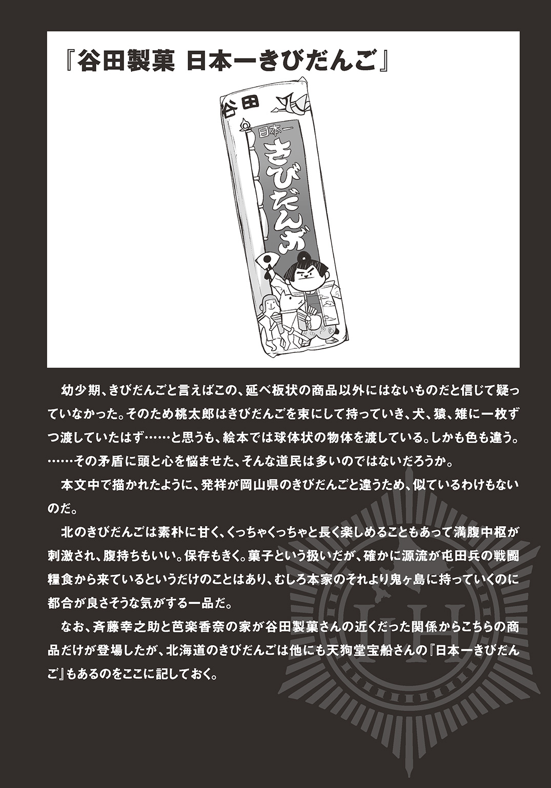
●４章『試される大地～ススキノ決戦～』
よくよく考えてみると、僕はカイロ類をあまり使わない。電話で健三にも尋ねてもみたが、人から貰ったりしたら使うが、自分で買ってまで使いはしないらしい。
「いやいやデブと農業マッチョはそれでいいかもだけど、使う人は使ってるって」
香奈がそんなことを言うのだが、そうだろうか？
内地の住宅で使われるというコタツが北海道で用いられないのと同じで、局所的に温めたところで意味がないのではないか......と思うのだけれど......？
ちなみに北海道でコタツを使わないのは、家全体を温めないとやっていけないからだ。わかりやすい例として、真冬の夜間は『水落とし』といって蛇口から水を垂らしておくのだけれど、これを忘れると水道管が凍結して破裂し、大変高い勉強代を強要されることになる。急遽家を留守にしようもなら、最悪水洗トイレのタンクが割れることすらあるのだ。
「まぁわかったわかった、男子はいいよ。だとしても女性は使うべ。上着の腰の後ろに貼ったりさ。暖房の弱い教室の授業とか、正月の参拝で並んだりする時とか......あと、外で立ち仕事したりする場合にさ」
「女性の場合は確かにそうだな。......それじゃ、あのザマは問題ないのか」
「どうだかなぁ。何にせよ、アレは、ちょっと異常な感じがするべ」
僕と香奈の視線の先にいるのは、十数羽のペンギンの大行進......の横で小刻みに震えている△頭の......何かだ。まぁ、早乙女めろんである。
ここ、世界的にも人気となった旭川の旭山動物園に到着するなり、彼女が寒い寒いと言い始めたので、先程僕らで大量のカイロを購入してやると、この形態へと変形したのだ。
ポケットというポケットにカイロをぶち込み、その上で角巻きをスッポリと頭まで被って少しでも熱を逃がすまいとしているらしい。その先端部からは彼女の吐息であろう白い煙がふよふよと昇っており、活火山の形態模写のようでもある。
そんな、『サイレントヒル２』の象徴的なキャラクターである『レッドピラミッドシング』の如きシルエットは、人間はもちろん、ペンギン達にすら珍しいようで、めろんの前を通る時に彼ら全員が一様に見上げるので、大勢の観光客がその不思議な物体にカメラを向けていた。
ペンギン達が通り過ぎていくと、観光客達も共に移動していく。動物園の中央通路にはめろんと香奈、そして僕と手を繫ぎながらうとうとしている茶花だけが残されたのだった。
「ね、ねぇ......何で私はこんな拷問を受けないといけないの......？」
「もう昼だし、そこまで極寒ってわけじゃないだろ。動いていれば、まぁ、死にはしないさ」
「そうは言ってもね幸之助君！ さっき動物園の温度計にマイナス一〇度って出てたよ!?」
旭川の一月の平均気温はマイナス七度前後だ。旭山ともなれば、日中でもこんなものだろう。
ちなみにマイナス一〇度ってのは、鼻で息をするだけで鼻毛が凍りつき、口で大きく息を吸えば気管支が逆Ｙ字形なのだと、冷気とそれに伴う痛みで実感できる気温である。
「何が哀しくてこんな中でペンギンなんて見ないといけないの......食べられもしないし......」
動物園は好き？→嫌いじゃないよ。→それじゃ行こう......という流れの結果、僕らは朝のホテルビュッフェを食べ終えると、棚村ゆかファンである同志に連絡し、朝一でハッスルしていただき、僕の『先導者』で旭川市内まで来て、さらにそこから一時間ほどをかけて旭山動物園へとやってきていた。函館から真っ当な手段で来ようとすると特急を乗り継いだとしても七時間以上は軽くかかってしまうから、この能力は非常に便利だ。
「せめてワカサギ釣りで、釣ったそばから揚げてくれるとかなら......」
言葉が途切れたと思ったら、角巻きからニュッとめろんの顔が出てくる。
「幸之助君、私、ワカサギ食べたい。釣りたてのやつ。大丈夫、釣るよ、私！」
グッと握り締められた拳も角巻きの隙間から現れるが、そういう問題じゃあない。
旭川でワカサギが釣れる場所はないのだ。最低でも五、六〇キロは移動しないといけないが、健三が札幌でハイエース復活の儀を執り行っている間――あの状態からまだ修復する気らしい――公共交通機関を利用する他にないのだけれど、都合のいい電車やバスがあるわけもない。
旭山動物園は何気に僻地にあるため、周りは例の如く何もないエリアであり、移動手段は限られてくるのだ。まぁタクシーはあるが......さすがに、ちょっと......ねぇ？
まぁ、だからこそ、今回その場所に選んだわけなのだけれど......。
やっぱり天ぷらだよね！ と、一人浮かれ始めためろんを尻目に、僕はスマホを確認した。何の通知もない。......やはり、喰い付きがよろしくないようだ。
ペンギンの行進を取材していたテレビクルーが、あからさまにめろんに視線を向けてきていた。今はまだ行進を見送った子供達を撮影しているのだが......次はめろんに向かう気らしい。
おかしな格好に美人とくればネタにしやすいか。――うん、悪くない。
「あれ......幸之助君、何かテレビの人達がこっち向かってくるけど、どうする......？」
「都合がいい。素直に全部答えていい。......人と会うためにいるってな」
念のため香奈と茶花は下がらせ、僕とめろんが近寄ってきたインタビュワーを迎え撃つ。
「どうもコンニチハー、どちらからいらしたんですかー？」
「えっと......と、東京都から......ですけど？」
場の空気が一瞬固まったので、すかさず僕がスマホケースを翳す。
「北海道特殊機密部隊道ＭＥＮです。現在我々が北海道帝の客人であるこちらの婦人をエスコートしております。本日はある人達との会談のため、旭川に。......金井さん、高橋さん、小林さん、あと何か弓使ってたゴツめの女性の方、お待ちしておりますよー」
僕と曖昧な笑みを浮かべるめろんは、カメラに向かって手を振った。インタビュワーはちょっとしどろもどろだったものの「ねー、外国から来られるお客さんも、やっぱり旭山動物園には多いんですよー。本当大人気ですねー。さて、それでは明日は、札幌のラーメン共和国からの中継となります。それではまたー」と、カメラに手を振って取材は無事終わったのだった。
ディレクターらしき人物から「本当に、あの道ＭＥＮなの？」と確認されたりしていると......僕のスマホが鳴る。海原さんだ。
『今し方の、運良く連中も視聴していました。ですが、動く様子はありませんね』
了解の旨を伝え、僕は電話を切ると白い鼻息を灰色の空へと放った。
「旭川じゃ、釣れないか」
「大丈夫、ワカサギ釣るよ、私。こう見えて結構器用貧乏なところがあるんだよ」
そうじゃないんだよ......と、僕は苦笑した。というか、器用貧乏って......。
本当はここが理想的だった。この旭川の地なら、群馬県民を完膚なきまでに屠れる。
いや、正確にはここに来る道中で、やれるのだ。
僕は、自らのミスを悔いた。何故あの時、手の内を明かしてしまったのか。
結局のところ群馬県民とて人類の枠から大きく外れているわけではない。人外魔境を跋扈する化け物ではないのだ。高性能なコンニャク・アーマーで守られているだけで、中身は人間。そしてコンニャクとて、あらゆるエネルギーを消し去れる魔法のマテリアルじゃないはずだ。
だからこそ、電話口で僕が言ってしまったように、二〇三ミリ榴弾砲をはじめとした強力な兵器をぶち込めれば否が応にも勝てるはずだった。有無を言わさず、周辺一帯をぶっ飛ばす。そうすればどれだけコンニャクで守られていようと関係なく、中身を破壊できるはずだ。
だが、僕はそれを言ってしまっていた。
もしかしたらそれによって札幌を離れる危険性を察してしまったのかもしれない。
現在、彼らに気づかれることなく監視を行っており、特急列車にせよ車にせよ、ある程度人気のないエリアに達したらそこを攻撃できるように、道軍の配備はすでに整えていた。榴弾砲は元より、予想外のルートを取られても対応可能なようにヘリや戦車まで出す覚悟だった。
だが、札幌にいられるとこれらの全てが使えない。やれば、北海道の首都を大きく破壊することになるし、やはりどうしたって他国へ与える印象がよろしくない。
観光地はイメージが命である。連中もそれを理解している。人や建造物への被害と、そうした理由のために、僕らは攻撃できない。......だから、彼らは動かないのだ。
はたまた僕が今朝方、旭川にて引き渡すと告げ、向こうの反応を聞くより先にＳＩＭカードを抜いたのだけれど......それに腹を立てているのか。まぁ、十中八九、前者だろう。
とにもかくにも、めろんという餌だけでは、この旭川までは来ない。連中なら全て察した上で驕り、当たり前に来るのではないかという期待もあったのだけれど......。
無論、その際に僕らの知らぬ技術を用いられて道軍の監視網を抜け、本当に旭川に到達されたとしても......それでも、勝てる。そういう二重に保険をかけた作戦だった。
だが、それら全ては、彼らが動かなければどうしようもない作戦でもあった。
後手に回っている。それはわかっていた。だが、あらゆる犠牲を払う覚悟があるのなら、即座に勝てる戦いでもある。ただ......うまく勝つのが、難しい。
「幸之助君、安心して。ワカサギじゃなくても旭川ラーメンという手もあると思うの」
彼女は最悪自分が群馬県民に引き渡されるということを何とも思っていないのだろうか。普通に考えて良くて尋問の後に殺害、悪くて拷問の果てに殺害になると思うのだけど......。
「さすがに冷えたな。......確かに、どこかで旭川ラーメンでも食べて、ホテルに戻ろうか」
旭川ラーメンはコシの強い低加水麵に、スープにたっぷりと浮いたラードの層が蓋をした熱々の醬油スープだ。寒ければ寒いだけ、うまくなる。また、塩ラーメンではあるが、あの有名な『山頭火』の本店も旭川にあるので、そこに行くのもいいだろう。
僕はどこか負けた気分のまま、めろん達と共に動物園を後にした。
１
「ねぇ幸之助君!? ねぇ!? どうして、どうしてなの!?」
譲歩はした。しかし、それでもダメなのか。ダメだというのか。
「ちょっとッ、ねぇって！ もう、ダメ！ あっ、あぁ!! ちょっと先っぽ入ってる!! もう中に、中に......!! どうして、どうしてなの!?」
めろんの声が酷くうるさい。僕は彼女の声を無視した。
「なぁ、デブ。めろん......いいのか......？」
「いいんじゃないでしょうか。ねぇ、隊長？ あれで少しはあの化け物おっぱいも小さくなるってもんですよ」
さすがに二晩を経たことで茶花の体調も戻りつつあった。だが本調子というには、もう少しのようだ。ようやく会話に参加するようになってきたものの、目は眠たげだし、体はちょっとふらついているようなので、今のように僕と手を繫いでいなければ不安なところがある。
「幸之助君！ 香奈さん！ 茶花さん!! 私、このままコイツにヤられちゃうの!? どうしてなの!? どうして......どうしてこのメロン熊は私を食べようとしているの!?」
僕らは白い息を吐きつつ、めろんを見やる。
夕張駅前の光景は、五分前から変わっていない。相変わらず荒れくるったメロン熊とめろんが互いの両手の平を組み......いわゆるプロレスなどにある〝手四つ〟で組み合っていた。が、すでにめろんの頭の先はメロン熊の大きな口に収まりつつある。
メロン熊は、知っての通り夕張のゆるくないゆるキャラである。おいしい夕張メロンを食べ過ぎた結果、変貌した熊なのだというが、詳しいところはわからない。
マスクメロンに目や口が付いているのだが、その目は野生の獣そのままであり、口は子供なら丸呑みにできるサイズに鋭利な牙が並ぶ。しかもマスクメロンの表面にある無数の筋が血管として波打っており......まぁ、おぞましいことこの上なかった。これに人型に近い熊のボディを持っているので機動性も高いときている。
実際、動きはかなり機敏で、人を見かけると頭から丸かじりせんと突っ込んでくるので、多くの者が今のめろんのような状況になるのだ。小学生低学年なら大号泣は必至である。
僕はスマホを見る。時刻はすでに午後三時。気温はマイナス八度。......連絡は、ない。
ここ、札幌から七〇キロの夕張の地にまで譲歩したが......それでも、ダメ。
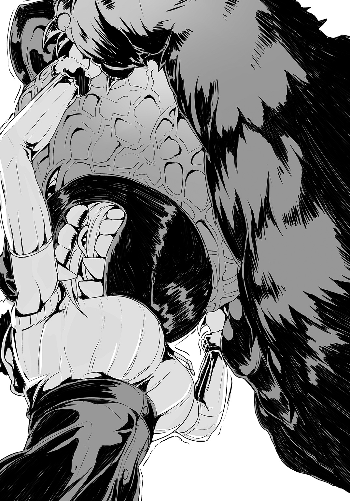
群馬は、動かない。
ここでもダメなのか。僕はそんなため息を白い煙へと変えて、空へと放つ。
夕張駅と密着するようにあるホテルマウントレースイも、スキーシーズンってのもあって部屋が取れなかったし......どうしたものか。
「幸之助君！ 私、そろそろ腕が限界だよ！ というかすでに頭がほぼ口に収まってる!? 補食されるちゃうの、私!?」
さすがにうざったくなってきたので、僕は茶花のリュックサックにぶち込んでおいた『夕張メロンピュアゼリー』を一つ取り出すと、縁を少し開けて匂いが漏れるようにし、メロン熊の頭上を越えるようにして彼方へとぶん投げた。
メロン熊の好物は夕張メロン、そして夕張メロンピュアゼリーは夕張メロンの魅力がそのまま詰まっている高級ゼリーである。当然ながらその芳醇極まる香りも素晴らしい。
これにはメロン熊とて反応せざるを得ない。彼はめろんを地面に放り投げ、飛んでいったゼリーを追う。......そして、めろんもまた追い掛けていく。何でだよ。
少し離れた場所でメロン熊とめろんのゼリーを懸けた激しい攻防が始まったが......もう構う気にもなれなかった。――と、その時、スマホが鳴る。海原さんだ。
『ダメです。動きません。それどころか連中、持ち込んだ物資が底をついたのか......その......』
「どうした、言え。報告しろ」
ニュースを見てほしい、というので僕は茶花のスマホを借りると、それでニュース専門動画サイトを開く。ほぼリアルタイムで地上波放送されているニュースを垂れ流しているサイトなのだが......そこで、札幌の惨劇が映し出されていた。
コンビニがまるで暴動があったかのような荒らされ方をしている映像から始まり、スーパー、そして銀行のＡＴＭへとそれが続く。
〈目撃者の情報では、犯人は四人組。大柄な男と女が武器を持って侵入し、暴れ回ったとのことです。彼らは〝こちらは動かない。さっさと夕張からメロンをつれてこい、さもなくば惨劇は続くと思え。心にググッと群馬県〟と、季節外れのわけのわからないことを叫んでいたとのことで、現在警察は夕張メロンピュアゼリーを囮として――〉
頭痛がした。僕は警察にヘタな行動を起こさぬよう釘を刺しておけと命じ、電話を切る。
恐らく、移動中を狙うというのはすでに読まれている。それはいい。別に構わなかった。
問題は......こちらの『最後の一手』まで読まれているかどうかだ。そして、僕らが用意しているどんな手段も、札幌市内にいられると使うことができないということだった。
「渡しなさいッ！ あなたには早い！ このケダモノ！ アニマル!! 畜生めッ!!」
取っ組み合いを一人と一匹が全力で行っていた。メロン熊が先にゲットしたものの、そこにめろんがタックルでもカマしたのか、倒れたところを彼女が馬乗りになってゼリーを奪おうとしているという......まぁシンプルに表して酷い光景だった。
「......隊長、ボクなら......やれます。札幌でも、どこでだって。......奴らのコンニャクだって、目や口の穴ぐらいはあるはずです。そこを突けばいい」
「前に言ったろ。茶花、殺しはさせない。どうしてもやるってんなら僕か健三が担当する」
「差別は良くないと思います。......隊長だって、見た目年齢不詳ですけど、未成年ですし」
「茶花、少しはデブにも格好つけさせてやれっての。このデブだって男だ。わかってやんな」
香奈の言葉に、何故か茶花はちょっとむくれた様子で僕から視線を外し、メロン熊とめろんのレスリングを見やった。
「何にせよ、群馬をこのままにはしておけない。......僕らの手で......」
無茶苦茶言ってるってのは十分にわかっていた。僕ら道ＭＥＮは特殊能力を持ち、道民特有の我慢強さと妙に耐久性のあるボディを持つ以外は、所詮ただの仲良しグループだ。
正規訓練を受けた軍人でもなければ、世界を救うスーパーヒーローでもない。銃弾一発で死ぬし、生牡蠣に中たればトイレとベッドの間をのたうち回る、そんな脆弱なる人類だ。
だが、やるしかない。どこかしらで痛みを、何かを犠牲にするしかないのだ。......それがわかっているからこそ、躊躇っている。どこかに都合のいい方法があるんじゃないのかと期待してしまう。でも、そういう考えに陥った時というのは、得てして完全に八方塞がりの状態なのだ。――割り切る。それしかない。でも、その時に後悔したくないから、今、悩んでいる。
茶花、めろん、札幌......これらのうち、最低一つが犠牲になる。
犠牲にしてなお勝てるかどうかわからない茶花は論外だとしても、僕は......恐らく人よりも街を犠牲にするだろう。人は死ねば終わりだが、街は時間がかかっても、いつかは復興できる。
可能な限り郊外だが......街の中でやるなら開けた場所に引き寄せて、そこを砲撃するのがいいだろう。大通公園や、それこそ札幌駅の北口前か。......雪祭りの会場と札幌の玄関口という、それらの場所を焼け野原にする覚悟があれば、できるはずだ。
だが、散開されていたらどうなる？ 連中とてバカではない。群馬の進学校出だという奴もいるのだ。万が一を考えるだろう。そしてその万が一が起こった際には、あらゆる破壊活動に出るのではないか。そうなれば......札幌市内に道軍を投入しての掃討作戦しかなくなる。
たった四人の群馬県民を相手にするのに、そこまで代償を払わねばならないというのか。
「だが......やるしかない。札幌で、道軍で、奴らを叩くしかない。物的損害は無視する」
「でも隊長......そこまでして、めろんさんを守る理由があるんですか。それって......」
恋愛感情なのか、と茶花は気にしているようだったが、そういうわけではない。
下心かと言われれば......まぁ、それはあるんだけども......。
僕は安心させるように、茶花の頭を撫でる。彼女はくすぐったそうに目を一瞬細めるも、やっぱりすぐにまたむくれ顔でめろんを見やる。
「隊長、どんな理由にしたって......あんな人に、そんな、価値があるんですか？」
言わんとしていることはわからんでもない。
先程まで取っ組み合いになっていた一人と一匹の戦いは......今も継続中だった。
めろんが「今こそ人類の英知の全てをかける時!!」とかっこ良さげなセリフを口にするも、やっているのはパワー勝負の相撲なわけで......どこに英知があるんだよ。金太郎かよ。
うーん、あんな人にそんな価値があるのか、と問われればなさそうに見えてくるけれど......。でも、そうじゃないのだ。
「客人をもてなさない観光地なんて滅ぶだけだ。......客人は守る。強盗は叩く。当たり前のことを当たり前にしようじゃないか。......北海道人だっていつまでも耐えるばかりじゃない」
「はい。......あ、健三の車だ」
しょぼんとしかけた茶花の顔が上がる。見やれば、あからさまにボロくなったハイエースがこちらに向かって走ってくるのが見えた。
何かもう......事故車そのままである。よく走ってるな、というぐらいにベッコベコだ。
ハイエースは僕らの前に停車すると、ウィンドウが下がって健三のドヤ顔が現れる。
「札幌からの慣らし運転も終えて、ついに復活だぜ！ ......で、ありゃ何だ？」
健三の視線の先では、ついにゼリーを手にしためろんが除雪で集められた雪山の上で高らかに笑い、その麓の部分でメロン熊が悔しそうに膝を突いて地面を叩いている光景があるのだけれど......あの一人と一匹はもう、どこか別の場所に放置しておいた方がいいのかもしれない。
「ふはははははっ！ ついに夕張の代名詞たる夕張メロン......のゼリーを手に入れた!!」
いろいろ言いたいところはあるが、夕張の代名詞に〝夕張〟が入ってんじゃん......。
「さぁ、いただ......ガッデム!! スプーンがないよ!? 幸之助君どうしてなの!?」
ホテルの売店で購入した際にプラスチックのスプーンを付けてもらったので、それを雪山のめろんに向かって投げるものの......当然軽いので、途中でポトッと落ちる。すると何故かメロン熊が器用に拾い上げて、山頂で仁王立ちするめろんに手渡すという謎の世界観が展開された。
「ありがとう。良い熊だね。後で蓋でも舐めさせてあげるよ。......さて、と」
めろんはやや底の浅いゼリーの蓋を剝がすと、その赤肉メロンの身を想わせる、橙色のふるふると柔らかなそれを掬い上げ、そっと口へ。
何を言うのかと見ていたら、第一声は「ふはっ!?」という謎の呻きだった。
「な、何、何なのコレ!? ほぼメロンだよ!! 上等かつ熟れた赤肉メロンの上の方......ゴールデンエリアのそれみたい！ あれから繊維感を除いたって感じ!?」
上の方？ と、僕らは互いの顔を見合わせた。最初に意味に気がついたのは茶花だ。
「多分、種取って、カットして皿に載せた三日月型の状態を言っているのでは？」
あぁー、と僕らはようやく納得した。恐らく普段見ているものの違いなのだろう。
僕らは......というか、主に僕と香奈は夕張の隣ということもあって、昔から夕張メロンのＢ級品（傷物や形が悪かったりするもの）をよく貰ったりして食べているので、メロンというとあの球体のイメージになるのだ。けれどめろんのメロンはカットされたそれを指すのだろう。
「あぁいうスイカみたいな切り方って、あんまりしないからわからんかったわ。デブの家はどうか知らんけど、うちは基本四つに切るか、半分のヤツをそのまま喰うし」
「半分で喰うのってさ、甘すぎて途中で辛くならない？」
「うち妹弟多いから、待てなくて完熟する前に食べちゃうわけ」
「ちょっと幸之助君に香奈さん！ 人がゼリーで感動しているところに水を差さないで!!」
ったく。と、何故か怒られて、僕らとメロン熊はおとなしく山頂に立つめろんを見やる。
「さらに一口......んー！ 瑞々しくジューシーで、濃密に甘くて......。あ、何だろう......メロンとは少し違う、妙に高級感のある芳醇さが含まれているね、コレ!?」
夕張メロンピュアゼリーの原材料を見ればわかるのだが、さりげなく洋酒を使っているのだ。これが風味を一層際立てると共に、他にない高級感をもたらしている。
意外と思う人も多いかもしれないが、メロンに洋酒のブランデーやウィスキーをひと垂らしして食べると意外なほど合う。青肉メロンは食べたことがないのでわからないが、よく熟した赤肉メロンには間違いなく合う。......まぁ、僕は未成年なのでわからないけども！
ちなみにうちの祖母ちゃんが好きな食べ方に、夕張メロンを半分にして種を抜いて出来た凹みに、ブランデーを注いで喰うっていうのがある。あれはうまい......らしい！
パクパクというより、じゅるじゅじゅっという感じにめろんはゼリーを食べ終えると、空になった容器を空へ掲げて、誇らしげだった。
「夕張、ごちそうさま！ すっごくおいしかったよ!!」
「あのゼリーってさ、ちょい凍らせるとうまいよな」
「あぁ表面うっすら凍るぐらいで、内側の方はまだじゅるじゅるぐらいのとかが一番......」
「だからッ！ 私がせっかく感動しているんだから邪魔しないでって言って――!!」
僕はうとうとし始めた茶花の鞄からさらにもう一つゼリーを取り出して、めろんとメロン熊の間に落ちるようにしてぶん投げる。ケダモノと人類の戦い、第二幕が始まった。
「さて、と。......茶花、健三の車に乗っておけ。少し瞼が下がってきてるぞ、限界だろ」
頷く彼女をよっこらせと抱き上げ、後部座席に寝かせる。そしてまた外に出ようとするが、僕の袖を眠ったばかりの茶花がつかんでいた。
自然に離れるまで仕方ないか、と僕は後部座席に座って、彼女の頭を撫でる。
小さな頭、華奢な体。いくらＤＳＫ１７９遺伝子が覚醒したとはいえ、こんな少女に全てのリスクを負わせるわけにはいかないのだという気持ちが、どうしたって湧いてしまう。
「で？ どんな感じよ、今」
僕はカーステレオから流れるラジオを棚村ゆかの曲に変えてくれ、とお願いしかけるも、やめた。何だか今のような気分で彼女の歌を聴くことは、どこか失礼な気がしたのだ。
幸之助？ と、再度健三に声をかけられ、僕は現状、そして決断を話した。
「一九一万人が人質か。......さすがは群馬だ、言うことが違う。だが、それが外連味を利かせた言葉だとしても、連中には本気でやりかねねぇ危なさがある」
「あぁ、何せ群馬だ」
「あぁ群馬だものな。......ハイエースの仇ぐらい、俺の手で討ちたかったんだがな」
僕だってそうさ、と僕と健三はハイエースの天井を見上げた。そこには、槍のものと思しき複数の穴が空けられていた。今はそこに外から薄手のプラ板を張り付け、断熱材代わりに布きれをまるめて詰め込んでいるという、酷い有様だ。
「たとえ連中を倒したとしても、札幌を破壊した時点で僕ら北海道側の負けなんだろう。被害が大きすぎる。......だが、めろんを差し出すようなマネをしても同じだ。僕という男の......道ＭＥＮの隊長としての負けでもある」
「あぁ、お前にとって未来のワイフにして俺のハニーだものな」
僕はクスリと笑ってしまう。そうなるのならその前に必ずお前を殺す、そういつもなら言うところだが、今はそんな言葉は出なかった。そうはなりはしない、そう思ったからだ。
めろんを差し出せないという気持ちに紛れ込んでいた下心は、いつの間にか薄れていた。
渡せない理由......それは、同志だからだ。
函館山で手を握り合って、それを認め合った以上、連中に彼女は渡せない。
星空を見上げるように、僕らはその天井の穴を無言で見つめた。茶花の寝息と、「人類の英知！ 人類の英知!! 人類の英知!!」というめろんの声と、雪面をのたうち回る一人と一匹の騒々しさが遠くに感じられる。
そんな中で、ただただ、ラジオの音声だけが明瞭だった。
〈明日の朝には長く続いていた降雪もようやく一段落して、久々の青空が見られるようです。日中の気温も高くなり、待ちに待ったお出掛け日和となるでしょう。これは北からの風により雲が押し流される形となったことで――〉
ん？ と、僕と健三はラジオのニュースに顔を見合わせた。健三はラジオのボリュームを上げ、そして僕はスマホを取り出し、即座に情報を引き出し......そして、また、顔を見合わせた。
「おい、幸之助......こいつぁ」
僕はスマホに表示された数字を元に、頭の中である可能性を考え......そして、確信した。
「札幌で、勝負ができる」
僕は車を降りようとするが、相変わらず茶花の手が袖を握っていて......えぇい、外すのも面倒だ。僕は彼女を抱き上げて外へと出る。すると伏したメロン熊に足を載せつつ、ゼリーに舌鼓を打っていためろんが僕を見て、その手を止めた。
「あれ？ 幸之助君、何か......あった？」
「あぁ、少しね。聞いてくれ。......明後日の早朝、僕ら道ＭＥＮで群馬を討つ。いや、正確には道ＭＥＮと北海道が群馬と戦い、これに勝つ」
香奈とめろん、そしてメロン熊がピクッと反応してその顔に緊張を走らせた。
「どううまくやったとしてもめろんを含む全員にリスクが降りかかる。だが、群馬の戦闘部隊と道ＭＥＮが、札幌市内で直接対決をして勝ち目がある最初で最後のチャンスだろう。......付き合ってくれるだろうか」
「俺はハイエースの仇が討てるんだ、望むところだ」
車から降りてきた健三が僕の肩にその大きな手を置いて、言ってくれた。
茶花がもぞりと動き、僕の腕からトンッと降りると、その大きくも強い目で見上げてくる。
「ボクは......戦います。ボクを侮ったあんな連中......一掃してやります」
「まぁアタシはデブがやるってんなら付き合うに決まってるべ。けど......めろんは、どうだ？」
その時、伏していたメロン熊がビッと親指を立てる。うん、お前じゃない。
ケダモノに足を載せていためろんは、肩をすくめると微笑んだ。
「私の覚悟は最初からできているよ。元々この身を群馬に差し出す気だったんだし。もしあの人達を退けられるのなら、儲けものだよ」
「その、何だ。......めろんちゃんは何でこうも潔いんだ？」
「だって私は今、夢の中にいるんだよ。憧れの中を歩いている。この大地に立って、この地のおいしいものを食べられた、つまり願いを叶えたんだもの。......幸せであればあるほど、食べさせてもらった北の美食がおいしければおいしいほど、対価は求められる。当然だよ。......だから覚悟はできている。怖くないといえば噓になるけれど、今更命を惜しむ気はないよ」
その言葉は、きっと本心なのだろうと僕には思えた。
彼女は欲深く、義理堅い。そんな女の子なのだ。
僕はちょっと笑った。
「北海道を舐めるなよ、めろん。たかだか数日過ごしただけで北海道を食べ尽くした気になるなんて、甘すぎる。この大地は君が考えている以上に広大だ。そして、そこで生まれるものは膨大だ。君の口に入る量などたかが知れている。......まだまださ。この大地の味を、君はまだ全然味わっていない」
僕の言葉に、めろんも、笑った。
「それじゃ......まだ、君はご馳走してくれるのかな？」
任せてくれ。その言葉と共にスマホのＳＩＭカードを交換し、即座に群馬をコール。
みんなに聞こえるようにスピーカーフォンにした。
「僕だ。道ＭＥＮ隊長、斉藤幸之助だ。......覚悟を決めた。めろんを、東京都の密使を明後日の朝、札幌へ連れていく。エスコートは道ＭＥＮだけだ。道軍は近づけさせない。お互いに約束を遵守しよう。いいな？ 場所は......」
『それはこちらから指定させてもらおうか。札幌駅の北口や大通公園を指定されちゃ何をされるかわからんからなぁ。......そうだなぁ、北海道最大の繁華街中心部、ススキノ交差点でいいか。あそこで受け渡しだ。互いに約束は守ろう。紳士協定ってやつだ』
了解と伝え、僕はＳＩＭカードを抜いた。
「聞いての通りだ。......明後日の早朝、『ブラックニッカ』の看板を奴らの墓標にする」
群馬には過ぎた墓標だと、健三が笑った。
２
「あのね、幸之助君。カレーを食べるって話だったよね？」
「あぁ、今夜に備えてガッツリ何か喰おうぜって話で、めろんがカレーを食べたいって言って......っていう流れだった」
「うん、そうだね。でね？ 本州では国産野菜のカレーって凄く高級品なんだよ。何せ、使う野菜のほとんどの主要生産地が北海道だったからね。......で、北海道でカレーと言ったら、フツー誰もがアレを思い浮かべるじゃない？」
アレ？ と、僕は茶花、香奈、健三に、助言を求めるように顔を向けるが、彼らも一様に首を傾げていた。
「そもそもおかしいでしょ！ 五人が一緒にご飯だっていうのに、なんで全員が横一列のカウンター席なの!?」
いや、むしろそこは五個連続で席が空いていたことを幸運だと思うべきじゃ......ん～？
「だぁかぁらっ!! スープカレーだよ!!」
あぁ～、と僕らは一様に納得した。確かに言われてみると、日本国の人間からしたら『北海道でカレー＝スープカレー』の図式になるのかもしれない。けれどスープカレーのブームが起こったのって、そんなに昔というわけではないってこともあって、僕らからするとそこまで馴染みがあるわけでもないのだ。特に都市部の人間でもないとなると......ちょっと縁がない。
結局のところ、北海道の辛いところは人口密度の低さにある。札幌や旭川などでもないと客商売はやっていけないため、ブームになったからといって田舎の烏有町にポンッと店ができるわけもない。
あ、ちなみに、と、香奈が小さく手を上げる。
「札幌だと『すあげプラス』ってスープカレーの店、なんまらうめぇよ。誰か行ったことある？」
カウンターに座る全員が横に首を振るので、香奈は自然とドヤ顔になった。
「スープカレーってゴロッと大きな野菜をそのまま使ってることが多いべ？ でもアレってちょっと食べづらい......けど、その店な、名前の通りに素揚げした大きな野菜に串が刺さってカレーの器に入ってんだよ。それが食べやすくって。しかも、肉もスープもうめぇけど......一番感動したのはニンジンだったなぁ。ちょうど行ったのが一一月の旬ってこともあって、なぁまら甘いの！ しかもホクホクじゃなくて、じゅばって感じで瑞々しくて。ニンジンがだぞ、それが瑞々しいって凄いべ！ ......うまかったなぁ、アレ」
「そこ！ そこに行こう！ ねっ、幸之助君!?」
「０時回ってるし、もうやってないから無理だよ。何よりどうせススキノの店だろ？ ヘタに群馬と出くわしたら作戦が総崩れだ」
ちなみにススキノは名前こそ有名だが、実はそういった地名はなく、札幌駅から南へ少し行った道内最大の歓楽街を指したものだ。んで、やはり香奈の言うスープカレーの店はモロにそこにあるようだ。円山などにも支店があるようだが、どのみち営業時間外である。
「ススキノの本店でさ、そこの生ラム炭焼きカレーがホンット、うまくってなぁ」
「ラム！ 生！ 炭焼き......！ 幸之助君ッ、どうして私はそこへ行けないの!?」
だからさ......と、めろんを宥めていると茶花も話題に入りたかったのか、「小樽には『クレイジースパイス』の本店があります」と言うものだから、めろんは大忙しだ。
「とにかくこの時間は無理だ。まず今しっかり喰って、無事に生き残ったら......一緒に行こう」
僕の言葉にめろんはピタッと止まり、それもそうだね、と席に着いてくれた。
「これは別に最後の晩餐じゃないんだもんね。確かに、それなら......いいか。楽しませてもらおうかな。......で、ここのウリは？」
彼女は白を基調とした清潔感ある店内を見渡すと「ファストフードだよね？」と口にした。
そう、この店はファストフード。店内の造りとしては牛丼屋チェーンのように、〝コ〟の字型のカウンター席となっており、その内側を店員さんが行き来できるようになっている。この店舗には、それが二列あった。
「この『みよしの』は餃子とカレーの店だ。......まぁ、カレーが喰いたいんなら、やっぱりこのスタンダードな『みよしのセット』じゃないかな。カレーライスと別皿に大きな餃子六個、そしてキャベツの浅漬けのセットだ」
んじゃそれで、とめろんは即座にＯＫを出し、僕と健三は白い飯に浅漬け、味噌汁、そして餃子が驚異の一八個という『ジャンボ定食』を、茶花と香奈はカレーライスの上に餃子が三つ載った『ぎょうざカレー』を注文した。
「でもアレだよね。カレーがあるとはいえ、基本的に餃子とご飯なんだよね。......中国の人が見たら腰を抜かしそう」
有名な『餃子の王将』とて中華料理店という枠組みで餃子を押しており、必ずしも飯と餃子を合わせる必要はない。......が、みよしのは飯と餃子の組み合わせから全てが始まる。
とはいえ、中国の餃子を意識するからおかしく感じるのだ。向こうは水餃子か蒸し餃子がスタンダードで、その残り物を食べる際に焼き餃子とする場合が多い。その関係で皮は基本的にしっかりしたものが多いのだけれど、このみよしのの餃子のように、初めから焼きに特化し、薄皮で、大きめに作れば......飯にだってしっかり合う。
特にここのは中の具材も味付けが濃い目だから、本当によく合うし、滅茶苦茶にうまい。
更に、この深夜という時間帯にあっては――。
そんなことを話していると、調理場の方から油の撥ねる威勢の良い音が聞こえてくる。
そうして、僕らの前に次々に品が並んだ。普段ならまずはめろんの一口目を待って、その感想を聞いてから......となるのだろうが、せっかくのこの時間の餃子なのだ。
即座に、僕は小皿に餃子のタレを注いでラー油を垂らし......飯の茶碗を左手に持つと、美しい焼き色を見せる一八個の餃子群に箸を向かわせる。摘まみ上げた大振りなそれに軽くタレを絡め、盛りの良い飯の上にちょんっとワンクッションさせて染みを作ってから――いざ、口へ！ そのカラッと揚げられたかのように香ばしく焼き上げられた平らな面に歯を立てれば、パリッ、サクッとした食感。直後、熱々の肉汁が迸る。もはや人体が受け止めきれる熱ではない、がッ！ 火傷しようがしまいが、もはやそんな些細なことを気にしている時ではない。
僕は、飯をかっ込んだ。まだ餃子が居座っている口へ、思いっきりぶちこむのだ！
両方の頰が膨らむほどに熱々の白米を詰め込み、熱い蒸気をムフゥ――――ッっと一吹き。
咀嚼によってその霊妙なる味わいを楽しみつつ、左手の飯茶碗を味噌汁へチェンジ。
油揚げとわかめを主軸の具材としつつも、ちょろっと入っている長ネギが実にいい風味を醸し出した汁を啜る――この瞬間、僕ら人類は極楽浄土へと召されるのだ!!
これだ、これがみよしのだ。最高の味わいだ。この目一杯の一口だけは、他の何ものにも代えがたい。僕も健三も、思わず天井を見上げるほどだ。
......いやまぁ、口に詰め込みすぎてそうしないと喉を通らないってのもあるんだけど......とにかく、マジで昇天しかける勢いの圧倒的なうまさと満足感が、そこにはある。
僕より先に口を空にした健三は水を飲む。
「くっはっ、やっぱうめぇ！ 最近みよしのはスーパーでチルド買うか、テイクアウトの弁当ばっかでな。しばらく店で喰ってなかったから、なおのこと来るぜ」
なるほど、とその様子を見ていためろんはカレーのかかっていない白い飯の部分を利用して、同様にしてかっ喰らい......そして、天井を見上げ、極楽浄土へと旅立っていった。
「......来た。これは、来たよ。どうしようもないぐらいに、圧倒的な......多幸感。北の合法ドラッグストアみよしのが、今私の口の中でオープンしたよ......」
表現がギリギリ過ぎて若干の緊張感が走るが......まぁ、ご飯がおいしいということだろうから、大丈夫だろう。......うん。
「他店に比べれば明らかに大きい餃子......けれどご飯と合わせることを考慮すると見事なまでのバランス！ 餃子と飯の二大巨頭が織り成す味覚と満足感の奇跡だね!! ......となると気になるカレーは......あ、スプーンも付いている。ではこれで......あ、素朴！ 何だろう、なんだか懐かしい感じ!! いいじゃない！ こういうの好きだよ、私!!」
めろんはパクパクとスプーンでカレーライスを味わいだす。みよしののカレーは辛さを選べるのだが、甘口と辛口があり、彼女が食べているのは甘口だ。辛口はまたスパイシーで一味違うのだが......言うと、そっちも注文しそうだから、黙っておこう。
「でもあれだよね、さっきメニュー見て思ったけど、私のコレ、餃子六個にカレーライス、それに浅漬けが付いてワンコインでお釣りが来る四七〇円ってすご......あっ......」
ピタリとめろんのスプーンが止まり、目を点にした。
彼女は隣に座る僕を絶望的な目で見てくるのだけれど......まぁ、言わんとしていることはわかる。
「すみません店員さん、彼女に急ぎライス単品を！」
「最高だよ、幸之助君。もう私達、以心伝心だね！」
......皿を見りゃ誰だってわかるわ。餃子五個とカレーが少量残っている段階で飯がゼロなんだもの。明らかにカレーに心奪われて餃子の存在を忘れていたのだ。ウィンクされても困るわ。
めろんは茶碗で来たライスに、残ったカレールーを纏わせた餃子を一瞬置いて、かっ喰らう。
「うん、本当おいしい！ 何でこんなにいい感じなんだろう!?」
「それはな、めろんちゃん。これには実は、時間ってのがあるんだ。......俺と幸之助がバカみたいにみよしのに通ってた時期があるんだが、みよしのは深夜が一番うまいと結論が出たね」
そう、みよしのは深夜がうまい。ファストフード店らしく、遅いところでは朝方四時までやっている店舗すらある。
で、何故深夜なのか？ それは、その時間帯にガッツリとした飯を喰う罪悪感がいい隠し味になる......というのももちろんあるけれど、この時間帯だと餃子がガチの焼きたてなのだ。
バイトや店舗によって差があるかもだが、例えば昼などはやはり来客数が多いために、先に餃子を焼き、客を餃子が待っている場合などがある。要は屋台のたこ焼きと一緒だ。
けれど、やはり注文を受けてから焼き始めてもらえるのが一番嬉しいし、一番うまい。あからさまに焼き目の香ばしさに差が出る。焼き上がるのを待つあの時間すらスパイスだ。
だから......深夜が一番オススメなのだ。
僕らは餃子を、そして飯を食べる。茶花に僕の餃子を三つばかし渡し、めろんに二個奪われたりしながら、飯を食べていく。
みんなその味わいに顔を綻ばせ、腹に力を溜め込みながら......食べていく。
そして、全員が食べ終わる頃には誰もが口を閉ざして、消化に勤しみながら......時を待った。
僕の腕時計がちょうど一時を指した時、店内の窓が揺れだす。外からビームのように強い照明が差し込み、地鳴りのような鈍い音が辺りに響き始めるのを合図に、僕らは席を立った。
「店員さん、お会計。あ、領収書お願いします。道ＭＥＮで」
店を出た瞬間、全員がその強い冷気から来る肌の痛みに身を強ばらせる。けれど、腹にたっぷりと飯を入れたことで震えはない。
隣のファミレスと共同の駐車場には二台のバスが停まり、上空からは貨物ヘリＣＨ―47二機が、駐車場を強力なライトで照らしつつゆっくりと降下してくる。それが起こす強力な風は、まるで僕らの肌に斬り付けるかのように鋭く痛い。
大型タブレットを小脇に抱えたスーツの中年男が一人走ってくると、僕の前で敬礼をした。
「全て予定通りです。工作は完遂。メンバーも天候の助けもあって無事に予定時刻に到着しました。例の品も回収を完了しております」
このスーツの四十そこそこの男性こそ、海原さんだった。今回の作戦に対しての面倒事は全て彼がやってくれていた。......まぁ、いつものことだけれども。
環境が環境なので、回転翼が止められてからヘリのハッチが開き、中からスーツケースや大きな鞄を持った人々が降りてくる。バスからも現れる彼らは、全員が一般人だった。
僕らの周りに集まった人員は実に四一名。十代から四十代に至る男女様々な人々。
「えっと......幸之助君、彼らは？」
「『北部親衛隊』と名乗っている組織だ。......今回の件で協力願った」
めろんに伝えると、今一度僕は彼らに向き直り、声と共に白い煙を放つ。
「考えてみれば、北部親衛隊がこれほどの人数で一堂に会したのは初めてだな。......みんな、函館から釧路、果ては稚内......北海道中から遠路遥々よく集まってくれた！ ......改めてお願いしたい！ 僕に力を貸してくれ！」
皆に事細かな詳細は全て伝えてある。年齢も性別も、服装も何もかもがバラバラ。けれど、僕を見つめる目と、震える膝だけはみんな一緒だった。そしてその心の内側も、きっと――。
北部親衛隊の中の誰かが声を上げた。――早く始めましょうよ、と。それに誰もが同意するように頷いた。......うん、まぁ単にみんな寒いんだろうな、と苦笑しそうになると、一人スッと前に出てくる少女がいた。北部親衛隊コードネーム・デイジーこと......あの、雛菊だ。
「......隊長、あたし達みんな命を懸けるぐらい朝飯前ですよ。だって、隊長はあたし達の叶いっこないはずの夢を叶えさせてくれた人ですから。むしろ恩返しのチャンスってやつです」
それにも皆同じ目で、頷いてくれる。僕は一度深々と頭を下げた。
「ありがとう。その厚意に、甘えさせてくれ」
そして冷たい空気を肺に一杯に吸い込み、咳き込みそうになりながら僕は顔を上げる。
「これよりススキノを絶対殺戮領域へ変える。各員、配置へ付いてくれ」
こちらの武器は道ＭＥＮと同志、そして......北海道だ。
征くぞ、群馬。
３
季節に左右されない北海道の有名観光スポットと言えば、まずは先日訪れた旭川の『旭山動物園』と函館の『函館山』。そして、札幌の象徴であり〝日本三大がっかりスポット〟とも称される『札幌時計台』だろう。
「......確かに......ちょっとその、時間帯のせいか、あんまりパッとしないね」
白い靄を三角ヘッドのてっぺんから立ちの昇らせつつ、めろんはその高さ二〇メートル弱の時計台を見上げた。......角巻きのせいで顔が見えてないから、よくわからないけど。
早朝三時半という時刻は関係ない。というより、むしろそれで多少はマシに見えるはずだ。
時計台ががっかりスポットとされるのは、その歴史ある白い木造の三角屋根から突き出る大型時計のデザインがダサいとか、マジでボロ過ぎるとか、そういうことじゃない。
むしろ、北海道の企業がパッケージに採用したりするところからわかるように、趣のあるいいデザインだし、白い色合いも雪降る季節には馴染みも良く、夜などライトアップされることで夜の闇の中に明瞭に聳える建物として非常によく栄える。
では、何故パッとしないのか。理由は簡単である。
札幌が発展し過ぎてしまったがために、周りに高層ビルが立ち並んでいるせいだ。巨大建造物の中にあって、時計台のサイズはもはやこぢんまりとした印象しか与えないのである。
絵はがきをはじめとしたものは、それらビル群が見えないように下から上に向けて仰ぎ見るように撮影するなどの工夫がなされており、それによって北海道のイメージに合った、広大な大地の中に建っているかのような錯覚を起こさせるのだ。
しかもこれの正体ってのが、北海道大学の発祥の地にして、酪農などをはじめとして北海道の発展に大きな功績を残した者達が集まり、学んだ場所......の、演武場である。つまりは体育館のようなもので、別にこの建物自体が学舎というわけでもなかった。
今もコレだけがこの場に残されているのは、その歴史的価値のおかげというよりは、単に便利だったからだ。個々人が時計を持たぬ時代にあって、時計台は大変助かる存在であったため、学校が他へ移転してもなお、時計台だけは残され、人々に時刻を伝え続けたのである。
......そう、知れば知るほど、イマイチありがたみを感じられなくなっていく......。これこそ、日本三大がっかりスポットの威力というものなのだろう。ちなみに中は当時の歴史的資料などの展示や、時計台グッズが扱われているショップなどがあるらしいのだが......少なくとも僕の知り合いで入場料の二〇〇円を払って中に入った勇敢なる冒険者はいなかった。
恐らく地元の小中学校で連れていかれるぐらいで、中に入ったことはもちろん、これがそもそもなんであるのかすら知らない道民がほとんどだろう。
そのことを隣に立つめろんに教えると、彼女は苦笑したようだ。
「北海道の歴史がここから始まった......とかなら、格好良かったのにね」
「それでも札幌という街の象徴には変わりないけどね。......さぁ、そろそろ行こうか」
僕とめろんは二人っきりで深夜の札幌を歩きだす。群馬に指定された場所――ススキノ交差点は、時計台から西へ一区画、更に八〇〇メートルほど南に行った所だ。
有名な、例のブラックニッカの看板も、そこにある。
昨日は冬の北海道には珍しいほどの青空であったおかげで、歩道にふわふわの雪はなく、踏み固められた雪が凍りついているだけ。けれど、これが厄介だった。何せ白いので、凹凸が踏んでみるまでわからなかったりする。ただ、日中はマジで凹凸が見えないものの、夜は光源が街灯などに限られているため、多少影ができるので少し楽だ。何より寒さで氷も乾いているので、ズルッと滑る割合もそれほど多くはない。
現に、めろんは三角ヘッドのままでちょこちょこと当たり前のように歩いていた。
さすがのススキノとはいえ、今ばかりは静かで、せいぜいが除雪車のグオォオォォという、大きな走行音だけである。
振り返って見やれば、黄色い大型のホイールローダーが道路に踏み固められた氷を抉るようにしてそのシャベルをこすりつけ、走っていた。
全高三メートルもあるそれは、わかりやすく言えばブルドーザーのキャタピラを大型のタイヤに変えた代物で、これをはじめとした大型重機は冬の北海道では午前三時～四時頃になると通勤時間に備えて除雪を行っているのだ。
「おぅ、デブ、めろん、こっちこっち。......しっかし、クッソ寒いなぁ」
コンビニに行って用を足してくると言って離れていた香奈と合流。
めろんはニュッと寒さで赤らめた顔を出した。
「あら、香奈さんも寒いんだね......？」
「耐えられるってだけで感じねぇわけじゃねぇの。特に上半身はな。......あ、冷えるかもだけどコレ、みんなで乾杯しよう」
彼女が手に提げていたレジ袋から取り出したのは、二〇〇ミリリットルパックの『ソフトカツゲン』だ。受け取っためろんは頭の上に〝？〟マークを浮かべ、「......牛乳？」と首を捻る。
「ソフトカツゲンは、北海道のソウルドリンクだよ。いわゆる乳酸菌飲料なんだけど、他とはかなり違う。......それじゃゲン担ぎに、乾杯でもしようか」
要は、勝負事の前にトンカツを食べたりするのと同じだ。僕は肩から提げていた大きなバッグを担ぎ直し、カツゲンのパックにストローを差し込んだ。そして三人で音もなく、乾杯。
......うん、甘く、爽やかでうまい。......が、鬼のように冷えているな......。
「あ、おいしい！ 乳酸菌飲料だから、てっきりヤクルトみたいな味なのかと思ったら......結構独自性があるんだね！ 酸味からくる爽やかさに、さっぱりとした後口......何となくだけれど、どこかしらパイン味のような、そんな風味に感じるのは私だけかな？」
そう言われてみれば、少し似ているような気もする。けれど別にパイン香料が入っているわけでもない。恐らく偶然に風味のバランスが似てしまったものなのだろう。
ともかく僕らはそのドリンクを飲み干すと、パックを潰してレジ袋にまとめ......そして、香奈の手によって、僕のボストンバッグの中に突っ込まれた......。
「別にいいべ？ 口しっかり閉じたし」
「いや、ダメってことはないけど......まぁ、いいか」
僕らは碁盤の目状に区切られた札幌の街を行く。ブーツの下ではサクッ、ザクッとスナック菓子を嚙み砕くような小気味良い音がして、三人のリズムを夜に刻む。
相変わらず小股で慎重に歩むめろん、長い足そのままに軽やかに歩む香奈、そして一歩一歩が重く、足音が一際大きい僕。三者三様の足音で、さっぽろテレビ塔を左手に眺めながら大通公園を横断。雪化粧でビルも街路樹も何もかもが白く統一された街を行く。
そうして、僕らはついにススキノ交差点に立った。東西南北の太い道路が交差するそこは時計台の次に札幌を象徴する場所にして繁華街の中心部。有名なブラックニッカの看板をはじめ、対抗するようにビールなどの巨大看板が並び、普段ならば多くの車と人が行き交う場所......だが、さすがに今日ばかりは、そしてこの時間帯は人気はほとんどなかった。
「こっちだ、道ＭＥＮ。......はー、本当に約束通り来るとは立派立派ぁ」
やたらと大柄な男がブラックニッカの看板の下、すすきのビルの前で手を振っていた。金井だ。彼の横にはもう一人大柄な奴がいるだけ。香奈も呼ぶよう言いつけたナイフ使いの高橋だろう。二人しかおらず、残りは恐らく散っているというのは事前に道軍から情報を得ていた。
僕らは交差点を渡り、彼らの前に立つ。それで、わかった。やけに大柄な印象だったのはニット帽とスキー用のマスクを着けた頭が異様に膨れているせいだ。恐らくボディのダウンジャケット同様、コンニャクで頭を包んでいるせいで著しく着膨れしているのだろう。
金井の背には槍を入れた釣り竿バッグの他に、道軍から奪った銃器が入っているであろうボストンバッグ。高橋の方にも同様の荷物がある。
「道軍は周囲数キロにわたって存在しない。そして、東京の工作員である早乙女めろん、道ＭＥＮメンバーの芭楽香奈の二名を連れてきたことで、こちらは約束を果たした。貴君らも同様に約束を果たしてくれるものと期待する。......ここにいない二人も含めてだ」
「おぅ、約束は守るさ。小林と星野も、大丈夫だ......が、本当にそっちの小娘は平気なのか？ こんなクソ寒い中、そんな薄着で、生足じゃねぇか」
「あ、本当だ。ぼくストッキング派なんですけど。そんな無茶はしないでほしかったですね」
ポリシーなんだよ、と香奈は吐き捨てる。
高橋が笑い、前に出てこようとしたので、僕は彼に手を突き出してその動きを止めた。
「確認するが......これで約束を遵守する、間違いないな？ 市民に手を出さない。そうだな？」
「クドイですね。ぼくらが好き勝手に暴れる野蛮人だとでも？ 高等教育を受けた誇り高き群馬県民をバカにしないでいただきたいです」
「その言葉、忘れるなよ。......めろん、香奈、行ってくれ」
僕は二人に向かって頷くと、彼女らは神妙な面持ちで――逃げた。
全力ダッシュ。その二人の姿にマスク越しでも金井と高橋が呆気に取られたのがわかる。
「道軍を遠ざけ、めろんと香奈も連れてきた。約束は果たした。そちらも故郷の誇りにかけて約束を果たせよ、群馬。......さぁ、始めるぞ!!」
声を上げた瞬間、ススキノが一瞬にして闇に落ちる。周辺一帯の送電を切ったのだ。
先程まで煌々と輝いていたネオンが突如として消えれば、人の目はその急激な変化に対応できない。群馬は追おうとしていた動きを止める。その隙に僕は自分のボストンバッグから例の彼に無理を言って譲ってもらったブツを取り出した。
「クソッ！ 道産子が舐めやがって!! 高橋、東京の密使を優先、殺せ!!」
二人の群馬県民が手にしていた鞄から自衛軍特殊部隊より奪取したＡＫＳ―74Ｕを取り出す。有名なＡＫ47の親類みたいな銃で、クリンコフとも呼ばれる短めのそれは、独立時から仲良くさせてもらっているロシア軍から譲り受けたものだ。他国に奪われるのは正直好ましくない武器である。
彼らが折りたたまれていた銃床を伸ばして構えに入る頃には、僕の方の準備も終わっていた。
「寒いだろ、群馬県民。少し暖まってくれ。......ほら、うまそうな匂いもする」
暗闇の中で灯されたわずかな火は眩しく、ライフルを構えんとする二人の視線を引きつけた。彼らは僕の手から放られ、宙を舞う小瓶を注視する。それが何であるのか、高橋は理解したかどうかはわからないが、彼は素早く銃口をそれに向けて、一発放つ。
小瓶が砕け、そしてゲル状となった――千葉県産最高級ピーナッツバターが高橋を襲う。
一瞬にして彼が纏っていたダウンジャケットは燃え上がり、その全身が炎で包まれた。
「新しい友人からもらってきたんだ。たんと味わえ。いいものだぞ」
高橋は肺に炎が入り込むのを警戒したのか、一言も漏らすことなく銃を捨てて地面に倒れて転げ回る。どこも雪面だが、降り積もったふんわりした雪ではない。踏み固められてスケートリンクのようになった路面では炎をうまく消せはしないだろう。
金井が舌打ちをしつつも、銃口をめろん達に向け直す。仲間を助けるより、そして僕を殺すより先に目的を達成する......訓練された兵士の動きだ。何しろ高橋は恐らく耐火性のあるコンニャク・アーマーを装備済みなのだ。それが正しい。だが――。
「クソッ!! 見えないだと!?」
金井は、めろん達が去った方に向かって走りだす。横で高橋が赤々と燃えているのだ。暗闇から明るい所はよく見えるが、その逆は見えにくい。
金井が走りだした頃には、僕もまた次の準備を終えていた。鞄からロシア軍より譲り受けた得物――イズマッシュサイガ12を構える。アサルトライフルそっくりのボディに差し込まれた五連弾倉に収まるのは12番ゲージ、弾種はバードショット――二ミリに満たない小粒弾が数十発込められた散弾だ。
薬室にはすでに装塡済み。セレクターをセイフティからセミオートへ切り替え、即座に金井を撃つ。粉塵のような数十発の弾丸が金井の肩から上へと着弾、彼の体に衝撃を与え、よろめかせる。
僕は重心を下げつつ、ハンドガードを握る左手に力を入れて暴れる銃口を無理矢理に押さえ込み、撃ちに撃つ。頭から足まで全五発を叩き込んで転倒させた。
「道ＭＥＮ、舐めやがって!! 覚悟はできてんだな!? 火炎瓶如きで水分含有量豊富なコンニャクを焼けるわけもなければ、散弾で撃ち抜けるわけも......そうか、そういうことか!!」
倒れていた金井は立ち上がると同時に、ぼろ切れ状になって体に纏わり付いていた服を剝ぎ取る。全身コンニャクで覆われたそのボディを現した。
「口と目なら穴があると考えたわけか！ そこに炎と散弾......考えたもんだが、甘え!! アーマーの弱点は百も承知!! 対処など容易い！ 高橋、散弾に警戒しつつ、デブを殺せ！」
転がり回って、己の手で剝ぎ取ったのだろう。高橋もまた服のほとんどを捨て去り、コンニャク剝き出しの姿で膝立ちとなっていた。
「ヘ、へヘッ......やっ、やってくれたな。女子高生の前に、お前の脂で、ナイフをぬめらせておいてや――うぉあっ!?」
息切れしつつ立ち上がろうとしていた高橋に、ホイールローダーが突っ込んだ。
そのショベル部分に高橋の体を引っかけ、そのまま、すすきのビルの正面玄関、今はシャッターが降りているそこへと叩き付ける。
さらにホールローダーはアクセルを緩めることなく、金属がひしゃげ、ガラスが砕け散る派手な音を立てながら建物内へ高橋を押し込んだ。運転手はもちろん、健三である。
金井が舌打ちして、銃口をめろん達へ向ける。結果として高橋が消えたことで、辺りは再び闇に落ちて見通しが効くようになったのだ。めろん達は金井や僕からはすでに一〇〇メートルほども離れている。もはや適当に撃って当たる距離ではない。
金井は僕からの妨害を警戒したのか、膝立ちになって体を安定させ、銃を構える。散弾一発ぐらい喰らってもよろめかないだろうが......そもそも僕の銃はもう空だ。急ぎ僕は上着のポケットから次のマガジンを抜いて銃に装塡するが......間に合わない。金井が、フルオートで発砲。
弾が向かう先にいるめろんはスライディングして地面に伏せる。そして壁になるように香奈が迫り来る弾の前に立ち......そのまま仰け反った。
映画『エクソシスト』の、あのブリッジの体勢だ。
それで、その足で、ライフル弾を弾き飛ばす。
香奈の『守護天使』。その絶対的な防御力は足に限定される。そのため、めろんを伏せさせ、その上に寝転がるようにしてイナバウワーを決めるという非常に無様な体勢によって初めて、完全なる防御体型を為し得るのだ。......無様だけど。
「ほ、北海道も絶対防御を!? だが、コンニャクも何も装備してなかったぞ!?」
「北海道は素材だけで勝負ができるのさ。――あ、弓矢、上から来るぞ！」
バインッという音がかすかに聞こえ、僕は叫んだ。あの弓使いの群馬女――星野の攻撃だ。
仰け反った香奈の防御は足のある一面だけ、それ以外は無防備だ。
めろんと香奈は二人して地面を転がって散開、二人の間に太い矢が突き立つ。
防御が剝がれたとみて金井がライフルを構え直すが、その頃には僕の方のマガジンチェンジも終わり、彼の側頭部に向けて散弾を二発連続で放ち、膝立ちの彼に手を突かせる。そしてさらに二発を金井の手にあるＡＫＳに集中させた。
銃が手放され、白銀の地面を転がる。そこに向けてさらにもう一発放って木製のグリップを砕くと共に、銃を金井から遠ざけた。
「散弾ぐらいじゃ殺せねぇってんだろ!! 北海道人はバカじゃねぇのか!?」
「わかってるさ。散弾銃は殺すために使ったわけじゃない。次へ繫げるため――」
また、あのバインッという矢を放つ音が聞こえ、サイガが僕の手からぶっ飛ばされ、鋼鉄のボディに矢が突き刺さり、地面を転がっていった。
「星野、お前は逃げた東京人を追え。......こいつは、おれが嬲り殺す！」
僕は手の平に残った鈍い痛みを払うように、手を振りながら笑ってみせる。
「できるかい？ ......この〝試される大地〟で、貴君らに何ができる」
金井が身を転がして釣り竿のバッグを拾い上げると、中から組み立て式の金属槍が現れた。
「試される大地、か。北海道のキャッチフレーズだったけな。......試してやるぜ、道産子。何分保つのかをな!!」
金井が重心を落として槍を構えたその姿は、まさに重装歩兵。
対する僕は普段通りの格好で立っているだけだ。......これで、十分だった。
僕は鼻から息を吸う。鼻毛が凍り、穴の中でパリパリと固まっていくのを感じた。
「今宵試されるのは大地でも道民でもない。試されるのは......お前達だ!!」
その声が合図だった。暗闇となっていたススキノ交差点前のビル群に、ピンクを中心とした色とりどりな灯りが一斉に点る。そして、突貫作業で取り付けられたバッテリー電源の大型スピーカーが吠えるように歌いだす。曲はもちろん棚村ゆかメドレーだ。
空気が震え、ビル群の上で無数のペンライトが舞い始める。
だが、金井はそんな周りの変化一切を無視して突っ込んできた。
鋼鉄の盾すら貫かんばかりの一撃が、眼前に迫る。
それに対し、僕は......瞼を閉じるだけ。
『棚村ゆか北部親衛隊』のメンバーは相変わらず、素晴らしい。
何の事前準備もなしで、いきなりかかった曲に即座に合わせて、テンションを一気にトップへと持っていってくれた。
極寒の気温で、流れ弾が飛び来るかもしれない中で、多くは手すりもない高所で......それでもなお、同志と同じ戦いを為せるというだけで集まってくれた道内の飢えた強者達。
こんな中なら、吠えて自らのテンションを上げるまでもない。
彼らの熱きハートを感じ、僕は飛んだ。
４
金井には、何が起こったのかわからなかった。
目前にいたはずの眼鏡デブが観念したように微笑みながら瞼を閉じた、そこを貫いた......そのはずだった。だが、手にした槍は空を突いていた。
間違いなく貫いた、かわせるはずがない。それは確実だった。だが、スカッた。
何故？ そもそも奴は......？
金井は慌てて振り返ってみるが、そこにいるわけもない。
わけがわからない。何か幻覚を見せられているような、そんな気分だった。
まさか、先程急激に爆音で鳴り響きだした音楽にそんな効果があるのか......？
可能性はあった。妙にかわいらしくも美しく、親しみを覚えるボーカル......それによって心にあった闘争心が薄れていくのを感じる......。
止めたい。だが、看板や道路信号を見るに辺り一帯の送電が止められているのは間違いなさそうだ。となるとスピーカーは独立したエネルギー源を持っているのだろう。そうなると、個別に破壊する必要があるのか。
よく目を凝らせば、それらが設置されているのはビルの外壁などで、全て取って付けたようなものばかりだ。今宵の戦いのために用意されたものに違いない。......意図がある。
金井は慌ててコンニャクの内側に仕込んであるヘッドセットで星野を呼んだ。彼女の弓矢なら素早く対処できるかもしれない。
「星野、急いでこの音楽を鳴らしているスピーカーを全部ぶっ壊せ、催眠効果か何かが......」
金井は思わず、言葉を飲んだ。彼女がいるはずのビルの屋上で炎が上がっていた。
あの燃え方は、先程の高橋と同じ燃え方――千葉県産ピーナッツバター火炎瓶だ。星野はよろめき、ビルから足を踏み外し......落下した。炎に包まれて方向を見失ったのか。
その際かすかに見えた。ビルの上には、あの眼鏡デブ。信じられなかった。ほんの数十秒前まで自分の目の前で相対していたはずの男が、ビルの屋上で星野を追い詰めたというのか。
いや、問題はそこではない。金井は焦りを覚え、落ち行く星野を目で追った。
彼女は――バンッという嫌な音を立てて路上に叩き付けられ、一度大きくバウンドしてから地面を転がった。
「......星野!!」
もしかしたらコンニャク・アーマーの最大の弱点に道民は気がついたのではないか。その可能性が金井の頭を過ぎった。
コンニャク・アーマーは群馬が持ち得た最先端技術と特上のコンニャク芋、そしてトミオカ製糸場の秘密地下研究所で作られる最先端の生糸を用いることで初めて為せる奇跡の汎用個人防衛兵器だ。だが、弱点がないわけではない。口と目の部分に関してのみ、どうしても穴があり、そこを先程のバードショットのような細かな散弾で狙われると、万が一ということもある。
そして、当然毒物にも弱い。だが、散弾程度なら対処可能だろうし、毒物に関しては人体の方を強化してあるのでまず問題ない。さすがに札幌が数年にわたって立ち入り禁止になるほどの強力なものを道民が使うはずもないため、その心配はしていなかった。
そのため、問題は一つに絞られる。
コンニャク・アーマーは、ある特定の衝撃だけは受け止めきれない場合がある。
エネルギー保存の法則がある以上、銃弾でも剣でも何もかもを受け止めることはできても、それがもたらす衝撃はコンニャクを通し、場合によっては内部の人体に波及することがある。
防弾ベストを着ていても、銃で撃たれれば衝撃で肋が折れたり内臓が破裂するのと一緒だ。だからこそ弾丸をあまり受け止めきらぬよう、滑らせるように、コンニャク・アーマーは曲面ばかりで構成されているし、銃撃のような特定部位に集中する衝撃は生糸を伝わり、コンニャク内で循環させて打ち消し合わせる特殊構造になっている。
けれど......今ビルから落とされた星野のように、そして、ホイールローダーで押し潰された高橋のように、面で、強力な〝圧〟をかけられると......避けようもなく、中の人体へ衝撃が届いてしまうのだ。
だが、金井自身がそうであるように、高橋や星野もまた群馬県民なのだ。
鶴舞う形の地に生まれ落ちた日より、夏は雷、冬は上州空っ風に鍛えられ続けたことで、手足の一本や二本が千切れ、内臓の一つや二つが破裂しようとも戦い続けられる常軌を逸した精神と肉体を持っているのは疑いようはない。
ならば、たかだかホイールローダーで押し潰された程度で、たかだか十数階建てのビルから落ちた程度で......くたばるものか！
金井は槍を構え、道民の強襲に備えながら胸中で仲間の名を叫んだ。するとどうだ。まるでそれに応えるように、ビルから落ちて燃えていた星野が身を転がし、纏っていた炎を剝ぎ取るようにして衣服を捨てれば、よろめきながらもゆっくりと立ち上がる。そして、すすきのビル一階テナントであるコンビニのウィンドウをぶち破り、高橋もまた交差点へ飛び出てきた。
金井の口から、よぅし、と安堵の声が自然と漏れる。
「......おかしな夜だ。けど、所詮は田舎モンの浅知恵に過ぎねぇんだ。問題ねぇ」
「金井君、もう形振り構わずぶちかましましょう。約束を破ったんだ、後悔させてやりましょう。小林君にも動くように連絡を」
斧使いの小林は、万が一の報復要員として戦闘に参加させずにススキノ交差点から一キロほど離れた場所にて隠れさせてあった。
道軍が街の犠牲を覚悟で榴弾砲やら爆弾やらを撃ち込んでこないとも限らない......そうなった時に無差別に暴れ回り、一人でも多くの道民を道連れにする手筈になっている。
「ダメだ、高橋。奴らはまだ約束を破ってねぇ。道軍がいねぇんだよ。道ＭＥＮしか戦ってねぇ......そうだろ、星野。あのホイールローダーも、そうなんだろ」
高橋を押し潰そうとしたホイールローダーの運転席にはすでに誰もいないが......星野は頷いた。上から確認していたのだろう。
「......あいつはあのワンボックスカーのドライバーだ。私好みの顔だった、間違いない」
やけにデブが約束の遵守を確認してきたのは、そのせいだ。
道軍を使わず、道ＭＥＮだけで決着をつけようというのだろう。そんなもの......と思わないでもないが、ぐんまちゃんに誓った手前、金井にそれを破ることはできなかった。
警戒しろ、来るぞ。金井はそう仲間二人に告げて、構えを取らせた。
高橋はＡＫＳを探したがホイールローダーに潰されていたらしく、本来の得物であるククリナイフを二本拾い上げ、そのうちの一本を武器を失った星野に投げ渡す。
爆撃等で最悪の事態に陥らないために、散開しつつも互いの姿が視認できる二〇メートルほどの距離を取った。
......歌が続いている。そしてビルの上で光が踊る。動きからして恐らく人が両手にしたペンライトか何かを振り回しているのだろう。奴らも道ＭＥＮなのか、それとも一般人か......？ 攻撃してくる様子はない。道ＭＥＮかどうか確認ができず、攻撃も受けていない以上こちらから彼らを攻撃もできないが......目障りだった。
音楽に耳を、そして光に目を引き付けられてしまい、明らかに注意力が散漫になっている。この状況、そして甘いとはいえコンニャク・アーマーに対抗するための手段を見出していたことに、言いようのない緊張感が金井に生まれていた。
栃木での隠密作戦で、かの地の農閥の私兵、百数十人に取り囲まれた時とてここまでではなかった。笑っていられた。今のように、極寒の中であっても汗を滲ませたりはしなかった。
「どこから来る、どう来る、道ＭＥＮ......お前たちは......」
来ない。音楽が響き、光が踊り続ける。まだ、来ない。何もない。けれど、金井の息は落ち着かない。開いた口から吸い込む冷たい空気は、金井を咳き込ませた。
......どのくらい経ったのか。金井は自らの口から昇る白い煙を見ながら、それを考える。
もはや口だけではなく、鼻から出た息すら白く凍っていた。いつの間にか口の周りには髭のように霜が付いている。
コンニャクの下に仕込んでいた無線がノイズを発した。小林だ。場所を特定されないために無線封鎖していたはずの彼から連絡が来るということは......即ち......。
『......すま、ない。やら......れ、た......。奴ら、は、こんな......ぐあぁッ!!』
――しまった。金井は全てを察した。攻撃が来なかったわけだ。
奴らは待機していた――孤立していた小林を狙ったのだ！
『なるほど。コンニャクの内側に仕込んでたのか。聞こえるか？ そろそろ君らも頃合いだ』
無線からデブの声がし、金井は度肝を抜かれた。先程まで自分と相対し、かと思えば十数階建てのビルの上に突如姿を見せた......。小林との交戦時間も考慮するとその移動速度は異常だ。背中に翼が生えているとでもいうのか。
『先に言っておくが、道軍を少しばかり使った。だが、約束は違えていない。遠距離から監視していただけだ。彼を倒したのは、僕ら道ＭＥＮに他ならない』
「......初めから場所はわかっていた、そういうことか」
『道軍はどこぞの農閥お抱えの私兵とは違う。一国を守る力だ。それぐらいできるさ』
道軍は北海道がまだ日本の一部であった頃の自衛隊を元にして作られているとはいえ、独立前後からロシア軍と親密な関係だったというのは情報として知っていた。それは金井らが奪取した銃器類からもわかったことだ。
見込みが甘かったのか。金井は自らの失態を悔いる。自分もまた平和ボケした日本人か。
『どうだろう。そろそろ降参してくれないか？ ここから先は取り返しがつかなくなるぞ』
舐めるな道ＭＥＮ......金井が口に出来たのはそれだけだった。
「金井君の言う通りですよ。群馬は降参などしないんですよ。群馬は......そこか！」
高橋は、彼の近くの歩道上にある地下鉄出入り口へと走り込んだ。
敵を察知したのか。援護に向かうべきか。だが、槍使いの自分が狭い地下に入るとその戦闘能力は著しく制限されてしまう......判断がつかなかった。せめて気配が感じられれば良かったが、空気を震わせる音楽が邪魔をする。それでも気合いを入れて耳を澄ませれば、かすかにシャッターが動く音がしていたが......それ以上はわからない。
美しい声。耳に優しく、胸に熱く、するりと心身の内側に入り込んでくる歌声......だが、それが曲と曲の合間に至り、空気の震えが消えた――その瞬間だった。
「徹底抗戦か、まぁ、そうなるか」
そのデブの声は無線からではなかった。地下鉄出入り口から、彼は当たり前のように一人で姿を現したのだ。ついさっきまで小林のもとにいたはずだったし、彼が出てきたそこは今し方高橋が突っ込んだばかりだというのに......。
星野と共に金井は同時に地を蹴り、デブ――道ＭＥＮリーダー、斉藤幸之助へと瞬時に肉薄する。雪面は無論、アイスバーンすら慣れている群馬県民にとって足場の悪さは問題にならない。猫のように俊敏に駆け抜け、そして熊のように強烈な一撃を放たんとする。
だが、幸之助は転げ落ちるようにして地下への階段を降りていって、逃げ――いや、罠だ。
誘い込もうとしている。そう直感した金井は足を止めるが、星野は突っ込んだ。
よせ、と声を上げたが星野は止まらない。かかあ天下で知られる群馬の女だ。そう簡単に止まるわけがない。
金井はありったけの怒声を上げた。止まれ、と。
地下はキルゾーンになっているに違いない。星野はギリギリで金井の声に応じ、地下へ降りる階段の手前で踏みとどまった。――が、そこにそれは来た。
透明なランス。それが階段の下から伸び、星野を突き刺したのだ。
ランスを握るのはあの外国人の少女。全身から湯気を上げる彼女は突き刺した勢いそのままに、星野の胸に飛び込むようにしつつ根元近くまでランスを押し込むと、それを手放し、すぐさままた地下へと降りていく。
金井は警戒したまま、星野へ近寄る。彼女が貫かれたのは右肩。ランスは背中から飛び出してこそいなかったが、中の星野の体は貫通したらしく、背中のコンニャク・アーマーが内側から突き上げられて膨らんでいた。
「バ、バカな、コンニャクを抜いたってか!? なんでだ!? 前の時は......なに？」
金井は星野の体を地下鉄出入り口から引きずって遠ざけるのだが......引っ張るうちに彼女を貫いている透明なランスがボロボロと砕けていくのだ。
「これは、氷......？ ツララ、か？」
あの横転したワンボックスカーの中に転がっていた氷の破片は、まさか......？
金井は欠片を口に含み、それが単なる氷でしかないことを確認した。
まさか、ただの氷がコンニャク・アーマーを貫いたというのか。あり得ない。
「金井......ひょっとしたら......アレではないか？ あの、噂の......道民だけが持つという......」
ＤＳＫ１７９遺伝子。アレか。過酷な北の大地で生き抜くために目覚めたなどと言われている超能力。そんなものが......。
星野の推測を否定しようと息を吸うも、金井の頭でふと、あの幸之助の言葉が蘇った。
――北海道は素材だけで勝負ができるのさ。
女子高生がライフル弾を素足で弾いた時のあの言葉は......まさか、本当に、そういう意味だったのか。科学技術に頼らずとも、生身だけでどうとでもなる......と？
だが、たとえそうであったとしても、以前、車上で戦った際は金井のコンニャクには傷一つ付けられなかった。それなのに何故星野には......。
金井が混乱しているうちに、星野の肩に突き刺さっていたツララは傷口から溢れる鮮血によって溶けて、勝手に抜け落ちていった。
「私らの故郷も大概だと思っていたが......ここは、この地は......人外魔境だ」
星野は自ら立ち上がると、左手一本で逆手に持ったククリナイフを構える。
彼女と背中合わせになるようにして金井もまた槍を構えた。
「人外魔境でも地獄でも北海道でも、おれ達がやることは変わらねぇさ。群馬のために最後まで戦い、そして死ぬ。それだけだ」
せめて東京からの密使を消しておきたかったが、道ＭＥＮがそれを許すはずもないだろう。
しくじった、どこで......。今さら無駄なことを考えそうになるのを、金井は押し止めた。
やるべきは奴らを殺すこと、そしてここを生き抜くこと、それだけだ。
「金井、次が来たら囮になる。......逃げな。そして目的を果たせ。私はもうろくに走れない」
星野はククリナイフを口に咥えると、肩からぶら下がるだけになっている右腕のコンニャク・アーマーを外し、それらを繫ぐ生糸を中から引き抜き始めた。
「許可しねぇって。最後まで戦うんだ。......やれるさ、連中の主力はあの小さなガキ一人だぜ？ 慎重に、全力で当たりゃ確実に勝てる。そうだろ？」
星野が躊躇いがちに頷くのを見届けてから、金井は辺りを警戒する。
恐らく今も道軍は遠距離から自分達を監視しているはずだ。
そして、道ＭＥＮ。噂が本当だとすれば異能力使いの奴らもまた、仕掛けるタイミングを見計らっているに違いない。
どこから、いつ、どんな手で来る気だ、道民ども――。
金井は、口周りに出来た氷の髭をぬぐい取って、周囲を警戒した。
５
群馬とてバカではない。さすがに地下まで深追いはしてこなかった。
僕は地下鉄出入り口のシャッターを手動で下ろすと、停止しているエスカレーターを降り、地下鉄南北線のホームへと繫がる地下道へと向かった。
一帯の電気を止めているため、地下道も暗かったが、スピーカーと共に持ち込んだバッテリーに接続されているバルーン照明――工事現場とかにある、スタンドの上にやたら明るい提灯が付いたような照明だ――によって、それなりに見通しが利いていた。
無論、そこでもピンクのペンライトを振り回している同志がいる。ここの担当は、北部親衛隊コードネーム・デイジーこと雛菊だった。一人の方が弾けられるというので、担当してもらったのだけれど......うん、薄暗闇の中、情熱的なダンスでもって汗だくで曲に身も心も捧げている彼女を見ると、何となく一人でやりたがった理由もわかる。
......そういえば、彼女、初めてライブに連れていった際、何故かスタッフさんから注意されてたけれど......何となく理由がわかった気がした。
そんなアグレッシブに動くデイジーの近くで、彼女同様、全身から汗を、そして湯気を上げるのは......茶花だ。彼女は真っ赤になって震えている指先に息を吹きかけつつも、乱れた呼吸を整えようとしていた。二本あったツララを使い果たしたせいで能力が切れているのもあるが、そもそもの疲労が大きいのだ。
大型クーラーボックスの中に、最後の一本、白石区の個人住宅の軒先から失敬してきた一・三メートルにも及ぶ巨大ツララがあるが、それを持つ余裕すらないのだろう。
「隊長、そろそろ......ですよね。いけます」
斧使いの小林を倒す際に無理をさせてしまっていた。
正直、道ＭＥＮ側の戦闘要員は少ない。そのため敵は個別に叩くのがベストだ。よって――遊撃やバックアップ、はたまた報復用の戦力として温存させる気だったのかは知らないが――斧使いの小林が孤立していたので、本当はこれを最初に狙いたかった。
だが、先にこれに仕掛けて襲撃を察せられると槍使いの金井達を刺激することは十分に考えられたために、やむなく二点での同時作戦展開になったのだ。送電が切れたと同時に小林に茶花が仕掛け、千葉県民の火炎瓶を使ったとはいえ、彼女はたった一人で小林を撃破していた。
そして僕が金井達に仕掛けを終えてから、茶花の近くでハッスルしていた北部親衛隊メンバーのもとへ飛び、意識を失っていた小林を拘束して道軍の駐屯地内に送り届けると、茶花を連れてこの地下道へとジャンプしていた。
そして、制服大好きなナイフ使いの高橋を引き込み、これもまた茶花が撃破。
床の一部にはその痕跡である少量の鮮血とククリナイフが今も落ちていた。
つまりは、連戦だった。弓使いの女もツララ一本を犠牲にして重傷を負わせたことを含めれば三連戦。とっくに茶花の限界は超えているはずだった。
「無理はしなくていい。さっきの弓使いは使い物にならないはずだ。それなら後は僕一人で、どうにか対処できるかもしれない」
いけます、と口にする茶花の手は、震えていた。能力の使いすぎというのもあるのだろうが......長時間の戦闘で、指先が冷え切っているのだ。ずっと氷を握り締めていないといけないために、その手は限界だろう。ここも地下道とはいえ気温はかなり低く、間違いなくマイナスの世界だ。ヘタをすると凍傷になるかもしれない。
「ダメだ。あとは僕がやる。茶花、お前は......」
僕を見上げる茶花の目は、いつもの能力切れの際の、眠たげな目ではなかった。
力強く、どこか怒りを込めた懇願のそれ。
「......アイツらは、ボクが倒したいんです。アイツらは、ボクを......ボクの力を、笑った。いらないって......」
いつもは強すぎるほどの力が溢れている茶花の目は、酷く哀しげだった。けれど、だからといって......ここで戦わせる必要はない。頭ではわかっている。いくら茶花とて、万が一がある。体力も限界だ。そうでなくとも指を失うかもしれない。それらを考えれば......。
「隊長！ ボクは......!!」
僕の服をつかむ震える手を、引き剝がす。
その瞬間、彼女は悲痛なほどの顔をしたけれど......僕は微笑みを返した。
「......デイジー、悪いが少し向こうでやってくれるか」
彼女は「オーイェアッ！」と謎の奇声を上げて、汗の雫を垂らしながら遠ざかっていってくれる......が、テンション上がりすぎて周りが見えてないのか、徐々にまた近づいてくる......。
何だ、アイツは......。まぁ、いいけどさ......。
「茶花、わかった。......なら、一緒にやろう。僕も一緒に戦う。それでいいな？」
「......隊長、それは、どういう......？ 隊長の能力は......」
「茶花の苦しみを僕にも分けてくれ。......だから、一緒だ」
困惑した茶花の手を放し、僕は自分の上着を脱ぎ捨てたのだった。
●
ススキノから二ブロック離れたエリアまで来る頃には、さすがにめろんの息は切れていた。
しかし浅く吸って吐くを繰り返さなければ、空気の冷たさに咳き込んでしまう。強ばった頰も、大きく動かすと皮膚が引きつり、ちょっと痛い。自然と垂れていたゆるい鼻水を拭おうとすると、スッと香奈がポケットティッシュを差し出してくれる。
「ありがと。......チーッ！ ふぅ。香奈さんは......大丈夫なの？」
めろんがちらりと見ると、香奈の両足は当然のように生足で、銃撃されてなお傷一つない。ＤＳＫ１７９遺伝子の凄まじさ......は、もう幸之助のジャンプで知れていたし、香奈の足が絶対の防御力を有していることに疑いはない。問題は......寒くないのか、ということだ。
香奈は薄手のコートを羽織っただけの高校の制服姿。しかも今は銃撃を受けたことでスカートの三分の一が消失し、正面から見ると超際どいミニスカートである。この季節の北海道でなかったとしても、寒くない？ いろんな意味で大丈夫？ と訊きたくなってしまう。
「寒いに決まってるさ。でもまぁ平気平気。それに......そろそろ終わるべ。お、健三来たな」
ハイビームを煌めかせたボロボロのハイエースが近寄ってくる。めろんは停車するなり逃げ込むようにして車内に転がり込んだ。暖かい、助かった、息が大きく吸えるだけでありがたい......そう思うも、車内に取り付けられていた温度計は〇度を表示していて思わず目を疑った。水が凍る温度を暖かいと認識したのだ。
「......私も、北海道慣れしてきたものだね......」
まぁ今夜ばかりはそうなるわな、と健三が笑った。
「最後の仕上げに入った頃合いだ。茶花ちゃんの仕事が終わり次第、熱いコーヒーを飲もうぜ」
「あの小さな子が、全ての戦闘を引き受けるんだね。......年齢及び男女差別かもだけれど、何だか、心が痛いよ、私」
「自分のせいだって考えなくていいぞ、めろん。茶花は、自分の意志で戦うはずだし」
香奈が言うには、茶花は、地元では不貞の子だとして有名だったらしい。
比較的栄えている小樽とはいえ、観光エリアのそれから外れればどうしたって田舎だ。
人の噂は瞬く間に拡がり、子供にすら深く浸透する。対象がただでさえ目立つ茶花だとなれば、それがどんな結果をもたらすのか......考えるまでもない。
地元ではいろんな意味で有名な剣道一家を離散させた原因だとなれば、尚更......。
「群馬の連中、茶花のこと、いらねぇとか何かそんなこと言ってたんだべ？ それって、アイツには禁句だから。......だから、その屈辱を晴らすためにも、アイツは自分から戦うべ」
能力の目覚めもそのせい。そして、茶花が幸之助を好くのも、そのせいなのだという。
彼女の母は優しく娘に接してはいたけれど、他に彼女を求める者はいなかった。
幸之助が、現れるまでは。
阿部という彼女の異父兄に当たる人物が幸之助の恩師におり、その繫がりで茶花の異常な戦闘能力の情報を得て、彼は単身小樽に乗り込んで彼女をスカウトしたらしい。
ちょうど、小学生の男女一〇人近く、さらには止めに入った大人五人をも、たった三〇センチ程度のツララ一本で病院送りにした事件直後の彼の訪問は、春山母娘を救うこととなった。
間に道ＭＥＮ関連組織が調停に入って、治療費等々も道ＭＥＮが支払ったらしい。
「だから、茶花にとってあのデブは救世主で、そして初めて母親以外で自分を必要としてくれた人だからっつって、あんなに慕っているっぽいんだよ」
「初めての相手に執着するのは男も女も関係ねぇってわけだな。......大きくなって、俺達好みになる頃には中途半端なイケメンとかに心が移っちまうんだろうがな。女はいつもそうだ」
スパンっと運転席に座る健三の後頭部を、香奈が叩いた。
「ちなみになまらウケる後日談があんだけど、どうもその阿部先生ってのが、異父兄とはいえ、茶花の境遇を気にしてたっぽくってさ。それでピンチに陥った彼女のことを幸之助に話して、結果として助ける流れになったんだけど......その当の茶花が、昔、幸之助をいじめてた相手だってんで、天誅喰らわすって阿部先生に闇打ち仕掛けてるってとこ。阿部先生も応戦したらしいけど、ボロ負けで病院送りだよ」
その阿部という人がどんな人なのか、目に浮かぶようだ。昔気質な男だったのだろう。
闇打ちを受けた際に全てを告白すれば、穏便に済ませられる。けれど、幸之助を慕う妹の気持ちを察して何も言わずに戦ったのだ。告白してしまえば、彼女にとっての幸之助のイメージに傷が付く。母親以外に初めて出来た頼れる人を、失ってしまうかもしれない。......だからこそ、彼は全てを飲み込んで敗北必須の勝負に挑んだのだろう。
「気候は寒くとも人の心は南国のように暖かい......か。法螺吹先生の仰った通りだね」
東京からの怪しげな来訪者である自分の面倒を見てくれる幸之助の恩師なのだ。きっとまじめで優しいに違いなく、教え子達に柔らかな微笑みを向けるような、そんな人だったのだろう。
めろんはまだ見ぬ阿部という人に好意と共に、会ってみたいという気持ちを抱いた。
きっと、凄くおいしいものを奢ってくれるに違いない――そんな期待と共に。
○
「隊長、や、やめてください！ そんなことをしたら隊長が......!!」
「いいんだ、茶花。......言ったろ、苦しみを分けてくれって」
茶花との出会いは、二年前に遡る。全ては僕ら教え子をしごきにしごいていた阿部先生が、いつものように誰かへの悪口や悪態を吐き捨てていた時だった。
確か、種違いの妹がいるんだがよぉ、とそんな始まりだった気がする。
少女の異常な能力......それは、当時ＤＳＫ１７９遺伝子覚醒者による道ＭＥＮを結成せんとしていた僕にとってまさに渡りに船の情報だった。正直、あの人は心の底から嫌いな人間の一人ではあるのだけれど......これに関しては正直、感謝しないわけにはいかない。
阿部先生抜きでは茶花とは出会えず、そして僕らが介入しなければ彼女ら母娘が今頃どうなっていたのか、想像すらしたくない。だから、たとえ当時の彼女らを「最ッ高にいい気味だぜぇ!!」と極悪非道としか言えない顔で笑っていたのだとしても、阿部先生には感謝している。
茶花が闇打ちを仕掛けてきた際も「ぶっ殺してオホーツク海に沈めてやるぜ！ カニが喰いやすように手足を引き千切ってからな!! ヒャッハー!!」と叫んで車に常備している鉄パイプで応戦してきたらしいし......本当、あの人、前のめりで地獄へ行く気満々である。弱きを挫いて強きに躍りかかるその姿勢......もはや人より鬼か阿修羅の類だ。
そして、そんな凶悪を具現化したような人......良心やら常識とかを産道に忘れてきた人だからこそ、僕ら生徒を非人道的にしごきにしごき、全員が妙に耐久性が高いとされる道民の体をさらに鍛え上げることができたのだ。......そう、それもまた、感謝している。
『リアル雪合戦』などという、中に石を仕込んだ雪玉の投擲はもちろんのこと、それ以外のあらゆる暴力をも是としたルールでもって僕らを雪山に解き放って四八時間に及ぶ生死を懸けたサバイバルゲームをやらせたり、『日射病ゲーム』という最初に日射病でぶっ倒れた奴が負けという狂気の沙汰を真夏の旭川で決行したり......そんな剣道と一切関係ない地獄を合宿という名目で経験させられ、阿部先生が「毎日毎日うるせぇんだよ!!」と選挙カーにツルハシで殴りかかって逮捕されて『子ども剣道会』が解散となるまで耐え抜いた、この斉藤幸之助という己の体には、絶対の自信があった。
だから......これぐらい、どうということもない！
「た、隊長、ダメです!!」
「僕の体を舐めるなよ、茶花。無闇やたらにふくよかボディを維持しているわけじゃない！ 全てはこの時のため。いくぞ......くおおぉぉおおあおぉおぉぉあおあおおぉおぁおぁああ!!」
半裸の僕は思わずその衝撃に声を上げてしまう。
しかし、それでこれをやめようとは思わない。
「隊長、あぁっ、ダメです、あッ、あぁああッ......隊長ぉ――――――――――――――!!」
僕らは薄暗い地下道で、一緒になって声を上げた。
茶花の苦しみをこの身に引き受けるために僕ができることは、もはやこれしかなかった。
そう――僕の脇に彼女の両手を突っ込んだのだ。
僕のふくよかボディが保有する熱は半端ではない。冬でも汗ばむ脇ともなれば、常夏の太陽のようなもの。とはいえ香奈の両足のような特殊性を持たぬ以上、氷のように冷えきった茶花の両手をそこへ差し込むのはかなり辛い。だが、剣道の休憩時間という名の拷問タイムに裸足で雪中サッカーを毎年やらされていた僕らからすれば、耐えられないレベルではない。
半裸の僕のわがままボディに、茶花の戦いの苦しみを。
茶花の冷たい華奢な手には、僕のじっとりした温もりを。
僕らは声を上げながら、その交換を行った。
天使の歌声響く中、汗だくで「ヒーハー！」と叫んで踊るデイジーを背景にして。
「あぁッ......隊長、あったかいです！ 隊長の温もりが流れ込んでくる......!! ボク達、今、一つになってる!!」
茶花の潤む瞳には、普段の強気なそれはもはやない。
今にも泣きそうな顔で、微笑む彼女の瞳に、人を怯えさせるほどのものは何もなかった。
わかってる。わかっているんだ。
......今、割かしイカれた状況だってのは......。
だが、コンニャクを全身に纏った群馬県民と戦うには、これぐらいの狂気は必要だ。
まともな奴らじゃない、お上品に戦わせてくれる相手ではないのだ。
デブと少女......それだけで犯罪臭のする僕ら二人での、たっぷりの時間をかけた熱交換。
それで、茶花の震えは完全に止まっていた。
「......いけるな、茶花？」
「はい、隊長ッ」
僕は脱ぎ捨てた服を冷えた体に纏い直し、茶花は大型クーラーボックスにて待機させてあった最後のツララを握り締め、そして僕らは停止したエスカレーターを昇る。
シャッターを開けると、冷たいというよりも痛いと感じるほどの冷気が僕らの肌を刺す。
それを無視して地上へ出る......と、同時に来た。
前を進んでいた僕の目前に、何かが迫る。反射的に前に翳した僕の左腕に十数本に及ぶ細く白い糸が巻き付いた。見れば、負傷した右肩のコンニャク・アーマーを外した星野。糸は、その彼女の左手から伸びていた。
捕まえたよ！ そんな彼女の声と共に糸が引かれるが、僕は即座に重心を落として綱引きの要領で対抗した。こういうのはタコスとの散歩で慣れたものである。普段はのんびり屋といえども超大型犬の瞬発力とパワーは尋常ではない。タコスの仇敵である猫を見つけた時は、大人二人ぐらいなら余裕で引きずるほどの力を出すのだ。
「大丈夫だ、茶花。僕の方は気にするな。......大した糸だ。こんな細いのに。いいものだな」
「トミオカ製糸場秘密地下研究所で作られた特殊繊維だ、切れはしないぞ」
星野ではなく金井が前に出てきながら説明してくれた。そして身構える。
その姿、体から発せられる鋭気は、これで決着をつけようと無言のままで告げていた。
「隊長、行ってきます。......手出し無用です」
再び体から湯気を上げ始めた茶花も前に出ていき、金井と三メートルほどの間合いを取っての対峙となった。
風が吹く。それだけで茶花の頰を流れる汗、そして湿った髪先が凍っていく。
二人は、何かを待つように、動かない。
ならば......僕は僕の戦いをするとしよう。
糸の綱引き。向こうは腕を負傷した女性だが、力はほぼ互角といったところだ。
「......アンタも、ＤＳＫ１７９遺伝子ってのを持っているクチかい？」
「おっと......さすがに勘づかれたか。星野さん、だったかな。その傷、辛いだろう。もう終わりにしよう。僕らが圧倒的に有利だ」
ハンッ、と星野は笑った。強気である。僕を引っ張る力も弱まることはない。
「どこが有利だい。私が殺してやるよ道ＭＥＮ。異能力があろうがなかろうが、こうなったら関係ないだろ」
「いや、そうでもないんだ。......特に、僕の場合はね」
「そうかい。それじゃ......見せてもらおうか!!」
不意に引っ張られる感覚がなくなり、僕は尻餅をついた。星野が、僕の力を利用して跳躍し、ククリナイフを手にして上空より急襲してくる。
「そうだ、それを待っていた」
僕は緩んだことで左手に巻き付いていた糸を外すと、即座につかみ、瞼を閉じて、同志の燃える魂を感じ取る。
――ジャンプ。体に受けていた風の向きが、あからさまに変わった。
「なんだっ!?」
星野の驚愕する声を合図に瞼を開けば、そこはススキノ交差点の一角にあるビルの上。それも屋上に取り付けられている看板の上だ。そこではピンクの法被を纏って、ペンライトを振る同志――北部親衛隊コードネーム：ナッパさん（男性・四九歳）がいい汗を搔いていた。
無論看板の上の足場は悪く、手すりや転落防止の柵があるわけもない......そんな場所。
「僕の『先導者』は同志のもとへ瞬間移動できる能力だ。けれど、その際僕らの体の位置を除いた運動状態は維持される」
僕は糸を手放すと共に、ナッパさんの体をつかみ、瞼を閉じる。
次に目を開いた時は......デイジーが踊りくるう地下道――おっと。
ドンッという鈍い音となかなかの衝撃が頭上から響いてきた。
ナッパさんは場所が変わったことに気づいているのかいないのかまったく変わらずにペンライトを振っていたので、そのままにしておくことにした。......ちょっとだけデイジーが嫌そうな顔になって踊っているけれど、まぁ、勘弁してもらおう。
地上へ出てみれば、路面に叩き付けられた星野の姿と、いまだに対峙を続ける茶花と金井の姿があった。
星野が、呻いていた。
「そんな......能、力が......。こ、こまで......ぶっ飛んで、る、のか......」
「そうか。右腕のコンニャクが外れていたか。......そのせいで衝撃がうまく分散されずに肉体を叩いたんだな。安心しろ、殺生は好まない。今手当てを......あぁ、そうかい」
来るな、というように星野は慌てて起き上がり、膝立ちになる。だが、それ以上はさすがに動けないようだ。
「それもいい。なら一緒に決着を見届けるとしよう」
金井と茶花は、周囲で起こっている僕らのやり取りなど目耳に入らぬと言わんばかりに、身心共に微動だにさせず対峙を続けていた。まさに剣客の決闘を思わせる凄味がある。
金井はわかる。けれど、その相手をするのは幼い少女だ。能力があろうがなかろうが、それには大したものだ、と思わずにはいられなかった。
ＤＳＫ１７９遺伝子は能力を与えたとしても、その精神にまでは影響を及ぼさない。
つまり、今の茶花の気迫は、能力云々関係なしに、春山茶花という幼き少女の魂から発せられているものだった。
......ふと、僕は接点のなかった北海道と群馬に、共通点を見つけた気がした。
どちらも、女が強い土地柄である。
北海道は厳しい環境であるが故に男女関係なく働かなければならなかったし、群馬は養蚕や絹織物産業で女性が精力的に働いてきた歴史に関連するらしい。
群馬の方はどうか知らないが――おかげで北海道の女性は積極的だ。
「......フッ!!」
動いた。先に仕掛けたのは、茶花。地を蹴り、尋常ならぬ速度で肉薄するも、金井は完璧に応じてみせる。バックステップすると同時に槍を目一杯突き出す。
茶花は槍の先端を弾き上げて、地を這うようにしてなおも迫る。金井の槍は叩き上げられた衝撃を利用して回転し、下から鐺で掬い上げるような一撃を繰り出した。
茶花、避けきれぬと判断して横にしたツララで受けるも、衝撃を殺しきれずに後方へと吹き飛ばされる。バク宙して、着地。そこに金井が怒濤の勢いで突きを放ち、まくる。上下左右に及ぶ高速の連撃。それを茶花は下がると共にツララの先端で見事に弾き、かわし、しのぐ。
大きく後方に飛んで茶花が間合いを取るも、即座に素早く踏み込み、攻守交代と言わんばかりに今度は茶花の連撃突き。
金井は下がりながら対応しようとするのだが――。
「グッ！ クソッ!!」
防ぎ切れず、そしてかわし切れもせずにコンニャク・アーマーの表層を茶花のツララがかすめ、削ってく。
「遅い。前の方が速かった。......そうか、前は要所しか守っていなかったから......かっ!!」
茶花のツララが金井の頭を捉えた。だが、首を捻られ、かわされる。
しかし、引いたツララにわずかに鮮血の跡。......耳を突いたか。
実戦格闘術や剣術の一部の流派で教えられるように、浅くてもいいからとにかくまず頭部に攻撃を当てて相手の気を大きく削ぐ、という定石がある。
金井もまた耳をやられた途端に足腰の力強さがあからさまに落ち、よろめいた。
そこに、茶花、構わず突きを繰り出すが、金井はそれを左の手の平を突き出し、これを犠牲にして防ぎきる。
ツララは彼の手をコンニャク・アーマーごと貫くも......止まった。そして金井は裂けた手の指でツララをつかみ、右手一本で槍を振るうのだが、茶花はするりとツララを引き抜き、バックステップでかわしてみせる。
普通の得物と違うツララの利点だった。
円錐という形、そしてＤＳＫ１７９遺伝子の力によって絶対の硬度を持ちはしても、温度変化には弱く、普通の氷と同じように溶けてしまう得物......つまりは、滑るのだ。
突きの一撃はぬるりと深く、叩く際は決して折れも曲がりもせぬ鈍器、そして引く際は抵抗なく......それが茶花のツララだった。
「もうアンタの負け。諦めて降参して、隊長に――」
金井、踏み切った。間合いを詰めてくる。
一度は怯み、絶対の自信を有していたコンニャク・アーマーを貫かれてなお、金井の闘志は衰えていない――いや、衰えかけたのを彼自身が感じ、あえてリスクを覚悟で攻めに出たのか。
ここで心が折れれば立ち上がれない、そう判断した。だからこそ、前に出たのだ。
それは完全に茶花の不意を衝いていた。彼女は頰を流れる間に凍ってしまった汗を手の甲で拭っている、その瞬間であった。――勝利を感じ、隙を見せていたのだ。
槍による強烈な突き。茶花は横にかわすが、即座にそこを狙って水平に槍が薙ぎ払われる。
屈強な男なら受け止められもしたのだろうが、茶花の体ではふっ飛ばされてしまうだろう。
それは茶花自身が一番わかっているからこそ、彼女は地面に手を突かざるを得ないほどに体勢を崩して身を低くし、無理矢理にかわす。
そこに、金井、さらに間合いを詰める。茶花は慌ててしゃがんだまま、防御の姿勢を取るのだが......そこに、金井の足が伸びた。
下段蹴り――そう思った。だが、違った。
下段に突き出した彼の右足は、茶花の左足の甲を踏み付けたのだ。
縫い留められた。間合いを固定された。これには茶花も僕も目を見開く。
「しまっ――!?」
「これが群馬だ、北海道!!」
詰まりきった間合いで、横殴りの槍の一撃を、茶花はツララの側面で受けるもパワー負けしてぶっ倒された。しかもなおも金井に足を踏み付けられたままであったがために、茶花の足首が嫌な音と共におかしな方向に曲がり、彼女は雪面に伏した。
たった一瞬の攻防――だが、それで完全に優劣が逆転した。
茶花の能力を読み取り、金井は槍で戦うことをやめ、棒術で攻めてきたのだ。
槍とランス、共に間合いは広くあった方が有利な得物だ。逆を言えば、間合いが詰まってしまうと不利になる。特に今の茶花の場合は己の身長と同じほどの長さがあるツララということで、その懐に入られてしまえば為す術がなくなる。
だが......ただでさえ小柄で、すばしっこい茶花の懐に入り込もうとする者などまずいない。しかも今相対しているのは同じくリーチを欲する槍使い......。
その驕りこそ隙そのものであり、金井につけ込まれる余地を作ってしまっていた。
しかもランス使いは得物の形状から刺突しかできないが、槍はそうではない。
槍術使いは棒術使い......それを僕らは見逃していたのだ。
能力でも秘密兵器でもなく......純粋な戦闘技術だけで金井が優位に立った。
「茶花!!」
僕は叫び、駆けだそうとするも間に合うわけもない。
金井は振りかぶった槍を仰向けに倒れた茶花に向け、ありったけの力で、突き刺さんとする。
茶花は身を捻ってそれをかわし、手にしたツララで金井の体を叩く。
だが、それはタップするのと変わらない。倒れたまま片手で振っても、力が入るわけもないのだ。そして、ツララの先端を突き刺すには間合いが近すぎる。
もはや彼女に打つ手はなかった。
......なのに、彼女は微笑んだ。汗だくの顔で、流れたそれで頰を、そして髪先を凍らせながら、なおも彼女は笑った。
その細められた目は、魔眼。
二撃目の金井の槍。それを茶花は寝かせたツララの腹で受け止めようとする。だが、円錐状のツララ......一点集中の槍の攻撃を止めることなど現実的に不可能だ。仮に受けられたとしても、槍の切っ先がツララの表面を滑って茶花の体を貫く――はずだった。
「ボクの武器は鉄でも鋼でもない、ただの氷......だから、これができる!!」
茶花は、寝かせたツララを手放すと同時に体を捻って二撃目をかわす。
能力『騎士』が消え――そして、宙に放られたツララが強烈な槍の一撃によって真ん中から砕ける。
――その直後、彼女は砕けたツララの欠片を一つ、つかみ取った。
鋭利とも言えない、やや尖っているだけのツララの欠片。だが――一・三メートルあった得物が、十数センチの得物に変わったのだ。
そして、彼女の能力『騎士』は、ツララの長さに影響されない――。
短刀ほどのツララが金井のがら空きだった横っ腹に突き立てられる。
少女の雄叫びと共に、コンニャク・アーマーを破り、その太いツララの先端部が金井の体に深々と突き刺さった。
その衝撃に、金井はたまらず槍を落とす。
そして地面を転がって間合いを取り、純白の大地に赤い筋を引く。
彼はなおも構えようとするが、傷口から血が噴き出ると共に、雪面に伏した。
茶花は呼吸を乱しながらも立ち上がるが、やはり左足首を傷めたらしく、よろけた。
僕は慌てて駆け寄り彼女を抱き留める。
「さすがだ、茶花。......立派な北海道の女の子だ、道ＭＥＮの切り札だ」
茶花は僕を見上げ、心底嬉しそうににへらぁと笑うと、手にツララがあるにも拘らず全身から力が抜けた。完全なエネルギー切れだ。
茶花を抱き上げ、仲間達に作戦の終了を告げていると、金井が倒れたまま叫び声を上げた。
「な、何でだ......何で、おれ達の絶対防御が......しかも最後は、あんな、ツララに......！」
「それは違う、群馬。確かに最後の一手は茶花の能力だ。だが、コンニャク・アーマーを打ち破ったのはそれじゃない」
困惑する金井の顔に、突如猛烈な光が叩き付けられる。
頭上から巨大で鈍い音が轟き、四機のヘリが現れ、交差点にいる僕らを照らし出した。
辺りには次々に道軍の車両と待機させていた救急車が滑り込み、それらに交じるようにしてオンボロハイエースが現れ、近くに停まる。降りてきたのは、めろん達だ。
「やったんだね。幸之助君」
「茶花の意地のおかげだ。......香奈、手当てをしてやってくれ」
「素人の手当てよりプロがいいべ？」
言われてみれば確かに医療班に渡すべきか。
でも、何かこの子一人をポンッと任せるのは気が引けるというか何と言うか......。
仕方なく茶花をお姫様抱っこしたままでいると、めろんが角巻きを被せてくれた。
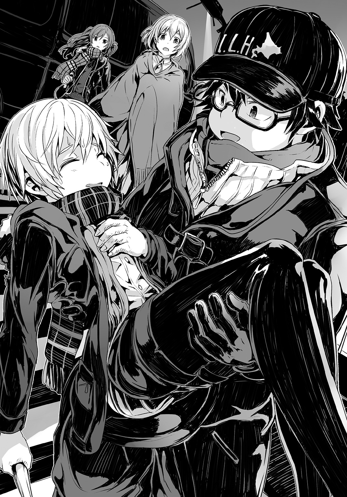
完全武装の道軍一個小隊規模が迅速に交差点に展開し、現場を掌握。倒れていた星野と金井を素早く拘束すると共に万が一を考え、その場でコンニャクを引き剝がす。そして、護送車に乗せて連行しようとするも、全身タイツのような格好となった金井が暴れ始めた。
「まっ、待て、待ってくれ！ ......教えてくれ。何にだ？ 何におれ達のコンニャク・アーマーは負けたんだ？ 小娘のツララ以外、散弾と炎でしか攻撃されてないぞ!?」
「君らは分厚い装甲に全身を守られていたからわからなかったんだろう。......けれど、君らがこの交差点に現れた瞬間から、すでに攻撃は始まっていたんだ」
意味がわからないという顔をする金井に、僕は続けた。
「君らを打ち破ったのはこの春山茶花をはじめとした道ＭＥＮはもちろん、僕と趣味を同じくする素晴らしき同志達と天使の声を持つ棚村ゆかという声優、いや一人のアーティストのおかげでもある。......けれど、コンニャク・アーマーを打ち破ったのだけは......北海道そのものだ」
だからこそ旭川や夕張で戦いたかったんだ。そう僕が言うと、金井はハッとした。
地名で察したのだろう。何が攻撃していたのか、何をされたのか――。
「散弾も火炎瓶も......攻撃ではなく......単に擬装に使っていた防寒具を剝ぎ取るため......？」
「群馬は夏も暑いが、冬も厳しい、雪も降る......そう、驕っただろう。同じだと、慣れたものだと、舐めただろう。......だがそれらは北海道とはレベルが違う。特に日中快晴となった今日みたい日は、比較的温暖な札幌であったとしても――」
空気を読んだのか、健三がスマホを渡してくれた。仕事柄、常に彼のスマホには気候情報が表示がされるようになっているのだ。
「現在の札幌の気温はマイナス一二度。......コンニャクだって凍りつくさ」
そう――凍ったのだ。
人体が纏っている以上、そこから受ける熱で全体が凍りつかなくとも、表面は凍る。
そして凍ってさえしまえば、コンニャクの柔軟性は失われ、硬くなる。
そうなれば、もはや茶花のツララが刺さらない道理はない。
切れ目が入ってしまったコンニャクは必ず裂けるものだ。その確信は当初よりあった。
だが、札幌では一月の平均最低気温がマイナス七度程度であり、どうしてもマイナス二ケタに達する機会はやってこない。
内陸部のために気温がマイナス四〇度にすら達する旭川や、山の間にある夕張なら日常的にマイナス二ケタにもなるが......札幌では、ダメ。
けれど、昨日、北からの風が吹き、雲が消えた。
空にあり続けた分厚い蓋が消えたことで、放射冷却によって地上にあった熱が逃げたのだ。
札幌でやるなら今宵しかなかった。今期最低気温を叩き出した、今日の夜明け前という一番冷え切ったこの時間しか。
だからこそ僕らは考えうる全てで戦ったのだ。少しでも音を響かせ、雰囲気を出すため、そして囮になるめろんと香奈を逃がしやすくするため......だが、何よりも少しでも気温を下げるためにと、街中の電力をカットしたのだ。〇・数度でも下がるのなら、と。
「正直、僕らは諦めかけてたよ。......けれど、北海道はそうじゃなかったのさ」
愕然とする金井の体を、道軍の兵士が二人がかりでつかみ上げ、護送車へと引きずっていく。
「これが北海道の力だってのか！ ......最強と謳われたおれ達が......こんな......こんなぁ!!」
「強かったさ。優秀だったさ。ただ......」
ヘリが高度を下げたのか、辺りを強い風が襲った。
そのあまりの冷たさに傷を負い、全身タイツのような薄手の服しか着ていない金井が歯を喰い縛って体を縮こまらせ、呻くように悲鳴を上げた。
「ただ......お前達に北海道は早すぎた。それだけさ」
金井達を放り込んだ護送車が静かに走りだし、僕らの視界から遠去かっていく。
そして棚村ゆかの歌声が止められると、同志達は貸し切ってあるホテルへと直行していった。彼らにはこれから天然温泉で汗を流した後、『第一回棚村ゆか北部親衛隊大規模オフ会』という名の宴会が待っているのだ。......無論、後で僕も参戦予定である。
「幸之助君、私達も行こう。さすがに冷えるよ。......茶花さんを休ませてあげないと」
「まず足を固定しよう。折れてるかも。......って、随分まじめなことを言うな、めろん。てっきり自分だけススキノグルメを......とか言いだすかと」
「だって、まだこの時間じゃ『すあげプラス』は開いてないでしょ？ それなら時間を有効活用するべきだよ。......開店時刻になり次第、猪突猛進で入店するよ、私」
あぁ、うん、はい。そうね、何かいろいろ忙しかったけれど、彼女はそういう人だったね。
僕が海原さんの名を口に出すと、こちらに！ と、頭上から声が降ってくる。次いで、海原さん本人がヘリから垂れたロープを伝って見事に地上に降りてきた。
「作戦成功、おめでとうございます。よくぞご無事で、帝」
「ありがとう。それより茶花の治療を。最優先だ。僕もついていくよ。あと結構際どい格好している香奈に急ぎ着替えを」
「......うん、あのね、幸之助君？」
めろんがポリポリと頭を搔きながら、おかしな顔をする。
「今、さらっと重要なことが暴露された気がするんだけれど......気のせいかな？」
......うん、言われてみると、海原さん、ポロッと言ったな、今。
ホラ見ろ、香奈と健三がニヤつきだしてやがる......。
だから嫌なんだよ、この肩書き。
「めろんちゃん、考えてもみろよ。道ＭＥＮなんていう俺らみたいな寄せ集めのガキだけで、機密とはいえ公的組織やれてんだぜ？ そして俺のハイエースの修理代やガソリン代をはじめとした多額の予算......普通に考えてありえねぇだろ」
言われてみると......と、めろんは納得したのかしてないのかわからない顔で僕をきょとんとした目で見てくる。
「それじゃ、幸之助君って......ドウテイなの？」
滅茶苦茶答えづらい訊き方してきたな、この子......。
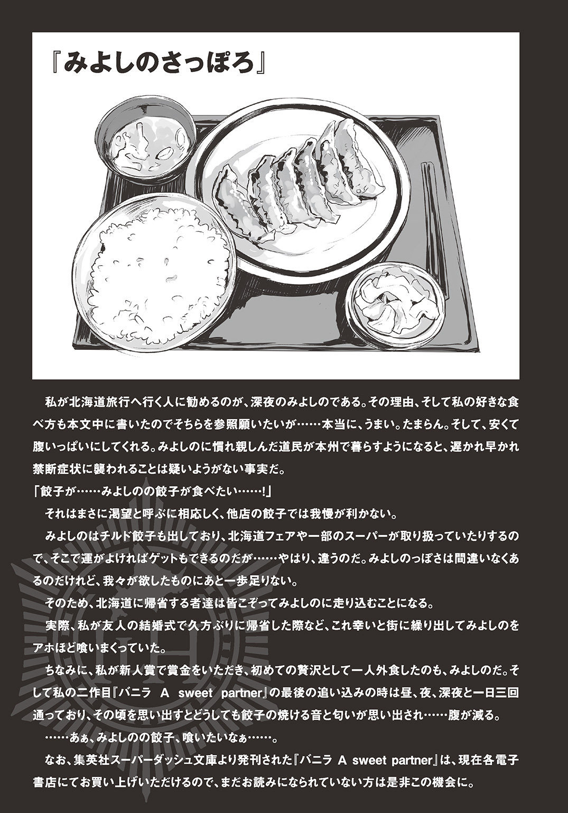
●エピローグ『北海道人と東京人』
北海道帝は独立戦争時に先陣を切ったというか、切らされたとある優秀な役人から始まった。
それ以前までは日本国、そしてその国の実行力たる自衛隊の一部に過ぎなかった組織が、独立にあたって急遽、資金や物資の手配その他諸々の判断を自前で賄わなければならなくなったのだ。それまでの組織体系では対応しきれず、取り急ぎでそうした仕事に慣れていた者達が集められたそうな。その中心となって一番の面倒事をやらされた人物が、初代なのである。
その人物に野心があればまた話は変わったのだろうが、彼が望んだのは平穏な日々だけ。そのため、姿を隠して仕事を粛々とこなしていたのだが、それが裏目に出た。
姿が見えないことである種のカリスマ性が生まれてしまい、祭り上げられたのだ。
独立したばかりで頼れる何かを欲した道民達の意識がそうしたのかもしれないし、それとも道内を納める知事と、独立を守る帝という二つの役職を用意することで日本国が流し始めた〝北海道は独裁政権に支配された〟とするプロパガンダをいなす意図があったのかもしれない。
何にせよ、公民総意により、異様なほど円滑に北海道帝が誕生したのだ。
しかしながら平民に戻りたがった初代は、平時における自らの権限を次々に縮小し、象徴という名のお飾り化させた上で、ようやく二代目にバトンタッチ。そしてちょうどその前後で〝ドウテイ〟という略称が拡がり始め、二代目が真性の童貞だったのかどうかは不明だが、世間からのそうした呼び名に耐えきれずに数年と経たずに交替、三代目以降も同様の流れを辿った。
コロコロ変わるくせに仕事も特にせず――というか、仕事がないのだ――世襲も行われない......そうしたことが繰り返されたことで、北海道帝という地位は完全に形骸化した。
僕、斉藤幸之助個人による大胆極まる予想なのだけれど......ひょっとしたら北海道帝をドウテイと呼び始めたのは初代なのではないか。そんな気がしていた。彼は平民でありたかった、そうであるがために、様々な情勢から、己がならざるを得なかった北海道帝という地位を、自ら消しに動いたのではないか、と。君臨すれども統治せず、から、存在すれども意味はなし、に移行させることで初代北海道帝という経歴そのものの価値を消し、完全なる一般人に戻ろうとしたのではないか......。
まぁ、真相は知る由もないが、ともかくそんな状況になってしまったので北海道帝という立場は、その名に反して掃除当番のように、嫌がる人に無理矢理に押しつけられるものになったのだった。しかもどの代からか知らないが、相続する相手はマジの童貞に限る、と嫌な暗黙のルールが付け加えられた結果、北海道帝の低年齢化が始まったのだった。
「能力に目覚めた僕は香奈のお父さんに連れられて、道軍の研究機関に協力してたんだけど、そこで能力者による特殊部隊構想を聞かされてさ。もういろんな意味でワクワクしてた期間だったよ。退屈な日常とおさらば、その気になれば東京にだって侵入できるかも......ってね。一四歳だ、人型ロボットに乗りたがる年頃の男の子には魅力的過ぎる話さ。そうしたらある日、変な格好した大学生ぐらいの人が現れて、童貞臭そうな顔しているからちょっと代わってくれや、って言われて、よくわからずに承諾したら......このザマさ。第七代北海道帝の誕生だよ」
「......一応、お飾りでも国のトップクラスの地位だよね？ そんなのでいいの？」
「初めての彼女ができたからってんで......ぶっちゃけ、誰でも良かったんだってさ」
一応、その後に裏で審査が行われたそうだけれど、身元はこれ以上ないぐらいにクリーンだったから問題なかったらしい。......まぁ、どうせ仕事なんてないのだし。
「北海道帝になってからは、何とか残っていた権力を駆使してＤＳＫ１７９遺伝子研究部門を独立させ、僕の直属に組み直し、特殊能力保持者による実験部隊を設立。その後茶花が参加するに当たり、正式に北海道帝直属特殊機密部隊道ＭＥＮへと改変したんだ」
......ただ、哀しいのは当初の予定と違って思いの外メンバーの集まりが悪いってのと、たまに見つかっても戦闘をはじめとした実務には不向きだったり、本人にその気がなかったりしたことで......何か、僕と愉快な仲間達のグループ活動みたいな感じで変にまとまってしまい、存在しているんだかしていないんだか、よくわからない組織に落ち着いてしまったことだ。
まぁ今はもう、グータラなノリでいいかなって思っている。これはこれで悪くない。
少なくとも......あんな実戦を経た今は、そう思うのだ。退屈な日常には刺激はとても魅力的に思えるが、強すぎる刺激の中にあっては退屈が魅力になるものなのだと、僕は学んでいた。
「なるほどね。ようやくいろいろ理解できたよ。ドウテイ直属の道ＭＥＮとはいえ、道軍に命令を出せるのは妙だと思っていたんだけど......ドウテイである幸之助君がいるから道ＭＥＮは道軍に働きかけることができるってわけだね」
「うん、あのね、ドウテイである幸之助君って......。いや、まぁ、その......なんだ。めろんの言う通り、道ＭＥＮは道軍の上位組織ではなく、実質的に同列。だから、せいぜい提案・要請の形を取って道軍に〝お願いする〟ことになるんだけど、道軍の最高指令官である僕が所属しているために、部外者からは道ＭＥＮの指揮下に道軍が入っているように見えるわけ」
偶然の結果とはいえ、これには大きな利点があった。個人情報がやたらと流出する田舎であっても、いまだに僕が北海道帝だと知られていないことだ。恐らくそんな噂を一度や二度、誰もが耳にしたことはあるだろう。けれど、道ＭＥＮと道軍の複雑な関係性によって、僕＝北海道帝だというシンプルな図が見えにくくなっているのだ。
単に権限を多く持つ道ＭＥＮのトップ、そうとしか見えないはずだった。
「なるほど。ちょっと驚きの事実だよね。......でも、あの日にみんなで食べた札幌の素晴らしいスープカレーほどの衝撃じゃないけれ......どっ！」
そう言いながら、めろんは気合いと共にハイエースの荷台に積んであった人間が二人ぐらい入っているのではないかという巨大リュックサックを背負う。それだけではなく、両脇には巨大なボストンバッグが二つ、両手には無数の紙袋だ。
全て、北海道の特産物だった。普通に考えれば宅配便を使いたいところだが、ご存じの通り、北海道と日本国は断交しているためにそのルートがなく、今回彼女の送還のために新千歳空港から特別に飛び立つ小型機に自ら運び込むしかなかったのだ。
とはいえ、僕や健三が手伝えばいいのだけれど......首を振られてしまう。
「わ、私は大丈夫だよ。この自分へのお土産を路上にぶちまけるようなマネは命に代えてでもしない......。それより、地面、新雪で危ないよ。幸之助君、茶花さんのフォローしてあげて」
そう言って振り返るめろんはウィンクを一つ、僕らに投げて寄越した。
言われてみればもっともか。群馬戦での負傷により、茶花の左足首は今ギプスで固められており、松葉杖なしでは歩けないのだ。
「行くぞ、茶花」
「はい、隊長......！」
車高の高いハイエースから満面の笑みを浮かべた茶花が、僕の胸に飛び込んでくる。
僕の首に回される華奢な腕、僕の腕が簡単に回る細い胴......。
こんな彼女に、僕らはずっと無理をさせている。抱き締める度に、それを思う。
いつかきちんと礼をしないといけないな。......うーん、何がいいんだろ？
「茶花、顔がとろけてんぞぉ～。報道カメラとかいっぱい来てんだから、あんまり恥ずかしい顔してると明日あたり、後悔っすぞぉ」
香奈の言葉に、茶花は急にいつもの目力を眼鏡の裏に潜ませ、唇を尖らせる。
「別にいいんです。ボク、何も恥ずかしいことしていませんから。......ね、隊長！」
「......まぁ、茶花がいいなら、いいんじゃないの？」
「はい、いいです。最高です、ＯＫです」
僕らのやり取りを見て笑う香奈が茶花のリュックサックを持ち、健三が松葉杖を持って、僕ら道ＭＥＮはめろんの後を追った。
「しっかしアレだな。世間じゃ大騒ぎのくせに、今んところ報道陣、誰もいないのな」
「違うさ健三。普通、車寄せで降車して空港に入るだろ。......まさか、駐車場に車を停めて、そこから歩いてくるとは誰も予想しなかったんだろ」
なんでも旭山動物園からの生放送以降、道庁は大騒ぎだったらしい。
独立を危ぶむ声や公的組織の秘密主義行動に対する不満、さらには〝第七代ドウテイついに童貞卒業か？〟と、ゴシップ記事になったりしていたそうな。
さすがにこれには知事も対応せざるを得ず、すぐさまめろんの出国命令を出したのだ。
それによって群馬戦からわずか数日の今日、特別便での送還である。
空港内に入ると、大荷物のめろんに、幼女を抱く僕、制服姿の香奈、除雪作業員風味の健三という組み合わせはやたらと目立ってしまい、報道陣が怒濤の勢いで走り寄ってくる。
――どのようにして入国を？ ――目的は？ ――どうやってドウテイと接点をお持ちになったんですか？ ――ドウテイとの初体験はいかがでしたか!?
無数の質問が浴びせられるも、めろんはその全てに丁寧に答えていくが、入国のいきさつに関しては船が難破してそれで......と、事実は伏せられていた。さすがに潜入工作員を客人として招き入れたという事実はどうよ？ ということで、こうなったのだ。
だからこそ、手錠に腰縄を付けた強制送還ではなく、出国命令を受けての送還なのだ。
報道陣の攻勢はなおも続く。よくよく見ると外国の報道関係者も来ており、人種様々な人達がめろんへとマイクを向ける。
――Did you enjoy Hokkaido? ――渡航の目的は？ ――What did you eat in Hokkaido? ――何がおいしかったですか？ ――What is the one liked most?
「イエス。アイ・ラブ・ホッカイドウ。......目的も何も入国は先程述べたように難破によるものです。助けてくださった北海道の人達に感謝を。......ソゥ、アイ・ラブ・ホッカイドウ。......全部が最高においしかったですよ、『ジンギスカンキャ●メル』以外は！ ――オゥ、アイ・ラブ・ホッカイドウ!!」
「うん、あのさ、めろん。いろいろあり過ぎてツッコミが追いつかないんだけれど......とりあえず、英語の質問全部にアイ・ラブ・ホッカイドウで対処しようとするのはどうかと思う」
「英語苦手なの、私。いいでしょ、気持ちは伝わっているよ」
そんな滅茶苦茶な質疑応答を繰り返しつつ、出国ゲート近くまで来たものの......ここで最後の関門、ミルキッシモにぶつかってしまって彼女の足が止まった。
あのジェラートの誘惑は、やはり強力だ。また、あの「ハアアァアァアアアァアアァアァン!!」という声を上げ、顔を赤らめて足腰をガクガクさせる様をカメラに撮られ......そうして、ようやく彼女と僕の二人はゲートを抜けることが出来たのだった。
さすがに茶花達はゲート前で一旦お別れ。道庁の役人、道警、空港警備員といった物々しいメンバーに囲まれながら、僕は見送りと監視という名目でめろんを滑走路の片隅に止まっている小型機までエスコートする。
僕らはバスに乗り込み、広大な滑走路の片隅で出発の時を待つ小型機の前へ。
めろんが荷物を持つと幅的にタラップが登れないことがわかったので、現地まで同乗する役人のオッサンが代わりに運び入れてくれることになったのだけれど......量がありすぎて往復作業だ。彼が汗ばみ、上着を脱ぎ捨てる頃には、ちらりちらりと大粒の雪が舞い始めていた。
めろんが、口を開けて舞い来た雪を一粒、食べた。
「不思議なものだね。お別れだと思うと、この厳しすぎる寒さも、この冷たい雪粒さえも......全てが愛おしい。......帰りたくないって、思ってしまう」
まだ食べ足りない？ と、僕が笑うと、彼女は最初勢い良く頷くも、その後に首を振った。
「イエスかノーかならイエス。でも......それだけじゃないよ。東京には何でもあるという人もいるけれど何もかもが、どこか噓くさくて、窮屈で......味気ない。そんな世界に戻るのが、ちょっとね」
そんなはずはない。東京には何でもあるじゃないか。少なくとも......棚村ゆかが、いる。彼女のグッズが販売され、イベントが行われる。それだけで北海道より優れているじゃないか！
僕のそんな気持ちが顔に表れていたのか、めろんは困った子供に向けるような顔で僕を見る。
「......私が北海道に憧れたそもそもの切っ掛けは、きっと逃避だったんだと思う。妾の娘とはいえ、なに不自由のない生活をさせてもらっていたけれど......それでも......」
めろんがどこか遠い目をして、いきなりそんなことを口にし始め......僕は何を言っていいのかわからず、ネクタイの先を胸ポケットに突っ込んでひたすらタラップを往復する役人のオッサンを見守るしかなかった。
彼女はふと、空港ターミナルを見る。それに倣うと三階にある展望スペースの窓に見慣れた三人のシルエットが並び、こちらに手を振っているのがかすかに見えた。茶花達だ。
「ため息ばかりの私に夢や希望を与えてくれたのが、法螺吹先生の『北海道解体新書』だった。この世にありながら異世界のような、そんな場所がある。東京から最も近くて、最も遠い国......北海道。魅惑の美食が溢れる幻の大地、日本の奴隷であることを拒否した、自由を求めた広大なる国......。私をときめかせ、走らせるのに十分な動機だった」
彼女は鳥が翼を広げるように、角巻きのかかる両腕を伸ばした。
「来られて良かった。私の理想が本当にあったんだもの。それを実感できただけでも、素晴らしい価値があった。幸之助君達をはじめとした多くの人に迷惑をかけてしまったけれどね。さすがに私も心が痛むけれど、あえて言わせてちょうだい。......全部が良かった。最高だった。おいしかった。ありがとう！」
踊るようにくるくると回り始めためろんの微笑みは、どこか寂しげに見えてしまう。
密入国に加え、千葉や群馬といった農閥を強く刺激してしまった経歴ができてしまった以上、今後彼女がどのような立場になろうとも、恐らく二度とこの北海道の地に立つことは認められないだろう。
それをわかっているからこその、寂しげな微笑みなのだ。
「はぁはぁ......荷物の積み込み、終了しました......はぁはぁ......そろそろ搭乗を。もうすぐ出発時間ですので」
その役人のオッサンの言葉に、めろんの回転が止まる。
「これで私達の旅も終わりだね」
そう、終わり。
......ただし、このままなら、だ。
タラップを上り始めためろんを、僕は呼び止めた。彼女はタラップの上で振り返る。
「なに、幸之助君？」
「君にもしその気が、いや、その覚悟があるのなら......北海道に残るかい？」
めろんは、そしてその場にいる誰もが目を見開き、絶句した。
誰も彼もが固まり、まるで時が止まったかのよう。
降りゆく雪粒だけが、時の流れの中にあった。
北海道に、残る。それは旅ではなく、日常としてこの北の大地で生きるということ。
春の桜は山桜、うかうかすると気がつかぬうちに過ぎていく夏、意識しても見分けがつかないほど存在感のない秋、そして大量の雪と極寒が大地を覆い尽くす長い冬......そんな世界で生きていくということ。
もし、彼女が残るというのなら亡命扱いになるだろうが、僕の立場を利用すればその認可が下りるのは難しくないはずだ。ただし、その代償に東京へは二度と戻れない。
けれど、もしかしたら彼女はそれを望むのではないか......そう、思った。
そんな、雪以外の全てが静止した世界に再び動きをもたらしたのは――めろん自身だった。
彼女は踵を返すとタラップを飛び下り、僕へと走り来る。
自然と両腕は前に伸び、僕は彼女を抱き留めた。
それが返答なのだ、そう思った。
けれど――。
「ねぇ、幸之助君。......一緒に東京へ来ない？」
めろんが僕の耳元で囁いたその言葉は、僕の予想をはるかに超えたもの。
さすがに呆気に取られ、言葉が出ない。だが、めろんは構わず追い討ちをかける。
「私の父や祖父と交渉すれば......この北の大地の情報と引き替えに、東京で自由な生活が送れるはず。あなたの望むものが手に入るんじゃない？ ......どうかな」
......わかる、わかっている。
僕にこれまで脱北を躊躇わせていた最大の問題が、これで解決するのだということは。
脱北者となれば生活の全てが日本国の保護という名の管理下に置かれることになり、どこまでの自由が認められるのかがわからなかった。喰うに困ることはなくとも、金銭的な余裕はなく、かといって働くこともできないかもしれない......そうなれば、当然棚村ゆかの応援もできない。近くにいるはずなのに今以上に彼女との距離ができてしまうのではないか......その恐怖が常にあった。
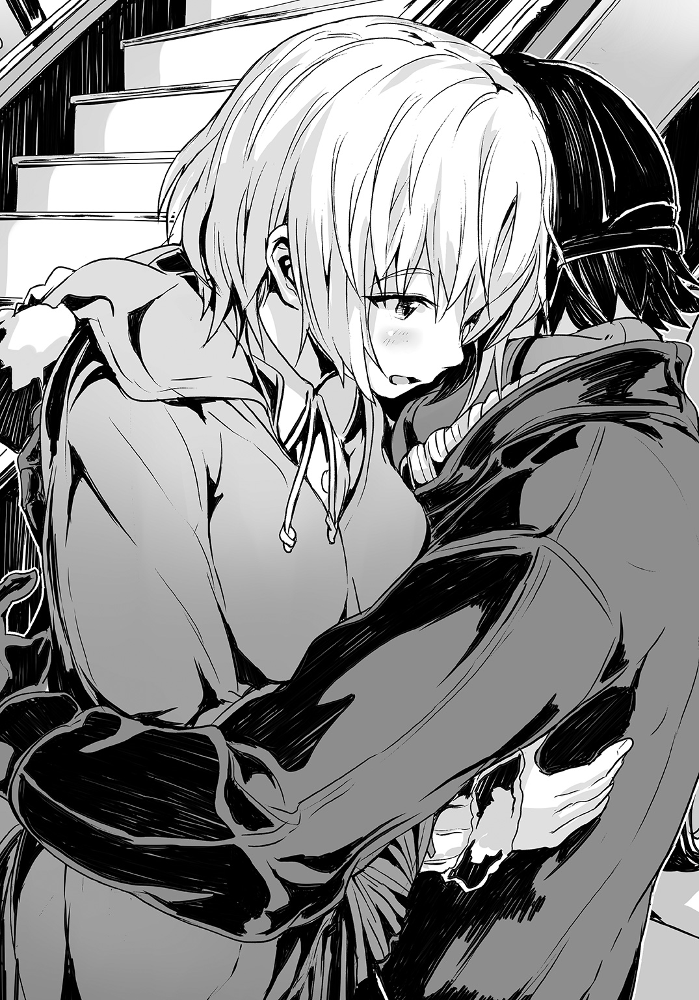
それが、今、めろんの助力があれば......。
めろんを抱きしめる僕の腕に、思わず力が入ったのがわかった。
そして、同時に僕の背に突き刺さる強烈な視線もまた、わかる。
......これは、茶花だ。
「あのさ、めろん......」
鼻先がくっつくほどの距離で、僕らは相手の瞳を見つめ合う。彼女は、やんわりと微笑んだ。
「わかってる。不思議だよね。......嫌いでも、嫌でも、そう簡単には捨てられない。故郷って、案外そういうものなのかもしれないね」
「......気持ちは、嬉しかった」
「私もだよ、幸之助君。......それに私が残っちゃったら、君との約束が果たせないよ」
約束？ と、怪訝な顔をする僕の腕からめろんは抜け出ると、一気にタラップを駆け上り、機体ドアの前で振り返る。
「どんな手段を使ってでもまた来るよ！ そして......待ってる、東京で!!」
――この旅のお礼に、東京に来たら私がガイドしてあげる。
そうだ、ハイエースの中で、そんな約束をしたのだ。
いろいろありすぎてすっかり忘れていたけれど......けれど、彼女は......。
「今はさようなら、北海道人！」
めろんが微笑み、僕もまた、笑った。
「あぁそうだった、約束だったものな。......したっけ、また会おう、東京人！」
僕の言葉に彼女は微笑みをキョトンとした表情に変えるのだけれど......あぁ、〝したっけ〟は北海道弁だったか。〝それじゃ〟とか〝そうしたら〟とか、そういう意味である。
状況的にいって伝わらんもんかな？ と思っていると、彼女はしてやったりという顔に。どうやら伝わっ――。
めろんが突如両手を拳にして振り上げる。
「アイッ、ラブッ、ホッカイッドオォオォオォオォ―――――――――――――――――!!」
広大な滑走路中に轟き渡る、そんな大音声で彼女は叫んだ。
したっけは別に英語じゃねぇよ......。
......でもまぁ......気持ちは伝わってきたけどさ。
「......ったく、最後まで賑やかなことこの上ないな」
僕が苦笑していると飛行機のドアが半ば強引に閉められ、タラップも外され、機体はすぐさま動きだす。
空港警備員と道警の人達と共に、僕は飛行機が加速していくのを見つめ続けた。
そして小さな機体はあっという間に空へと舞い上がり、雪を生む灰色の世界に溶けていく。
警備員達が寒さから逃れるようにさっさとバスに乗り込んでいったので、彼らに先に戻るように告げた。
彼女の乗った飛行機のエンジン音が消えるまで、南の空を......東京へと繫がる空を見つめていたかったのだ。
早乙女めろん。東京都の工作員にして、北海道を喰いに来た女。
その心は僕と同じ。そして、四一度線を挟みながら、お互いの世界を夢見た者。
「さらば、同志。また会う日まで」
僕は白い息を空へと放つ。そして、ちらつく雪の中、一人、仲間達が待つ空港ターミナルへと向かって歩きだす。
「......ラーメンでも喰って、帰るか。......あっ！」
そういや......僕との約束は東京でのガイドだけれど、北海道帝としての約束が......。
――私を今しばらく北海道に居させてくれるなら、こんな胸ぐらい好きに揉み尽くして構わない。
てんやわんやですっかり忘れていたけれど......そっちの約束もあったじゃないか！
まだ揉み尽くしてないぞ!?
「......思っていたより、再会は早くなるかもしれないな」
僕は今一度、南の空を見上げたのだった。
東京へと繫がる、その空を......
〈了〉
あ と が き
みなさん、どうも、北海道弁なんて自分の辞書にはないぜと信じて上京したものの、他作品の原稿内で『寄りかかる』を『寄しかかる』とナチュラルに北海道弁をかまして編集部や校正さんを困惑させたアサウラです。お元気していたでしょうか？ 私は元気です。
いやぁ、不思議なもので方言ってのは知らず知らずのうちに出てしまうもののようでして......えぇ、他社さんの某作品内で北海道弁をかました際は、最後まで誰も気づくことなく出版までいったことがあります。
ちなみにその際は、言葉としては間違ってないものの、本来の意図と違う受け取られ方をしておりました......。
本作に登場する芭楽香奈はかなり極端ですが、北海道弁は微妙に標準語と似た言葉だったりするため、チェックが大変なのです......。
しかも北海道自体が広大であるため、地域によって使える言葉が違ったり......。
そのため、本作ではあからさまに間違えやすい言葉、または北海道弁だと気づかずに「ん？」となるようなものは意図的に通じやすい言葉に変えてあったりします。
例えば『耳掛け』を『耳当て』にしたり、手袋を『はく』とするところを『着ける』とかですね。まぁ、列挙し始めると結構あります。
私の関わる作品は大抵わけのわからないものなのですが、本作も相変わらずわけのわからん作品となっているかと思います。
今回は何故かあとがきのページに余裕があるため、せっかくですので執筆経緯でもご紹介させていただこうかと。
それは、ダッシュエックス文庫編集部の編集長が交代したということで、いつもの担当様と新編集長で食事に行った際の出来事でした。
新作のアイディア出しも兼ねて二軒目に入ったのですが、その際のお店というのが、私がデビュー直後からお世話になっている深見真先生（漫画『魔法少女特殊戦あすか』原作、ＴＶアニメ『PSYCHO-PASS』脚本、フルＣＧアニメーション映画『バイオハザード ヴェンデッタ』脚本等々）のご自宅から十数メートルの所でして......全てはここから始まったのです。
すぐそこに深見さんが住んでるんですよー、と口にしたところ、まるで近隣一帯を監視してんじゃねぇの？ っていうタイミングで私のスマホに『アサウラさんこんにちはー。今なにしてます？』とメッセージが送られてきましてね？
盗聴器の存在を疑いつつ、今の状況をお伝えしたら、新編集長にご挨拶だけでも......ということで途中参加が決定。
今こちらはアイディア出ししているのだと伝えると、来店早々深見先生は酒をグビリと飲むなり、わけのわからないことをのたまいだしまして......。
「アサウラさん、北海道出身なんだから北海道舞台にしたらいいんですよ。過酷な環境で生きてるからミュータント化して特殊能力とか使えるんですよ......そう、Ｘ－ＭＥＮみたいに！」
多分、アルコールの回った深見先生の頭の中では北海道ってのは人外魔境であり、ある意味でマッドマックスな世界だという認識だったのでしょう。
何言ってんだこの人、相変わらず頭がどうかしている......とか思ってると、こちらも酒が回っていたのか知りませんが担当様が虚空を見つめながら「じゃ、それで」と一言呟き......本作の制作が決定しました。マジで。みんなどうかしている。
ということで、酔っ払いの無茶振りから本ができるという、少々珍しい形式であったこの本......いかがだったでしょうか。
少しでもお楽しみいただけていれば幸いです。
ちなみに本作で登場させていただきました商品・お店は物語の設定上、北海道にしかない......みたいなノリになっておりますが、我々の住むこちらの『現実』という名の世界におきましては、本州でも一部販売・支店展開をしているものもありますので、ご興味をお持ちになっていただけた方々はそちらを探して、足を運ばれるのも良いかと思います。
とはいえ、オススメはこの本を片手に、幻の大地・北海道へと渡り、旅行しつつ食べ歩いていただくというのが一番です。特に花粉の時期や梅雨の時期に行くと、天国に感じられることでしょう。
余談ですが、先日『みよしのさっぽろ』が２０２０年頃を目安に、東京で直営店舗展開予定という報道があり、同郷の友人一同、大騒ぎしました。みよしのだけは、本当に他では代えのきかないオンリーワンなんです......えぇ。特に深夜のは！ がんばれ、みよしの！
さて、そんなこんな流れですが、そろそろ謝辞の方をば。
かわいくも格好良いイラストを描いてくださいました柴乃櫂人さん、ありがとうございます。『ベン・トー』以降、プライベートでも仲良くさせていただいておりましたが、また一緒に本を作らせていただけたことを喜ばしく思います。今後ともよろしくお願いいたします。
そして、今や五〇〇〇人ほどとなった小さな町出身という、正真正銘、本当の意味で私と同郷であるデザイナー、ｕｎｉ－ｃｏの杉本さん、某アメコミ映画っぽい感じ、という無茶な発注を見事に受けてくださり、素晴らしいお仕事をしてくださって感謝しております。
そしてこんな内容の作品に、しかも妙な登場の仕方なのに出演（？）の許諾をくださいましたメロン熊さん、本当にありがとうございます。グッズはもちろんですが、とりわけメロン熊Ｔシャツが大好きです。デザイン、着心地、耐久性が素晴らしく、大事に着させていただいております。――ふるさと納税は夕張へ!! 夕張バンザイ!!
また、無茶振りをするだけして去り、しばらくした後に再会すると「え？ あれ、本当に作ってるんですか？」と驚き、頷いてみせるとゲラゲラと子供のように笑っていた深見先生......おかげさまで何とかかんとか形になりました。とりあえず一〇〇〇冊ぐらい買ってください。
本作の制作を決定した際、顔の全面に『会社の経費で北海道旅行がしたい』と書いてあった浦和レッズサポーター兼フーリガンの担当様、作品の特性上わかりにくい北海道弁がナチュラルに混じってくる本作に多大なストレスを受けたであろう校正さん......出版、そして販売に関わってくださった全ての皆様、また、本作を制作するにあたり、様々なご協力を願った道民の友人各位、あと若干名のモデルになってくださった方々......この度はまことにありがとうございました！
そして、最後となりましたが、本作をお買い上げいただき、ここまで読んでくださった皆々様......本当に本当に、ありがとうございます！
次が出るのかどうかも今のところフワッとしているアレな状況ですが、とにもかくにも、今後ともどうぞよろしくお願い致します。
ではでは、またお会いできることを祈りつつこの辺で。
したっけ！
あ、群馬さんと千葉さん、大好きです。いつもお世話になっております。
アサウラ
著者紹介
アサウラ
北海道の田舎出身。
北国の田舎に住む利点は？ と問われたら『長毛の超大型犬が飼いやすい』と答えます。
illustration
柴乃 櫂人 しばの かいと
大阪府出身東京都在住。
北海道のソウルフード・ダブルラーメンを試食、どこか懐かしい味がしました。
ダッシュエックス文庫DIGITAL
道－ＭＥＮ
北海道を喰いに来た乙女
著者 アサウラ
© ASAURA 2017
２０１７年７月31日発行
この電子書籍は、ダッシュエックス文庫「道－ＭＥＮ 北海道を喰いに来た乙女」
２０１７年６月28日発行の第１刷を底本としています。
発行者 鈴木晴彦
発行所 株式会社 集英社
〒１０１－８０５０
東京都千代田区一ツ橋２丁目５番10号
０３－３２３０－６０８０（読者係）
制作所 株式会社ＩＣＥ
本作品の全部または一部を無断で複製、転載、改竄、インターネット上に掲載すること、および有償無償に関わらず、本データを第三者に譲渡することを禁じます。なお個人利用の目的であっても、コピーガードを解除しての複製は、法律で禁じられています。